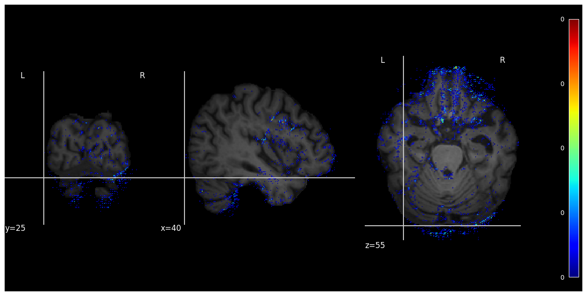
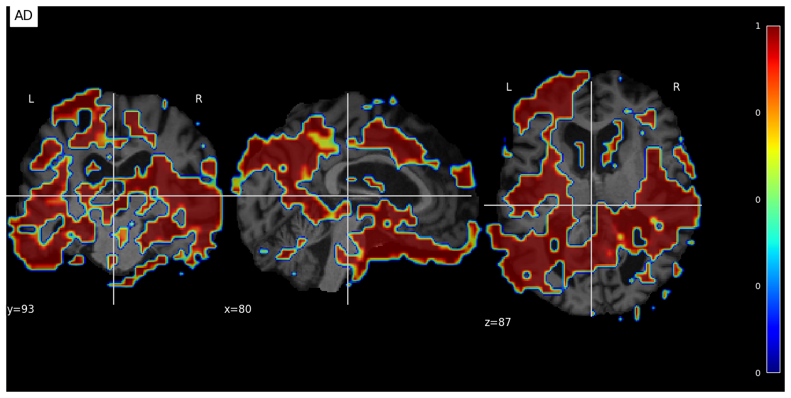
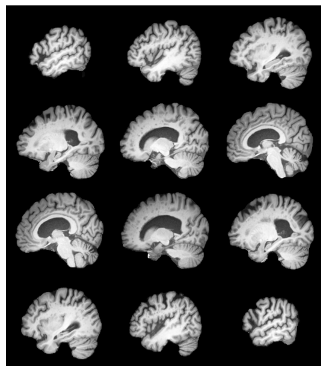

from google.colab import drive
drive.mount('/content/drive')Mounted at /content/driveIntroduction In this notebook we will explore how the model makes a decision on the example of simple 3D CNN classificationl model on pytorch. In the current notebook we use Alzheimer’s Disease Neuroimaging Initiative (ADNI) dataset (ADNI is a global research effort that actively supports the investigation and development of treatments that slow or stop the progression of Alzheimer’s disease (AD)) , preprocessed by the Clinica software platform.
Our goal will be to study various techniques for interpreting СNN models to test the reliability of neural networks in the case of MRI brain classification.
Proceesing with this notebook you confirm, that you have granted access to ADNI 1, 2, 3, GO Study Data. And your agreement on data terms and conditions.
The data accesed from the original sourse: https://ida.loni.usc.edu/pages/access/studyData.jsp?categoryId=14&subCategoryId=30
Collecting nilearn==0.9.2 Downloading nilearn-0.9.2-py3-none-any.whl.metadata (6.7 kB) Requirement already satisfied: joblib>=0.15 in /usr/local/lib/python3.10/dist-packages (from nilearn==0.9.2) (1.4.2) Requirement already satisfied: lxml in /usr/local/lib/python3.10/dist-packages (from nilearn==0.9.2) (4.9.4) Requirement already satisfied: nibabel>=3.0.0 in /usr/local/lib/python3.10/dist-packages (from nilearn==0.9.2) (5.2.1) Requirement already satisfied: numpy>=1.18 in /usr/local/lib/python3.10/dist-packages (from nilearn==0.9.2) (1.26.4) Requirement already satisfied: pandas>=1.0 in /usr/local/lib/python3.10/dist-packages (from nilearn==0.9.2) (2.1.4) Requirement already satisfied: requests>=2 in /usr/local/lib/python3.10/dist-packages (from nilearn==0.9.2) (2.32.3) Requirement already satisfied: scikit-learn>=0.22 in /usr/local/lib/python3.10/dist-packages (from nilearn==0.9.2) (1.5.2) Requirement already satisfied: scipy>=1.5 in /usr/local/lib/python3.10/dist-packages (from nilearn==0.9.2) (1.13.1) Requirement already satisfied: packaging>=17 in /usr/local/lib/python3.10/dist-packages (from nibabel>=3.0.0->nilearn==0.9.2) (24.1) Requirement already satisfied: python-dateutil>=2.8.2 in /usr/local/lib/python3.10/dist-packages (from pandas>=1.0->nilearn==0.9.2) (2.8.2) Requirement already satisfied: pytz>=2020.1 in /usr/local/lib/python3.10/dist-packages (from pandas>=1.0->nilearn==0.9.2) (2024.2) Requirement already satisfied: tzdata>=2022.1 in /usr/local/lib/python3.10/dist-packages (from pandas>=1.0->nilearn==0.9.2) (2024.1) Requirement already satisfied: charset-normalizer<4,>=2 in /usr/local/lib/python3.10/dist-packages (from requests>=2->nilearn==0.9.2) (3.3.2) Requirement already satisfied: idna<4,>=2.5 in /usr/local/lib/python3.10/dist-packages (from requests>=2->nilearn==0.9.2) (3.10) Requirement already satisfied: urllib3<3,>=1.21.1 in /usr/local/lib/python3.10/dist-packages (from requests>=2->nilearn==0.9.2) (2.2.3) Requirement already satisfied: certifi>=2017.4.17 in /usr/local/lib/python3.10/dist-packages (from requests>=2->nilearn==0.9.2) (2024.8.30) Requirement already satisfied: threadpoolctl>=3.1.0 in /usr/local/lib/python3.10/dist-packages (from scikit-learn>=0.22->nilearn==0.9.2) (3.5.0) Requirement already satisfied: six>=1.5 in /usr/local/lib/python3.10/dist-packages (from python-dateutil>=2.8.2->pandas>=1.0->nilearn==0.9.2) (1.16.0) Downloading nilearn-0.9.2-py3-none-any.whl (9.6 MB) ━━━━━━━━━━━━━━━━━━━━━━━━━━━━━━━━━━━━━━━━ 9.6/9.6 MB 24.5 MB/s eta 0:00:00 Installing collected packages: nilearn Successfully installed nilearn-0.9.2 Collecting nibabel==4.0.2 Downloading nibabel-4.0.2-py3-none-any.whl.metadata (6.1 kB) Requirement already satisfied: numpy>=1.17 in /usr/local/lib/python3.10/dist-packages (from nibabel==4.0.2) (1.26.4) Requirement already satisfied: packaging>=17.0 in /usr/local/lib/python3.10/dist-packages (from nibabel==4.0.2) (24.1) Requirement already satisfied: setuptools in /usr/local/lib/python3.10/dist-packages (from nibabel==4.0.2) (71.0.4) Downloading nibabel-4.0.2-py3-none-any.whl (3.3 MB) ━━━━━━━━━━━━━━━━━━━━━━━━━━━━━━━━━━━━━━━━ 3.3/3.3 MB 39.9 MB/s eta 0:00:00 Installing collected packages: nibabel Attempting uninstall: nibabel Found existing installation: nibabel 5.2.1 Uninstalling nibabel-5.2.1: Successfully uninstalled nibabel-5.2.1 Successfully installed nibabel-4.0.2
Unable to display output for mime type(s): application/vnd.colab-display-data+jsonimport os
from os import path
import sys
import argparse
import pandas as pd
import numpy as np
from pathlib import Path
import torch
import torch.nn as nn
import torch.nn.functional as F
from torch.utils.data import DataLoader, Dataset, sampler
import torchvision.transforms as transforms
import abc
import logging
import nibabel as nib
import matplotlib.pyplot as plt
from nilearn import plotting
from tqdm import tqdmLink to the data - https://drive.google.com/file/d/1FnE-zduDsd7R6EOKxTpecdF0riRgFfy-/view?usp=sharing
--2024-10-01 08:14:00-- https://getfile.dokpub.com/yandex/get/https://disk.yandex.ru/d/88OCJ8NM_91IRg
Resolving getfile.dokpub.com (getfile.dokpub.com)... 142.132.255.217
Connecting to getfile.dokpub.com (getfile.dokpub.com)|142.132.255.217|:443... connected.
HTTP request sent, awaiting response... 302 Found
Location: https://downloader.disk.yandex.ru/disk/ed24efdb4875fc5ff820fdc89acb811203b1820743d072e00d3c3cd47cde5d11/66fbe77a/yLVzctR40OkW-hBDuEw6jDCp6ngDgPALQ2SDKu2AA2GKD_uq0viO6FzDzu_kVmphG-Drz7GPkJziyWwWLK84Xg%3D%3D?uid=0&filename=10_sub_for_validation.zip&disposition=attachment&hash=UDeXMWro4Yy9SewW5d4RkyQlRPDoGA3kwHnm%2BnINFlfxnTJjxNXH4To6UrVSrr2Vq/J6bpmRyOJonT3VoXnDag%3D%3D%3A&limit=0&content_type=application%2Fzip&owner_uid=222635455&fsize=818631908&hid=c7ece160fe69d440642d3425a44b73e0&media_type=compressed&tknv=v2 [following]
--2024-10-01 08:14:01-- https://downloader.disk.yandex.ru/disk/ed24efdb4875fc5ff820fdc89acb811203b1820743d072e00d3c3cd47cde5d11/66fbe77a/yLVzctR40OkW-hBDuEw6jDCp6ngDgPALQ2SDKu2AA2GKD_uq0viO6FzDzu_kVmphG-Drz7GPkJziyWwWLK84Xg%3D%3D?uid=0&filename=10_sub_for_validation.zip&disposition=attachment&hash=UDeXMWro4Yy9SewW5d4RkyQlRPDoGA3kwHnm%2BnINFlfxnTJjxNXH4To6UrVSrr2Vq/J6bpmRyOJonT3VoXnDag%3D%3D%3A&limit=0&content_type=application%2Fzip&owner_uid=222635455&fsize=818631908&hid=c7ece160fe69d440642d3425a44b73e0&media_type=compressed&tknv=v2
Resolving downloader.disk.yandex.ru (downloader.disk.yandex.ru)... 77.88.21.127, 2a02:6b8::2:127
Connecting to downloader.disk.yandex.ru (downloader.disk.yandex.ru)|77.88.21.127|:443... connected.
HTTP request sent, awaiting response... 302 Found
Location: https://s779sas.storage.yandex.net/rdisk/ed24efdb4875fc5ff820fdc89acb811203b1820743d072e00d3c3cd47cde5d11/66fbe77a/yLVzctR40OkW-hBDuEw6jDCp6ngDgPALQ2SDKu2AA2GKD_uq0viO6FzDzu_kVmphG-Drz7GPkJziyWwWLK84Xg==?uid=0&filename=10_sub_for_validation.zip&disposition=attachment&hash=UDeXMWro4Yy9SewW5d4RkyQlRPDoGA3kwHnm%2BnINFlfxnTJjxNXH4To6UrVSrr2Vq/J6bpmRyOJonT3VoXnDag%3D%3D%3A&limit=0&content_type=application%2Fzip&owner_uid=222635455&fsize=818631908&hid=c7ece160fe69d440642d3425a44b73e0&media_type=compressed&tknv=v2&ts=6236940cd5280&s=3cda0f24ccb0c103f8f226fee695c0d876290a802c4546094128fecea0f904fe&pb=U2FsdGVkX19r6MVLA_LCgdc-ebQwA21usMS7Eyd2c9owIAxMPXSgyMnTJC9pSNTwFnmCAZClDR6_rBnvvP-edDSNtVPcc9CiyuvW4_QNn8g [following]
--2024-10-01 08:14:02-- https://s779sas.storage.yandex.net/rdisk/ed24efdb4875fc5ff820fdc89acb811203b1820743d072e00d3c3cd47cde5d11/66fbe77a/yLVzctR40OkW-hBDuEw6jDCp6ngDgPALQ2SDKu2AA2GKD_uq0viO6FzDzu_kVmphG-Drz7GPkJziyWwWLK84Xg==?uid=0&filename=10_sub_for_validation.zip&disposition=attachment&hash=UDeXMWro4Yy9SewW5d4RkyQlRPDoGA3kwHnm%2BnINFlfxnTJjxNXH4To6UrVSrr2Vq/J6bpmRyOJonT3VoXnDag%3D%3D%3A&limit=0&content_type=application%2Fzip&owner_uid=222635455&fsize=818631908&hid=c7ece160fe69d440642d3425a44b73e0&media_type=compressed&tknv=v2&ts=6236940cd5280&s=3cda0f24ccb0c103f8f226fee695c0d876290a802c4546094128fecea0f904fe&pb=U2FsdGVkX19r6MVLA_LCgdc-ebQwA21usMS7Eyd2c9owIAxMPXSgyMnTJC9pSNTwFnmCAZClDR6_rBnvvP-edDSNtVPcc9CiyuvW4_QNn8g
Resolving s779sas.storage.yandex.net (s779sas.storage.yandex.net)... 5.255.228.149, 2a02:6b8:c02:127b:0:41af:da2b:113d
Connecting to s779sas.storage.yandex.net (s779sas.storage.yandex.net)|5.255.228.149|:443... connected.
HTTP request sent, awaiting response... 200 OK
Length: 818631908 (781M) [application/zip]
Saving to: ‘10_sub_for_validation.zip’
10_sub_for_validati 100%[===================>] 780.71M 9.97MB/s in 83s
2024-10-01 08:15:26 (9.39 MB/s) - ‘10_sub_for_validation.zip’ saved [818631908/818631908]
Archive: 10_sub_for_validation.zip
creating: 10_sub_for_validation/
creating: 10_sub_for_validation/10_sub_for_validation/
creating: 10_sub_for_validation/10_sub_for_validation/sub-ADNI035S0555/
inflating: 10_sub_for_validation/10_sub_for_validation/sub-ADNI035S0555/df_scores.csv
inflating: 10_sub_for_validation/10_sub_for_validation/sub-ADNI035S0555/sub-ADNI035S0555_ses-M00_T1_cn.png
inflating: 10_sub_for_validation/10_sub_for_validation/sub-ADNI035S0555/interpretation_mean_pertrub.png
inflating: 10_sub_for_validation/10_sub_for_validation/sub-ADNI035S0555/sub-ADNI035S0555_ses-M108_T1_ad.png
inflating: 10_sub_for_validation/10_sub_for_validation/sub-ADNI035S0555/interpretation_guided_backprop.png
inflating: 10_sub_for_validation/10_sub_for_validation/sub-ADNI035S0555/interpretation_gradcam_mask.png
creating: 10_sub_for_validation/10_sub_for_validation/sub-ADNI035S0555/raw_data/
inflating: 10_sub_for_validation/10_sub_for_validation/sub-ADNI035S0555/raw_data/sub-ADNI035S0555_ses-M00_T1w_space-MNI152NLin2009cSym_desc-Crop_res-1x1x1_T1w.nii.gz
inflating: 10_sub_for_validation/10_sub_for_validation/sub-ADNI035S0555/raw_data/ground_truth_mask_sub-ADNI035S0555.nii.gz
inflating: 10_sub_for_validation/10_sub_for_validation/sub-ADNI035S0555/raw_data/interpretation_guided_backprop_mask_T1_sub-ADNI035S0555_ses-M108.nii.gz
inflating: 10_sub_for_validation/10_sub_for_validation/sub-ADNI035S0555/raw_data/interpretation_mean_pertrub_mask_T1_sub-ADNI035S0555_ses-M108.nii.gz
inflating: 10_sub_for_validation/10_sub_for_validation/sub-ADNI035S0555/raw_data/interpretation_gradcam_mask_mask_T1_sub-ADNI035S0555_ses-M108.nii.gz
inflating: 10_sub_for_validation/10_sub_for_validation/sub-ADNI035S0555/raw_data/sub-ADNI035S0555_ses-M108_T1w_space-MNI152NLin2009cSym_desc-Crop_res-1x1x1_T1w.nii.gz
creating: 10_sub_for_validation/10_sub_for_validation/sub-ADNI035S0555/ground_truth/
inflating: 10_sub_for_validation/10_sub_for_validation/sub-ADNI035S0555/ground_truth/slices_from_inferior_to_superior.png
inflating: 10_sub_for_validation/10_sub_for_validation/sub-ADNI035S0555/ground_truth/gt_slices.png
inflating: 10_sub_for_validation/10_sub_for_validation/sub-ADNI035S0555/ground_truth/slices_from_left_to_right.png
inflating: 10_sub_for_validation/10_sub_for_validation/sub-ADNI035S0555/ground_truth/slices_from_from_anterior_to_posterior.png
creating: 10_sub_for_validation/10_sub_for_validation/sub-ADNI137S0972/
inflating: 10_sub_for_validation/10_sub_for_validation/sub-ADNI137S0972/sub-ADNI137S0972_ses-M96_T1_ad.png
inflating: 10_sub_for_validation/10_sub_for_validation/sub-ADNI137S0972/df_scores.csv
inflating: 10_sub_for_validation/10_sub_for_validation/sub-ADNI137S0972/sub-ADNI137S0972_ses-M00_T1_cn.png
inflating: 10_sub_for_validation/10_sub_for_validation/sub-ADNI137S0972/interpretation_mean_pertrub.png
inflating: 10_sub_for_validation/10_sub_for_validation/sub-ADNI137S0972/interpretation_guided_backprop.png
inflating: 10_sub_for_validation/10_sub_for_validation/sub-ADNI137S0972/interpretation_gradcam_mask.png
creating: 10_sub_for_validation/10_sub_for_validation/sub-ADNI137S0972/raw_data/
inflating: 10_sub_for_validation/10_sub_for_validation/sub-ADNI137S0972/raw_data/sub-ADNI137S0972_ses-M00_T1w_space-MNI152NLin2009cSym_desc-Crop_res-1x1x1_T1w.nii.gz
inflating: 10_sub_for_validation/10_sub_for_validation/sub-ADNI137S0972/raw_data/sub-ADNI137S0972_ses-M96_T1w_space-MNI152NLin2009cSym_desc-Crop_res-1x1x1_T1w.nii.gz
inflating: 10_sub_for_validation/10_sub_for_validation/sub-ADNI137S0972/raw_data/interpretation_mean_pertrub_mask_T1_sub-ADNI137S0972_ses-M96.nii.gz
inflating: 10_sub_for_validation/10_sub_for_validation/sub-ADNI137S0972/raw_data/interpretation_guided_backprop_mask_T1_sub-ADNI137S0972_ses-M96.nii.gz
inflating: 10_sub_for_validation/10_sub_for_validation/sub-ADNI137S0972/raw_data/ground_truth_mask_sub-ADNI137S0972.nii.gz
inflating: 10_sub_for_validation/10_sub_for_validation/sub-ADNI137S0972/raw_data/interpretation_gradcam_mask_mask_T1_sub-ADNI137S0972_ses-M96.nii.gz
creating: 10_sub_for_validation/10_sub_for_validation/sub-ADNI137S0972/ground_truth/
inflating: 10_sub_for_validation/10_sub_for_validation/sub-ADNI137S0972/ground_truth/gt_slices.png
creating: 10_sub_for_validation/10_sub_for_validation/sub-ADNI116S1249/
inflating: 10_sub_for_validation/10_sub_for_validation/sub-ADNI116S1249/sub-ADNI116S1249_ses-M00_T1_cn.png
inflating: 10_sub_for_validation/10_sub_for_validation/sub-ADNI116S1249/df_scores.csv
inflating: 10_sub_for_validation/10_sub_for_validation/sub-ADNI116S1249/interpretation_mean_pertrub.png
inflating: 10_sub_for_validation/10_sub_for_validation/sub-ADNI116S1249/interpretation_guided_backprop.png
inflating: 10_sub_for_validation/10_sub_for_validation/sub-ADNI116S1249/interpretation_gradcam_mask.png
inflating: 10_sub_for_validation/10_sub_for_validation/sub-ADNI116S1249/sub-ADNI116S1249_ses-M108_T1_ad.png
creating: 10_sub_for_validation/10_sub_for_validation/sub-ADNI116S1249/raw_data/
inflating: 10_sub_for_validation/10_sub_for_validation/sub-ADNI116S1249/raw_data/sub-ADNI116S1249_ses-M00_T1w_space-MNI152NLin2009cSym_desc-Crop_res-1x1x1_T1w.nii.gz
inflating: 10_sub_for_validation/10_sub_for_validation/sub-ADNI116S1249/raw_data/ground_truth_mask_sub-ADNI116S1249.nii.gz
inflating: 10_sub_for_validation/10_sub_for_validation/sub-ADNI116S1249/raw_data/interpretation_guided_backprop_mask_T1_sub-ADNI116S1249_ses-M108.nii.gz
inflating: 10_sub_for_validation/10_sub_for_validation/sub-ADNI116S1249/raw_data/sub-ADNI116S1249_ses-M108_T1w_space-MNI152NLin2009cSym_desc-Crop_res-1x1x1_T1w.nii.gz
inflating: 10_sub_for_validation/10_sub_for_validation/sub-ADNI116S1249/raw_data/interpretation_gradcam_mask_mask_T1_sub-ADNI116S1249_ses-M108.nii.gz
inflating: 10_sub_for_validation/10_sub_for_validation/sub-ADNI116S1249/raw_data/interpretation_mean_pertrub_mask_T1_sub-ADNI116S1249_ses-M108.nii.gz
creating: 10_sub_for_validation/10_sub_for_validation/sub-ADNI116S1249/ground_truth/
inflating: 10_sub_for_validation/10_sub_for_validation/sub-ADNI116S1249/ground_truth/slices_from_inferior_to_superior.png
inflating: 10_sub_for_validation/10_sub_for_validation/sub-ADNI116S1249/ground_truth/gt_slices.png
inflating: 10_sub_for_validation/10_sub_for_validation/sub-ADNI116S1249/ground_truth/slices_from_left_to_right.png
inflating: 10_sub_for_validation/10_sub_for_validation/sub-ADNI116S1249/ground_truth/slices_from_from_anterior_to_posterior.png
creating: 10_sub_for_validation/10_sub_for_validation/sub-ADNI051S1123/
inflating: 10_sub_for_validation/10_sub_for_validation/sub-ADNI051S1123/df_scores.csv
inflating: 10_sub_for_validation/10_sub_for_validation/sub-ADNI051S1123/sub-ADNI051S1123_ses-M96_T1_ad.png
inflating: 10_sub_for_validation/10_sub_for_validation/sub-ADNI051S1123/interpretation_mean_pertrub.png
inflating: 10_sub_for_validation/10_sub_for_validation/sub-ADNI051S1123/interpretation_guided_backprop.png
inflating: 10_sub_for_validation/10_sub_for_validation/sub-ADNI051S1123/interpretation_gradcam_mask.png
inflating: 10_sub_for_validation/10_sub_for_validation/sub-ADNI051S1123/sub-ADNI051S1123_ses-M00_T1_cn.png
creating: 10_sub_for_validation/10_sub_for_validation/sub-ADNI051S1123/raw_data/
inflating: 10_sub_for_validation/10_sub_for_validation/sub-ADNI051S1123/raw_data/interpretation_mean_pertrub_mask_T1_sub-ADNI051S1123_ses-M96.nii.gz
inflating: 10_sub_for_validation/10_sub_for_validation/sub-ADNI051S1123/raw_data/sub-ADNI051S1123_ses-M00_T1w_space-MNI152NLin2009cSym_desc-Crop_res-1x1x1_T1w.nii.gz
inflating: 10_sub_for_validation/10_sub_for_validation/sub-ADNI051S1123/raw_data/interpretation_guided_backprop_mask_T1_sub-ADNI051S1123_ses-M96.nii.gz
inflating: 10_sub_for_validation/10_sub_for_validation/sub-ADNI051S1123/raw_data/ground_truth_mask_sub-ADNI051S1123.nii.gz
inflating: 10_sub_for_validation/10_sub_for_validation/sub-ADNI051S1123/raw_data/interpretation_gradcam_mask_mask_T1_sub-ADNI051S1123_ses-M96.nii.gz
inflating: 10_sub_for_validation/10_sub_for_validation/sub-ADNI051S1123/raw_data/sub-ADNI051S1123_ses-M96_T1w_space-MNI152NLin2009cSym_desc-Crop_res-1x1x1_T1w.nii.gz
creating: 10_sub_for_validation/10_sub_for_validation/sub-ADNI051S1123/ground_truth/
inflating: 10_sub_for_validation/10_sub_for_validation/sub-ADNI051S1123/ground_truth/slices_from_inferior_to_superior.png
inflating: 10_sub_for_validation/10_sub_for_validation/sub-ADNI051S1123/ground_truth/gt_slices.png
inflating: 10_sub_for_validation/10_sub_for_validation/sub-ADNI051S1123/ground_truth/slices_from_left_to_right.png
inflating: 10_sub_for_validation/10_sub_for_validation/sub-ADNI051S1123/ground_truth/slices_from_from_anterior_to_posterior.png
creating: 10_sub_for_validation/10_sub_for_validation/sub-ADNI114S0166/
inflating: 10_sub_for_validation/10_sub_for_validation/sub-ADNI114S0166/df_scores.csv
inflating: 10_sub_for_validation/10_sub_for_validation/sub-ADNI114S0166/sub-ADNI114S0166_ses-M108_T1_ad.png
inflating: 10_sub_for_validation/10_sub_for_validation/sub-ADNI114S0166/interpretation_mean_pertrub.png
inflating: 10_sub_for_validation/10_sub_for_validation/sub-ADNI114S0166/interpretation_guided_backprop.png
inflating: 10_sub_for_validation/10_sub_for_validation/sub-ADNI114S0166/interpretation_gradcam_mask.png
inflating: 10_sub_for_validation/10_sub_for_validation/sub-ADNI114S0166/sub-ADNI114S0166_ses-M00_T1_cn.png
creating: 10_sub_for_validation/10_sub_for_validation/sub-ADNI114S0166/raw_data/
inflating: 10_sub_for_validation/10_sub_for_validation/sub-ADNI114S0166/raw_data/interpretation_mean_pertrub_mask_T1_sub-ADNI114S0166_ses-M108.nii.gz
inflating: 10_sub_for_validation/10_sub_for_validation/sub-ADNI114S0166/raw_data/interpretation_guided_backprop_mask_T1_sub-ADNI114S0166_ses-M108.nii.gz
inflating: 10_sub_for_validation/10_sub_for_validation/sub-ADNI114S0166/raw_data/sub-ADNI114S0166_ses-M108_T1w_space-MNI152NLin2009cSym_desc-Crop_res-1x1x1_T1w.nii.gz
inflating: 10_sub_for_validation/10_sub_for_validation/sub-ADNI114S0166/raw_data/sub-ADNI114S0166_ses-M00_T1w_space-MNI152NLin2009cSym_desc-Crop_res-1x1x1_T1w.nii.gz
inflating: 10_sub_for_validation/10_sub_for_validation/sub-ADNI114S0166/raw_data/ground_truth_mask_sub-ADNI114S0166.nii.gz
inflating: 10_sub_for_validation/10_sub_for_validation/sub-ADNI114S0166/raw_data/interpretation_gradcam_mask_mask_T1_sub-ADNI114S0166_ses-M108.nii.gz
creating: 10_sub_for_validation/10_sub_for_validation/sub-ADNI114S0166/ground_truth/
inflating: 10_sub_for_validation/10_sub_for_validation/sub-ADNI114S0166/ground_truth/slices_from_inferior_to_superior.png
inflating: 10_sub_for_validation/10_sub_for_validation/sub-ADNI114S0166/ground_truth/gt_slices.png
inflating: 10_sub_for_validation/10_sub_for_validation/sub-ADNI114S0166/ground_truth/slices_from_left_to_right.png
inflating: 10_sub_for_validation/10_sub_for_validation/sub-ADNI114S0166/ground_truth/slices_from_from_anterior_to_posterior.png
creating: 10_sub_for_validation/10_sub_for_validation/sub-ADNI114S0166/ground_truth/.ipynb_checkpoints/
inflating: 10_sub_for_validation/10_sub_for_validation/sub-ADNI114S0166/ground_truth/.ipynb_checkpoints/slices_from_left_to_right-checkpoint.png
inflating: 10_sub_for_validation/10_sub_for_validation/sub-ADNI114S0166/ground_truth/.ipynb_checkpoints/gt_slices-checkpoint.png
creating: 10_sub_for_validation/10_sub_for_validation/sub-ADNI114S0166/.ipynb_checkpoints/
inflating: 10_sub_for_validation/10_sub_for_validation/sub-ADNI114S0166/.ipynb_checkpoints/df_scores-checkpoint.csv
inflating: 10_sub_for_validation/10_sub_for_validation/sub-ADNI114S0166/.ipynb_checkpoints/interpretation_gradcam_mask-checkpoint.png
inflating: 10_sub_for_validation/10_sub_for_validation/sub-ADNI114S0166/.ipynb_checkpoints/interpretation_guided_backprop-checkpoint.png
creating: 10_sub_for_validation/10_sub_for_validation/sub-ADNI002S4262/
inflating: 10_sub_for_validation/10_sub_for_validation/sub-ADNI002S4262/df_scores.csv
inflating: 10_sub_for_validation/10_sub_for_validation/sub-ADNI002S4262/interpretation_mean_pertrub.png
inflating: 10_sub_for_validation/10_sub_for_validation/sub-ADNI002S4262/interpretation_guided_backprop.png
inflating: 10_sub_for_validation/10_sub_for_validation/sub-ADNI002S4262/interpretation_gradcam_mask.png
inflating: 10_sub_for_validation/10_sub_for_validation/sub-ADNI002S4262/sub-ADNI002S4262_ses-M60_T1_ad.png
inflating: 10_sub_for_validation/10_sub_for_validation/sub-ADNI002S4262/sub-ADNI002S4262_ses-M00_T1_cn.png
creating: 10_sub_for_validation/10_sub_for_validation/sub-ADNI002S4262/raw_data/
inflating: 10_sub_for_validation/10_sub_for_validation/sub-ADNI002S4262/raw_data/interpretation_mean_pertrub_mask_T1_sub-ADNI002S4262_ses-M60.nii.gz
inflating: 10_sub_for_validation/10_sub_for_validation/sub-ADNI002S4262/raw_data/interpretation_guided_backprop_mask_T1_sub-ADNI002S4262_ses-M60.nii.gz
inflating: 10_sub_for_validation/10_sub_for_validation/sub-ADNI002S4262/raw_data/interpretation_gradcam_mask_mask_T1_sub-ADNI002S4262_ses-M60.nii.gz
inflating: 10_sub_for_validation/10_sub_for_validation/sub-ADNI002S4262/raw_data/sub-ADNI002S4262_ses-M00_T1w_space-MNI152NLin2009cSym_desc-Crop_res-1x1x1_T1w.nii.gz
inflating: 10_sub_for_validation/10_sub_for_validation/sub-ADNI002S4262/raw_data/ground_truth_mask_sub-ADNI002S4262.nii.gz
inflating: 10_sub_for_validation/10_sub_for_validation/sub-ADNI002S4262/raw_data/sub-ADNI002S4262_ses-M60_T1w_space-MNI152NLin2009cSym_desc-Crop_res-1x1x1_T1w.nii.gz
creating: 10_sub_for_validation/10_sub_for_validation/sub-ADNI002S4262/raw_data/.ipynb_checkpoints/
creating: 10_sub_for_validation/10_sub_for_validation/sub-ADNI002S4262/ground_truth/
inflating: 10_sub_for_validation/10_sub_for_validation/sub-ADNI002S4262/ground_truth/slices_from_inferior_to_superior.png
inflating: 10_sub_for_validation/10_sub_for_validation/sub-ADNI002S4262/ground_truth/gt_slices.png
inflating: 10_sub_for_validation/10_sub_for_validation/sub-ADNI002S4262/ground_truth/slices_from_left_to_right.png
inflating: 10_sub_for_validation/10_sub_for_validation/sub-ADNI002S4262/ground_truth/slices_from_from_anterior_to_posterior.png
creating: 10_sub_for_validation/10_sub_for_validation/sub-ADNI002S4262/ground_truth/.ipynb_checkpoints/
inflating: 10_sub_for_validation/10_sub_for_validation/sub-ADNI002S4262/ground_truth/.ipynb_checkpoints/gt_slices-checkpoint.png
creating: 10_sub_for_validation/10_sub_for_validation/sub-ADNI002S4262/.ipynb_checkpoints/
inflating: 10_sub_for_validation/10_sub_for_validation/sub-ADNI002S4262/.ipynb_checkpoints/interpretation_gradcam_mask-checkpoint.png
inflating: 10_sub_for_validation/10_sub_for_validation/sub-ADNI002S4262/.ipynb_checkpoints/interpretation_mean_pertrub-checkpoint.png
inflating: 10_sub_for_validation/10_sub_for_validation/sub-ADNI002S4262/.ipynb_checkpoints/sub-ADNI002S4262_ses-M60_T1_ad-checkpoint.png
inflating: 10_sub_for_validation/10_sub_for_validation/sub-ADNI002S4262/.ipynb_checkpoints/interpretation_guided_backprop-checkpoint.png
creating: 10_sub_for_validation/10_sub_for_validation/sub-ADNI037S4706/
inflating: 10_sub_for_validation/10_sub_for_validation/sub-ADNI037S4706/df_scores.csv
inflating: 10_sub_for_validation/10_sub_for_validation/sub-ADNI037S4706/sub-ADNI037S4706_ses-M12_T1_ad.png
inflating: 10_sub_for_validation/10_sub_for_validation/sub-ADNI037S4706/interpretation_mean_pertrub.png
inflating: 10_sub_for_validation/10_sub_for_validation/sub-ADNI037S4706/interpretation_guided_backprop.png
inflating: 10_sub_for_validation/10_sub_for_validation/sub-ADNI037S4706/sub-ADNI037S4706_ses-M48_T1_cn.png
creating: 10_sub_for_validation/10_sub_for_validation/sub-ADNI037S4706/raw_data/
inflating: 10_sub_for_validation/10_sub_for_validation/sub-ADNI037S4706/raw_data/interpretation_mean_pertrub_mask_T1_sub-ADNI037S4706_ses-M12.nii.gz
inflating: 10_sub_for_validation/10_sub_for_validation/sub-ADNI037S4706/raw_data/sub-ADNI037S4706_ses-M12_T1w_space-MNI152NLin2009cSym_desc-Crop_res-1x1x1_T1w.nii.gz
inflating: 10_sub_for_validation/10_sub_for_validation/sub-ADNI037S4706/raw_data/sub-ADNI037S4706_ses-M48_T1w_space-MNI152NLin2009cSym_desc-Crop_res-1x1x1_T1w.nii.gz
inflating: 10_sub_for_validation/10_sub_for_validation/sub-ADNI037S4706/raw_data/interpretation_guided_backprop_mask_T1_sub-ADNI037S4706_ses-M12.nii.gz
inflating: 10_sub_for_validation/10_sub_for_validation/sub-ADNI037S4706/raw_data/ground_truth_mask_sub-ADNI037S4706.nii.gz
inflating: 10_sub_for_validation/10_sub_for_validation/sub-ADNI037S4706/raw_data/interpretation_gradcam_mask_mask_T1_sub-ADNI037S4706_ses-M12.nii.gz
creating: 10_sub_for_validation/10_sub_for_validation/sub-ADNI037S4706/ground_truth/
inflating: 10_sub_for_validation/10_sub_for_validation/sub-ADNI037S4706/ground_truth/slices_from_inferior_to_superior.png
inflating: 10_sub_for_validation/10_sub_for_validation/sub-ADNI037S4706/ground_truth/gt_slices.png
inflating: 10_sub_for_validation/10_sub_for_validation/sub-ADNI037S4706/ground_truth/slices_from_left_to_right.png
inflating: 10_sub_for_validation/10_sub_for_validation/sub-ADNI037S4706/ground_truth/slices_from_from_anterior_to_posterior.png
creating: 10_sub_for_validation/10_sub_for_validation/sub-ADNI037S4706/.ipynb_checkpoints/
creating: 10_sub_for_validation/10_sub_for_validation/sub-ADNI037S0467/
inflating: 10_sub_for_validation/10_sub_for_validation/sub-ADNI037S0467/df_scores.csv
inflating: 10_sub_for_validation/10_sub_for_validation/sub-ADNI037S0467/sub-ADNI037S0467_ses-M00_T1_cn.png
inflating: 10_sub_for_validation/10_sub_for_validation/sub-ADNI037S0467/interpretation_mean_pertrub.png
inflating: 10_sub_for_validation/10_sub_for_validation/sub-ADNI037S0467/interpretation_guided_backprop.png
inflating: 10_sub_for_validation/10_sub_for_validation/sub-ADNI037S0467/interpretation_gradcam_mask.png
inflating: 10_sub_for_validation/10_sub_for_validation/sub-ADNI037S0467/sub-ADNI037S0467_ses-M108_T1_ad.png
creating: 10_sub_for_validation/10_sub_for_validation/sub-ADNI037S0467/raw_data/
inflating: 10_sub_for_validation/10_sub_for_validation/sub-ADNI037S0467/raw_data/interpretation_mean_pertrub_mask_T1_sub-ADNI037S0467_ses-M108.nii.gz
inflating: 10_sub_for_validation/10_sub_for_validation/sub-ADNI037S0467/raw_data/interpretation_gradcam_mask_mask_T1_sub-ADNI037S0467_ses-M108.nii.gz
inflating: 10_sub_for_validation/10_sub_for_validation/sub-ADNI037S0467/raw_data/ground_truth_mask_sub-ADNI037S0467.nii.gz
inflating: 10_sub_for_validation/10_sub_for_validation/sub-ADNI037S0467/raw_data/sub-ADNI037S0467_ses-M00_T1w_space-MNI152NLin2009cSym_desc-Crop_res-1x1x1_T1w.nii.gz
inflating: 10_sub_for_validation/10_sub_for_validation/sub-ADNI037S0467/raw_data/sub-ADNI037S0467_ses-M108_T1w_space-MNI152NLin2009cSym_desc-Crop_res-1x1x1_T1w.nii.gz
inflating: 10_sub_for_validation/10_sub_for_validation/sub-ADNI037S0467/raw_data/interpretation_guided_backprop_mask_T1_sub-ADNI037S0467_ses-M108.nii.gz
creating: 10_sub_for_validation/10_sub_for_validation/sub-ADNI037S0467/ground_truth/
inflating: 10_sub_for_validation/10_sub_for_validation/sub-ADNI037S0467/ground_truth/slices_from_inferior_to_superior.png
inflating: 10_sub_for_validation/10_sub_for_validation/sub-ADNI037S0467/ground_truth/gt_slices.png
inflating: 10_sub_for_validation/10_sub_for_validation/sub-ADNI037S0467/ground_truth/slices_from_left_to_right.png
inflating: 10_sub_for_validation/10_sub_for_validation/sub-ADNI037S0467/ground_truth/slices_from_from_anterior_to_posterior.png
creating: 10_sub_for_validation/10_sub_for_validation/sub-ADNI037S0467/.ipynb_checkpoints/
inflating: 10_sub_for_validation/10_sub_for_validation/sub-ADNI037S0467/.ipynb_checkpoints/interpretation_mean_pertrub-checkpoint.png
creating: 10_sub_for_validation/10_sub_for_validation/sub-ADNI123S0106/
inflating: 10_sub_for_validation/10_sub_for_validation/sub-ADNI123S0106/df_scores.csv
inflating: 10_sub_for_validation/10_sub_for_validation/sub-ADNI123S0106/sub-ADNI123S0106_ses-M36_T1_cn.png
inflating: 10_sub_for_validation/10_sub_for_validation/sub-ADNI123S0106/interpretation_mean_pertrub.png
inflating: 10_sub_for_validation/10_sub_for_validation/sub-ADNI123S0106/interpretation_guided_backprop.png
inflating: 10_sub_for_validation/10_sub_for_validation/sub-ADNI123S0106/interpretation_gradcam_mask.png
inflating: 10_sub_for_validation/10_sub_for_validation/sub-ADNI123S0106/sub-ADNI123S0106_ses-M108_T1_ad.png
creating: 10_sub_for_validation/10_sub_for_validation/sub-ADNI123S0106/raw_data/
inflating: 10_sub_for_validation/10_sub_for_validation/sub-ADNI123S0106/raw_data/interpretation_gradcam_mask_mask_T1_sub-ADNI123S0106_ses-M108.nii.gz
inflating: 10_sub_for_validation/10_sub_for_validation/sub-ADNI123S0106/raw_data/ground_truth_mask_sub-ADNI123S0106.nii.gz
inflating: 10_sub_for_validation/10_sub_for_validation/sub-ADNI123S0106/raw_data/sub-ADNI123S0106_ses-M36_T1w_space-MNI152NLin2009cSym_desc-Crop_res-1x1x1_T1w.nii.gz
inflating: 10_sub_for_validation/10_sub_for_validation/sub-ADNI123S0106/raw_data/interpretation_guided_backprop_mask_T1_sub-ADNI123S0106_ses-M108.nii.gz
inflating: 10_sub_for_validation/10_sub_for_validation/sub-ADNI123S0106/raw_data/sub-ADNI123S0106_ses-M108_T1w_space-MNI152NLin2009cSym_desc-Crop_res-1x1x1_T1w.nii.gz
inflating: 10_sub_for_validation/10_sub_for_validation/sub-ADNI123S0106/raw_data/interpretation_mean_pertrub_mask_T1_sub-ADNI123S0106_ses-M108.nii.gz
creating: 10_sub_for_validation/10_sub_for_validation/sub-ADNI123S0106/ground_truth/
inflating: 10_sub_for_validation/10_sub_for_validation/sub-ADNI123S0106/ground_truth/slices_from_inferior_to_superior.png
inflating: 10_sub_for_validation/10_sub_for_validation/sub-ADNI123S0106/ground_truth/gt_slices.png
inflating: 10_sub_for_validation/10_sub_for_validation/sub-ADNI123S0106/ground_truth/slices_from_left_to_right.png
inflating: 10_sub_for_validation/10_sub_for_validation/sub-ADNI123S0106/ground_truth/slices_from_from_anterior_to_posterior.png
creating: 10_sub_for_validation/10_sub_for_validation/sub-ADNI023S0061/
inflating: 10_sub_for_validation/10_sub_for_validation/sub-ADNI023S0061/df_scores.csv
inflating: 10_sub_for_validation/10_sub_for_validation/sub-ADNI023S0061/sub-ADNI023S0061_ses-M108_T1_ad.png
inflating: 10_sub_for_validation/10_sub_for_validation/sub-ADNI023S0061/interpretation_mean_pertrub.png
inflating: 10_sub_for_validation/10_sub_for_validation/sub-ADNI023S0061/interpretation_guided_backprop.png
inflating: 10_sub_for_validation/10_sub_for_validation/sub-ADNI023S0061/interpretation_gradcam_mask.png
inflating: 10_sub_for_validation/10_sub_for_validation/sub-ADNI023S0061/sub-ADNI023S0061_ses-M00_T1_cn.png
creating: 10_sub_for_validation/10_sub_for_validation/sub-ADNI023S0061/raw_data/
inflating: 10_sub_for_validation/10_sub_for_validation/sub-ADNI023S0061/raw_data/interpretation_gradcam_mask_mask_T1_sub-ADNI023S0061_ses-M108.nii.gz
inflating: 10_sub_for_validation/10_sub_for_validation/sub-ADNI023S0061/raw_data/interpretation_mean_pertrub_mask_T1_sub-ADNI023S0061_ses-M108.nii.gz
inflating: 10_sub_for_validation/10_sub_for_validation/sub-ADNI023S0061/raw_data/ground_truth_mask_sub-ADNI023S0061.nii.gz
inflating: 10_sub_for_validation/10_sub_for_validation/sub-ADNI023S0061/raw_data/interpretation_guided_backprop_mask_T1_sub-ADNI023S0061_ses-M108.nii.gz
inflating: 10_sub_for_validation/10_sub_for_validation/sub-ADNI023S0061/raw_data/sub-ADNI023S0061_ses-M108_T1w_space-MNI152NLin2009cSym_desc-Crop_res-1x1x1_T1w.nii.gz
inflating: 10_sub_for_validation/10_sub_for_validation/sub-ADNI023S0061/raw_data/sub-ADNI023S0061_ses-M00_T1w_space-MNI152NLin2009cSym_desc-Crop_res-1x1x1_T1w.nii.gz
creating: 10_sub_for_validation/10_sub_for_validation/sub-ADNI023S0061/ground_truth/
inflating: 10_sub_for_validation/10_sub_for_validation/sub-ADNI023S0061/ground_truth/slices_from_inferior_to_superior.png
inflating: 10_sub_for_validation/10_sub_for_validation/sub-ADNI023S0061/ground_truth/gt_slices.png
inflating: 10_sub_for_validation/10_sub_for_validation/sub-ADNI023S0061/ground_truth/slices_from_left_to_right.png
inflating: 10_sub_for_validation/10_sub_for_validation/sub-ADNI023S0061/ground_truth/slices_from_from_anterior_to_posterior.png
creating: 10_sub_for_validation/10_sub_for_validation/sub-ADNI023S0061/ground_truth/.ipynb_checkpoints/
inflating: 10_sub_for_validation/10_sub_for_validation/sub-ADNI023S0061/ground_truth/.ipynb_checkpoints/slices_from_from_anterior_to_posterior-checkpoint.png
inflating: 10_sub_for_validation/10_sub_for_validation/sub-ADNI023S0061/ground_truth/.ipynb_checkpoints/gt_slices-checkpoint.png
creating: 10_sub_for_validation/10_sub_for_validation/sub-ADNI023S0061/.ipynb_checkpoints/
inflating: 10_sub_for_validation/10_sub_for_validation/sub-ADNI023S0061/.ipynb_checkpoints/interpretation_mean_pertrub-checkpoint.png
inflating: 10_sub_for_validation/10_sub_for_validation/sub-ADNI023S0061/.ipynb_checkpoints/sub-ADNI023S0061_ses-M00_T1_cn-checkpoint.png
inflating: 10_sub_for_validation/10_sub_for_validation/sub-ADNI023S0061/.ipynb_checkpoints/sub-ADNI023S0061_ses-M108_T1_ad-checkpoint.png
creating: 10_sub_for_validation/labels_list_10/
inflating: 10_sub_for_validation/labels_list_10/getlabels.json
inflating: 10_sub_for_validation/labels_list_10/AD.tsv
inflating: 10_sub_for_validation/labels_list_10/CN.tsv
inflating: 10_sub_for_validation/labels_list_10/pMCI.tsv
inflating: 10_sub_for_validation/labels_list_10/sMCI.tsv
creating: 10_sub_for_validation/model/
inflating: 10_sub_for_validation/model/model_best.pth.tar FILENAME_TYPE = {
'full': '_T1w_space-MNI152NLin2009cSym_res-1x1x1_T1w',
'cropped': '_T1w_space-MNI152NLin2009cSym_desc-Crop_res-1x1x1_T1w',
'skull_stripped': '_space-Ixi549Space_desc-skullstripped_T1w',
'gm_maps': '_T1w_segm-graymatter_space-Ixi549Space_modulated-off_probability',
'shepplogan': '_phantom-SheppLogan'
}
class ToTensor(object):
"""Convert image type to Tensor and diagnosis to diagnosis code"""
def __call__(self, image):
np.nan_to_num(image, copy=False)
image = image.astype(float)
return torch.from_numpy(image[np.newaxis, :]).float()
def get_nii_path(caps_dict, participant_id, session_id, cohort, preprocessing):
if cohort not in caps_dict.keys():
raise ValueError('Cohort names in labels and CAPS definitions do not match.')
image_path = path.join(caps_dict[cohort], participant_id, 'raw_data',
participant_id + '_' + session_id +
FILENAME_TYPE['cropped'] + '.nii.gz')
return image_path
class MRIDataset(Dataset):
"""Abstract class for all derived MRIDatasets."""
def __init__(self, caps_directory, data_file,
preprocessing, transformations, labels,
augmentation_transformations=None, multi_cohort=False):
self.caps_dict = self.create_caps_dict(caps_directory, multi_cohort)
self.transformations = transformations
self.augmentation_transformations = augmentation_transformations
self.eval_mode = False
self.labels = labels
self.diagnosis_code = {
'CN': 0,
'BV': 1,
'AD': 1,
'sMCI': 0,
'pMCI': 1,
'MCI': 1,
'unlabeled': -1}
self.preprocessing = preprocessing
if not hasattr(self, 'elem_index'):
raise ValueError(
"Child class of MRIDataset must set elem_index attribute.")
if not hasattr(self, 'mode'):
raise ValueError(
"Child class of MRIDataset must set mode attribute.")
# Check the format of the tsv file here
if isinstance(data_file, str):
self.df = pd.read_csv(data_file, sep='\t')
elif isinstance(data_file, pd.DataFrame):
self.df = data_file
else:
raise Exception('The argument data_file is not of correct type.')
if not multi_cohort:
self.df["cohort"] = "single"
mandatory_col = {"participant_id", "session_id"}
if self.labels:
mandatory_col.add("diagnosis")
if multi_cohort:
mandatory_col.add("cohort")
if self.elem_index == "mixed":
mandatory_col.add("%s_id" % self.mode)
if not mandatory_col.issubset(set(self.df.columns.values)):
raise Exception("the data file is not in the correct format."
"Columns should include %s" % mandatory_col)
unique_diagnoses = set(self.df.diagnosis)
unique_codes = set()
for diagnosis in unique_diagnoses:
unique_codes.add(self.diagnosis_code[diagnosis])
self.elem_per_image = self.num_elem_per_image()
self.size = self[0]['image'].size()
def __len__(self):
return len(self.df) * self.elem_per_image
@staticmethod
def create_caps_dict(caps_directory, multi_cohort):
caps_dict = {'single': caps_directory}
return caps_dict
def _get_path(self, participant, session, cohort, mode="image"):
if cohort not in self.caps_dict.keys():
raise ValueError('Cohort names in labels and CAPS definitions do not match.')
image_path = path.join(self.caps_dict[cohort], participant, 'raw_data',
participant + '_' + session
+ FILENAME_TYPE['cropped'] +'.nii.gz')
# image_path = path.join(self.caps_dict[cohort], participant, session,
# 'deeplearning_prepare_data', '%s_based' % mode, 't1_linear',
# participant + '_' + session
# + FILENAME_TYPE['cropped'] + '.pt')
return image_path
def _get_meta_data(self, idx):
image_idx = idx // self.elem_per_image
participant = self.df.loc[image_idx, 'participant_id']
session = self.df.loc[image_idx, 'session_id']
cohort = self.df.loc[image_idx, 'cohort']
if self.elem_index is None:
elem_idx = idx % self.elem_per_image
elif self.elem_index == "mixed":
elem_idx = self.df.loc[image_idx, '%s_id' % self.mode]
else:
elem_idx = self.elem_index
if self.labels:
diagnosis = self.df.loc[image_idx, 'diagnosis']
label = self.diagnosis_code[diagnosis]
else:
label = self.diagnosis_code['unlabeled']
return participant, session, cohort, elem_idx, label
def _get_full_image(self):
participant_id = self.df.loc[0, 'participant_id']
session_id = self.df.loc[0, 'session_id']
cohort = self.df.loc[0, 'cohort']
# try:
# image_path = self._get_path(participant_id, session_id, cohort, mode="image")
# image = torch.load(image_path)
# except FileNotFoundError:
image_path = get_nii_path(
self.caps_dict,
participant_id,
session_id,
cohort=cohort,
preprocessing=self.preprocessing)
print(image_path)
image_nii = nib.load(image_path)
image_np = image_nii.get_fdata()
image = ToTensor()(image_np)
return image
@abc.abstractmethod
def __getitem__(self, idx):
pass
@abc.abstractmethod
def num_elem_per_image(self):
pass
def eval(self):
self.eval_mode = True
return self
def train(self):
self.eval_mode = False
return self
class MRIDatasetImage(MRIDataset):
"""Dataset of MRI organized in a CAPS folder."""
def __init__(self, caps_directory, data_df,
preprocessing='t1-linear', train_transformations=None,
labels=True, all_transformations=None, multi_cohort=False):
"""
Args:
caps_directory (string): Directory of all the images.
data_file (string or DataFrame): Path to the tsv file or DataFrame containing the subject/session list.
preprocessing (string): Defines the path to the data in CAPS.
train_transformations (callable, optional): Optional transform to be applied only on training mode.
labels (bool): If True the diagnosis will be extracted from the given DataFrame.
all_transformations (callable, options): Optional transform to be applied during training and evaluation.
multi_cohort (bool): If True caps_directory is the path to a TSV file linking cohort names and paths.
"""
self.elem_index = None
self.mode = "image"
super().__init__(caps_directory, data_df, preprocessing,
augmentation_transformations=train_transformations, labels=labels,
transformations=all_transformations, multi_cohort=multi_cohort)
def __getitem__(self, idx):
participant, session, cohort, _, label = self._get_meta_data(idx)
image_path = get_nii_path(self.caps_dict, participant, session, cohort, self.preprocessing)
image_nii = nib.load(image_path)
image_np = image_nii.get_fdata()
image = ToTensor()(image_np)
# image_path = self._get_path(participant, session, cohort, "image")
# image = torch.load(image_path)
if self.transformations:
image = self.transformations(image)
if self.augmentation_transformations and not self.eval_mode:
image = self.augmentation_transformations(image)
sample = {'image': image, 'label': label, 'participant_id': participant, 'session_id': session,
'image_path': image_path}
return sample
def num_elem_per_image(self):
return 1
class MinMaxNormalization(object):
"""Normalizes a tensor between 0 and 1"""
def __call__(self, image):
return (image - image.min()) / (image.max() - image.min())
def get_transforms(mode, minmaxnormalization=True, data_augmentation=None):
"""
Outputs the transformations that will be applied to the dataset
:param mode: (str) input used by the network. Chosen from ['image', 'patch', 'roi', 'slice'].
:param minmaxnormalization: (bool) if True will perform MinMaxNormalization
:param data_augmentation: (list[str]) list of data augmentation performed on the training set.
:return:
- container transforms.Compose including transforms to apply in train and evaluation mode.
- container transforms.Compose including transforms to apply in evaluation mode only.
"""
augmentation_dict = {"None": None}
if data_augmentation:
augmentation_list = [augmentation_dict[augmentation] for augmentation in data_augmentation]
else:
augmentation_list = []
if minmaxnormalization:
transformations_list = [MinMaxNormalization()]
else:
transformations_list = []
all_transformations = transforms.Compose(transformations_list)
train_transformations = transforms.Compose(augmentation_list)
return train_transformations, all_transformationsclass Conv5_FC3(nn.Module):
"""
Classifier for a binary classification task
Image level architecture used on Minimal preprocessing
"""
def __init__(self, dropout=0.5):
super(Conv5_FC3, self).__init__()
self.features = nn.Sequential(
nn.Conv3d(1, 8, 3, padding=1),
nn.BatchNorm3d(8),
nn.ReLU(),
PadMaxPool3d(2, 2),
nn.Conv3d(8, 16, 3, padding=1),
nn.BatchNorm3d(16),
nn.ReLU(),
PadMaxPool3d(2, 2),
nn.Conv3d(16, 32, 3, padding=1),
nn.BatchNorm3d(32),
nn.ReLU(),
PadMaxPool3d(2, 2),
nn.Conv3d(32, 64, 3, padding=1),
nn.BatchNorm3d(64),
nn.ReLU(),
PadMaxPool3d(2, 2),
nn.Conv3d(64, 128, 3, padding=1),
nn.BatchNorm3d(128),
nn.ReLU(),
PadMaxPool3d(2, 2),
)
self.classifier = nn.Sequential(
Flatten(),
nn.Dropout(p=0.5),
nn.Linear(128 * 6 * 7 * 6, 1300),
nn.ReLU(),
nn.Linear(1300, 50),
nn.ReLU(),
nn.Linear(50, 2)
)
self.gradients = None
self.flattened_shape = [-1, 128, 6, 7, 6]
def activations_hook(self, grad):
self.gradients = grad
def forward(self, x):
x = self.features(x)
if self.train and x.requires_grad:
h = x.register_hook(self.activations_hook)
x = self.classifier(x)
return x
def get_activations_gradient(self):
return self.gradients
def get_activations(self, x):
return self.features(x)
class Flatten(nn.Module):
def forward(self, input):
return input.view(input.size(0), -1)
class PadMaxPool3d(nn.Module):
def __init__(self, kernel_size, stride, return_indices=False, return_pad=False):
super(PadMaxPool3d, self).__init__()
self.kernel_size = kernel_size
self.stride = stride
self.pool = nn.MaxPool3d(
kernel_size, stride, return_indices=return_indices)
self.pad = nn.ConstantPad3d(padding=0, value=0)
self.return_indices = return_indices
self.return_pad = return_pad
def set_new_return(self, return_indices=True, return_pad=True):
self.return_indices = return_indices
self.return_pad = return_pad
self.pool.return_indices = return_indices
def forward(self, f_maps):
coords = [self.stride -
f_maps.size(i + 2) % self.stride for i in range(3)]
for i, coord in enumerate(coords):
if coord == self.stride:
coords[i] = 0
self.pad.padding = (coords[2], 0, coords[1], 0, coords[0], 0)
if self.return_indices:
output, indices = self.pool(self.pad(f_maps))
if self.return_pad:
return output, indices, (coords[2], 0, coords[1], 0, coords[0], 0)
else:
return output, indices
else:
output = self.pool(self.pad(f_maps))
if self.return_pad:
return output, (coords[2], 0, coords[1], 0, coords[0], 0)
else:
return output
The Idea: to take the gradients of the target class flowing into the final convolutional layer to produce a heatmap highlighting the important regions in the image to predict the concept.
class GradCam():
def __init__(self, model):
self.model = model
def grad_cam(self, input, logit, size):
logit[:, logit.data.max(1)[1]].backward() ## get the gradient of the output with respect to the parameters of the model
# logit[:,0].backward()
activation = self.model.get_activations(input).detach() # get the activations of the last convolutional layer
act_grad = self.model.get_activations_gradient() # pull the gradients out of the model
pool_act_grad = torch.mean(act_grad, dim=[2, 3, 4], keepdim=True) # pool the gradients across the channels
activation = activation * pool_act_grad # weight the channels by corresponding gradients
heatmap = torch.sum(activation, dim=1) #
heatmap = F.relu(heatmap) # relu on top of the heatmap
heatmap /= torch.max(heatmap) # normalize the heatmap
heatmap = F.interpolate(heatmap.unsqueeze(0), size[1:], mode='trilinear', align_corners=False) # 58 70 58 interpolate the heat-map and project it onto the original image
return heatmapdef get_masks(model, loader, mean_mask = True, mask_type='grad_cam', size=(180, 180, 180), save = None, save_binary=None, task='AD_CN'):
masks = []
labels = []
output_dir = '/output'
mask_dir = os.path.join(output_dir, 'img_mask')
os.makedirs(mask_dir, exist_ok=True)
for i, data in tqdm(enumerate(loader, 0)):
image = data['image'].cuda()
labels.append(data['label'].numpy().item())
logit = model(image)
if mask_type == 'grad_cam':
gc = GradCam(model)
heatmap = gc.grad_cam(image, logit, size)
masks.append(heatmap.cpu().numpy())
name = data['image_path'][0][-80:-53]
if save:
nib.save(nib.Nifti1Image(heatmap.cpu().numpy(), affine=np.eye(4)),
os.path.join(mask_dir, '{}_gradcam_mask.nii.gz'.format(name)))
if save_binary:
mask_binary_dir = os.path.join(output_dir, 'img_mask_binary')
os.makedirs(mask_binary_dir, exist_ok=True)
binary = heatmap.cpu().numpy()[heatmap.cpu().numpy() <= 0.35] = 0
nib.save(nib.Nifti1Image(binary, affine=np.eye(4)),
os.path.join(mask_binary_dir, '{}_gradcam_mask.nii.gz'.format(name)))
del image, heatmap
elif mask_type == 'guided_backprop':
gp = GuidedBackprop(model)
pred = logit.data.max(1)[1].item()
img_grad = gp.guided_backprop(image, pred)
masks.append(img_grad)
del image, img_grad, pred
elif mask_type == 'mean_pertrub':
mp = MeanPertrub(rep=9)
pred = logit.data.max(1)[1].item()
for param in model.parameters():
param.requires_grad = False
masks_pertrub = mp.get_masks(image, pred, model)
masks.append(masks_pertrub)
del image, masks_pertrub, pred
else:
raise NotImplementedType('define mask_type')
if mean_mask:
name = data['image_path'][0][-80:-53]
concat = np.concatenate(masks, axis=0).squeeze(axis=1)
labels_cn = np.array(labels) == 0
labels_ad = np.array(labels) == 1
mean_0 = concat[labels_cn].mean(axis=0)
mean_1 = concat[labels_ad].mean(axis=0)
nib.save(nib.Nifti1Image(mean_0, affine=np.eye(4)),
os.path.join(output_dir, '{}_{}_mean_0_{}.nii.gz'.format(name, mask_type, task)))
nib.save(nib.Nifti1Image(mean_1, affine=np.eye(4)),
os.path.join(output_dir, '{}_{}_mean_1_{}.nii.gz'.format(name, mask_type, task)))
return mean_0, mean_1ground_truth_mask_sub-ADNI002S4262.nii.gz
interpretation_gradcam_mask_mask_T1_sub-ADNI002S4262_ses-M60.nii.gz
interpretation_guided_backprop_mask_T1_sub-ADNI002S4262_ses-M60.nii.gz
interpretation_mean_pertrub_mask_T1_sub-ADNI002S4262_ses-M60.nii.gz
sub-ADNI002S4262_ses-M00_T1w_space-MNI152NLin2009cSym_desc-Crop_res-1x1x1_T1w.nii.gz
sub-ADNI002S4262_ses-M60_T1w_space-MNI152NLin2009cSym_desc-Crop_res-1x1x1_T1w.nii.gzmodel = Conv5_FC3().eval()
model.cuda()
model_path = os.path.join(source_path, "model_best.pth.tar")
results = torch.load(model_path, map_location='cuda')
model.load_state_dict(results['model'])
test_transforms, all_transforms = get_transforms('image',
minmaxnormalization=True,
data_augmentation=None)
test_df = pd.DataFrame()
for diagnosis in task_diagnoses:
test_diagnosis_path = path.join(
tsv_path, diagnosis + '.tsv')
test_diagnosis_df = pd.read_csv(test_diagnosis_path, sep='\t')
test_df = pd.concat([test_df, test_diagnosis_df])
test_df.reset_index(inplace=True, drop=True)
test_df["cohort"] = "single"
data_test = MRIDatasetImage(caps, data_df=test_df, preprocessing='t1-linear',
train_transformations=test_transforms, all_transformations=all_transforms,
labels=True)
test_loader = DataLoader(data_test, batch_size=1, shuffle=False,
num_workers=0, pin_memory=True)
_, mean_1 = get_masks(model, test_loader, mean_mask=True, mask_type=mask_type,
size=data_test.size, task=task, save=True)FutureWarning: You are using `torch.load` with `weights_only=False` (the current default value), which uses the default pickle module implicitly. It is possible to construct malicious pickle data which will execute arbitrary code during unpickling (See https://github.com/pytorch/pytorch/blob/main/SECURITY.md#untrusted-models for more details). In a future release, the default value for `weights_only` will be flipped to `True`. This limits the functions that could be executed during unpickling. Arbitrary objects will no longer be allowed to be loaded via this mode unless they are explicitly allowlisted by the user via `torch.serialization.add_safe_globals`. We recommend you start setting `weights_only=True` for any use case where you don't have full control of the loaded file. Please open an issue on GitHub for any issues related to this experimental feature.
results = torch.load(model_path, map_location='cuda')
10it [00:19, 1.95s/it]
<ipython-input-8-e734e7606190>:47: RuntimeWarning: Mean of empty slice.
mean_0 = concat[labels_cn].mean(axis=0)
/usr/local/lib/python3.10/dist-packages/numpy/core/_methods.py:121: RuntimeWarning: invalid value encountered in divide
ret = um.true_divide(
20it [00:29, 1.47s/it]def display_interpretation(interp_img, data_img, cut_coords=(40, 25, 55), threshold=0.35, name = 'mean'):
fig, axes = plt.subplots(figsize=(16, 8))
roi_img = nib.Nifti1Image(interp_img, affine=np.eye(4))
bim_img = nib.Nifti1Image(np.squeeze(data_img['image']).cpu().detach().numpy(), affine=np.eye(4))
if cut_coords is None:
plotting.plot_roi(roi_img, bim_img, axes=axes, colorbar=True, cmap='jet',
threshold=threshold)
else:
plotting.plot_roi(roi_img, bim_img, cut_coords=cut_coords, axes=axes, colorbar=True, cmap='jet', threshold=threshold)
plt.show()
fig.savefig("grad_cam_{}".format(name), bbox_inches='tight')
('10_sub_for_validation/10_sub_for_validation/sub-ADNI002S4262/raw_data/sub-ADNI002S4262_ses-M60_T1w_space-MNI152NLin2009cSym_desc-Crop_res-1x1x1_T1w.nii.gz',
1)Idea: using gradient back propagation as it is except at the ReLU stages. Guided Backpropagation basically combines vanilla backpropagation and DeconvNets when handling the ReLU nonlinearity: - Like DeconvNets, in Guided Backpropagation we only backpropagate positive error signals – i.e. we set the negative gradients to zero (ref). This is the application of the ReLU to the error signal itself during the backward pass. - Like vanilla backpropagation, we also restrict ourselves to only positive inputs.
Thus, the gradient is “guided” by both the input and the error signal.
class GuidedBackprop():
def __init__(self, model):
self.model = model
def guided_backprop(self, input, label):
def hookfunc(module, gradInput, gradOutput):
return tuple([(None if g is None else g.clamp(min=0)) for g in gradInput])
input.requires_grad = True
h = [0] * len(list(self.model.features) + list(self.model.classifier))
for i, module in enumerate(list(self.model.features) + list(self.model.classifier)):
if type(module) == nn.ReLU:
h[i] = module.register_backward_hook(hookfunc)
self.model.eval()
output = self.model(input)
self.model.zero_grad()
output[0][label].backward()
grad = input.grad.data
grad /= grad.max()
return np.clip(grad.cpu().numpy(), 0, 1)20it [00:11, 1.72it/s]
from scipy.ndimage import gaussian_filter
from torch.optim import Adam
def jittering(img, jit, C, D, H, W):
return np.pad(img, [(0, 0), (0, jit), (0, jit), (0, jit)], mode='constant')
def upsample(mask, img_size):
x = F.interpolate(mask, size=img_size, mode='trilinear', align_corners=False)
return x
def np_to_torch(X, img_size, requires_grad=False):
output = torch.tensor(X, requires_grad=requires_grad).cuda()
return output.reshape(img_size)
def tv_norm(x, beta=1):
d1 = torch.mean(torch.abs(x[:, :, :-1, :, :] - x[:, :, 1:, :, :]).pow(beta))
d2 = torch.mean(torch.abs(x[:, :, :, :-1, :] - x[:, :, :, 1:, :]).pow(beta))
d3 = torch.mean(torch.abs(x[:, :, :, :, :-1] - x[:, :, :, :, 1:]).pow(beta))
tv = d1 + d2 + d3
return tv
class GaussianFilter(nn.Module):
def __init__(self, k_size, g_filter):
super(GaussianFilter, self).__init__()
# self.device = device
pad = (k_size - 1) // 2
self.k_size = k_size
self.conv = nn.Conv3d(1, 1, k_size, padding=(pad, pad, pad), bias=None)
self.conv.cuda()
self.g_filter = g_filter
def forward(self, x, sigma):
n = np.zeros((self.k_size, self.k_size, self.k_size))
n[self.k_size // 2 + 1, self.k_size // 2 + 1, self.k_size // 2 + 1] = 1
k = self.g_filter(n, sigma=sigma)[None, None, :, :, :]
self.conv.weight = torch.nn.Parameter(torch.from_numpy(k).float().cuda())
for param in self.conv.parameters():
param.requires_grad = False
return self.conv(x)
class MeanPertrub():
def __init__(self, mask_scale=4, blur_img=10, blur_mask=10, max_iter=300,
l1_coef=3, tv_coef=1, tv_beta=7, rep=10, jit=5, k_size=5, lr=1e-4):
# self.device = device
self.lr = lr
self.mask_scale = 4
self.blur_img = blur_img
self.blur_mask = blur_mask
self.max_iter = max_iter
self.l1_coef = l1_coef
self.tv_coef = tv_coef
self.tv_beta = tv_beta
self.rep = rep
self.jit = jit
self.filter_gaus = GaussianFilter(k_size, gaussian_filter)
def get_masks(self, img, pred, model):
res = []
rw_max = self.max_iter // 5
i = 0
img = img.squeeze(axis=0)
C, D, H, W = img.shape
model_ans = pred
mask = torch.ones((1, C, D // self.mask_scale, H // self.mask_scale, W // self.mask_scale),
requires_grad=True, device='cuda')
optimizer = Adam([mask], lr=self.lr, betas=(0.9, 0.99), amsgrad=True, weight_decay=1e-4)
scheduler = torch.optim.lr_scheduler.StepLR(optimizer, step_size=30, gamma=0.1)
best_loss, best_mask = float('inf'), None
for epoch in tqdm(range(self.max_iter)):
mask_up = upsample(mask, img_size=(D, H, W))
mask_up = self.filter_gaus(mask_up, self.blur_mask)
total_pred_loss = 0
for _ in range(self.rep):
img_jit = jittering(img.cpu(), self.jit, C, D, H, W)
j0 = np.random.randint(self.jit)
j1 = np.random.randint(self.jit)
j2 = np.random.randint(self.jit)
img_jit = img_jit[:, j0:(D + j0), j1:(H + j1), j2:(W + j2)]
img_torch = np_to_torch(img_jit, img_size=(1, C, D, H, W), requires_grad=False)
blur = self.filter_gaus(img_torch, self.blur_img)
perturbated_input = img_torch.mul(mask_up) + blur.mul(1 - mask_up).cuda()
outputs = model(perturbated_input.float()) # problem
prob = torch.exp(outputs)
total_pred_loss += F.relu(prob[0, model_ans] - 0.05)
del outputs, prob, perturbated_input, blur, img_torch, img_jit
reg_loss = self.l1_coef * torch.mean(torch.abs(1 - mask)) + self.tv_coef * tv_norm(mask_up,
self.tv_beta)
rw = 1 if epoch > rw_max else epoch / rw_max
loss = total_pred_loss / self.rep + rw * reg_loss
if epoch > 50 and loss.item() <= best_loss:
best_loss = loss.item()
best_mask = mask.clone().detach()
optimizer.zero_grad()
loss.backward()
optimizer.step()
scheduler.step()
mask.data.clamp_(0, 1)
res_mask = upsample((1 - best_mask), img_size=(D, H, W))
res.append(res_mask.cpu().numpy())
i += 1
return res_mask.cpu().numpy()Streaming output truncated to the last 5000 lines.
45%|████▍ | 134/300 [03:08<03:53, 1.41s/it]
45%|████▌ | 135/300 [03:10<03:52, 1.41s/it]
45%|████▌ | 136/300 [03:11<03:50, 1.41s/it]
46%|████▌ | 137/300 [03:12<03:49, 1.41s/it]
46%|████▌ | 138/300 [03:14<03:47, 1.40s/it]
46%|████▋ | 139/300 [03:15<03:46, 1.41s/it]
47%|████▋ | 140/300 [03:17<03:45, 1.41s/it]
47%|████▋ | 141/300 [03:18<03:44, 1.41s/it]
47%|████▋ | 142/300 [03:19<03:42, 1.41s/it]
48%|████▊ | 143/300 [03:21<03:40, 1.41s/it]
48%|████▊ | 144/300 [03:22<03:40, 1.41s/it]
48%|████▊ | 145/300 [03:24<03:38, 1.41s/it]
49%|████▊ | 146/300 [03:25<03:36, 1.41s/it]
49%|████▉ | 147/300 [03:26<03:35, 1.41s/it]
49%|████▉ | 148/300 [03:28<03:33, 1.41s/it]
50%|████▉ | 149/300 [03:29<03:33, 1.41s/it]
50%|█████ | 150/300 [03:31<03:31, 1.41s/it]
50%|█████ | 151/300 [03:32<03:29, 1.41s/it]
51%|█████ | 152/300 [03:33<03:28, 1.41s/it]
51%|█████ | 153/300 [03:35<03:26, 1.41s/it]
51%|█████▏ | 154/300 [03:36<03:26, 1.41s/it]
52%|█████▏ | 155/300 [03:38<03:24, 1.41s/it]
52%|█████▏ | 156/300 [03:39<03:23, 1.41s/it]
52%|█████▏ | 157/300 [03:41<03:21, 1.41s/it]
53%|█████▎ | 158/300 [03:42<03:22, 1.43s/it]
53%|█████▎ | 159/300 [03:43<03:22, 1.44s/it]
53%|█████▎ | 160/300 [03:45<03:20, 1.43s/it]
54%|█████▎ | 161/300 [03:46<03:18, 1.43s/it]
54%|█████▍ | 162/300 [03:48<03:15, 1.42s/it]
54%|█████▍ | 163/300 [03:49<03:13, 1.41s/it]
55%|█████▍ | 164/300 [03:50<03:12, 1.41s/it]
55%|█████▌ | 165/300 [03:52<03:10, 1.41s/it]
55%|█████▌ | 166/300 [03:53<03:09, 1.41s/it]
56%|█████▌ | 167/300 [03:55<03:07, 1.41s/it]
56%|█████▌ | 168/300 [03:56<03:07, 1.42s/it]
56%|█████▋ | 169/300 [03:58<03:05, 1.41s/it]
57%|█████▋ | 170/300 [03:59<03:03, 1.41s/it]
57%|█████▋ | 171/300 [04:00<03:01, 1.41s/it]
57%|█████▋ | 172/300 [04:02<02:59, 1.40s/it]
58%|█████▊ | 173/300 [04:03<02:57, 1.40s/it]
58%|█████▊ | 174/300 [04:05<02:56, 1.40s/it]
58%|█████▊ | 175/300 [04:06<02:55, 1.40s/it]
59%|█████▊ | 176/300 [04:07<02:54, 1.41s/it]
59%|█████▉ | 177/300 [04:09<02:52, 1.41s/it]
59%|█████▉ | 178/300 [04:10<02:52, 1.41s/it]
60%|█████▉ | 179/300 [04:12<02:51, 1.41s/it]
60%|██████ | 180/300 [04:13<02:49, 1.42s/it]
60%|██████ | 181/300 [04:14<02:47, 1.41s/it]
61%|██████ | 182/300 [04:16<02:46, 1.41s/it]
61%|██████ | 183/300 [04:17<02:44, 1.41s/it]
61%|██████▏ | 184/300 [04:19<02:44, 1.42s/it]
62%|██████▏ | 185/300 [04:20<02:43, 1.42s/it]
62%|██████▏ | 186/300 [04:22<02:42, 1.42s/it]
62%|██████▏ | 187/300 [04:23<02:39, 1.42s/it]
63%|██████▎ | 188/300 [04:24<02:38, 1.41s/it]
63%|██████▎ | 189/300 [04:26<02:36, 1.41s/it]
63%|██████▎ | 190/300 [04:27<02:34, 1.41s/it]
64%|██████▎ | 191/300 [04:29<02:33, 1.41s/it]
64%|██████▍ | 192/300 [04:30<02:32, 1.41s/it]
64%|██████▍ | 193/300 [04:31<02:30, 1.41s/it]
65%|██████▍ | 194/300 [04:33<02:29, 1.41s/it]
65%|██████▌ | 195/300 [04:34<02:27, 1.41s/it]
65%|██████▌ | 196/300 [04:36<02:27, 1.42s/it]
66%|██████▌ | 197/300 [04:37<02:25, 1.41s/it]
66%|██████▌ | 198/300 [04:38<02:24, 1.42s/it]
66%|██████▋ | 199/300 [04:40<02:22, 1.41s/it]
67%|██████▋ | 200/300 [04:41<02:20, 1.41s/it]
67%|██████▋ | 201/300 [04:43<02:19, 1.40s/it]
67%|██████▋ | 202/300 [04:44<02:17, 1.40s/it]
68%|██████▊ | 203/300 [04:46<02:18, 1.42s/it]
68%|██████▊ | 204/300 [04:47<02:16, 1.42s/it]
68%|██████▊ | 205/300 [04:48<02:14, 1.42s/it]
69%|██████▊ | 206/300 [04:50<02:12, 1.41s/it]
69%|██████▉ | 207/300 [04:51<02:11, 1.41s/it]
69%|██████▉ | 208/300 [04:53<02:09, 1.41s/it]
70%|██████▉ | 209/300 [04:54<02:07, 1.40s/it]
70%|███████ | 210/300 [04:55<02:06, 1.40s/it]
70%|███████ | 211/300 [04:57<02:04, 1.40s/it]
71%|███████ | 212/300 [04:58<02:04, 1.41s/it]
71%|███████ | 213/300 [05:00<02:03, 1.41s/it]
71%|███████▏ | 214/300 [05:01<02:01, 1.42s/it]
72%|███████▏ | 215/300 [05:03<02:04, 1.47s/it]
72%|███████▏ | 216/300 [05:04<02:03, 1.48s/it]
72%|███████▏ | 217/300 [05:06<02:00, 1.45s/it]
73%|███████▎ | 218/300 [05:07<01:57, 1.44s/it]
73%|███████▎ | 219/300 [05:08<01:55, 1.43s/it]
73%|███████▎ | 220/300 [05:10<01:53, 1.42s/it]
74%|███████▎ | 221/300 [05:11<01:51, 1.41s/it]
74%|███████▍ | 222/300 [05:13<01:50, 1.41s/it]
74%|███████▍ | 223/300 [05:14<01:48, 1.41s/it]
75%|███████▍ | 224/300 [05:15<01:46, 1.41s/it]
75%|███████▌ | 225/300 [05:17<01:45, 1.41s/it]
75%|███████▌ | 226/300 [05:18<01:44, 1.41s/it]
76%|███████▌ | 227/300 [05:20<01:42, 1.41s/it]
76%|███████▌ | 228/300 [05:21<01:41, 1.40s/it]
76%|███████▋ | 229/300 [05:22<01:39, 1.40s/it]
77%|███████▋ | 230/300 [05:24<01:38, 1.40s/it]
77%|███████▋ | 231/300 [05:25<01:36, 1.40s/it]
77%|███████▋ | 232/300 [05:27<01:35, 1.40s/it]
78%|███████▊ | 233/300 [05:28<01:33, 1.40s/it]
78%|███████▊ | 234/300 [05:29<01:33, 1.42s/it]
78%|███████▊ | 235/300 [05:31<01:31, 1.42s/it]
79%|███████▊ | 236/300 [05:32<01:30, 1.41s/it]
79%|███████▉ | 237/300 [05:34<01:28, 1.41s/it]
79%|███████▉ | 238/300 [05:35<01:27, 1.41s/it]
80%|███████▉ | 239/300 [05:36<01:26, 1.41s/it]
80%|████████ | 240/300 [05:38<01:24, 1.41s/it]
80%|████████ | 241/300 [05:39<01:22, 1.40s/it]
81%|████████ | 242/300 [05:41<01:21, 1.40s/it]
81%|████████ | 243/300 [05:42<01:20, 1.41s/it]
81%|████████▏ | 244/300 [05:43<01:19, 1.42s/it]
82%|████████▏ | 245/300 [05:45<01:17, 1.41s/it]
82%|████████▏ | 246/300 [05:46<01:16, 1.42s/it]
82%|████████▏ | 247/300 [05:48<01:14, 1.41s/it]
83%|████████▎ | 248/300 [05:49<01:13, 1.42s/it]
83%|████████▎ | 249/300 [05:51<01:12, 1.41s/it]
83%|████████▎ | 250/300 [05:52<01:10, 1.41s/it]
84%|████████▎ | 251/300 [05:53<01:08, 1.41s/it]
84%|████████▍ | 252/300 [05:55<01:07, 1.40s/it]
84%|████████▍ | 253/300 [05:56<01:05, 1.40s/it]
85%|████████▍ | 254/300 [05:58<01:04, 1.40s/it]
85%|████████▌ | 255/300 [05:59<01:03, 1.42s/it]
85%|████████▌ | 256/300 [06:00<01:03, 1.44s/it]
86%|████████▌ | 257/300 [06:02<01:01, 1.43s/it]
86%|████████▌ | 258/300 [06:03<00:59, 1.42s/it]
86%|████████▋ | 259/300 [06:05<00:57, 1.41s/it]
87%|████████▋ | 260/300 [06:06<00:56, 1.41s/it]
87%|████████▋ | 261/300 [06:07<00:54, 1.41s/it]
87%|████████▋ | 262/300 [06:09<00:53, 1.41s/it]
88%|████████▊ | 263/300 [06:10<00:52, 1.41s/it]
88%|████████▊ | 264/300 [06:12<00:51, 1.43s/it]
88%|████████▊ | 265/300 [06:13<00:49, 1.42s/it]
89%|████████▊ | 266/300 [06:15<00:48, 1.42s/it]
89%|████████▉ | 267/300 [06:16<00:46, 1.42s/it]
89%|████████▉ | 268/300 [06:17<00:45, 1.41s/it]
90%|████████▉ | 269/300 [06:19<00:43, 1.41s/it]
90%|█████████ | 270/300 [06:20<00:42, 1.40s/it]
90%|█████████ | 271/300 [06:22<00:40, 1.40s/it]
91%|█████████ | 272/300 [06:23<00:39, 1.40s/it]
91%|█████████ | 273/300 [06:24<00:37, 1.40s/it]
91%|█████████▏| 274/300 [06:26<00:36, 1.40s/it]
92%|█████████▏| 275/300 [06:27<00:35, 1.40s/it]
92%|█████████▏| 276/300 [06:29<00:34, 1.43s/it]
92%|█████████▏| 277/300 [06:30<00:32, 1.42s/it]
93%|█████████▎| 278/300 [06:31<00:31, 1.41s/it]
93%|█████████▎| 279/300 [06:33<00:29, 1.41s/it]
93%|█████████▎| 280/300 [06:34<00:28, 1.41s/it]
94%|█████████▎| 281/300 [06:36<00:26, 1.41s/it]
94%|█████████▍| 282/300 [06:37<00:25, 1.40s/it]
94%|█████████▍| 283/300 [06:38<00:23, 1.40s/it]
95%|█████████▍| 284/300 [06:40<00:22, 1.40s/it]
95%|█████████▌| 285/300 [06:41<00:21, 1.40s/it]
95%|█████████▌| 286/300 [06:43<00:19, 1.42s/it]
96%|█████████▌| 287/300 [06:44<00:18, 1.41s/it]
96%|█████████▌| 288/300 [06:46<00:16, 1.42s/it]
96%|█████████▋| 289/300 [06:47<00:15, 1.41s/it]
97%|█████████▋| 290/300 [06:48<00:14, 1.40s/it]
97%|█████████▋| 291/300 [06:50<00:12, 1.40s/it]
97%|█████████▋| 292/300 [06:51<00:11, 1.40s/it]
98%|█████████▊| 293/300 [06:53<00:09, 1.40s/it]
98%|█████████▊| 294/300 [06:54<00:08, 1.40s/it]
98%|█████████▊| 295/300 [06:55<00:07, 1.42s/it]
99%|█████████▊| 296/300 [06:57<00:05, 1.42s/it]
99%|█████████▉| 297/300 [06:58<00:04, 1.42s/it]
99%|█████████▉| 298/300 [07:00<00:02, 1.41s/it]
100%|█████████▉| 299/300 [07:01<00:01, 1.42s/it]
100%|██████████| 300/300 [07:02<00:00, 1.41s/it]
4it [28:13, 423.39s/it]
0%| | 0/300 [00:00<?, ?it/s]
0%| | 1/300 [00:00<04:54, 1.01it/s]
1%| | 2/300 [00:02<06:08, 1.24s/it]
1%| | 3/300 [00:03<06:29, 1.31s/it]
1%|▏ | 4/300 [00:05<06:58, 1.41s/it]
2%|▏ | 5/300 [00:06<06:56, 1.41s/it]
2%|▏ | 6/300 [00:08<06:56, 1.42s/it]
2%|▏ | 7/300 [00:09<06:53, 1.41s/it]
3%|▎ | 8/300 [00:11<06:52, 1.41s/it]
3%|▎ | 9/300 [00:12<06:49, 1.41s/it]
3%|▎ | 10/300 [00:13<06:48, 1.41s/it]
4%|▎ | 11/300 [00:15<06:47, 1.41s/it]
4%|▍ | 12/300 [00:16<06:45, 1.41s/it]
4%|▍ | 13/300 [00:18<06:43, 1.41s/it]
5%|▍ | 14/300 [00:19<06:43, 1.41s/it]
5%|▌ | 15/300 [00:20<06:43, 1.42s/it]
5%|▌ | 16/300 [00:22<06:40, 1.41s/it]
6%|▌ | 17/300 [00:23<06:37, 1.40s/it]
6%|▌ | 18/300 [00:25<06:35, 1.40s/it]
6%|▋ | 19/300 [00:26<06:33, 1.40s/it]
7%|▋ | 20/300 [00:27<06:31, 1.40s/it]
7%|▋ | 21/300 [00:29<06:29, 1.40s/it]
7%|▋ | 22/300 [00:30<06:29, 1.40s/it]
8%|▊ | 23/300 [00:32<06:29, 1.41s/it]
8%|▊ | 24/300 [00:33<06:27, 1.41s/it]
8%|▊ | 25/300 [00:34<06:26, 1.41s/it]
9%|▊ | 26/300 [00:36<06:27, 1.41s/it]
9%|▉ | 27/300 [00:37<06:24, 1.41s/it]
9%|▉ | 28/300 [00:39<06:22, 1.41s/it]
10%|▉ | 29/300 [00:40<06:21, 1.41s/it]
10%|█ | 30/300 [00:41<06:19, 1.40s/it]
10%|█ | 31/300 [00:43<06:18, 1.41s/it]
11%|█ | 32/300 [00:44<06:16, 1.40s/it]
11%|█ | 33/300 [00:46<06:20, 1.42s/it]
11%|█▏ | 34/300 [00:47<06:16, 1.42s/it]
12%|█▏ | 35/300 [00:49<06:15, 1.42s/it]
12%|█▏ | 36/300 [00:50<06:12, 1.41s/it]
12%|█▏ | 37/300 [00:51<06:09, 1.41s/it]
13%|█▎ | 38/300 [00:53<06:07, 1.40s/it]
13%|█▎ | 39/300 [00:54<06:05, 1.40s/it]
13%|█▎ | 40/300 [00:56<06:06, 1.41s/it]
14%|█▎ | 41/300 [00:57<06:04, 1.41s/it]
14%|█▍ | 42/300 [00:58<06:04, 1.41s/it]
14%|█▍ | 43/300 [01:00<06:02, 1.41s/it]
15%|█▍ | 44/300 [01:01<06:00, 1.41s/it]
15%|█▌ | 45/300 [01:03<05:58, 1.41s/it]
15%|█▌ | 46/300 [01:04<05:56, 1.40s/it]
16%|█▌ | 47/300 [01:05<05:55, 1.40s/it]
16%|█▌ | 48/300 [01:07<05:53, 1.40s/it]
16%|█▋ | 49/300 [01:08<05:52, 1.40s/it]
17%|█▋ | 50/300 [01:10<05:50, 1.40s/it]
17%|█▋ | 51/300 [01:11<05:49, 1.41s/it]
17%|█▋ | 52/300 [01:12<05:47, 1.40s/it]
18%|█▊ | 53/300 [01:14<05:46, 1.40s/it]
18%|█▊ | 54/300 [01:15<05:47, 1.41s/it]
18%|█▊ | 55/300 [01:17<05:46, 1.42s/it]
19%|█▊ | 56/300 [01:18<05:43, 1.41s/it]
19%|█▉ | 57/300 [01:19<05:41, 1.41s/it]
19%|█▉ | 58/300 [01:21<05:39, 1.40s/it]
20%|█▉ | 59/300 [01:22<05:40, 1.41s/it]
20%|██ | 60/300 [01:24<05:39, 1.41s/it]
20%|██ | 61/300 [01:25<05:36, 1.41s/it]
21%|██ | 62/300 [01:26<05:33, 1.40s/it]
21%|██ | 63/300 [01:28<05:32, 1.40s/it]
21%|██▏ | 64/300 [01:29<05:30, 1.40s/it]
22%|██▏ | 65/300 [01:31<05:32, 1.41s/it]
22%|██▏ | 66/300 [01:32<05:30, 1.41s/it]
22%|██▏ | 67/300 [01:34<05:27, 1.41s/it]
23%|██▎ | 68/300 [01:35<05:25, 1.40s/it]
23%|██▎ | 69/300 [01:36<05:23, 1.40s/it]
23%|██▎ | 70/300 [01:38<05:23, 1.41s/it]
24%|██▎ | 71/300 [01:39<05:21, 1.40s/it]
24%|██▍ | 72/300 [01:41<05:19, 1.40s/it]
24%|██▍ | 73/300 [01:42<05:19, 1.41s/it]
25%|██▍ | 74/300 [01:43<05:17, 1.41s/it]
25%|██▌ | 75/300 [01:45<05:20, 1.42s/it]
25%|██▌ | 76/300 [01:46<05:18, 1.42s/it]
26%|██▌ | 77/300 [01:48<05:15, 1.41s/it]
26%|██▌ | 78/300 [01:49<05:12, 1.41s/it]
26%|██▋ | 79/300 [01:50<05:10, 1.40s/it]
27%|██▋ | 80/300 [01:52<05:10, 1.41s/it]
27%|██▋ | 81/300 [01:53<05:07, 1.40s/it]
27%|██▋ | 82/300 [01:55<05:07, 1.41s/it]
28%|██▊ | 83/300 [01:56<05:05, 1.41s/it]
28%|██▊ | 84/300 [01:57<05:04, 1.41s/it]
28%|██▊ | 85/300 [01:59<05:02, 1.41s/it]
29%|██▊ | 86/300 [02:00<05:01, 1.41s/it]
29%|██▉ | 87/300 [02:02<04:59, 1.41s/it]
29%|██▉ | 88/300 [02:03<04:58, 1.41s/it]
30%|██▉ | 89/300 [02:05<04:56, 1.41s/it]
30%|███ | 90/300 [02:06<04:53, 1.40s/it]
30%|███ | 91/300 [02:07<04:53, 1.40s/it]
31%|███ | 92/300 [02:09<04:53, 1.41s/it]
31%|███ | 93/300 [02:10<04:51, 1.41s/it]
31%|███▏ | 94/300 [02:12<04:56, 1.44s/it]
32%|███▏ | 95/300 [02:13<04:53, 1.43s/it]
32%|███▏ | 96/300 [02:14<04:51, 1.43s/it]
32%|███▏ | 97/300 [02:16<04:56, 1.46s/it]
33%|███▎ | 98/300 [02:17<04:52, 1.45s/it]
33%|███▎ | 99/300 [02:19<04:47, 1.43s/it]
33%|███▎ | 100/300 [02:20<04:44, 1.42s/it]
34%|███▎ | 101/300 [02:22<04:41, 1.41s/it]
34%|███▍ | 102/300 [02:23<04:38, 1.41s/it]
34%|███▍ | 103/300 [02:24<04:38, 1.42s/it]
35%|███▍ | 104/300 [02:26<04:36, 1.41s/it]
35%|███▌ | 105/300 [02:27<04:35, 1.41s/it]
35%|███▌ | 106/300 [02:29<04:35, 1.42s/it]
36%|███▌ | 107/300 [02:30<04:32, 1.41s/it]
36%|███▌ | 108/300 [02:31<04:29, 1.41s/it]
36%|███▋ | 109/300 [02:33<04:29, 1.41s/it]
37%|███▋ | 110/300 [02:34<04:26, 1.40s/it]
37%|███▋ | 111/300 [02:36<04:25, 1.40s/it]
37%|███▋ | 112/300 [02:37<04:23, 1.40s/it]
38%|███▊ | 113/300 [02:39<04:22, 1.40s/it]
38%|███▊ | 114/300 [02:40<04:21, 1.41s/it]
38%|███▊ | 115/300 [02:41<04:20, 1.41s/it]
39%|███▊ | 116/300 [02:43<04:18, 1.41s/it]
39%|███▉ | 117/300 [02:44<04:17, 1.41s/it]
39%|███▉ | 118/300 [02:46<04:15, 1.40s/it]
40%|███▉ | 119/300 [02:47<04:13, 1.40s/it]
40%|████ | 120/300 [02:48<04:13, 1.41s/it]
40%|████ | 121/300 [02:50<04:11, 1.40s/it]
41%|████ | 122/300 [02:51<04:10, 1.41s/it]
41%|████ | 123/300 [02:53<04:09, 1.41s/it]
41%|████▏ | 124/300 [02:54<04:10, 1.42s/it]
42%|████▏ | 125/300 [02:55<04:07, 1.42s/it]
42%|████▏ | 126/300 [02:57<04:06, 1.41s/it]
42%|████▏ | 127/300 [02:58<04:05, 1.42s/it]
43%|████▎ | 128/300 [03:00<04:03, 1.42s/it]
43%|████▎ | 129/300 [03:01<04:02, 1.42s/it]
43%|████▎ | 130/300 [03:03<04:00, 1.42s/it]
44%|████▎ | 131/300 [03:04<03:58, 1.41s/it]
44%|████▍ | 132/300 [03:05<03:55, 1.40s/it]
44%|████▍ | 133/300 [03:07<03:54, 1.41s/it]
45%|████▍ | 134/300 [03:08<03:55, 1.42s/it]
45%|████▌ | 135/300 [03:10<03:53, 1.42s/it]
45%|████▌ | 136/300 [03:11<03:53, 1.43s/it]
46%|████▌ | 137/300 [03:12<03:51, 1.42s/it]
46%|████▌ | 138/300 [03:14<03:49, 1.41s/it]
46%|████▋ | 139/300 [03:15<03:48, 1.42s/it]
47%|████▋ | 140/300 [03:17<03:46, 1.42s/it]
47%|████▋ | 141/300 [03:18<03:44, 1.41s/it]
47%|████▋ | 142/300 [03:19<03:42, 1.41s/it]
48%|████▊ | 143/300 [03:21<03:41, 1.41s/it]
48%|████▊ | 144/300 [03:22<03:41, 1.42s/it]
48%|████▊ | 145/300 [03:24<03:39, 1.42s/it]
49%|████▊ | 146/300 [03:25<03:39, 1.42s/it]
49%|████▉ | 147/300 [03:27<03:37, 1.42s/it]
49%|████▉ | 148/300 [03:28<03:35, 1.42s/it]
50%|████▉ | 149/300 [03:29<03:33, 1.41s/it]
50%|█████ | 150/300 [03:31<03:31, 1.41s/it]
50%|█████ | 151/300 [03:32<03:30, 1.42s/it]
51%|█████ | 152/300 [03:34<03:28, 1.41s/it]
51%|█████ | 153/300 [03:35<03:27, 1.41s/it]
51%|█████▏ | 154/300 [03:36<03:27, 1.42s/it]
52%|█████▏ | 155/300 [03:38<03:26, 1.42s/it]
52%|█████▏ | 156/300 [03:39<03:24, 1.42s/it]
52%|█████▏ | 157/300 [03:41<03:21, 1.41s/it]
53%|█████▎ | 158/300 [03:42<03:19, 1.41s/it]
53%|█████▎ | 159/300 [03:43<03:17, 1.40s/it]
53%|█████▎ | 160/300 [03:45<03:16, 1.40s/it]
54%|█████▎ | 161/300 [03:46<03:14, 1.40s/it]
54%|█████▍ | 162/300 [03:48<03:13, 1.40s/it]
54%|█████▍ | 163/300 [03:49<03:12, 1.40s/it]
55%|█████▍ | 164/300 [03:51<03:16, 1.44s/it]
55%|█████▌ | 165/300 [03:52<03:14, 1.44s/it]
55%|█████▌ | 166/300 [03:53<03:11, 1.43s/it]
56%|█████▌ | 167/300 [03:55<03:09, 1.42s/it]
56%|█████▌ | 168/300 [03:56<03:06, 1.41s/it]
56%|█████▋ | 169/300 [03:58<03:05, 1.41s/it]
57%|█████▋ | 170/300 [03:59<03:03, 1.41s/it]
57%|█████▋ | 171/300 [04:00<03:01, 1.41s/it]
57%|█████▋ | 172/300 [04:02<02:59, 1.40s/it]
58%|█████▊ | 173/300 [04:03<02:57, 1.40s/it]
58%|█████▊ | 174/300 [04:05<02:57, 1.41s/it]
58%|█████▊ | 175/300 [04:06<02:56, 1.42s/it]
59%|█████▊ | 176/300 [04:08<02:55, 1.41s/it]
59%|█████▉ | 177/300 [04:09<02:53, 1.41s/it]
59%|█████▉ | 178/300 [04:10<02:52, 1.41s/it]
60%|█████▉ | 179/300 [04:12<02:50, 1.41s/it]
60%|██████ | 180/300 [04:13<02:48, 1.40s/it]
60%|██████ | 181/300 [04:15<02:46, 1.40s/it]
61%|██████ | 182/300 [04:16<02:45, 1.40s/it]
61%|██████ | 183/300 [04:17<02:44, 1.41s/it]
61%|██████▏ | 184/300 [04:19<02:42, 1.40s/it]
62%|██████▏ | 185/300 [04:20<02:41, 1.40s/it]
62%|██████▏ | 186/300 [04:22<02:39, 1.40s/it]
62%|██████▏ | 187/300 [04:23<02:38, 1.40s/it]
63%|██████▎ | 188/300 [04:24<02:36, 1.40s/it]
63%|██████▎ | 189/300 [04:26<02:35, 1.40s/it]
63%|██████▎ | 190/300 [04:27<02:37, 1.44s/it]
64%|██████▎ | 191/300 [04:29<02:34, 1.42s/it]
64%|██████▍ | 192/300 [04:30<02:33, 1.42s/it]
64%|██████▍ | 193/300 [04:32<02:32, 1.43s/it]
65%|██████▍ | 194/300 [04:33<02:31, 1.43s/it]
65%|██████▌ | 195/300 [04:34<02:30, 1.43s/it]
65%|██████▌ | 196/300 [04:36<02:28, 1.43s/it]
66%|██████▌ | 197/300 [04:37<02:25, 1.42s/it]
66%|██████▌ | 198/300 [04:39<02:23, 1.41s/it]
66%|██████▋ | 199/300 [04:40<02:22, 1.41s/it]
67%|██████▋ | 200/300 [04:41<02:21, 1.42s/it]
67%|██████▋ | 201/300 [04:43<02:19, 1.41s/it]
67%|██████▋ | 202/300 [04:44<02:18, 1.41s/it]
68%|██████▊ | 203/300 [04:46<02:16, 1.41s/it]
68%|██████▊ | 204/300 [04:47<02:14, 1.41s/it]
68%|██████▊ | 205/300 [04:48<02:13, 1.41s/it]
69%|██████▊ | 206/300 [04:50<02:11, 1.40s/it]
69%|██████▉ | 207/300 [04:51<02:10, 1.40s/it]
69%|██████▉ | 208/300 [04:53<02:09, 1.40s/it]
70%|██████▉ | 209/300 [04:54<02:07, 1.40s/it]
70%|███████ | 210/300 [04:55<02:06, 1.41s/it]
70%|███████ | 211/300 [04:57<02:05, 1.40s/it]
71%|███████ | 212/300 [04:58<02:04, 1.41s/it]
71%|███████ | 213/300 [05:00<02:02, 1.41s/it]
71%|███████▏ | 214/300 [05:01<02:01, 1.41s/it]
72%|███████▏ | 215/300 [05:03<01:59, 1.41s/it]
72%|███████▏ | 216/300 [05:04<01:57, 1.40s/it]
72%|███████▏ | 217/300 [05:05<01:56, 1.40s/it]
73%|███████▎ | 218/300 [05:07<01:54, 1.40s/it]
73%|███████▎ | 219/300 [05:08<01:53, 1.40s/it]
73%|███████▎ | 220/300 [05:10<01:53, 1.41s/it]
74%|███████▎ | 221/300 [05:11<01:51, 1.41s/it]
74%|███████▍ | 222/300 [05:12<01:49, 1.40s/it]
74%|███████▍ | 223/300 [05:14<01:48, 1.41s/it]
75%|███████▍ | 224/300 [05:15<01:47, 1.41s/it]
75%|███████▌ | 225/300 [05:17<01:46, 1.42s/it]
75%|███████▌ | 226/300 [05:18<01:44, 1.42s/it]
76%|███████▌ | 227/300 [05:19<01:42, 1.41s/it]
76%|███████▌ | 228/300 [05:21<01:41, 1.41s/it]
76%|███████▋ | 229/300 [05:22<01:39, 1.40s/it]
77%|███████▋ | 230/300 [05:24<01:38, 1.41s/it]
77%|███████▋ | 231/300 [05:25<01:37, 1.41s/it]
77%|███████▋ | 232/300 [05:26<01:35, 1.41s/it]
78%|███████▊ | 233/300 [05:28<01:33, 1.40s/it]
78%|███████▊ | 234/300 [05:29<01:33, 1.42s/it]
78%|███████▊ | 235/300 [05:31<01:32, 1.42s/it]
79%|███████▊ | 236/300 [05:32<01:30, 1.41s/it]
79%|███████▉ | 237/300 [05:34<01:28, 1.40s/it]
79%|███████▉ | 238/300 [05:35<01:27, 1.41s/it]
80%|███████▉ | 239/300 [05:36<01:25, 1.40s/it]
80%|████████ | 240/300 [05:38<01:24, 1.40s/it]
80%|████████ | 241/300 [05:39<01:22, 1.40s/it]
81%|████████ | 242/300 [05:41<01:21, 1.40s/it]
81%|████████ | 243/300 [05:42<01:20, 1.41s/it]
81%|████████▏ | 244/300 [05:43<01:18, 1.41s/it]
82%|████████▏ | 245/300 [05:45<01:17, 1.41s/it]
82%|████████▏ | 246/300 [05:46<01:16, 1.41s/it]
82%|████████▏ | 247/300 [05:48<01:15, 1.42s/it]
83%|████████▎ | 248/300 [05:49<01:13, 1.41s/it]
83%|████████▎ | 249/300 [05:50<01:11, 1.40s/it]
83%|████████▎ | 250/300 [05:52<01:10, 1.40s/it]
84%|████████▎ | 251/300 [05:53<01:09, 1.41s/it]
84%|████████▍ | 252/300 [05:55<01:07, 1.41s/it]
84%|████████▍ | 253/300 [05:56<01:06, 1.41s/it]
85%|████████▍ | 254/300 [05:57<01:05, 1.41s/it]
85%|████████▌ | 255/300 [05:59<01:03, 1.42s/it]
85%|████████▌ | 256/300 [06:00<01:02, 1.42s/it]
86%|████████▌ | 257/300 [06:02<01:00, 1.41s/it]
86%|████████▌ | 258/300 [06:03<00:59, 1.41s/it]
86%|████████▋ | 259/300 [06:05<00:57, 1.41s/it]
87%|████████▋ | 260/300 [06:06<00:56, 1.41s/it]
87%|████████▋ | 261/300 [06:07<00:54, 1.40s/it]
87%|████████▋ | 262/300 [06:09<00:53, 1.41s/it]
88%|████████▊ | 263/300 [06:10<00:52, 1.41s/it]
88%|████████▊ | 264/300 [06:12<00:51, 1.42s/it]
88%|████████▊ | 265/300 [06:13<00:49, 1.42s/it]
89%|████████▊ | 266/300 [06:14<00:47, 1.41s/it]
89%|████████▉ | 267/300 [06:16<00:46, 1.40s/it]
89%|████████▉ | 268/300 [06:17<00:44, 1.40s/it]
90%|████████▉ | 269/300 [06:19<00:43, 1.40s/it]
90%|█████████ | 270/300 [06:20<00:42, 1.40s/it]
90%|█████████ | 271/300 [06:21<00:40, 1.40s/it]
91%|█████████ | 272/300 [06:23<00:39, 1.40s/it]
91%|█████████ | 273/300 [06:24<00:37, 1.40s/it]
91%|█████████▏| 274/300 [06:26<00:36, 1.40s/it]
92%|█████████▏| 275/300 [06:27<00:35, 1.40s/it]
92%|█████████▏| 276/300 [06:28<00:33, 1.41s/it]
92%|█████████▏| 277/300 [06:30<00:32, 1.41s/it]
93%|█████████▎| 278/300 [06:31<00:31, 1.41s/it]
93%|█████████▎| 279/300 [06:33<00:29, 1.41s/it]
93%|█████████▎| 280/300 [06:34<00:28, 1.42s/it]
94%|█████████▎| 281/300 [06:36<00:26, 1.42s/it]
94%|█████████▍| 282/300 [06:37<00:25, 1.41s/it]
94%|█████████▍| 283/300 [06:38<00:24, 1.46s/it]
95%|█████████▍| 284/300 [06:40<00:23, 1.44s/it]
95%|█████████▌| 285/300 [06:41<00:21, 1.43s/it]
95%|█████████▌| 286/300 [06:43<00:19, 1.42s/it]
96%|█████████▌| 287/300 [06:44<00:18, 1.43s/it]
96%|█████████▌| 288/300 [06:46<00:17, 1.42s/it]
96%|█████████▋| 289/300 [06:47<00:15, 1.42s/it]
97%|█████████▋| 290/300 [06:48<00:14, 1.41s/it]
97%|█████████▋| 291/300 [06:50<00:12, 1.41s/it]
97%|█████████▋| 292/300 [06:51<00:11, 1.40s/it]
98%|█████████▊| 293/300 [06:53<00:09, 1.41s/it]
98%|█████████▊| 294/300 [06:54<00:08, 1.42s/it]
98%|█████████▊| 295/300 [06:55<00:07, 1.42s/it]
99%|█████████▊| 296/300 [06:57<00:05, 1.41s/it]
99%|█████████▉| 297/300 [06:58<00:04, 1.41s/it]
99%|█████████▉| 298/300 [07:00<00:02, 1.40s/it]
100%|█████████▉| 299/300 [07:01<00:01, 1.40s/it]
100%|██████████| 300/300 [07:02<00:00, 1.41s/it]
5it [35:16, 423.51s/it]
0%| | 0/300 [00:00<?, ?it/s]
0%| | 1/300 [00:00<04:55, 1.01it/s]
1%| | 2/300 [00:02<06:18, 1.27s/it]
1%| | 3/300 [00:03<06:34, 1.33s/it]
1%|▏ | 4/300 [00:05<06:47, 1.38s/it]
2%|▏ | 5/300 [00:06<06:50, 1.39s/it]
2%|▏ | 6/300 [00:08<06:48, 1.39s/it]
2%|▏ | 7/300 [00:09<06:47, 1.39s/it]
3%|▎ | 8/300 [00:10<06:46, 1.39s/it]
3%|▎ | 9/300 [00:12<06:45, 1.39s/it]
3%|▎ | 10/300 [00:13<06:46, 1.40s/it]
4%|▎ | 11/300 [00:15<06:45, 1.40s/it]
4%|▍ | 12/300 [00:16<06:45, 1.41s/it]
4%|▍ | 13/300 [00:17<06:43, 1.40s/it]
5%|▍ | 14/300 [00:19<06:49, 1.43s/it]
5%|▌ | 15/300 [00:20<06:50, 1.44s/it]
5%|▌ | 16/300 [00:22<06:45, 1.43s/it]
6%|▌ | 17/300 [00:23<06:40, 1.41s/it]
6%|▌ | 18/300 [00:25<06:37, 1.41s/it]
6%|▋ | 19/300 [00:26<06:35, 1.41s/it]
7%|▋ | 20/300 [00:27<06:35, 1.41s/it]
7%|▋ | 21/300 [00:29<06:32, 1.41s/it]
7%|▋ | 22/300 [00:30<06:30, 1.40s/it]
8%|▊ | 23/300 [00:32<06:31, 1.41s/it]
8%|▊ | 24/300 [00:33<06:30, 1.41s/it]
8%|▊ | 25/300 [00:34<06:28, 1.41s/it]
9%|▊ | 26/300 [00:36<06:25, 1.41s/it]
9%|▉ | 27/300 [00:37<06:25, 1.41s/it]
9%|▉ | 28/300 [00:39<06:23, 1.41s/it]
10%|▉ | 29/300 [00:40<06:22, 1.41s/it]
10%|█ | 30/300 [00:41<06:19, 1.41s/it]
10%|█ | 31/300 [00:43<06:18, 1.41s/it]
11%|█ | 32/300 [00:44<06:18, 1.41s/it]
11%|█ | 33/300 [00:46<06:15, 1.41s/it]
11%|█▏ | 34/300 [00:47<06:13, 1.40s/it]
12%|█▏ | 35/300 [00:49<06:12, 1.41s/it]
12%|█▏ | 36/300 [00:50<06:12, 1.41s/it]
12%|█▏ | 37/300 [00:51<06:11, 1.41s/it]
13%|█▎ | 38/300 [00:53<06:09, 1.41s/it]
13%|█▎ | 39/300 [00:54<06:06, 1.40s/it]
13%|█▎ | 40/300 [00:56<06:04, 1.40s/it]
14%|█▎ | 41/300 [00:57<06:02, 1.40s/it]
14%|█▍ | 42/300 [00:58<06:01, 1.40s/it]
14%|█▍ | 43/300 [01:00<06:00, 1.40s/it]
15%|█▍ | 44/300 [01:01<05:59, 1.40s/it]
15%|█▌ | 45/300 [01:03<05:56, 1.40s/it]
15%|█▌ | 46/300 [01:04<05:56, 1.40s/it]
16%|█▌ | 47/300 [01:05<05:57, 1.41s/it]
16%|█▌ | 48/300 [01:07<05:55, 1.41s/it]
16%|█▋ | 49/300 [01:08<05:53, 1.41s/it]
17%|█▋ | 50/300 [01:10<05:51, 1.41s/it]
17%|█▋ | 51/300 [01:11<05:50, 1.41s/it]
17%|█▋ | 52/300 [01:12<05:47, 1.40s/it]
18%|█▊ | 53/300 [01:14<05:45, 1.40s/it]
18%|█▊ | 54/300 [01:15<05:44, 1.40s/it]
18%|█▊ | 55/300 [01:17<05:43, 1.40s/it]
19%|█▊ | 56/300 [01:18<05:40, 1.40s/it]
19%|█▉ | 57/300 [01:19<05:38, 1.39s/it]
19%|█▉ | 58/300 [01:21<05:39, 1.40s/it]
20%|█▉ | 59/300 [01:22<05:37, 1.40s/it]
20%|██ | 60/300 [01:24<05:38, 1.41s/it]
20%|██ | 61/300 [01:25<05:35, 1.40s/it]
21%|██ | 62/300 [01:26<05:33, 1.40s/it]
21%|██ | 63/300 [01:28<05:32, 1.40s/it]
21%|██▏ | 64/300 [01:29<05:30, 1.40s/it]
22%|██▏ | 65/300 [01:31<05:29, 1.40s/it]
22%|██▏ | 66/300 [01:32<05:29, 1.41s/it]
22%|██▏ | 67/300 [01:33<05:27, 1.40s/it]
23%|██▎ | 68/300 [01:35<05:25, 1.40s/it]
23%|██▎ | 69/300 [01:36<05:23, 1.40s/it]
23%|██▎ | 70/300 [01:38<05:21, 1.40s/it]
24%|██▎ | 71/300 [01:39<05:20, 1.40s/it]
24%|██▍ | 72/300 [01:40<05:18, 1.40s/it]
24%|██▍ | 73/300 [01:42<05:17, 1.40s/it]
25%|██▍ | 74/300 [01:43<05:31, 1.47s/it]
25%|██▌ | 75/300 [01:45<05:25, 1.45s/it]
25%|██▌ | 76/300 [01:46<05:20, 1.43s/it]
26%|██▌ | 77/300 [01:48<05:16, 1.42s/it]
26%|██▌ | 78/300 [01:49<05:13, 1.41s/it]
26%|██▋ | 79/300 [01:50<05:12, 1.41s/it]
27%|██▋ | 80/300 [01:52<05:09, 1.41s/it]
27%|██▋ | 81/300 [01:53<05:07, 1.40s/it]
27%|██▋ | 82/300 [01:55<05:05, 1.40s/it]
28%|██▊ | 83/300 [01:56<05:04, 1.40s/it]
28%|██▊ | 84/300 [01:57<05:03, 1.41s/it]
28%|██▊ | 85/300 [01:59<05:08, 1.44s/it]
29%|██▊ | 86/300 [02:00<05:06, 1.43s/it]
29%|██▉ | 87/300 [02:02<05:02, 1.42s/it]
29%|██▉ | 88/300 [02:03<05:00, 1.42s/it]
30%|██▉ | 89/300 [02:05<04:57, 1.41s/it]
30%|███ | 90/300 [02:06<04:56, 1.41s/it]
30%|███ | 91/300 [02:07<04:53, 1.41s/it]
31%|███ | 92/300 [02:09<04:51, 1.40s/it]
31%|███ | 93/300 [02:10<04:51, 1.41s/it]
31%|███▏ | 94/300 [02:12<04:49, 1.40s/it]
32%|███▏ | 95/300 [02:13<04:48, 1.41s/it]
32%|███▏ | 96/300 [02:14<04:47, 1.41s/it]
32%|███▏ | 97/300 [02:16<04:44, 1.40s/it]
33%|███▎ | 98/300 [02:17<04:42, 1.40s/it]
33%|███▎ | 99/300 [02:19<04:41, 1.40s/it]
33%|███▎ | 100/300 [02:20<04:41, 1.41s/it]
34%|███▎ | 101/300 [02:21<04:39, 1.40s/it]
34%|███▍ | 102/300 [02:23<04:38, 1.40s/it]
34%|███▍ | 103/300 [02:24<04:36, 1.41s/it]
35%|███▍ | 104/300 [02:26<04:35, 1.40s/it]
35%|███▌ | 105/300 [02:27<04:34, 1.41s/it]
35%|███▌ | 106/300 [02:28<04:33, 1.41s/it]
36%|███▌ | 107/300 [02:30<04:31, 1.41s/it]
36%|███▌ | 108/300 [02:31<04:29, 1.40s/it]
36%|███▋ | 109/300 [02:33<04:27, 1.40s/it]
37%|███▋ | 110/300 [02:34<04:25, 1.40s/it]
37%|███▋ | 111/300 [02:35<04:24, 1.40s/it]
37%|███▋ | 112/300 [02:37<04:23, 1.40s/it]
38%|███▊ | 113/300 [02:38<04:22, 1.40s/it]
38%|███▊ | 114/300 [02:40<04:21, 1.40s/it]
38%|███▊ | 115/300 [02:41<04:19, 1.41s/it]
39%|███▊ | 116/300 [02:42<04:19, 1.41s/it]
39%|███▉ | 117/300 [02:44<04:16, 1.40s/it]
39%|███▉ | 118/300 [02:45<04:16, 1.41s/it]
40%|███▉ | 119/300 [02:47<04:13, 1.40s/it]
40%|████ | 120/300 [02:48<04:11, 1.40s/it]
40%|████ | 121/300 [02:49<04:10, 1.40s/it]
41%|████ | 122/300 [02:51<04:10, 1.40s/it]
41%|████ | 123/300 [02:52<04:08, 1.41s/it]
41%|████▏ | 124/300 [02:54<04:07, 1.41s/it]
42%|████▏ | 125/300 [02:55<04:07, 1.41s/it]
42%|████▏ | 126/300 [02:57<04:05, 1.41s/it]
42%|████▏ | 127/300 [02:58<04:04, 1.41s/it]
43%|████▎ | 128/300 [02:59<04:01, 1.41s/it]
43%|████▎ | 129/300 [03:01<03:59, 1.40s/it]
43%|████▎ | 130/300 [03:02<03:59, 1.41s/it]
44%|████▎ | 131/300 [03:04<03:57, 1.40s/it]
44%|████▍ | 132/300 [03:05<03:55, 1.40s/it]
44%|████▍ | 133/300 [03:06<03:54, 1.40s/it]
45%|████▍ | 134/300 [03:08<03:57, 1.43s/it]
45%|████▌ | 135/300 [03:09<03:54, 1.42s/it]
45%|████▌ | 136/300 [03:11<03:53, 1.42s/it]
46%|████▌ | 137/300 [03:12<03:50, 1.41s/it]
46%|████▌ | 138/300 [03:13<03:48, 1.41s/it]
46%|████▋ | 139/300 [03:15<03:46, 1.40s/it]
47%|████▋ | 140/300 [03:16<03:45, 1.41s/it]
47%|████▋ | 141/300 [03:18<03:43, 1.40s/it]
47%|████▋ | 142/300 [03:19<03:41, 1.40s/it]
48%|████▊ | 143/300 [03:20<03:40, 1.40s/it]
48%|████▊ | 144/300 [03:22<03:39, 1.41s/it]
48%|████▊ | 145/300 [03:23<03:40, 1.42s/it]
49%|████▊ | 146/300 [03:25<03:38, 1.42s/it]
49%|████▉ | 147/300 [03:26<03:35, 1.41s/it]
49%|████▉ | 148/300 [03:28<03:33, 1.41s/it]
50%|████▉ | 149/300 [03:29<03:31, 1.40s/it]
50%|█████ | 150/300 [03:30<03:29, 1.40s/it]
50%|█████ | 151/300 [03:32<03:29, 1.41s/it]
51%|█████ | 152/300 [03:33<03:28, 1.41s/it]
51%|█████ | 153/300 [03:35<03:28, 1.42s/it]
51%|█████▏ | 154/300 [03:36<03:27, 1.42s/it]
52%|█████▏ | 155/300 [03:37<03:25, 1.42s/it]
52%|█████▏ | 156/300 [03:39<03:24, 1.42s/it]
52%|█████▏ | 157/300 [03:40<03:21, 1.41s/it]
53%|█████▎ | 158/300 [03:42<03:21, 1.42s/it]
53%|█████▎ | 159/300 [03:43<03:19, 1.41s/it]
53%|█████▎ | 160/300 [03:44<03:17, 1.41s/it]
54%|█████▎ | 161/300 [03:46<03:15, 1.40s/it]
54%|█████▍ | 162/300 [03:47<03:13, 1.40s/it]
54%|█████▍ | 163/300 [03:49<03:12, 1.41s/it]
55%|█████▍ | 164/300 [03:50<03:11, 1.41s/it]
55%|█████▌ | 165/300 [03:52<03:10, 1.41s/it]
55%|█████▌ | 166/300 [03:53<03:08, 1.40s/it]
56%|█████▌ | 167/300 [03:54<03:07, 1.41s/it]
56%|█████▌ | 168/300 [03:56<03:10, 1.44s/it]
56%|█████▋ | 169/300 [03:57<03:07, 1.43s/it]
57%|█████▋ | 170/300 [03:59<03:04, 1.42s/it]
57%|█████▋ | 171/300 [04:00<03:01, 1.41s/it]
57%|█████▋ | 172/300 [04:01<03:00, 1.41s/it]
58%|█████▊ | 173/300 [04:03<02:59, 1.41s/it]
58%|█████▊ | 174/300 [04:04<02:58, 1.42s/it]
58%|█████▊ | 175/300 [04:06<02:56, 1.41s/it]
59%|█████▊ | 176/300 [04:07<02:54, 1.41s/it]
59%|█████▉ | 177/300 [04:08<02:53, 1.41s/it]
59%|█████▉ | 178/300 [04:10<02:52, 1.42s/it]
60%|█████▉ | 179/300 [04:11<02:50, 1.41s/it]
60%|██████ | 180/300 [04:13<02:48, 1.41s/it]
60%|██████ | 181/300 [04:14<02:46, 1.40s/it]
61%|██████ | 182/300 [04:16<02:48, 1.43s/it]
61%|██████ | 183/300 [04:17<02:45, 1.42s/it]
61%|██████▏ | 184/300 [04:18<02:44, 1.42s/it]
62%|██████▏ | 185/300 [04:20<02:41, 1.41s/it]
62%|██████▏ | 186/300 [04:21<02:40, 1.41s/it]
62%|██████▏ | 187/300 [04:23<02:38, 1.40s/it]
63%|██████▎ | 188/300 [04:24<02:37, 1.41s/it]
63%|██████▎ | 189/300 [04:25<02:36, 1.41s/it]
63%|██████▎ | 190/300 [04:27<02:35, 1.41s/it]
64%|██████▎ | 191/300 [04:28<02:33, 1.41s/it]
64%|██████▍ | 192/300 [04:30<02:31, 1.40s/it]
64%|██████▍ | 193/300 [04:31<02:31, 1.42s/it]
65%|██████▍ | 194/300 [04:32<02:29, 1.41s/it]
65%|██████▌ | 195/300 [04:34<02:27, 1.41s/it]
65%|██████▌ | 196/300 [04:35<02:26, 1.41s/it]
66%|██████▌ | 197/300 [04:37<02:24, 1.40s/it]
66%|██████▌ | 198/300 [04:38<02:23, 1.40s/it]
66%|██████▋ | 199/300 [04:39<02:21, 1.40s/it]
67%|██████▋ | 200/300 [04:41<02:20, 1.41s/it]
67%|██████▋ | 201/300 [04:42<02:18, 1.40s/it]
67%|██████▋ | 202/300 [04:44<02:17, 1.41s/it]
68%|██████▊ | 203/300 [04:45<02:16, 1.41s/it]
68%|██████▊ | 204/300 [04:47<02:14, 1.41s/it]
68%|██████▊ | 205/300 [04:48<02:13, 1.40s/it]
69%|██████▊ | 206/300 [04:49<02:11, 1.40s/it]
69%|██████▉ | 207/300 [04:51<02:10, 1.40s/it]
69%|██████▉ | 208/300 [04:52<02:09, 1.41s/it]
70%|██████▉ | 209/300 [04:54<02:07, 1.40s/it]
70%|███████ | 210/300 [04:55<02:05, 1.40s/it]
70%|███████ | 211/300 [04:56<02:04, 1.40s/it]
71%|███████ | 212/300 [04:58<02:02, 1.40s/it]
71%|███████ | 213/300 [04:59<02:01, 1.40s/it]
71%|███████▏ | 214/300 [05:01<02:00, 1.40s/it]
72%|███████▏ | 215/300 [05:02<01:59, 1.40s/it]
72%|███████▏ | 216/300 [05:03<01:58, 1.42s/it]
72%|███████▏ | 217/300 [05:05<01:57, 1.41s/it]
73%|███████▎ | 218/300 [05:06<01:55, 1.41s/it]
73%|███████▎ | 219/300 [05:08<01:53, 1.40s/it]
73%|███████▎ | 220/300 [05:09<01:52, 1.41s/it]
74%|███████▎ | 221/300 [05:10<01:50, 1.40s/it]
74%|███████▍ | 222/300 [05:12<01:49, 1.40s/it]
74%|███████▍ | 223/300 [05:13<01:48, 1.41s/it]
75%|███████▍ | 224/300 [05:15<01:46, 1.41s/it]
75%|███████▌ | 225/300 [05:16<01:45, 1.41s/it]
75%|███████▌ | 226/300 [05:17<01:43, 1.40s/it]
76%|███████▌ | 227/300 [05:19<01:42, 1.40s/it]
76%|███████▌ | 228/300 [05:20<01:40, 1.40s/it]
76%|███████▋ | 229/300 [05:22<01:40, 1.41s/it]
77%|███████▋ | 230/300 [05:23<01:38, 1.41s/it]
77%|███████▋ | 231/300 [05:24<01:36, 1.41s/it]
77%|███████▋ | 232/300 [05:26<01:35, 1.40s/it]
78%|███████▊ | 233/300 [05:27<01:34, 1.40s/it]
78%|███████▊ | 234/300 [05:29<01:32, 1.41s/it]
78%|███████▊ | 235/300 [05:30<01:32, 1.42s/it]
79%|███████▊ | 236/300 [05:31<01:30, 1.41s/it]
79%|███████▉ | 237/300 [05:33<01:29, 1.41s/it]
79%|███████▉ | 238/300 [05:34<01:27, 1.42s/it]
80%|███████▉ | 239/300 [05:36<01:25, 1.41s/it]
80%|████████ | 240/300 [05:37<01:24, 1.40s/it]
80%|████████ | 241/300 [05:39<01:22, 1.40s/it]
81%|████████ | 242/300 [05:40<01:21, 1.40s/it]
81%|████████ | 243/300 [05:41<01:19, 1.40s/it]
81%|████████▏ | 244/300 [05:43<01:18, 1.41s/it]
82%|████████▏ | 245/300 [05:44<01:17, 1.41s/it]
82%|████████▏ | 246/300 [05:46<01:15, 1.41s/it]
82%|████████▏ | 247/300 [05:47<01:14, 1.40s/it]
83%|████████▎ | 248/300 [05:48<01:13, 1.41s/it]
83%|████████▎ | 249/300 [05:50<01:11, 1.41s/it]
83%|████████▎ | 250/300 [05:51<01:10, 1.41s/it]
84%|████████▎ | 251/300 [05:53<01:08, 1.41s/it]
84%|████████▍ | 252/300 [05:54<01:07, 1.40s/it]
84%|████████▍ | 253/300 [05:55<01:06, 1.41s/it]
85%|████████▍ | 254/300 [05:57<01:04, 1.41s/it]
85%|████████▌ | 255/300 [05:58<01:03, 1.41s/it]
85%|████████▌ | 256/300 [06:00<01:01, 1.40s/it]
86%|████████▌ | 257/300 [06:01<01:00, 1.40s/it]
86%|████████▌ | 258/300 [06:02<00:58, 1.40s/it]
86%|████████▋ | 259/300 [06:04<00:57, 1.40s/it]
87%|████████▋ | 260/300 [06:05<00:56, 1.40s/it]
87%|████████▋ | 261/300 [06:07<00:54, 1.40s/it]
87%|████████▋ | 262/300 [06:08<00:54, 1.45s/it]
88%|████████▊ | 263/300 [06:10<00:52, 1.43s/it]
88%|████████▊ | 264/300 [06:11<00:51, 1.44s/it]
88%|████████▊ | 265/300 [06:12<00:49, 1.43s/it]
89%|████████▊ | 266/300 [06:14<00:48, 1.42s/it]
89%|████████▉ | 267/300 [06:15<00:46, 1.42s/it]
89%|████████▉ | 268/300 [06:17<00:45, 1.42s/it]
90%|████████▉ | 269/300 [06:18<00:43, 1.41s/it]
90%|█████████ | 270/300 [06:19<00:42, 1.42s/it]
90%|█████████ | 271/300 [06:21<00:40, 1.41s/it]
91%|█████████ | 272/300 [06:22<00:39, 1.41s/it]
91%|█████████ | 273/300 [06:24<00:38, 1.43s/it]
91%|█████████▏| 274/300 [06:25<00:37, 1.42s/it]
92%|█████████▏| 275/300 [06:27<00:35, 1.41s/it]
92%|█████████▏| 276/300 [06:28<00:33, 1.41s/it]
92%|█████████▏| 277/300 [06:29<00:32, 1.40s/it]
93%|█████████▎| 278/300 [06:31<00:30, 1.40s/it]
93%|█████████▎| 279/300 [06:32<00:29, 1.40s/it]
93%|█████████▎| 280/300 [06:34<00:28, 1.41s/it]
94%|█████████▎| 281/300 [06:35<00:26, 1.41s/it]
94%|█████████▍| 282/300 [06:36<00:25, 1.41s/it]
94%|█████████▍| 283/300 [06:38<00:23, 1.40s/it]
95%|█████████▍| 284/300 [06:39<00:22, 1.40s/it]
95%|█████████▌| 285/300 [06:41<00:21, 1.40s/it]
95%|█████████▌| 286/300 [06:42<00:19, 1.40s/it]
96%|█████████▌| 287/300 [06:43<00:18, 1.40s/it]
96%|█████████▌| 288/300 [06:45<00:16, 1.41s/it]
96%|█████████▋| 289/300 [06:46<00:15, 1.40s/it]
97%|█████████▋| 290/300 [06:48<00:13, 1.40s/it]
97%|█████████▋| 291/300 [06:49<00:12, 1.40s/it]
97%|█████████▋| 292/300 [06:50<00:11, 1.40s/it]
98%|█████████▊| 293/300 [06:52<00:09, 1.40s/it]
98%|█████████▊| 294/300 [06:53<00:08, 1.43s/it]
98%|█████████▊| 295/300 [06:55<00:07, 1.42s/it]
99%|█████████▊| 296/300 [06:56<00:05, 1.41s/it]
99%|█████████▉| 297/300 [06:57<00:04, 1.41s/it]
99%|█████████▉| 298/300 [06:59<00:02, 1.41s/it]
100%|█████████▉| 299/300 [07:00<00:01, 1.41s/it]
100%|██████████| 300/300 [07:02<00:00, 1.41s/it]
6it [42:19, 423.34s/it]
0%| | 0/300 [00:00<?, ?it/s]
0%| | 1/300 [00:00<04:55, 1.01it/s]
1%| | 2/300 [00:02<06:10, 1.24s/it]
1%| | 3/300 [00:03<06:29, 1.31s/it]
1%|▏ | 4/300 [00:05<06:39, 1.35s/it]
2%|▏ | 5/300 [00:06<06:41, 1.36s/it]
2%|▏ | 6/300 [00:07<06:43, 1.37s/it]
2%|▏ | 7/300 [00:09<06:43, 1.38s/it]
3%|▎ | 8/300 [00:10<06:43, 1.38s/it]
3%|▎ | 9/300 [00:12<06:42, 1.38s/it]
3%|▎ | 10/300 [00:13<06:41, 1.38s/it]
4%|▎ | 11/300 [00:14<06:41, 1.39s/it]
4%|▍ | 12/300 [00:16<06:40, 1.39s/it]
4%|▍ | 13/300 [00:17<06:40, 1.39s/it]
5%|▍ | 14/300 [00:19<06:45, 1.42s/it]
5%|▌ | 15/300 [00:20<06:41, 1.41s/it]
5%|▌ | 16/300 [00:21<06:38, 1.40s/it]
6%|▌ | 17/300 [00:23<06:37, 1.40s/it]
6%|▌ | 18/300 [00:24<06:35, 1.40s/it]
6%|▋ | 19/300 [00:26<06:32, 1.40s/it]
7%|▋ | 20/300 [00:27<06:30, 1.40s/it]
7%|▋ | 21/300 [00:28<06:29, 1.39s/it]
7%|▋ | 22/300 [00:30<06:28, 1.40s/it]
8%|▊ | 23/300 [00:31<06:26, 1.40s/it]
8%|▊ | 24/300 [00:33<06:29, 1.41s/it]
8%|▊ | 25/300 [00:34<06:26, 1.40s/it]
9%|▊ | 26/300 [00:35<06:23, 1.40s/it]
9%|▉ | 27/300 [00:37<06:21, 1.40s/it]
9%|▉ | 28/300 [00:38<06:19, 1.40s/it]
10%|▉ | 29/300 [00:40<06:17, 1.39s/it]
10%|█ | 30/300 [00:41<06:16, 1.39s/it]
10%|█ | 31/300 [00:42<06:15, 1.39s/it]
11%|█ | 32/300 [00:44<06:15, 1.40s/it]
11%|█ | 33/300 [00:45<06:13, 1.40s/it]
11%|█▏ | 34/300 [00:47<06:12, 1.40s/it]
12%|█▏ | 35/300 [00:48<06:12, 1.41s/it]
12%|█▏ | 36/300 [00:49<06:10, 1.40s/it]
12%|█▏ | 37/300 [00:51<06:08, 1.40s/it]
13%|█▎ | 38/300 [00:52<06:06, 1.40s/it]
13%|█▎ | 39/300 [00:54<06:04, 1.40s/it]
13%|█▎ | 40/300 [00:55<06:03, 1.40s/it]
14%|█▎ | 41/300 [00:56<06:01, 1.40s/it]
14%|█▍ | 42/300 [00:58<06:00, 1.40s/it]
14%|█▍ | 43/300 [00:59<05:59, 1.40s/it]
15%|█▍ | 44/300 [01:01<06:00, 1.41s/it]
15%|█▌ | 45/300 [01:02<05:58, 1.41s/it]
15%|█▌ | 46/300 [01:03<05:57, 1.41s/it]
16%|█▌ | 47/300 [01:05<05:54, 1.40s/it]
16%|█▌ | 48/300 [01:06<05:53, 1.40s/it]
16%|█▋ | 49/300 [01:08<05:51, 1.40s/it]
17%|█▋ | 50/300 [01:09<05:49, 1.40s/it]
17%|█▋ | 51/300 [01:10<05:47, 1.40s/it]
17%|█▋ | 52/300 [01:12<05:47, 1.40s/it]
18%|█▊ | 53/300 [01:13<05:46, 1.40s/it]
18%|█▊ | 54/300 [01:15<05:46, 1.41s/it]
18%|█▊ | 55/300 [01:16<05:52, 1.44s/it]
19%|█▊ | 56/300 [01:18<05:47, 1.43s/it]
19%|█▉ | 57/300 [01:19<05:44, 1.42s/it]
19%|█▉ | 58/300 [01:20<05:41, 1.41s/it]
20%|█▉ | 59/300 [01:22<05:40, 1.41s/it]
20%|██ | 60/300 [01:23<05:37, 1.40s/it]
20%|██ | 61/300 [01:25<05:36, 1.41s/it]
21%|██ | 62/300 [01:26<05:37, 1.42s/it]
21%|██ | 63/300 [01:27<05:34, 1.41s/it]
21%|██▏ | 64/300 [01:29<05:33, 1.41s/it]
22%|██▏ | 65/300 [01:30<05:30, 1.41s/it]
22%|██▏ | 66/300 [01:32<05:28, 1.40s/it]
22%|██▏ | 67/300 [01:33<05:26, 1.40s/it]
23%|██▎ | 68/300 [01:34<05:24, 1.40s/it]
23%|██▎ | 69/300 [01:36<05:22, 1.40s/it]
23%|██▎ | 70/300 [01:37<05:21, 1.40s/it]
24%|██▎ | 71/300 [01:39<05:19, 1.40s/it]
24%|██▍ | 72/300 [01:40<05:18, 1.40s/it]
24%|██▍ | 73/300 [01:41<05:17, 1.40s/it]
25%|██▍ | 74/300 [01:43<05:17, 1.41s/it]
25%|██▌ | 75/300 [01:44<05:15, 1.40s/it]
25%|██▌ | 76/300 [01:46<05:14, 1.40s/it]
26%|██▌ | 77/300 [01:47<05:12, 1.40s/it]
26%|██▌ | 78/300 [01:48<05:10, 1.40s/it]
26%|██▋ | 79/300 [01:50<05:08, 1.40s/it]
27%|██▋ | 80/300 [01:51<05:06, 1.39s/it]
27%|██▋ | 81/300 [01:53<05:06, 1.40s/it]
27%|██▋ | 82/300 [01:54<05:04, 1.40s/it]
28%|██▊ | 83/300 [01:55<05:04, 1.41s/it]
28%|██▊ | 84/300 [01:57<05:03, 1.41s/it]
28%|██▊ | 85/300 [01:58<05:01, 1.40s/it]
29%|██▊ | 86/300 [02:00<04:59, 1.40s/it]
29%|██▉ | 87/300 [02:01<04:57, 1.40s/it]
29%|██▉ | 88/300 [02:02<04:56, 1.40s/it]
30%|██▉ | 89/300 [02:04<04:55, 1.40s/it]
30%|███ | 90/300 [02:05<04:54, 1.40s/it]
30%|███ | 91/300 [02:07<04:52, 1.40s/it]
31%|███ | 92/300 [02:08<04:54, 1.42s/it]
31%|███ | 93/300 [02:10<04:52, 1.41s/it]
31%|███▏ | 94/300 [02:11<04:51, 1.42s/it]
32%|███▏ | 95/300 [02:12<04:48, 1.41s/it]
32%|███▏ | 96/300 [02:14<04:48, 1.42s/it]
32%|███▏ | 97/300 [02:15<04:46, 1.41s/it]
33%|███▎ | 98/300 [02:17<04:46, 1.42s/it]
33%|███▎ | 99/300 [02:18<04:43, 1.41s/it]
33%|███▎ | 100/300 [02:19<04:43, 1.42s/it]
34%|███▎ | 101/300 [02:21<04:41, 1.41s/it]
34%|███▍ | 102/300 [02:22<04:39, 1.41s/it]
34%|███▍ | 103/300 [02:24<04:37, 1.41s/it]
35%|███▍ | 104/300 [02:25<04:36, 1.41s/it]
35%|███▌ | 105/300 [02:26<04:33, 1.40s/it]
35%|███▌ | 106/300 [02:28<04:31, 1.40s/it]
36%|███▌ | 107/300 [02:29<04:29, 1.40s/it]
36%|███▌ | 108/300 [02:31<04:28, 1.40s/it]
36%|███▋ | 109/300 [02:32<04:27, 1.40s/it]
37%|███▋ | 110/300 [02:33<04:26, 1.40s/it]
37%|███▋ | 111/300 [02:35<04:24, 1.40s/it]
37%|███▋ | 112/300 [02:36<04:23, 1.40s/it]
38%|███▊ | 113/300 [02:38<04:21, 1.40s/it]
38%|███▊ | 114/300 [02:39<04:21, 1.41s/it]
38%|███▊ | 115/300 [02:40<04:20, 1.41s/it]
39%|███▊ | 116/300 [02:42<04:17, 1.40s/it]
39%|███▉ | 117/300 [02:43<04:15, 1.40s/it]
39%|███▉ | 118/300 [02:45<04:13, 1.40s/it]
40%|███▉ | 119/300 [02:46<04:12, 1.39s/it]
40%|████ | 120/300 [02:47<04:10, 1.39s/it]
40%|████ | 121/300 [02:49<04:09, 1.39s/it]
41%|████ | 122/300 [02:50<04:07, 1.39s/it]
41%|████ | 123/300 [02:52<04:07, 1.40s/it]
41%|████▏ | 124/300 [02:53<04:09, 1.42s/it]
42%|████▏ | 125/300 [02:54<04:06, 1.41s/it]
42%|████▏ | 126/300 [02:56<04:03, 1.40s/it]
42%|████▏ | 127/300 [02:57<04:01, 1.40s/it]
43%|████▎ | 128/300 [02:59<04:00, 1.40s/it]
43%|████▎ | 129/300 [03:00<03:59, 1.40s/it]
43%|████▎ | 130/300 [03:01<03:57, 1.40s/it]
44%|████▎ | 131/300 [03:03<03:57, 1.40s/it]
44%|████▍ | 132/300 [03:04<03:56, 1.41s/it]
44%|████▍ | 133/300 [03:06<03:54, 1.41s/it]
45%|████▍ | 134/300 [03:07<03:53, 1.41s/it]
45%|████▌ | 135/300 [03:08<03:51, 1.40s/it]
45%|████▌ | 136/300 [03:10<03:49, 1.40s/it]
46%|████▌ | 137/300 [03:11<03:47, 1.40s/it]
46%|████▌ | 138/300 [03:13<03:45, 1.39s/it]
46%|████▋ | 139/300 [03:14<03:44, 1.40s/it]
47%|████▋ | 140/300 [03:15<03:43, 1.39s/it]
47%|████▋ | 141/300 [03:17<03:41, 1.39s/it]
47%|████▋ | 142/300 [03:18<03:40, 1.39s/it]
48%|████▊ | 143/300 [03:20<03:41, 1.41s/it]
48%|████▊ | 144/300 [03:21<03:39, 1.41s/it]
48%|████▊ | 145/300 [03:22<03:37, 1.41s/it]
49%|████▊ | 146/300 [03:24<03:35, 1.40s/it]
49%|████▉ | 147/300 [03:25<03:33, 1.40s/it]
49%|████▉ | 148/300 [03:27<03:37, 1.43s/it]
50%|████▉ | 149/300 [03:28<03:34, 1.42s/it]
50%|█████ | 150/300 [03:30<03:31, 1.41s/it]
50%|█████ | 151/300 [03:31<03:29, 1.41s/it]
51%|█████ | 152/300 [03:32<03:28, 1.41s/it]
51%|█████ | 153/300 [03:34<03:26, 1.41s/it]
51%|█████▏ | 154/300 [03:35<03:26, 1.41s/it]
52%|█████▏ | 155/300 [03:37<03:24, 1.41s/it]
52%|█████▏ | 156/300 [03:38<03:21, 1.40s/it]
52%|█████▏ | 157/300 [03:39<03:20, 1.40s/it]
53%|█████▎ | 158/300 [03:41<03:18, 1.40s/it]
53%|█████▎ | 159/300 [03:42<03:16, 1.40s/it]
53%|█████▎ | 160/300 [03:44<03:15, 1.39s/it]
54%|█████▎ | 161/300 [03:45<03:13, 1.39s/it]
54%|█████▍ | 162/300 [03:46<03:13, 1.40s/it]
54%|█████▍ | 163/300 [03:48<03:12, 1.40s/it]
55%|█████▍ | 164/300 [03:49<03:11, 1.41s/it]
55%|█████▌ | 165/300 [03:51<03:09, 1.40s/it]
55%|█████▌ | 166/300 [03:52<03:07, 1.40s/it]
56%|█████▌ | 167/300 [03:53<03:05, 1.40s/it]
56%|█████▌ | 168/300 [03:55<03:04, 1.40s/it]
56%|█████▋ | 169/300 [03:56<03:02, 1.40s/it]
57%|█████▋ | 170/300 [03:58<03:01, 1.39s/it]
57%|█████▋ | 171/300 [03:59<02:59, 1.39s/it]
57%|█████▋ | 172/300 [04:00<02:59, 1.40s/it]
58%|█████▊ | 173/300 [04:02<02:58, 1.40s/it]
58%|█████▊ | 174/300 [04:03<02:56, 1.40s/it]
58%|█████▊ | 175/300 [04:05<02:54, 1.40s/it]
59%|█████▊ | 176/300 [04:06<02:52, 1.39s/it]
59%|█████▉ | 177/300 [04:07<02:51, 1.39s/it]
59%|█████▉ | 178/300 [04:09<02:50, 1.39s/it]
60%|█████▉ | 179/300 [04:10<02:48, 1.39s/it]
60%|██████ | 180/300 [04:11<02:47, 1.39s/it]
60%|██████ | 181/300 [04:13<02:46, 1.40s/it]
61%|██████ | 182/300 [04:14<02:44, 1.40s/it]
61%|██████ | 183/300 [04:16<02:44, 1.40s/it]
61%|██████▏ | 184/300 [04:17<02:42, 1.40s/it]
62%|██████▏ | 185/300 [04:18<02:40, 1.40s/it]
62%|██████▏ | 186/300 [04:20<02:38, 1.39s/it]
62%|██████▏ | 187/300 [04:21<02:37, 1.39s/it]
63%|██████▎ | 188/300 [04:23<02:36, 1.39s/it]
63%|██████▎ | 189/300 [04:24<02:34, 1.39s/it]
63%|██████▎ | 190/300 [04:25<02:33, 1.40s/it]
64%|██████▎ | 191/300 [04:27<02:32, 1.40s/it]
64%|██████▍ | 192/300 [04:28<02:31, 1.41s/it]
64%|██████▍ | 193/300 [04:30<02:30, 1.41s/it]
65%|██████▍ | 194/300 [04:31<02:28, 1.40s/it]
65%|██████▌ | 195/300 [04:32<02:26, 1.40s/it]
65%|██████▌ | 196/300 [04:34<02:25, 1.40s/it]
66%|██████▌ | 197/300 [04:35<02:23, 1.40s/it]
66%|██████▌ | 198/300 [04:37<02:22, 1.40s/it]
66%|██████▋ | 199/300 [04:38<02:20, 1.39s/it]
67%|██████▋ | 200/300 [04:39<02:19, 1.39s/it]
67%|██████▋ | 201/300 [04:41<02:18, 1.39s/it]
67%|██████▋ | 202/300 [04:42<02:16, 1.40s/it]
68%|██████▊ | 203/300 [04:44<02:15, 1.40s/it]
68%|██████▊ | 204/300 [04:45<02:14, 1.40s/it]
68%|██████▊ | 205/300 [04:46<02:13, 1.40s/it]
69%|██████▊ | 206/300 [04:48<02:11, 1.40s/it]
69%|██████▉ | 207/300 [04:49<02:09, 1.40s/it]
69%|██████▉ | 208/300 [04:51<02:09, 1.40s/it]
70%|██████▉ | 209/300 [04:52<02:07, 1.40s/it]
70%|███████ | 210/300 [04:53<02:05, 1.40s/it]
70%|███████ | 211/300 [04:55<02:04, 1.40s/it]
71%|███████ | 212/300 [04:56<02:03, 1.40s/it]
71%|███████ | 213/300 [04:58<02:02, 1.41s/it]
71%|███████▏ | 214/300 [04:59<02:01, 1.41s/it]
72%|███████▏ | 215/300 [05:00<01:59, 1.41s/it]
72%|███████▏ | 216/300 [05:02<01:57, 1.40s/it]
72%|███████▏ | 217/300 [05:03<01:56, 1.40s/it]
73%|███████▎ | 218/300 [05:05<01:54, 1.40s/it]
73%|███████▎ | 219/300 [05:06<01:53, 1.40s/it]
73%|███████▎ | 220/300 [05:07<01:51, 1.40s/it]
74%|███████▎ | 221/300 [05:09<01:50, 1.40s/it]
74%|███████▍ | 222/300 [05:10<01:49, 1.40s/it]
74%|███████▍ | 223/300 [05:12<01:48, 1.40s/it]
75%|███████▍ | 224/300 [05:13<01:46, 1.40s/it]
75%|███████▌ | 225/300 [05:14<01:44, 1.40s/it]
75%|███████▌ | 226/300 [05:16<01:43, 1.40s/it]
76%|███████▌ | 227/300 [05:17<01:41, 1.39s/it]
76%|███████▌ | 228/300 [05:19<01:40, 1.39s/it]
76%|███████▋ | 229/300 [05:20<01:38, 1.39s/it]
77%|███████▋ | 230/300 [05:21<01:37, 1.39s/it]
77%|███████▋ | 231/300 [05:23<01:36, 1.40s/it]
77%|███████▋ | 232/300 [05:24<01:35, 1.40s/it]
78%|███████▊ | 233/300 [05:26<01:34, 1.40s/it]
78%|███████▊ | 234/300 [05:27<01:32, 1.40s/it]
78%|███████▊ | 235/300 [05:28<01:31, 1.40s/it]
79%|███████▊ | 236/300 [05:30<01:29, 1.40s/it]
79%|███████▉ | 237/300 [05:31<01:30, 1.43s/it]
79%|███████▉ | 238/300 [05:33<01:28, 1.43s/it]
80%|███████▉ | 239/300 [05:34<01:26, 1.42s/it]
80%|████████ | 240/300 [05:36<01:24, 1.41s/it]
80%|████████ | 241/300 [05:37<01:22, 1.41s/it]
81%|████████ | 242/300 [05:38<01:21, 1.41s/it]
81%|████████ | 243/300 [05:40<01:20, 1.41s/it]
81%|████████▏ | 244/300 [05:41<01:19, 1.41s/it]
82%|████████▏ | 245/300 [05:43<01:17, 1.41s/it]
82%|████████▏ | 246/300 [05:44<01:16, 1.41s/it]
82%|████████▏ | 247/300 [05:45<01:14, 1.41s/it]
83%|████████▎ | 248/300 [05:47<01:13, 1.41s/it]
83%|████████▎ | 249/300 [05:48<01:11, 1.41s/it]
83%|████████▎ | 250/300 [05:50<01:10, 1.41s/it]
84%|████████▎ | 251/300 [05:51<01:08, 1.41s/it]
84%|████████▍ | 252/300 [05:52<01:07, 1.41s/it]
84%|████████▍ | 253/300 [05:54<01:06, 1.41s/it]
85%|████████▍ | 254/300 [05:55<01:04, 1.40s/it]
85%|████████▌ | 255/300 [05:57<01:02, 1.40s/it]
85%|████████▌ | 256/300 [05:58<01:01, 1.39s/it]
86%|████████▌ | 257/300 [05:59<00:59, 1.39s/it]
86%|████████▌ | 258/300 [06:01<00:58, 1.39s/it]
86%|████████▋ | 259/300 [06:02<00:56, 1.39s/it]
87%|████████▋ | 260/300 [06:04<00:55, 1.39s/it]
87%|████████▋ | 261/300 [06:05<00:54, 1.39s/it]
87%|████████▋ | 262/300 [06:06<00:53, 1.40s/it]
88%|████████▊ | 263/300 [06:08<00:51, 1.40s/it]
88%|████████▊ | 264/300 [06:09<00:50, 1.40s/it]
88%|████████▊ | 265/300 [06:11<00:48, 1.40s/it]
89%|████████▊ | 266/300 [06:12<00:47, 1.39s/it]
89%|████████▉ | 267/300 [06:13<00:46, 1.40s/it]
89%|████████▉ | 268/300 [06:15<00:44, 1.40s/it]
90%|████████▉ | 269/300 [06:16<00:43, 1.40s/it]
90%|█████████ | 270/300 [06:18<00:41, 1.40s/it]
90%|█████████ | 271/300 [06:19<00:40, 1.40s/it]
91%|█████████ | 272/300 [06:20<00:39, 1.40s/it]
91%|█████████ | 273/300 [06:22<00:37, 1.40s/it]
91%|█████████▏| 274/300 [06:23<00:36, 1.40s/it]
92%|█████████▏| 275/300 [06:25<00:34, 1.40s/it]
92%|█████████▏| 276/300 [06:26<00:33, 1.39s/it]
92%|█████████▏| 277/300 [06:27<00:32, 1.40s/it]
93%|█████████▎| 278/300 [06:29<00:30, 1.40s/it]
93%|█████████▎| 279/300 [06:30<00:29, 1.40s/it]
93%|█████████▎| 280/300 [06:32<00:27, 1.39s/it]
94%|█████████▎| 281/300 [06:33<00:26, 1.41s/it]
94%|█████████▍| 282/300 [06:34<00:25, 1.42s/it]
94%|█████████▍| 283/300 [06:36<00:24, 1.41s/it]
95%|█████████▍| 284/300 [06:37<00:22, 1.41s/it]
95%|█████████▌| 285/300 [06:39<00:21, 1.40s/it]
95%|█████████▌| 286/300 [06:40<00:19, 1.41s/it]
96%|█████████▌| 287/300 [06:41<00:18, 1.40s/it]
96%|█████████▌| 288/300 [06:43<00:16, 1.40s/it]
96%|█████████▋| 289/300 [06:44<00:15, 1.40s/it]
97%|█████████▋| 290/300 [06:46<00:13, 1.40s/it]
97%|█████████▋| 291/300 [06:47<00:12, 1.40s/it]
97%|█████████▋| 292/300 [06:48<00:11, 1.40s/it]
98%|█████████▊| 293/300 [06:50<00:09, 1.40s/it]
98%|█████████▊| 294/300 [06:51<00:08, 1.40s/it]
98%|█████████▊| 295/300 [06:53<00:07, 1.40s/it]
99%|█████████▊| 296/300 [06:54<00:05, 1.40s/it]
99%|█████████▉| 297/300 [06:55<00:04, 1.40s/it]
99%|█████████▉| 298/300 [06:57<00:02, 1.40s/it]
100%|█████████▉| 299/300 [06:58<00:01, 1.40s/it]
100%|██████████| 300/300 [07:00<00:00, 1.40s/it]
7it [49:20, 422.55s/it]
0%| | 0/300 [00:00<?, ?it/s]
0%| | 1/300 [00:01<04:58, 1.00it/s]
1%| | 2/300 [00:02<06:09, 1.24s/it]
1%| | 3/300 [00:03<06:29, 1.31s/it]
1%|▏ | 4/300 [00:05<06:37, 1.34s/it]
2%|▏ | 5/300 [00:06<06:40, 1.36s/it]
2%|▏ | 6/300 [00:07<06:43, 1.37s/it]
2%|▏ | 7/300 [00:09<06:44, 1.38s/it]
3%|▎ | 8/300 [00:10<06:43, 1.38s/it]
3%|▎ | 9/300 [00:12<06:44, 1.39s/it]
3%|▎ | 10/300 [00:13<06:45, 1.40s/it]
4%|▎ | 11/300 [00:14<06:45, 1.40s/it]
4%|▍ | 12/300 [00:16<06:45, 1.41s/it]
4%|▍ | 13/300 [00:17<06:43, 1.41s/it]
5%|▍ | 14/300 [00:19<06:41, 1.40s/it]
5%|▌ | 15/300 [00:20<06:42, 1.41s/it]
5%|▌ | 16/300 [00:22<06:39, 1.41s/it]
6%|▌ | 17/300 [00:23<06:37, 1.41s/it]
6%|▌ | 18/300 [00:24<06:36, 1.41s/it]
6%|▋ | 19/300 [00:26<06:35, 1.41s/it]
7%|▋ | 20/300 [00:27<06:34, 1.41s/it]
7%|▋ | 21/300 [00:29<06:33, 1.41s/it]
7%|▋ | 22/300 [00:30<06:31, 1.41s/it]
8%|▊ | 23/300 [00:31<06:28, 1.40s/it]
8%|▊ | 24/300 [00:33<06:26, 1.40s/it]
8%|▊ | 25/300 [00:34<06:24, 1.40s/it]
9%|▊ | 26/300 [00:36<06:22, 1.40s/it]
9%|▉ | 27/300 [00:37<06:22, 1.40s/it]
9%|▉ | 28/300 [00:38<06:19, 1.40s/it]
10%|▉ | 29/300 [00:40<06:18, 1.40s/it]
10%|█ | 30/300 [00:41<06:16, 1.40s/it]
10%|█ | 31/300 [00:43<06:15, 1.40s/it]
11%|█ | 32/300 [00:44<06:15, 1.40s/it]
11%|█ | 33/300 [00:45<06:13, 1.40s/it]
11%|█▏ | 34/300 [00:47<06:11, 1.40s/it]
12%|█▏ | 35/300 [00:48<06:09, 1.39s/it]
12%|█▏ | 36/300 [00:50<06:08, 1.39s/it]
12%|█▏ | 37/300 [00:51<06:06, 1.40s/it]
13%|█▎ | 38/300 [00:52<06:05, 1.39s/it]
13%|█▎ | 39/300 [00:54<06:03, 1.39s/it]
13%|█▎ | 40/300 [00:55<06:02, 1.39s/it]
14%|█▎ | 41/300 [00:57<06:01, 1.40s/it]
14%|█▍ | 42/300 [00:58<06:00, 1.40s/it]
14%|█▍ | 43/300 [00:59<06:00, 1.40s/it]
15%|█▍ | 44/300 [01:01<05:57, 1.40s/it]
15%|█▌ | 45/300 [01:02<05:56, 1.40s/it]
15%|█▌ | 46/300 [01:04<05:54, 1.40s/it]
16%|█▌ | 47/300 [01:05<05:54, 1.40s/it]
16%|█▌ | 48/300 [01:06<05:52, 1.40s/it]
16%|█▋ | 49/300 [01:08<05:49, 1.39s/it]
17%|█▋ | 50/300 [01:09<05:51, 1.41s/it]
17%|█▋ | 51/300 [01:11<05:50, 1.41s/it]
17%|█▋ | 52/300 [01:12<06:01, 1.46s/it]
18%|█▊ | 53/300 [01:13<05:54, 1.44s/it]
18%|█▊ | 54/300 [01:15<05:51, 1.43s/it]
18%|█▊ | 55/300 [01:16<05:47, 1.42s/it]
19%|█▊ | 56/300 [01:18<05:44, 1.41s/it]
19%|█▉ | 57/300 [01:19<05:41, 1.40s/it]
19%|█▉ | 58/300 [01:20<05:39, 1.40s/it]
20%|█▉ | 59/300 [01:22<05:36, 1.40s/it]
20%|██ | 60/300 [01:23<05:35, 1.40s/it]
20%|██ | 61/300 [01:25<05:34, 1.40s/it]
21%|██ | 62/300 [01:26<05:37, 1.42s/it]
21%|██ | 63/300 [01:28<05:34, 1.41s/it]
21%|██▏ | 64/300 [01:29<05:32, 1.41s/it]
22%|██▏ | 65/300 [01:30<05:29, 1.40s/it]
22%|██▏ | 66/300 [01:32<05:27, 1.40s/it]
22%|██▏ | 67/300 [01:33<05:25, 1.40s/it]
23%|██▎ | 68/300 [01:35<05:25, 1.40s/it]
23%|██▎ | 69/300 [01:36<05:23, 1.40s/it]
23%|██▎ | 70/300 [01:37<05:23, 1.41s/it]
24%|██▎ | 71/300 [01:39<05:22, 1.41s/it]
24%|██▍ | 72/300 [01:40<05:20, 1.41s/it]
24%|██▍ | 73/300 [01:42<05:18, 1.40s/it]
25%|██▍ | 74/300 [01:43<05:16, 1.40s/it]
25%|██▌ | 75/300 [01:44<05:15, 1.40s/it]
25%|██▌ | 76/300 [01:46<05:13, 1.40s/it]
26%|██▌ | 77/300 [01:47<05:11, 1.40s/it]
26%|██▌ | 78/300 [01:49<05:10, 1.40s/it]
26%|██▋ | 79/300 [01:50<05:08, 1.40s/it]
27%|██▋ | 80/300 [01:51<05:08, 1.40s/it]
27%|██▋ | 81/300 [01:53<05:08, 1.41s/it]
27%|██▋ | 82/300 [01:54<05:06, 1.41s/it]
28%|██▊ | 83/300 [01:56<05:04, 1.40s/it]
28%|██▊ | 84/300 [01:57<05:02, 1.40s/it]
28%|██▊ | 85/300 [01:58<05:00, 1.40s/it]
29%|██▊ | 86/300 [02:00<04:58, 1.39s/it]
29%|██▉ | 87/300 [02:01<04:56, 1.39s/it]
29%|██▉ | 88/300 [02:03<04:55, 1.40s/it]
30%|██▉ | 89/300 [02:04<04:54, 1.39s/it]
30%|███ | 90/300 [02:05<04:56, 1.41s/it]
30%|███ | 91/300 [02:07<04:54, 1.41s/it]
31%|███ | 92/300 [02:08<04:53, 1.41s/it]
31%|███ | 93/300 [02:10<04:53, 1.42s/it]
31%|███▏ | 94/300 [02:11<04:50, 1.41s/it]
32%|███▏ | 95/300 [02:12<04:48, 1.41s/it]
32%|███▏ | 96/300 [02:14<04:46, 1.40s/it]
32%|███▏ | 97/300 [02:15<04:45, 1.41s/it]
33%|███▎ | 98/300 [02:17<04:43, 1.40s/it]
33%|███▎ | 99/300 [02:18<04:44, 1.41s/it]
33%|███▎ | 100/300 [02:19<04:42, 1.41s/it]
34%|███▎ | 101/300 [02:21<04:40, 1.41s/it]
34%|███▍ | 102/300 [02:22<04:38, 1.41s/it]
34%|███▍ | 103/300 [02:24<04:36, 1.40s/it]
35%|███▍ | 104/300 [02:25<04:34, 1.40s/it]
35%|███▌ | 105/300 [02:26<04:32, 1.40s/it]
35%|███▌ | 106/300 [02:28<04:32, 1.40s/it]
36%|███▌ | 107/300 [02:29<04:29, 1.40s/it]
36%|███▌ | 108/300 [02:31<04:28, 1.40s/it]
36%|███▋ | 109/300 [02:32<04:27, 1.40s/it]
37%|███▋ | 110/300 [02:33<04:26, 1.40s/it]
37%|███▋ | 111/300 [02:35<04:25, 1.41s/it]
37%|███▋ | 112/300 [02:36<04:23, 1.40s/it]
38%|███▊ | 113/300 [02:38<04:21, 1.40s/it]
38%|███▊ | 114/300 [02:39<04:19, 1.40s/it]
38%|███▊ | 115/300 [02:40<04:18, 1.40s/it]
39%|███▊ | 116/300 [02:42<04:16, 1.40s/it]
39%|███▉ | 117/300 [02:43<04:16, 1.40s/it]
39%|███▉ | 118/300 [02:45<04:14, 1.40s/it]
40%|███▉ | 119/300 [02:46<04:13, 1.40s/it]
40%|████ | 120/300 [02:47<04:11, 1.40s/it]
40%|████ | 121/300 [02:49<04:10, 1.40s/it]
41%|████ | 122/300 [02:50<04:09, 1.40s/it]
41%|████ | 123/300 [02:52<04:08, 1.41s/it]
41%|████▏ | 124/300 [02:53<04:06, 1.40s/it]
42%|████▏ | 125/300 [02:54<04:05, 1.40s/it]
42%|████▏ | 126/300 [02:56<04:03, 1.40s/it]
42%|████▏ | 127/300 [02:57<04:01, 1.40s/it]
43%|████▎ | 128/300 [02:59<04:00, 1.40s/it]
43%|████▎ | 129/300 [03:00<03:59, 1.40s/it]
43%|████▎ | 130/300 [03:02<04:00, 1.41s/it]
44%|████▎ | 131/300 [03:03<03:58, 1.41s/it]
44%|████▍ | 132/300 [03:04<03:57, 1.42s/it]
44%|████▍ | 133/300 [03:06<03:55, 1.41s/it]
45%|████▍ | 134/300 [03:07<03:54, 1.41s/it]
45%|████▌ | 135/300 [03:09<03:52, 1.41s/it]
45%|████▌ | 136/300 [03:10<03:50, 1.40s/it]
46%|████▌ | 137/300 [03:11<03:48, 1.40s/it]
46%|████▌ | 138/300 [03:13<03:46, 1.40s/it]
46%|████▋ | 139/300 [03:14<03:46, 1.41s/it]
47%|████▋ | 140/300 [03:16<03:45, 1.41s/it]
47%|████▋ | 141/300 [03:17<03:51, 1.46s/it]
47%|████▋ | 142/300 [03:19<03:49, 1.45s/it]
48%|████▊ | 143/300 [03:20<03:45, 1.43s/it]
48%|████▊ | 144/300 [03:21<03:42, 1.42s/it]
48%|████▊ | 145/300 [03:23<03:39, 1.42s/it]
49%|████▊ | 146/300 [03:24<03:37, 1.41s/it]
49%|████▉ | 147/300 [03:26<03:35, 1.41s/it]
49%|████▉ | 148/300 [03:27<03:34, 1.41s/it]
50%|████▉ | 149/300 [03:28<03:33, 1.41s/it]
50%|█████ | 150/300 [03:30<03:31, 1.41s/it]
50%|█████ | 151/300 [03:31<03:29, 1.41s/it]
51%|█████ | 152/300 [03:33<03:27, 1.40s/it]
51%|█████ | 153/300 [03:34<03:25, 1.40s/it]
51%|█████▏ | 154/300 [03:35<03:23, 1.40s/it]
52%|█████▏ | 155/300 [03:37<03:22, 1.39s/it]
52%|█████▏ | 156/300 [03:38<03:20, 1.39s/it]
52%|█████▏ | 157/300 [03:40<03:19, 1.40s/it]
53%|█████▎ | 158/300 [03:41<03:18, 1.40s/it]
53%|█████▎ | 159/300 [03:42<03:18, 1.40s/it]
53%|█████▎ | 160/300 [03:44<03:18, 1.42s/it]
54%|█████▎ | 161/300 [03:45<03:15, 1.41s/it]
54%|█████▍ | 162/300 [03:47<03:13, 1.41s/it]
54%|█████▍ | 163/300 [03:48<03:11, 1.40s/it]
55%|█████▍ | 164/300 [03:49<03:11, 1.41s/it]
55%|█████▌ | 165/300 [03:51<03:09, 1.40s/it]
55%|█████▌ | 166/300 [03:52<03:08, 1.41s/it]
56%|█████▌ | 167/300 [03:54<03:06, 1.40s/it]
56%|█████▌ | 168/300 [03:55<03:05, 1.40s/it]
56%|█████▋ | 169/300 [03:56<03:03, 1.40s/it]
57%|█████▋ | 170/300 [03:58<03:03, 1.41s/it]
57%|█████▋ | 171/300 [03:59<03:01, 1.41s/it]
57%|█████▋ | 172/300 [04:01<02:59, 1.40s/it]
58%|█████▊ | 173/300 [04:02<02:58, 1.40s/it]
58%|█████▊ | 174/300 [04:03<02:56, 1.40s/it]
58%|█████▊ | 175/300 [04:05<02:54, 1.40s/it]
59%|█████▊ | 176/300 [04:06<02:53, 1.40s/it]
59%|█████▉ | 177/300 [04:08<02:52, 1.40s/it]
59%|█████▉ | 178/300 [04:09<02:51, 1.41s/it]
60%|█████▉ | 179/300 [04:10<02:50, 1.41s/it]
60%|██████ | 180/300 [04:12<02:49, 1.42s/it]
60%|██████ | 181/300 [04:13<02:47, 1.41s/it]
61%|██████ | 182/300 [04:15<02:45, 1.41s/it]
61%|██████ | 183/300 [04:16<02:44, 1.40s/it]
61%|██████▏ | 184/300 [04:18<02:42, 1.40s/it]
62%|██████▏ | 185/300 [04:19<02:40, 1.40s/it]
62%|██████▏ | 186/300 [04:20<02:39, 1.40s/it]
62%|██████▏ | 187/300 [04:22<02:37, 1.40s/it]
63%|██████▎ | 188/300 [04:23<02:37, 1.40s/it]
63%|██████▎ | 189/300 [04:25<02:37, 1.42s/it]
63%|██████▎ | 190/300 [04:26<02:35, 1.41s/it]
64%|██████▎ | 191/300 [04:27<02:33, 1.41s/it]
64%|██████▍ | 192/300 [04:29<02:31, 1.40s/it]
64%|██████▍ | 193/300 [04:30<02:29, 1.40s/it]
65%|██████▍ | 194/300 [04:32<02:28, 1.40s/it]
65%|██████▌ | 195/300 [04:33<02:26, 1.40s/it]
65%|██████▌ | 196/300 [04:34<02:25, 1.40s/it]
66%|██████▌ | 197/300 [04:36<02:23, 1.40s/it]
66%|██████▌ | 198/300 [04:37<02:23, 1.40s/it]
66%|██████▋ | 199/300 [04:39<02:22, 1.41s/it]
67%|██████▋ | 200/300 [04:40<02:20, 1.41s/it]
67%|██████▋ | 201/300 [04:41<02:18, 1.40s/it]
67%|██████▋ | 202/300 [04:43<02:17, 1.40s/it]
68%|██████▊ | 203/300 [04:44<02:15, 1.40s/it]
68%|██████▊ | 204/300 [04:46<02:14, 1.40s/it]
68%|██████▊ | 205/300 [04:47<02:13, 1.40s/it]
69%|██████▊ | 206/300 [04:48<02:11, 1.40s/it]
69%|██████▉ | 207/300 [04:50<02:10, 1.41s/it]
69%|██████▉ | 208/300 [04:51<02:09, 1.40s/it]
70%|██████▉ | 209/300 [04:53<02:07, 1.40s/it]
70%|███████ | 210/300 [04:54<02:06, 1.40s/it]
70%|███████ | 211/300 [04:55<02:04, 1.40s/it]
71%|███████ | 212/300 [04:57<02:03, 1.40s/it]
71%|███████ | 213/300 [04:58<02:01, 1.40s/it]
71%|███████▏ | 214/300 [05:00<02:00, 1.41s/it]
72%|███████▏ | 215/300 [05:01<01:59, 1.40s/it]
72%|███████▏ | 216/300 [05:02<01:58, 1.41s/it]
72%|███████▏ | 217/300 [05:04<01:57, 1.41s/it]
73%|███████▎ | 218/300 [05:05<01:55, 1.41s/it]
73%|███████▎ | 219/300 [05:07<01:54, 1.41s/it]
73%|███████▎ | 220/300 [05:08<01:52, 1.41s/it]
74%|███████▎ | 221/300 [05:09<01:50, 1.40s/it]
74%|███████▍ | 222/300 [05:11<01:49, 1.40s/it]
74%|███████▍ | 223/300 [05:12<01:47, 1.40s/it]
75%|███████▍ | 224/300 [05:14<01:46, 1.40s/it]
75%|███████▌ | 225/300 [05:15<01:44, 1.39s/it]
75%|███████▌ | 226/300 [05:16<01:43, 1.39s/it]
76%|███████▌ | 227/300 [05:18<01:41, 1.39s/it]
76%|███████▌ | 228/300 [05:19<01:40, 1.39s/it]
76%|███████▋ | 229/300 [05:21<01:39, 1.40s/it]
77%|███████▋ | 230/300 [05:22<01:38, 1.40s/it]
77%|███████▋ | 231/300 [05:23<01:36, 1.40s/it]
77%|███████▋ | 232/300 [05:25<01:35, 1.41s/it]
78%|███████▊ | 233/300 [05:26<01:33, 1.40s/it]
78%|███████▊ | 234/300 [05:28<01:32, 1.40s/it]
78%|███████▊ | 235/300 [05:29<01:30, 1.40s/it]
79%|███████▊ | 236/300 [05:30<01:29, 1.40s/it]
79%|███████▉ | 237/300 [05:32<01:28, 1.41s/it]
79%|███████▉ | 238/300 [05:33<01:27, 1.41s/it]
80%|███████▉ | 239/300 [05:35<01:25, 1.40s/it]
80%|████████ | 240/300 [05:36<01:24, 1.41s/it]
80%|████████ | 241/300 [05:37<01:22, 1.40s/it]
81%|████████ | 242/300 [05:39<01:21, 1.40s/it]
81%|████████ | 243/300 [05:40<01:19, 1.40s/it]
81%|████████▏ | 244/300 [05:42<01:18, 1.40s/it]
82%|████████▏ | 245/300 [05:43<01:16, 1.39s/it]
82%|████████▏ | 246/300 [05:44<01:15, 1.40s/it]
82%|████████▏ | 247/300 [05:46<01:14, 1.40s/it]
83%|████████▎ | 248/300 [05:47<01:12, 1.40s/it]
83%|████████▎ | 249/300 [05:49<01:11, 1.40s/it]
83%|████████▎ | 250/300 [05:50<01:10, 1.40s/it]
84%|████████▎ | 251/300 [05:51<01:08, 1.40s/it]
84%|████████▍ | 252/300 [05:53<01:07, 1.40s/it]
84%|████████▍ | 253/300 [05:54<01:05, 1.40s/it]
85%|████████▍ | 254/300 [05:56<01:04, 1.40s/it]
85%|████████▌ | 255/300 [05:57<01:03, 1.40s/it]
85%|████████▌ | 256/300 [05:58<01:01, 1.40s/it]
86%|████████▌ | 257/300 [06:00<01:00, 1.40s/it]
86%|████████▌ | 258/300 [06:01<00:58, 1.40s/it]
86%|████████▋ | 259/300 [06:03<00:57, 1.40s/it]
87%|████████▋ | 260/300 [06:04<00:55, 1.40s/it]
87%|████████▋ | 261/300 [06:05<00:54, 1.40s/it]
87%|████████▋ | 262/300 [06:07<00:53, 1.41s/it]
88%|████████▊ | 263/300 [06:08<00:51, 1.40s/it]
88%|████████▊ | 264/300 [06:10<00:50, 1.40s/it]
88%|████████▊ | 265/300 [06:11<00:50, 1.43s/it]
89%|████████▊ | 266/300 [06:12<00:48, 1.42s/it]
89%|████████▉ | 267/300 [06:14<00:46, 1.41s/it]
89%|████████▉ | 268/300 [06:15<00:45, 1.41s/it]
90%|████████▉ | 269/300 [06:17<00:43, 1.41s/it]
90%|█████████ | 270/300 [06:18<00:42, 1.41s/it]
90%|█████████ | 271/300 [06:20<00:40, 1.40s/it]
91%|█████████ | 272/300 [06:21<00:39, 1.40s/it]
91%|█████████ | 273/300 [06:22<00:37, 1.40s/it]
91%|█████████▏| 274/300 [06:24<00:36, 1.39s/it]
92%|█████████▏| 275/300 [06:25<00:34, 1.39s/it]
92%|█████████▏| 276/300 [06:26<00:33, 1.40s/it]
92%|█████████▏| 277/300 [06:28<00:32, 1.40s/it]
93%|█████████▎| 278/300 [06:29<00:30, 1.41s/it]
93%|█████████▎| 279/300 [06:31<00:29, 1.41s/it]
93%|█████████▎| 280/300 [06:32<00:28, 1.40s/it]
94%|█████████▎| 281/300 [06:34<00:26, 1.40s/it]
94%|█████████▍| 282/300 [06:35<00:25, 1.40s/it]
94%|█████████▍| 283/300 [06:36<00:23, 1.40s/it]
95%|█████████▍| 284/300 [06:38<00:22, 1.40s/it]
95%|█████████▌| 285/300 [06:39<00:20, 1.40s/it]
95%|█████████▌| 286/300 [06:40<00:19, 1.40s/it]
96%|█████████▌| 287/300 [06:42<00:18, 1.40s/it]
96%|█████████▌| 288/300 [06:43<00:16, 1.40s/it]
96%|█████████▋| 289/300 [06:45<00:15, 1.40s/it]
97%|█████████▋| 290/300 [06:46<00:13, 1.40s/it]
97%|█████████▋| 291/300 [06:47<00:12, 1.39s/it]
97%|█████████▋| 292/300 [06:49<00:11, 1.39s/it]
98%|█████████▊| 293/300 [06:50<00:09, 1.39s/it]
98%|█████████▊| 294/300 [06:52<00:08, 1.39s/it]
98%|█████████▊| 295/300 [06:53<00:06, 1.39s/it]
99%|█████████▊| 296/300 [06:54<00:05, 1.39s/it]
99%|█████████▉| 297/300 [06:56<00:04, 1.39s/it]
99%|█████████▉| 298/300 [06:57<00:02, 1.40s/it]
100%|█████████▉| 299/300 [06:59<00:01, 1.40s/it]
100%|██████████| 300/300 [07:00<00:00, 1.40s/it]
8it [56:22, 422.18s/it]
0%| | 0/300 [00:00<?, ?it/s]
0%| | 1/300 [00:00<04:55, 1.01it/s]
1%| | 2/300 [00:02<06:06, 1.23s/it]
1%| | 3/300 [00:03<06:28, 1.31s/it]
1%|▏ | 4/300 [00:05<06:37, 1.34s/it]
2%|▏ | 5/300 [00:06<06:41, 1.36s/it]
2%|▏ | 6/300 [00:07<06:45, 1.38s/it]
2%|▏ | 7/300 [00:09<06:47, 1.39s/it]
3%|▎ | 8/300 [00:10<06:49, 1.40s/it]
3%|▎ | 9/300 [00:12<06:47, 1.40s/it]
3%|▎ | 10/300 [00:13<06:44, 1.40s/it]
4%|▎ | 11/300 [00:15<06:43, 1.40s/it]
4%|▍ | 12/300 [00:16<06:41, 1.40s/it]
4%|▍ | 13/300 [00:17<06:41, 1.40s/it]
5%|▍ | 14/300 [00:19<06:40, 1.40s/it]
5%|▌ | 15/300 [00:20<06:39, 1.40s/it]
5%|▌ | 16/300 [00:22<06:39, 1.41s/it]
6%|▌ | 17/300 [00:23<06:37, 1.41s/it]
6%|▌ | 18/300 [00:24<06:38, 1.41s/it]
6%|▋ | 19/300 [00:26<06:35, 1.41s/it]
7%|▋ | 20/300 [00:27<06:32, 1.40s/it]
7%|▋ | 21/300 [00:29<06:35, 1.42s/it]
7%|▋ | 22/300 [00:30<06:32, 1.41s/it]
8%|▊ | 23/300 [00:31<06:30, 1.41s/it]
8%|▊ | 24/300 [00:33<06:28, 1.41s/it]
8%|▊ | 25/300 [00:34<06:25, 1.40s/it]
9%|▊ | 26/300 [00:36<06:24, 1.40s/it]
9%|▉ | 27/300 [00:37<06:22, 1.40s/it]
9%|▉ | 28/300 [00:38<06:20, 1.40s/it]
10%|▉ | 29/300 [00:40<06:18, 1.40s/it]
10%|█ | 30/300 [00:41<06:18, 1.40s/it]
10%|█ | 31/300 [00:43<06:15, 1.40s/it]
11%|█ | 32/300 [00:44<06:14, 1.40s/it]
11%|█ | 33/300 [00:45<06:12, 1.39s/it]
11%|█▏ | 34/300 [00:47<06:11, 1.39s/it]
12%|█▏ | 35/300 [00:48<06:13, 1.41s/it]
12%|█▏ | 36/300 [00:50<06:13, 1.41s/it]
12%|█▏ | 37/300 [00:51<06:11, 1.41s/it]
13%|█▎ | 38/300 [00:52<06:09, 1.41s/it]
13%|█▎ | 39/300 [00:54<06:06, 1.40s/it]
13%|█▎ | 40/300 [00:55<06:04, 1.40s/it]
14%|█▎ | 41/300 [00:57<06:03, 1.41s/it]
14%|█▍ | 42/300 [00:58<06:01, 1.40s/it]
14%|█▍ | 43/300 [00:59<05:59, 1.40s/it]
15%|█▍ | 44/300 [01:01<05:57, 1.40s/it]
15%|█▌ | 45/300 [01:02<05:58, 1.41s/it]
15%|█▌ | 46/300 [01:04<05:56, 1.40s/it]
16%|█▌ | 47/300 [01:05<05:55, 1.40s/it]
16%|█▌ | 48/300 [01:06<05:52, 1.40s/it]
16%|█▋ | 49/300 [01:08<05:50, 1.40s/it]
17%|█▋ | 50/300 [01:09<05:50, 1.40s/it]
17%|█▋ | 51/300 [01:11<05:48, 1.40s/it]
17%|█▋ | 52/300 [01:12<05:46, 1.40s/it]
18%|█▊ | 53/300 [01:13<05:44, 1.40s/it]
18%|█▊ | 54/300 [01:15<05:42, 1.39s/it]
18%|█▊ | 55/300 [01:16<05:41, 1.39s/it]
19%|█▊ | 56/300 [01:18<05:41, 1.40s/it]
19%|█▉ | 57/300 [01:19<05:43, 1.41s/it]
19%|█▉ | 58/300 [01:20<05:40, 1.41s/it]
20%|█▉ | 59/300 [01:22<05:38, 1.40s/it]
20%|██ | 60/300 [01:23<05:35, 1.40s/it]
20%|██ | 61/300 [01:25<05:42, 1.43s/it]
21%|██ | 62/300 [01:26<05:38, 1.42s/it]
21%|██ | 63/300 [01:28<05:34, 1.41s/it]
21%|██▏ | 64/300 [01:29<05:33, 1.41s/it]
22%|██▏ | 65/300 [01:30<05:33, 1.42s/it]
22%|██▏ | 66/300 [01:32<05:30, 1.41s/it]
22%|██▏ | 67/300 [01:33<05:29, 1.41s/it]
23%|██▎ | 68/300 [01:35<05:27, 1.41s/it]
23%|██▎ | 69/300 [01:36<05:24, 1.41s/it]
23%|██▎ | 70/300 [01:37<05:22, 1.40s/it]
24%|██▎ | 71/300 [01:39<05:21, 1.40s/it]
24%|██▍ | 72/300 [01:40<05:21, 1.41s/it]
24%|██▍ | 73/300 [01:42<05:18, 1.40s/it]
25%|██▍ | 74/300 [01:43<05:16, 1.40s/it]
25%|██▌ | 75/300 [01:44<05:18, 1.42s/it]
25%|██▌ | 76/300 [01:46<05:18, 1.42s/it]
26%|██▌ | 77/300 [01:47<05:15, 1.41s/it]
26%|██▌ | 78/300 [01:49<05:13, 1.41s/it]
26%|██▋ | 79/300 [01:50<05:10, 1.41s/it]
27%|██▋ | 80/300 [01:52<05:09, 1.41s/it]
27%|██▋ | 81/300 [01:53<05:07, 1.40s/it]
27%|██▋ | 82/300 [01:54<05:05, 1.40s/it]
28%|██▊ | 83/300 [01:56<05:03, 1.40s/it]
28%|██▊ | 84/300 [01:57<05:02, 1.40s/it]
28%|██▊ | 85/300 [01:59<05:02, 1.41s/it]
29%|██▊ | 86/300 [02:00<05:02, 1.41s/it]
29%|██▉ | 87/300 [02:01<05:00, 1.41s/it]
29%|██▉ | 88/300 [02:03<04:58, 1.41s/it]
30%|██▉ | 89/300 [02:04<04:56, 1.40s/it]
30%|███ | 90/300 [02:06<04:54, 1.40s/it]
30%|███ | 91/300 [02:07<04:52, 1.40s/it]
31%|███ | 92/300 [02:08<04:51, 1.40s/it]
31%|███ | 93/300 [02:10<04:50, 1.40s/it]
31%|███▏ | 94/300 [02:11<04:51, 1.42s/it]
32%|███▏ | 95/300 [02:13<04:49, 1.41s/it]
32%|███▏ | 96/300 [02:14<04:47, 1.41s/it]
32%|███▏ | 97/300 [02:15<04:45, 1.40s/it]
33%|███▎ | 98/300 [02:17<04:43, 1.40s/it]
33%|███▎ | 99/300 [02:18<04:41, 1.40s/it]
33%|███▎ | 100/300 [02:20<04:42, 1.41s/it]
34%|███▎ | 101/300 [02:21<04:39, 1.41s/it]
34%|███▍ | 102/300 [02:22<04:37, 1.40s/it]
34%|███▍ | 103/300 [02:24<04:35, 1.40s/it]
35%|███▍ | 104/300 [02:25<04:34, 1.40s/it]
35%|███▌ | 105/300 [02:27<04:33, 1.40s/it]
35%|███▌ | 106/300 [02:28<04:34, 1.42s/it]
36%|███▌ | 107/300 [02:29<04:31, 1.41s/it]
36%|███▌ | 108/300 [02:31<04:31, 1.41s/it]
36%|███▋ | 109/300 [02:32<04:28, 1.40s/it]
37%|███▋ | 110/300 [02:34<04:27, 1.41s/it]
37%|███▋ | 111/300 [02:35<04:25, 1.41s/it]
37%|███▋ | 112/300 [02:36<04:23, 1.40s/it]
38%|███▊ | 113/300 [02:38<04:21, 1.40s/it]
38%|███▊ | 114/300 [02:39<04:20, 1.40s/it]
38%|███▊ | 115/300 [02:41<04:18, 1.40s/it]
39%|███▊ | 116/300 [02:42<04:19, 1.41s/it]
39%|███▉ | 117/300 [02:44<04:17, 1.41s/it]
39%|███▉ | 118/300 [02:45<04:16, 1.41s/it]
40%|███▉ | 119/300 [02:46<04:13, 1.40s/it]
40%|████ | 120/300 [02:48<04:11, 1.40s/it]
40%|████ | 121/300 [02:49<04:11, 1.40s/it]
41%|████ | 122/300 [02:51<04:09, 1.40s/it]
41%|████ | 123/300 [02:52<04:08, 1.40s/it]
41%|████▏ | 124/300 [02:53<04:06, 1.40s/it]
42%|████▏ | 125/300 [02:55<04:04, 1.40s/it]
42%|████▏ | 126/300 [02:56<04:03, 1.40s/it]
42%|████▏ | 127/300 [02:58<04:02, 1.40s/it]
43%|████▎ | 128/300 [02:59<04:01, 1.40s/it]
43%|████▎ | 129/300 [03:00<03:59, 1.40s/it]
43%|████▎ | 130/300 [03:02<03:58, 1.40s/it]
44%|████▎ | 131/300 [03:03<03:56, 1.40s/it]
44%|████▍ | 132/300 [03:05<03:54, 1.40s/it]
44%|████▍ | 133/300 [03:06<03:53, 1.40s/it]
45%|████▍ | 134/300 [03:07<03:51, 1.39s/it]
45%|████▌ | 135/300 [03:09<03:49, 1.39s/it]
45%|████▌ | 136/300 [03:10<03:49, 1.40s/it]
46%|████▌ | 137/300 [03:11<03:47, 1.40s/it]
46%|████▌ | 138/300 [03:13<03:46, 1.40s/it]
46%|████▋ | 139/300 [03:14<03:44, 1.39s/it]
47%|████▋ | 140/300 [03:16<03:43, 1.40s/it]
47%|████▋ | 141/300 [03:17<03:41, 1.39s/it]
47%|████▋ | 142/300 [03:18<03:40, 1.39s/it]
48%|████▊ | 143/300 [03:20<03:38, 1.39s/it]
48%|████▊ | 144/300 [03:21<03:37, 1.39s/it]
48%|████▊ | 145/300 [03:23<03:37, 1.40s/it]
49%|████▊ | 146/300 [03:24<03:37, 1.41s/it]
49%|████▉ | 147/300 [03:25<03:35, 1.41s/it]
49%|████▉ | 148/300 [03:27<03:32, 1.40s/it]
50%|████▉ | 149/300 [03:28<03:31, 1.40s/it]
50%|█████ | 150/300 [03:30<03:29, 1.40s/it]
50%|█████ | 151/300 [03:31<03:28, 1.40s/it]
51%|█████ | 152/300 [03:32<03:27, 1.40s/it]
51%|█████ | 153/300 [03:34<03:26, 1.41s/it]
51%|█████▏ | 154/300 [03:35<03:26, 1.41s/it]
52%|█████▏ | 155/300 [03:37<03:24, 1.41s/it]
52%|█████▏ | 156/300 [03:38<03:25, 1.43s/it]
52%|█████▏ | 157/300 [03:40<03:22, 1.41s/it]
53%|█████▎ | 158/300 [03:41<03:19, 1.41s/it]
53%|█████▎ | 159/300 [03:42<03:17, 1.40s/it]
53%|█████▎ | 160/300 [03:44<03:16, 1.40s/it]
54%|█████▎ | 161/300 [03:45<03:14, 1.40s/it]
54%|█████▍ | 162/300 [03:47<03:12, 1.40s/it]
54%|█████▍ | 163/300 [03:48<03:11, 1.39s/it]
55%|█████▍ | 164/300 [03:49<03:10, 1.40s/it]
55%|█████▌ | 165/300 [03:51<03:09, 1.41s/it]
55%|█████▌ | 166/300 [03:52<03:08, 1.41s/it]
56%|█████▌ | 167/300 [03:54<03:06, 1.40s/it]
56%|█████▌ | 168/300 [03:55<03:04, 1.40s/it]
56%|█████▋ | 169/300 [03:56<03:03, 1.40s/it]
57%|█████▋ | 170/300 [03:58<03:01, 1.40s/it]
57%|█████▋ | 171/300 [03:59<02:59, 1.39s/it]
57%|█████▋ | 172/300 [04:01<02:58, 1.40s/it]
58%|█████▊ | 173/300 [04:02<02:57, 1.40s/it]
58%|█████▊ | 174/300 [04:03<02:56, 1.40s/it]
58%|█████▊ | 175/300 [04:05<02:55, 1.40s/it]
59%|█████▊ | 176/300 [04:06<02:54, 1.40s/it]
59%|█████▉ | 177/300 [04:08<02:52, 1.41s/it]
59%|█████▉ | 178/300 [04:09<02:51, 1.40s/it]
60%|█████▉ | 179/300 [04:10<02:49, 1.40s/it]
60%|██████ | 180/300 [04:12<02:47, 1.40s/it]
60%|██████ | 181/300 [04:13<02:47, 1.41s/it]
61%|██████ | 182/300 [04:15<02:46, 1.41s/it]
61%|██████ | 183/300 [04:16<02:44, 1.40s/it]
61%|██████▏ | 184/300 [04:17<02:45, 1.42s/it]
62%|██████▏ | 185/300 [04:19<02:48, 1.46s/it]
62%|██████▏ | 186/300 [04:20<02:45, 1.45s/it]
62%|██████▏ | 187/300 [04:22<02:41, 1.43s/it]
63%|██████▎ | 188/300 [04:23<02:39, 1.42s/it]
63%|██████▎ | 189/300 [04:25<02:37, 1.42s/it]
63%|██████▎ | 190/300 [04:26<02:36, 1.42s/it]
64%|██████▎ | 191/300 [04:27<02:33, 1.41s/it]
64%|██████▍ | 192/300 [04:29<02:31, 1.40s/it]
64%|██████▍ | 193/300 [04:30<02:31, 1.41s/it]
65%|██████▍ | 194/300 [04:32<02:29, 1.41s/it]
65%|██████▌ | 195/300 [04:33<02:28, 1.41s/it]
65%|██████▌ | 196/300 [04:35<02:26, 1.41s/it]
66%|██████▌ | 197/300 [04:36<02:24, 1.41s/it]
66%|██████▌ | 198/300 [04:37<02:22, 1.40s/it]
66%|██████▋ | 199/300 [04:39<02:21, 1.40s/it]
67%|██████▋ | 200/300 [04:40<02:19, 1.40s/it]
67%|██████▋ | 201/300 [04:41<02:18, 1.40s/it]
67%|██████▋ | 202/300 [04:43<02:16, 1.40s/it]
68%|██████▊ | 203/300 [04:44<02:15, 1.40s/it]
68%|██████▊ | 204/300 [04:46<02:14, 1.40s/it]
68%|██████▊ | 205/300 [04:47<02:13, 1.40s/it]
69%|██████▊ | 206/300 [04:48<02:11, 1.40s/it]
69%|██████▉ | 207/300 [04:50<02:10, 1.40s/it]
69%|██████▉ | 208/300 [04:51<02:09, 1.41s/it]
70%|██████▉ | 209/300 [04:53<02:07, 1.41s/it]
70%|███████ | 210/300 [04:54<02:06, 1.40s/it]
70%|███████ | 211/300 [04:56<02:04, 1.40s/it]
71%|███████ | 212/300 [04:57<02:03, 1.40s/it]
71%|███████ | 213/300 [04:58<02:03, 1.42s/it]
71%|███████▏ | 214/300 [05:00<02:02, 1.42s/it]
72%|███████▏ | 215/300 [05:01<02:00, 1.41s/it]
72%|███████▏ | 216/300 [05:03<01:58, 1.41s/it]
72%|███████▏ | 217/300 [05:04<01:56, 1.40s/it]
73%|███████▎ | 218/300 [05:05<01:54, 1.40s/it]
73%|███████▎ | 219/300 [05:07<01:53, 1.40s/it]
73%|███████▎ | 220/300 [05:08<01:51, 1.40s/it]
74%|███████▎ | 221/300 [05:10<01:50, 1.40s/it]
74%|███████▍ | 222/300 [05:11<01:48, 1.40s/it]
74%|███████▍ | 223/300 [05:12<01:48, 1.42s/it]
75%|███████▍ | 224/300 [05:14<01:47, 1.41s/it]
75%|███████▌ | 225/300 [05:15<01:45, 1.41s/it]
75%|███████▌ | 226/300 [05:17<01:43, 1.40s/it]
76%|███████▌ | 227/300 [05:18<01:42, 1.40s/it]
76%|███████▌ | 228/300 [05:19<01:40, 1.40s/it]
76%|███████▋ | 229/300 [05:21<01:39, 1.40s/it]
77%|███████▋ | 230/300 [05:22<01:37, 1.39s/it]
77%|███████▋ | 231/300 [05:24<01:36, 1.39s/it]
77%|███████▋ | 232/300 [05:25<01:35, 1.41s/it]
78%|███████▊ | 233/300 [05:26<01:33, 1.40s/it]
78%|███████▊ | 234/300 [05:28<01:32, 1.41s/it]
78%|███████▊ | 235/300 [05:29<01:31, 1.40s/it]
79%|███████▊ | 236/300 [05:31<01:29, 1.40s/it]
79%|███████▉ | 237/300 [05:32<01:28, 1.40s/it]
79%|███████▉ | 238/300 [05:33<01:27, 1.40s/it]
80%|███████▉ | 239/300 [05:35<01:25, 1.40s/it]
80%|████████ | 240/300 [05:36<01:23, 1.40s/it]
80%|████████ | 241/300 [05:38<01:22, 1.39s/it]
81%|████████ | 242/300 [05:39<01:21, 1.41s/it]
81%|████████ | 243/300 [05:40<01:20, 1.41s/it]
81%|████████▏ | 244/300 [05:42<01:19, 1.41s/it]
82%|████████▏ | 245/300 [05:43<01:17, 1.41s/it]
82%|████████▏ | 246/300 [05:45<01:15, 1.40s/it]
82%|████████▏ | 247/300 [05:46<01:14, 1.40s/it]
83%|████████▎ | 248/300 [05:47<01:13, 1.41s/it]
83%|████████▎ | 249/300 [05:49<01:11, 1.41s/it]
83%|████████▎ | 250/300 [05:50<01:10, 1.42s/it]
84%|████████▎ | 251/300 [05:52<01:09, 1.41s/it]
84%|████████▍ | 252/300 [05:53<01:07, 1.41s/it]
84%|████████▍ | 253/300 [05:55<01:06, 1.41s/it]
85%|████████▍ | 254/300 [05:56<01:04, 1.40s/it]
85%|████████▌ | 255/300 [05:57<01:03, 1.41s/it]
85%|████████▌ | 256/300 [05:59<01:01, 1.40s/it]
86%|████████▌ | 257/300 [06:00<01:00, 1.40s/it]
86%|████████▌ | 258/300 [06:02<00:58, 1.40s/it]
86%|████████▋ | 259/300 [06:03<00:57, 1.41s/it]
87%|████████▋ | 260/300 [06:04<00:56, 1.41s/it]
87%|████████▋ | 261/300 [06:06<00:54, 1.41s/it]
87%|████████▋ | 262/300 [06:07<00:54, 1.42s/it]
88%|████████▊ | 263/300 [06:09<00:52, 1.42s/it]
88%|████████▊ | 264/300 [06:10<00:50, 1.41s/it]
88%|████████▊ | 265/300 [06:11<00:49, 1.41s/it]
89%|████████▊ | 266/300 [06:13<00:48, 1.42s/it]
89%|████████▉ | 267/300 [06:14<00:46, 1.41s/it]
89%|████████▉ | 268/300 [06:16<00:44, 1.40s/it]
90%|████████▉ | 269/300 [06:17<00:43, 1.40s/it]
90%|█████████ | 270/300 [06:18<00:41, 1.40s/it]
90%|█████████ | 271/300 [06:20<00:40, 1.40s/it]
91%|█████████ | 272/300 [06:21<00:39, 1.40s/it]
91%|█████████ | 273/300 [06:23<00:37, 1.41s/it]
91%|█████████▏| 274/300 [06:24<00:36, 1.41s/it]
92%|█████████▏| 275/300 [06:25<00:35, 1.40s/it]
92%|█████████▏| 276/300 [06:27<00:33, 1.40s/it]
92%|█████████▏| 277/300 [06:28<00:32, 1.40s/it]
93%|█████████▎| 278/300 [06:30<00:30, 1.40s/it]
93%|█████████▎| 279/300 [06:31<00:29, 1.40s/it]
93%|█████████▎| 280/300 [06:32<00:27, 1.40s/it]
94%|█████████▎| 281/300 [06:34<00:26, 1.40s/it]
94%|█████████▍| 282/300 [06:35<00:25, 1.41s/it]
94%|█████████▍| 283/300 [06:37<00:23, 1.41s/it]
95%|█████████▍| 284/300 [06:38<00:22, 1.41s/it]
95%|█████████▌| 285/300 [06:40<00:21, 1.45s/it]
95%|█████████▌| 286/300 [06:41<00:20, 1.43s/it]
96%|█████████▌| 287/300 [06:42<00:18, 1.42s/it]
96%|█████████▌| 288/300 [06:44<00:16, 1.41s/it]
96%|█████████▋| 289/300 [06:45<00:15, 1.40s/it]
97%|█████████▋| 290/300 [06:47<00:14, 1.41s/it]
97%|█████████▋| 291/300 [06:48<00:12, 1.41s/it]
97%|█████████▋| 292/300 [06:49<00:11, 1.42s/it]
98%|█████████▊| 293/300 [06:51<00:09, 1.42s/it]
98%|█████████▊| 294/300 [06:52<00:08, 1.41s/it]
98%|█████████▊| 295/300 [06:54<00:07, 1.40s/it]
99%|█████████▊| 296/300 [06:55<00:05, 1.40s/it]
99%|█████████▉| 297/300 [06:56<00:04, 1.40s/it]
99%|█████████▉| 298/300 [06:58<00:02, 1.40s/it]
100%|█████████▉| 299/300 [06:59<00:01, 1.40s/it]
100%|██████████| 300/300 [07:01<00:00, 1.40s/it]
9it [1:03:24, 422.12s/it]
0%| | 0/300 [00:00<?, ?it/s]
0%| | 1/300 [00:01<04:59, 1.00s/it]
1%| | 2/300 [00:02<06:08, 1.24s/it]
1%| | 3/300 [00:03<06:30, 1.31s/it]
1%|▏ | 4/300 [00:05<06:38, 1.34s/it]
2%|▏ | 5/300 [00:06<06:41, 1.36s/it]
2%|▏ | 6/300 [00:07<06:43, 1.37s/it]
2%|▏ | 7/300 [00:09<06:46, 1.39s/it]
3%|▎ | 8/300 [00:10<06:45, 1.39s/it]
3%|▎ | 9/300 [00:12<06:44, 1.39s/it]
3%|▎ | 10/300 [00:13<06:43, 1.39s/it]
4%|▎ | 11/300 [00:14<06:43, 1.40s/it]
4%|▍ | 12/300 [00:16<06:42, 1.40s/it]
4%|▍ | 13/300 [00:17<06:42, 1.40s/it]
5%|▍ | 14/300 [00:19<06:39, 1.40s/it]
5%|▌ | 15/300 [00:20<06:38, 1.40s/it]
5%|▌ | 16/300 [00:21<06:36, 1.40s/it]
6%|▌ | 17/300 [00:23<06:35, 1.40s/it]
6%|▌ | 18/300 [00:24<06:33, 1.39s/it]
6%|▋ | 19/300 [00:26<06:31, 1.39s/it]
7%|▋ | 20/300 [00:27<06:30, 1.39s/it]
7%|▋ | 21/300 [00:28<06:29, 1.39s/it]
7%|▋ | 22/300 [00:30<06:27, 1.39s/it]
8%|▊ | 23/300 [00:31<06:29, 1.41s/it]
8%|▊ | 24/300 [00:33<06:26, 1.40s/it]
8%|▊ | 25/300 [00:34<06:24, 1.40s/it]
9%|▊ | 26/300 [00:35<06:23, 1.40s/it]
9%|▉ | 27/300 [00:37<06:21, 1.40s/it]
9%|▉ | 28/300 [00:38<06:19, 1.39s/it]
10%|▉ | 29/300 [00:40<06:17, 1.39s/it]
10%|█ | 30/300 [00:41<06:15, 1.39s/it]
10%|█ | 31/300 [00:42<06:19, 1.41s/it]
11%|█ | 32/300 [00:44<06:18, 1.41s/it]
11%|█ | 33/300 [00:45<06:16, 1.41s/it]
11%|█▏ | 34/300 [00:47<06:13, 1.40s/it]
12%|█▏ | 35/300 [00:48<06:10, 1.40s/it]
12%|█▏ | 36/300 [00:49<06:09, 1.40s/it]
12%|█▏ | 37/300 [00:51<06:07, 1.40s/it]
13%|█▎ | 38/300 [00:52<06:05, 1.39s/it]
13%|█▎ | 39/300 [00:54<06:06, 1.40s/it]
13%|█▎ | 40/300 [00:55<06:03, 1.40s/it]
14%|█▎ | 41/300 [00:56<06:03, 1.40s/it]
14%|█▍ | 42/300 [00:58<06:03, 1.41s/it]
14%|█▍ | 43/300 [00:59<06:01, 1.41s/it]
15%|█▍ | 44/300 [01:01<05:58, 1.40s/it]
15%|█▌ | 45/300 [01:02<05:58, 1.40s/it]
15%|█▌ | 46/300 [01:03<05:55, 1.40s/it]
16%|█▌ | 47/300 [01:05<05:53, 1.40s/it]
16%|█▌ | 48/300 [01:06<05:51, 1.39s/it]
16%|█▋ | 49/300 [01:08<05:49, 1.39s/it]
17%|█▋ | 50/300 [01:09<05:49, 1.40s/it]
17%|█▋ | 51/300 [01:10<05:48, 1.40s/it]
17%|█▋ | 52/300 [01:12<05:46, 1.40s/it]
18%|█▊ | 53/300 [01:13<05:44, 1.39s/it]
18%|█▊ | 54/300 [01:15<05:43, 1.40s/it]
18%|█▊ | 55/300 [01:16<05:41, 1.39s/it]
19%|█▊ | 56/300 [01:17<05:39, 1.39s/it]
19%|█▉ | 57/300 [01:19<05:37, 1.39s/it]
19%|█▉ | 58/300 [01:20<05:36, 1.39s/it]
20%|█▉ | 59/300 [01:22<05:35, 1.39s/it]
20%|██ | 60/300 [01:23<05:34, 1.39s/it]
20%|██ | 61/300 [01:24<05:36, 1.41s/it]
21%|██ | 62/300 [01:26<05:34, 1.41s/it]
21%|██ | 63/300 [01:27<05:32, 1.40s/it]
21%|██▏ | 64/300 [01:29<05:33, 1.41s/it]
22%|██▏ | 65/300 [01:30<05:30, 1.41s/it]
22%|██▏ | 66/300 [01:32<05:30, 1.41s/it]
22%|██▏ | 67/300 [01:33<05:27, 1.41s/it]
23%|██▎ | 68/300 [01:34<05:26, 1.41s/it]
23%|██▎ | 69/300 [01:36<05:25, 1.41s/it]
23%|██▎ | 70/300 [01:37<05:23, 1.41s/it]
24%|██▎ | 71/300 [01:39<05:24, 1.42s/it]
24%|██▍ | 72/300 [01:40<05:23, 1.42s/it]
24%|██▍ | 73/300 [01:41<05:20, 1.41s/it]
25%|██▍ | 74/300 [01:43<05:17, 1.40s/it]
25%|██▌ | 75/300 [01:44<05:15, 1.40s/it]
25%|██▌ | 76/300 [01:46<05:13, 1.40s/it]
26%|██▌ | 77/300 [01:47<05:11, 1.40s/it]
26%|██▌ | 78/300 [01:48<05:12, 1.41s/it]
26%|██▋ | 79/300 [01:50<05:10, 1.40s/it]
27%|██▋ | 80/300 [01:51<05:10, 1.41s/it]
27%|██▋ | 81/300 [01:53<05:09, 1.41s/it]
27%|██▋ | 82/300 [01:54<05:06, 1.41s/it]
28%|██▊ | 83/300 [01:55<05:04, 1.40s/it]
28%|██▊ | 84/300 [01:57<05:02, 1.40s/it]
28%|██▊ | 85/300 [01:58<05:02, 1.41s/it]
29%|██▊ | 86/300 [02:00<04:59, 1.40s/it]
29%|██▉ | 87/300 [02:01<04:57, 1.40s/it]
29%|██▉ | 88/300 [02:02<04:55, 1.39s/it]
30%|██▉ | 89/300 [02:04<04:55, 1.40s/it]
30%|███ | 90/300 [02:05<04:53, 1.40s/it]
30%|███ | 91/300 [02:07<04:53, 1.40s/it]
31%|███ | 92/300 [02:08<04:52, 1.41s/it]
31%|███ | 93/300 [02:09<04:49, 1.40s/it]
31%|███▏ | 94/300 [02:11<04:48, 1.40s/it]
32%|███▏ | 95/300 [02:12<04:47, 1.40s/it]
32%|███▏ | 96/300 [02:14<04:45, 1.40s/it]
32%|███▏ | 97/300 [02:15<04:43, 1.40s/it]
33%|███▎ | 98/300 [02:16<04:42, 1.40s/it]
33%|███▎ | 99/300 [02:18<04:40, 1.40s/it]
33%|███▎ | 100/300 [02:19<04:39, 1.40s/it]
34%|███▎ | 101/300 [02:21<04:39, 1.41s/it]
34%|███▍ | 102/300 [02:22<04:37, 1.40s/it]
34%|███▍ | 103/300 [02:23<04:35, 1.40s/it]
35%|███▍ | 104/300 [02:25<04:34, 1.40s/it]
35%|███▌ | 105/300 [02:26<04:39, 1.43s/it]
35%|███▌ | 106/300 [02:28<04:36, 1.42s/it]
36%|███▌ | 107/300 [02:29<04:32, 1.41s/it]
36%|███▌ | 108/300 [02:31<04:31, 1.41s/it]
36%|███▋ | 109/300 [02:32<04:28, 1.41s/it]
37%|███▋ | 110/300 [02:33<04:29, 1.42s/it]
37%|███▋ | 111/300 [02:35<04:27, 1.41s/it]
37%|███▋ | 112/300 [02:36<04:25, 1.41s/it]
38%|███▊ | 113/300 [02:38<04:23, 1.41s/it]
38%|███▊ | 114/300 [02:39<04:20, 1.40s/it]
38%|███▊ | 115/300 [02:40<04:19, 1.40s/it]
39%|███▊ | 116/300 [02:42<04:18, 1.40s/it]
39%|███▉ | 117/300 [02:43<04:16, 1.40s/it]
39%|███▉ | 118/300 [02:45<04:15, 1.40s/it]
40%|███▉ | 119/300 [02:46<04:15, 1.41s/it]
40%|████ | 120/300 [02:47<04:13, 1.41s/it]
40%|████ | 121/300 [02:49<04:11, 1.41s/it]
41%|████ | 122/300 [02:50<04:09, 1.40s/it]
41%|████ | 123/300 [02:52<04:07, 1.40s/it]
41%|████▏ | 124/300 [02:53<04:07, 1.41s/it]
42%|████▏ | 125/300 [02:54<04:05, 1.40s/it]
42%|████▏ | 126/300 [02:56<04:03, 1.40s/it]
42%|████▏ | 127/300 [02:57<04:01, 1.40s/it]
43%|████▎ | 128/300 [02:59<04:00, 1.40s/it]
43%|████▎ | 129/300 [03:00<04:00, 1.41s/it]
43%|████▎ | 130/300 [03:01<03:59, 1.41s/it]
44%|████▎ | 131/300 [03:03<03:57, 1.40s/it]
44%|████▍ | 132/300 [03:04<03:55, 1.40s/it]
44%|████▍ | 133/300 [03:06<03:53, 1.40s/it]
45%|████▍ | 134/300 [03:07<03:51, 1.40s/it]
45%|████▌ | 135/300 [03:08<03:51, 1.40s/it]
45%|████▌ | 136/300 [03:10<03:50, 1.41s/it]
46%|████▌ | 137/300 [03:11<03:48, 1.40s/it]
46%|████▌ | 138/300 [03:13<03:47, 1.40s/it]
46%|████▋ | 139/300 [03:14<03:45, 1.40s/it]
47%|████▋ | 140/300 [03:15<03:45, 1.41s/it]
47%|████▋ | 141/300 [03:17<03:43, 1.41s/it]
47%|████▋ | 142/300 [03:18<03:41, 1.40s/it]
48%|████▊ | 143/300 [03:20<03:39, 1.40s/it]
48%|████▊ | 144/300 [03:21<03:37, 1.40s/it]
48%|████▊ | 145/300 [03:22<03:36, 1.39s/it]
49%|████▊ | 146/300 [03:24<03:34, 1.39s/it]
49%|████▉ | 147/300 [03:25<03:34, 1.40s/it]
49%|████▉ | 148/300 [03:27<03:32, 1.40s/it]
50%|████▉ | 149/300 [03:28<03:31, 1.40s/it]
50%|█████ | 150/300 [03:29<03:30, 1.40s/it]
50%|█████ | 151/300 [03:31<03:28, 1.40s/it]
51%|█████ | 152/300 [03:32<03:26, 1.40s/it]
51%|█████ | 153/300 [03:34<03:26, 1.40s/it]
51%|█████▏ | 154/300 [03:35<03:25, 1.40s/it]
52%|█████▏ | 155/300 [03:36<03:23, 1.40s/it]
52%|█████▏ | 156/300 [03:38<03:21, 1.40s/it]
52%|█████▏ | 157/300 [03:39<03:19, 1.40s/it]
53%|█████▎ | 158/300 [03:41<03:19, 1.40s/it]
53%|█████▎ | 159/300 [03:42<03:18, 1.41s/it]
53%|█████▎ | 160/300 [03:43<03:17, 1.41s/it]
54%|█████▎ | 161/300 [03:45<03:14, 1.40s/it]
54%|█████▍ | 162/300 [03:46<03:13, 1.40s/it]
54%|█████▍ | 163/300 [03:48<03:11, 1.40s/it]
55%|█████▍ | 164/300 [03:49<03:10, 1.40s/it]
55%|█████▌ | 165/300 [03:50<03:08, 1.40s/it]
55%|█████▌ | 166/300 [03:52<03:07, 1.40s/it]
56%|█████▌ | 167/300 [03:53<03:05, 1.40s/it]
56%|█████▌ | 168/300 [03:55<03:05, 1.40s/it]
56%|█████▋ | 169/300 [03:56<03:05, 1.42s/it]
57%|█████▋ | 170/300 [03:58<03:03, 1.41s/it]
57%|█████▋ | 171/300 [03:59<03:01, 1.41s/it]
57%|█████▋ | 172/300 [04:00<02:59, 1.41s/it]
58%|█████▊ | 173/300 [04:02<02:57, 1.40s/it]
58%|█████▊ | 174/300 [04:03<02:56, 1.40s/it]
58%|█████▊ | 175/300 [04:04<02:54, 1.40s/it]
59%|█████▊ | 176/300 [04:06<02:53, 1.40s/it]
59%|█████▉ | 177/300 [04:07<02:52, 1.40s/it]
59%|█████▉ | 178/300 [04:09<02:51, 1.40s/it]
60%|█████▉ | 179/300 [04:10<02:50, 1.41s/it]
60%|██████ | 180/300 [04:12<02:48, 1.41s/it]
60%|██████ | 181/300 [04:13<02:47, 1.40s/it]
61%|██████ | 182/300 [04:14<02:45, 1.40s/it]
61%|██████ | 183/300 [04:16<02:43, 1.40s/it]
61%|██████▏ | 184/300 [04:17<02:41, 1.40s/it]
62%|██████▏ | 185/300 [04:19<02:41, 1.40s/it]
62%|██████▏ | 186/300 [04:20<02:39, 1.40s/it]
62%|██████▏ | 187/300 [04:21<02:37, 1.40s/it]
63%|██████▎ | 188/300 [04:23<02:36, 1.40s/it]
63%|██████▎ | 189/300 [04:24<02:35, 1.40s/it]
63%|██████▎ | 190/300 [04:26<02:34, 1.40s/it]
64%|██████▎ | 191/300 [04:27<02:32, 1.40s/it]
64%|██████▍ | 192/300 [04:28<02:30, 1.40s/it]
64%|██████▍ | 193/300 [04:30<02:29, 1.39s/it]
65%|██████▍ | 194/300 [04:31<02:28, 1.40s/it]
65%|██████▌ | 195/300 [04:32<02:26, 1.40s/it]
65%|██████▌ | 196/300 [04:34<02:25, 1.39s/it]
66%|██████▌ | 197/300 [04:35<02:23, 1.40s/it]
66%|██████▌ | 198/300 [04:37<02:23, 1.41s/it]
66%|██████▋ | 199/300 [04:38<02:22, 1.41s/it]
67%|██████▋ | 200/300 [04:40<02:20, 1.40s/it]
67%|██████▋ | 201/300 [04:41<02:18, 1.40s/it]
67%|██████▋ | 202/300 [04:42<02:17, 1.41s/it]
68%|██████▊ | 203/300 [04:44<02:15, 1.40s/it]
68%|██████▊ | 204/300 [04:45<02:14, 1.40s/it]
68%|██████▊ | 205/300 [04:47<02:15, 1.43s/it]
69%|██████▊ | 206/300 [04:48<02:13, 1.42s/it]
69%|██████▉ | 207/300 [04:49<02:11, 1.42s/it]
69%|██████▉ | 208/300 [04:51<02:10, 1.42s/it]
70%|██████▉ | 209/300 [04:52<02:09, 1.42s/it]
70%|███████ | 210/300 [04:54<02:07, 1.42s/it]
70%|███████ | 211/300 [04:55<02:05, 1.41s/it]
71%|███████ | 212/300 [04:56<02:03, 1.41s/it]
71%|███████ | 213/300 [04:58<02:02, 1.41s/it]
71%|███████▏ | 214/300 [04:59<02:00, 1.40s/it]
72%|███████▏ | 215/300 [05:01<01:58, 1.40s/it]
72%|███████▏ | 216/300 [05:02<01:57, 1.40s/it]
72%|███████▏ | 217/300 [05:03<01:57, 1.41s/it]
73%|███████▎ | 218/300 [05:05<01:55, 1.41s/it]
73%|███████▎ | 219/300 [05:06<01:54, 1.41s/it]
73%|███████▎ | 220/300 [05:08<01:52, 1.41s/it]
74%|███████▎ | 221/300 [05:09<01:50, 1.40s/it]
74%|███████▍ | 222/300 [05:10<01:49, 1.40s/it]
74%|███████▍ | 223/300 [05:12<01:47, 1.40s/it]
75%|███████▍ | 224/300 [05:13<01:46, 1.40s/it]
75%|███████▌ | 225/300 [05:15<01:44, 1.40s/it]
75%|███████▌ | 226/300 [05:16<01:43, 1.40s/it]
76%|███████▌ | 227/300 [05:17<01:41, 1.40s/it]
76%|███████▌ | 228/300 [05:19<01:40, 1.40s/it]
76%|███████▋ | 229/300 [05:20<01:39, 1.40s/it]
77%|███████▋ | 230/300 [05:22<01:38, 1.41s/it]
77%|███████▋ | 231/300 [05:23<01:36, 1.40s/it]
77%|███████▋ | 232/300 [05:25<01:35, 1.41s/it]
78%|███████▊ | 233/300 [05:26<01:34, 1.40s/it]
78%|███████▊ | 234/300 [05:27<01:32, 1.40s/it]
78%|███████▊ | 235/300 [05:29<01:30, 1.40s/it]
79%|███████▊ | 236/300 [05:30<01:29, 1.39s/it]
79%|███████▉ | 237/300 [05:31<01:28, 1.40s/it]
79%|███████▉ | 238/300 [05:33<01:26, 1.40s/it]
80%|███████▉ | 239/300 [05:34<01:25, 1.40s/it]
80%|████████ | 240/300 [05:36<01:24, 1.40s/it]
80%|████████ | 241/300 [05:37<01:23, 1.41s/it]
81%|████████ | 242/300 [05:39<01:21, 1.40s/it]
81%|████████ | 243/300 [05:40<01:20, 1.40s/it]
81%|████████▏ | 244/300 [05:41<01:18, 1.41s/it]
82%|████████▏ | 245/300 [05:43<01:16, 1.40s/it]
82%|████████▏ | 246/300 [05:44<01:15, 1.40s/it]
82%|████████▏ | 247/300 [05:46<01:14, 1.40s/it]
83%|████████▎ | 248/300 [05:47<01:13, 1.41s/it]
83%|████████▎ | 249/300 [05:48<01:11, 1.41s/it]
83%|████████▎ | 250/300 [05:50<01:10, 1.41s/it]
84%|████████▎ | 251/300 [05:51<01:08, 1.41s/it]
84%|████████▍ | 252/300 [05:53<01:07, 1.40s/it]
84%|████████▍ | 253/300 [05:54<01:05, 1.40s/it]
85%|████████▍ | 254/300 [05:55<01:04, 1.40s/it]
85%|████████▌ | 255/300 [05:57<01:02, 1.40s/it]
85%|████████▌ | 256/300 [05:58<01:01, 1.40s/it]
86%|████████▌ | 257/300 [06:00<01:00, 1.41s/it]
86%|████████▌ | 258/300 [06:01<00:58, 1.40s/it]
86%|████████▋ | 259/300 [06:02<00:57, 1.40s/it]
87%|████████▋ | 260/300 [06:04<00:55, 1.40s/it]
87%|████████▋ | 261/300 [06:05<00:54, 1.40s/it]
87%|████████▋ | 262/300 [06:07<00:53, 1.40s/it]
88%|████████▊ | 263/300 [06:08<00:51, 1.40s/it]
88%|████████▊ | 264/300 [06:09<00:50, 1.40s/it]
88%|████████▊ | 265/300 [06:11<00:48, 1.40s/it]
89%|████████▊ | 266/300 [06:12<00:47, 1.40s/it]
89%|████████▉ | 267/300 [06:14<00:46, 1.41s/it]
89%|████████▉ | 268/300 [06:15<00:45, 1.43s/it]
90%|████████▉ | 269/300 [06:16<00:43, 1.41s/it]
90%|█████████ | 270/300 [06:18<00:42, 1.41s/it]
90%|█████████ | 271/300 [06:19<00:40, 1.40s/it]
91%|█████████ | 272/300 [06:21<00:39, 1.40s/it]
91%|█████████ | 273/300 [06:22<00:37, 1.40s/it]
91%|█████████▏| 274/300 [06:23<00:36, 1.41s/it]
92%|█████████▏| 275/300 [06:25<00:35, 1.40s/it]
92%|█████████▏| 276/300 [06:26<00:33, 1.40s/it]
92%|█████████▏| 277/300 [06:28<00:32, 1.40s/it]
93%|█████████▎| 278/300 [06:29<00:30, 1.40s/it]
93%|█████████▎| 279/300 [06:30<00:29, 1.40s/it]
93%|█████████▎| 280/300 [06:32<00:28, 1.40s/it]
94%|█████████▎| 281/300 [06:33<00:26, 1.40s/it]
94%|█████████▍| 282/300 [06:35<00:25, 1.40s/it]
94%|█████████▍| 283/300 [06:36<00:23, 1.40s/it]
95%|█████████▍| 284/300 [06:37<00:22, 1.40s/it]
95%|█████████▌| 285/300 [06:39<00:21, 1.40s/it]
95%|█████████▌| 286/300 [06:40<00:19, 1.41s/it]
96%|█████████▌| 287/300 [06:42<00:18, 1.41s/it]
96%|█████████▌| 288/300 [06:43<00:16, 1.41s/it]
96%|█████████▋| 289/300 [06:44<00:15, 1.40s/it]
97%|█████████▋| 290/300 [06:46<00:13, 1.40s/it]
97%|█████████▋| 291/300 [06:47<00:12, 1.40s/it]
97%|█████████▋| 292/300 [06:49<00:11, 1.40s/it]
98%|█████████▊| 293/300 [06:50<00:09, 1.39s/it]
98%|█████████▊| 294/300 [06:52<00:08, 1.43s/it]
98%|█████████▊| 295/300 [06:53<00:07, 1.42s/it]
99%|█████████▊| 296/300 [06:54<00:05, 1.41s/it]
99%|█████████▉| 297/300 [06:56<00:04, 1.41s/it]
99%|█████████▉| 298/300 [06:57<00:02, 1.41s/it]
100%|█████████▉| 299/300 [06:59<00:01, 1.41s/it]
100%|██████████| 300/300 [07:00<00:00, 1.40s/it]
10it [1:10:25, 421.87s/it]
0%| | 0/300 [00:00<?, ?it/s]
0%| | 1/300 [00:00<04:56, 1.01it/s]
1%| | 2/300 [00:02<06:07, 1.23s/it]
1%| | 3/300 [00:03<06:28, 1.31s/it]
1%|▏ | 4/300 [00:05<06:37, 1.34s/it]
2%|▏ | 5/300 [00:06<06:40, 1.36s/it]
2%|▏ | 6/300 [00:07<06:43, 1.37s/it]
2%|▏ | 7/300 [00:09<06:48, 1.40s/it]
3%|▎ | 8/300 [00:10<06:48, 1.40s/it]
3%|▎ | 9/300 [00:12<06:46, 1.40s/it]
3%|▎ | 10/300 [00:13<06:43, 1.39s/it]
4%|▎ | 11/300 [00:14<06:42, 1.39s/it]
4%|▍ | 12/300 [00:16<06:40, 1.39s/it]
4%|▍ | 13/300 [00:17<06:39, 1.39s/it]
5%|▍ | 14/300 [00:19<06:37, 1.39s/it]
5%|▌ | 15/300 [00:20<06:39, 1.40s/it]
5%|▌ | 16/300 [00:21<06:39, 1.41s/it]
6%|▌ | 17/300 [00:23<06:38, 1.41s/it]
6%|▌ | 18/300 [00:24<06:37, 1.41s/it]
6%|▋ | 19/300 [00:26<06:36, 1.41s/it]
7%|▋ | 20/300 [00:27<06:33, 1.41s/it]
7%|▋ | 21/300 [00:29<06:32, 1.41s/it]
7%|▋ | 22/300 [00:30<06:29, 1.40s/it]
8%|▊ | 23/300 [00:31<06:27, 1.40s/it]
8%|▊ | 24/300 [00:33<06:24, 1.39s/it]
8%|▊ | 25/300 [00:34<06:25, 1.40s/it]
9%|▊ | 26/300 [00:36<06:24, 1.40s/it]
9%|▉ | 27/300 [00:37<06:26, 1.42s/it]
9%|▉ | 28/300 [00:38<06:23, 1.41s/it]
10%|▉ | 29/300 [00:40<06:21, 1.41s/it]
10%|█ | 30/300 [00:41<06:18, 1.40s/it]
10%|█ | 31/300 [00:43<06:17, 1.40s/it]
11%|█ | 32/300 [00:44<06:14, 1.40s/it]
11%|█ | 33/300 [00:45<06:12, 1.40s/it]
11%|█▏ | 34/300 [00:47<06:10, 1.39s/it]
12%|█▏ | 35/300 [00:48<06:09, 1.39s/it]
12%|█▏ | 36/300 [00:50<06:10, 1.40s/it]
12%|█▏ | 37/300 [00:51<06:10, 1.41s/it]
13%|█▎ | 38/300 [00:52<06:08, 1.41s/it]
13%|█▎ | 39/300 [00:54<06:05, 1.40s/it]
13%|█▎ | 40/300 [00:55<06:03, 1.40s/it]
14%|█▎ | 41/300 [00:57<06:01, 1.40s/it]
14%|█▍ | 42/300 [00:58<05:58, 1.39s/it]
14%|█▍ | 43/300 [00:59<05:59, 1.40s/it]
15%|█▍ | 44/300 [01:01<05:57, 1.40s/it]
15%|█▌ | 45/300 [01:02<05:56, 1.40s/it]
15%|█▌ | 46/300 [01:04<05:55, 1.40s/it]
16%|█▌ | 47/300 [01:05<05:54, 1.40s/it]
16%|█▌ | 48/300 [01:06<05:53, 1.40s/it]
16%|█▋ | 49/300 [01:08<05:50, 1.40s/it]
17%|█▋ | 50/300 [01:09<05:48, 1.39s/it]
17%|█▋ | 51/300 [01:11<05:50, 1.41s/it]
17%|█▋ | 52/300 [01:12<05:48, 1.41s/it]
18%|█▊ | 53/300 [01:13<05:46, 1.40s/it]
18%|█▊ | 54/300 [01:15<05:44, 1.40s/it]
18%|█▊ | 55/300 [01:16<05:42, 1.40s/it]
19%|█▊ | 56/300 [01:18<05:43, 1.41s/it]
19%|█▉ | 57/300 [01:19<05:44, 1.42s/it]
19%|█▉ | 58/300 [01:20<05:40, 1.41s/it]
20%|█▉ | 59/300 [01:22<05:38, 1.40s/it]
20%|██ | 60/300 [01:23<05:38, 1.41s/it]
20%|██ | 61/300 [01:25<05:35, 1.40s/it]
21%|██ | 62/300 [01:26<05:35, 1.41s/it]
21%|██ | 63/300 [01:27<05:32, 1.40s/it]
21%|██▏ | 64/300 [01:29<05:30, 1.40s/it]
22%|██▏ | 65/300 [01:30<05:31, 1.41s/it]
22%|██▏ | 66/300 [01:32<05:31, 1.42s/it]
22%|██▏ | 67/300 [01:33<05:30, 1.42s/it]
23%|██▎ | 68/300 [01:35<05:29, 1.42s/it]
23%|██▎ | 69/300 [01:36<05:25, 1.41s/it]
23%|██▎ | 70/300 [01:37<05:25, 1.42s/it]
24%|██▎ | 71/300 [01:39<05:22, 1.41s/it]
24%|██▍ | 72/300 [01:40<05:20, 1.41s/it]
24%|██▍ | 73/300 [01:42<05:17, 1.40s/it]
25%|██▍ | 74/300 [01:43<05:15, 1.40s/it]
25%|██▌ | 75/300 [01:44<05:15, 1.40s/it]
25%|██▌ | 76/300 [01:46<05:14, 1.40s/it]
26%|██▌ | 77/300 [01:47<05:12, 1.40s/it]
26%|██▌ | 78/300 [01:49<05:09, 1.40s/it]
26%|██▋ | 79/300 [01:50<05:07, 1.39s/it]
27%|██▋ | 80/300 [01:51<05:07, 1.40s/it]
27%|██▋ | 81/300 [01:53<05:06, 1.40s/it]
27%|██▋ | 82/300 [01:54<05:06, 1.41s/it]
28%|██▊ | 83/300 [01:56<05:04, 1.40s/it]
28%|██▊ | 84/300 [01:57<05:01, 1.40s/it]
28%|██▊ | 85/300 [01:58<05:02, 1.41s/it]
29%|██▊ | 86/300 [02:00<05:01, 1.41s/it]
29%|██▉ | 87/300 [02:01<04:58, 1.40s/it]
29%|██▉ | 88/300 [02:03<04:56, 1.40s/it]
30%|██▉ | 89/300 [02:04<04:54, 1.40s/it]
30%|███ | 90/300 [02:05<04:53, 1.40s/it]
30%|███ | 91/300 [02:07<04:51, 1.39s/it]
31%|███ | 92/300 [02:08<04:49, 1.39s/it]
31%|███ | 93/300 [02:09<04:48, 1.39s/it]
31%|███▏ | 94/300 [02:11<04:48, 1.40s/it]
32%|███▏ | 95/300 [02:12<04:46, 1.40s/it]
32%|███▏ | 96/300 [02:14<04:45, 1.40s/it]
32%|███▏ | 97/300 [02:15<04:49, 1.43s/it]
33%|███▎ | 98/300 [02:17<04:45, 1.42s/it]
33%|███▎ | 99/300 [02:18<04:42, 1.41s/it]
33%|███▎ | 100/300 [02:19<04:41, 1.41s/it]
34%|███▎ | 101/300 [02:21<04:39, 1.40s/it]
34%|███▍ | 102/300 [02:22<04:37, 1.40s/it]
34%|███▍ | 103/300 [02:24<04:37, 1.41s/it]
35%|███▍ | 104/300 [02:25<04:36, 1.41s/it]
35%|███▌ | 105/300 [02:26<04:35, 1.41s/it]
35%|███▌ | 106/300 [02:28<04:35, 1.42s/it]
36%|███▌ | 107/300 [02:29<04:32, 1.41s/it]
36%|███▌ | 108/300 [02:31<04:30, 1.41s/it]
36%|███▋ | 109/300 [02:32<04:27, 1.40s/it]
37%|███▋ | 110/300 [02:33<04:27, 1.41s/it]
37%|███▋ | 111/300 [02:35<04:24, 1.40s/it]
37%|███▋ | 112/300 [02:36<04:22, 1.40s/it]
38%|███▊ | 113/300 [02:38<04:20, 1.39s/it]
38%|███▊ | 114/300 [02:39<04:19, 1.40s/it]
38%|███▊ | 115/300 [02:40<04:19, 1.40s/it]
39%|███▊ | 116/300 [02:42<04:18, 1.40s/it]
39%|███▉ | 117/300 [02:43<04:16, 1.40s/it]
39%|███▉ | 118/300 [02:45<04:16, 1.41s/it]
40%|███▉ | 119/300 [02:46<04:14, 1.40s/it]
40%|████ | 120/300 [02:47<04:12, 1.40s/it]
40%|████ | 121/300 [02:49<04:10, 1.40s/it]
41%|████ | 122/300 [02:50<04:10, 1.40s/it]
41%|████ | 123/300 [02:52<04:08, 1.41s/it]
41%|████▏ | 124/300 [02:53<04:09, 1.42s/it]
42%|████▏ | 125/300 [02:55<04:07, 1.41s/it]
42%|████▏ | 126/300 [02:56<04:05, 1.41s/it]
42%|████▏ | 127/300 [02:57<04:03, 1.40s/it]
43%|████▎ | 128/300 [02:59<04:01, 1.41s/it]
43%|████▎ | 129/300 [03:00<04:00, 1.41s/it]
43%|████▎ | 130/300 [03:02<03:58, 1.40s/it]
44%|████▎ | 131/300 [03:03<03:56, 1.40s/it]
44%|████▍ | 132/300 [03:04<03:54, 1.40s/it]
44%|████▍ | 133/300 [03:06<03:53, 1.40s/it]
45%|████▍ | 134/300 [03:07<03:54, 1.41s/it]
45%|████▌ | 135/300 [03:09<03:52, 1.41s/it]
45%|████▌ | 136/300 [03:10<03:51, 1.41s/it]
46%|████▌ | 137/300 [03:11<03:48, 1.40s/it]
46%|████▌ | 138/300 [03:13<03:46, 1.40s/it]
46%|████▋ | 139/300 [03:14<03:45, 1.40s/it]
47%|████▋ | 140/300 [03:16<03:44, 1.40s/it]
47%|████▋ | 141/300 [03:17<03:42, 1.40s/it]
47%|████▋ | 142/300 [03:18<03:40, 1.40s/it]
48%|████▊ | 143/300 [03:20<03:38, 1.39s/it]
48%|████▊ | 144/300 [03:21<03:40, 1.41s/it]
48%|████▊ | 145/300 [03:23<03:38, 1.41s/it]
49%|████▊ | 146/300 [03:24<03:37, 1.41s/it]
49%|████▉ | 147/300 [03:25<03:34, 1.40s/it]
49%|████▉ | 148/300 [03:27<03:35, 1.41s/it]
50%|████▉ | 149/300 [03:28<03:32, 1.41s/it]
50%|█████ | 150/300 [03:30<03:30, 1.41s/it]
50%|█████ | 151/300 [03:31<03:29, 1.40s/it]
51%|█████ | 152/300 [03:32<03:28, 1.41s/it]
51%|█████ | 153/300 [03:34<03:26, 1.41s/it]
51%|█████▏ | 154/300 [03:35<03:27, 1.42s/it]
52%|█████▏ | 155/300 [03:37<03:25, 1.42s/it]
52%|█████▏ | 156/300 [03:38<03:23, 1.41s/it]
52%|█████▏ | 157/300 [03:40<03:21, 1.41s/it]
53%|█████▎ | 158/300 [03:41<03:19, 1.41s/it]
53%|█████▎ | 159/300 [03:42<03:18, 1.41s/it]
53%|█████▎ | 160/300 [03:44<03:16, 1.40s/it]
54%|█████▎ | 161/300 [03:45<03:14, 1.40s/it]
54%|█████▍ | 162/300 [03:46<03:13, 1.40s/it]
54%|█████▍ | 163/300 [03:48<03:13, 1.42s/it]
55%|█████▍ | 164/300 [03:49<03:12, 1.41s/it]
55%|█████▌ | 165/300 [03:51<03:12, 1.42s/it]
55%|█████▌ | 166/300 [03:52<03:09, 1.42s/it]
56%|█████▌ | 167/300 [03:54<03:07, 1.41s/it]
56%|█████▌ | 168/300 [03:55<03:05, 1.40s/it]
56%|█████▋ | 169/300 [03:56<03:03, 1.40s/it]
57%|█████▋ | 170/300 [03:58<03:01, 1.40s/it]
57%|█████▋ | 171/300 [03:59<03:00, 1.40s/it]
57%|█████▋ | 172/300 [04:01<02:58, 1.39s/it]
58%|█████▊ | 173/300 [04:02<02:57, 1.40s/it]
58%|█████▊ | 174/300 [04:03<02:56, 1.40s/it]
58%|█████▊ | 175/300 [04:05<02:55, 1.41s/it]
59%|█████▊ | 176/300 [04:06<02:54, 1.40s/it]
59%|█████▉ | 177/300 [04:08<02:53, 1.41s/it]
59%|█████▉ | 178/300 [04:09<02:52, 1.41s/it]
60%|█████▉ | 179/300 [04:10<02:49, 1.40s/it]
60%|██████ | 180/300 [04:12<02:48, 1.40s/it]
60%|██████ | 181/300 [04:13<02:46, 1.40s/it]
61%|██████ | 182/300 [04:15<02:45, 1.40s/it]
61%|██████ | 183/300 [04:16<02:43, 1.40s/it]
61%|██████▏ | 184/300 [04:17<02:43, 1.41s/it]
62%|██████▏ | 185/300 [04:19<02:42, 1.41s/it]
62%|██████▏ | 186/300 [04:20<02:44, 1.44s/it]
62%|██████▏ | 187/300 [04:22<02:41, 1.43s/it]
63%|██████▎ | 188/300 [04:23<02:38, 1.41s/it]
63%|██████▎ | 189/300 [04:25<02:36, 1.41s/it]
63%|██████▎ | 190/300 [04:26<02:35, 1.41s/it]
64%|██████▎ | 191/300 [04:27<02:33, 1.41s/it]
64%|██████▍ | 192/300 [04:29<02:31, 1.40s/it]
64%|██████▍ | 193/300 [04:30<02:30, 1.40s/it]
65%|██████▍ | 194/300 [04:32<02:29, 1.41s/it]
65%|██████▌ | 195/300 [04:33<02:29, 1.43s/it]
65%|██████▌ | 196/300 [04:34<02:27, 1.42s/it]
66%|██████▌ | 197/300 [04:36<02:25, 1.41s/it]
66%|██████▌ | 198/300 [04:37<02:23, 1.41s/it]
66%|██████▋ | 199/300 [04:39<02:22, 1.41s/it]
67%|██████▋ | 200/300 [04:40<02:20, 1.40s/it]
67%|██████▋ | 201/300 [04:41<02:18, 1.40s/it]
67%|██████▋ | 202/300 [04:43<02:18, 1.41s/it]
68%|██████▊ | 203/300 [04:44<02:16, 1.41s/it]
68%|██████▊ | 204/300 [04:46<02:15, 1.41s/it]
68%|██████▊ | 205/300 [04:47<02:14, 1.42s/it]
69%|██████▊ | 206/300 [04:49<02:12, 1.41s/it]
69%|██████▉ | 207/300 [04:50<02:11, 1.41s/it]
69%|██████▉ | 208/300 [04:51<02:09, 1.41s/it]
70%|██████▉ | 209/300 [04:53<02:07, 1.41s/it]
70%|███████ | 210/300 [04:54<02:07, 1.41s/it]
70%|███████ | 211/300 [04:56<02:05, 1.41s/it]
71%|███████ | 212/300 [04:57<02:03, 1.40s/it]
71%|███████ | 213/300 [04:58<02:02, 1.41s/it]
71%|███████▏ | 214/300 [05:00<02:01, 1.41s/it]
72%|███████▏ | 215/300 [05:01<02:00, 1.41s/it]
72%|███████▏ | 216/300 [05:03<01:58, 1.41s/it]
72%|███████▏ | 217/300 [05:04<01:56, 1.41s/it]
73%|███████▎ | 218/300 [05:05<01:55, 1.41s/it]
73%|███████▎ | 219/300 [05:07<01:53, 1.40s/it]
73%|███████▎ | 220/300 [05:08<01:52, 1.41s/it]
74%|███████▎ | 221/300 [05:10<01:51, 1.41s/it]
74%|███████▍ | 222/300 [05:11<01:49, 1.41s/it]
74%|███████▍ | 223/300 [05:13<01:49, 1.42s/it]
75%|███████▍ | 224/300 [05:14<01:48, 1.42s/it]
75%|███████▌ | 225/300 [05:15<01:46, 1.42s/it]
75%|███████▌ | 226/300 [05:17<01:44, 1.42s/it]
76%|███████▌ | 227/300 [05:18<01:42, 1.41s/it]
76%|███████▌ | 228/300 [05:20<01:41, 1.41s/it]
76%|███████▋ | 229/300 [05:21<01:39, 1.40s/it]
77%|███████▋ | 230/300 [05:22<01:38, 1.40s/it]
77%|███████▋ | 231/300 [05:24<01:36, 1.40s/it]
77%|███████▋ | 232/300 [05:25<01:36, 1.42s/it]
78%|███████▊ | 233/300 [05:27<01:34, 1.41s/it]
78%|███████▊ | 234/300 [05:28<01:34, 1.43s/it]
78%|███████▊ | 235/300 [05:29<01:32, 1.42s/it]
79%|███████▊ | 236/300 [05:31<01:30, 1.41s/it]
79%|███████▉ | 237/300 [05:32<01:29, 1.41s/it]
79%|███████▉ | 238/300 [05:34<01:27, 1.41s/it]
80%|███████▉ | 239/300 [05:35<01:25, 1.41s/it]
80%|████████ | 240/300 [05:36<01:24, 1.40s/it]
80%|████████ | 241/300 [05:38<01:23, 1.41s/it]
81%|████████ | 242/300 [05:39<01:21, 1.41s/it]
81%|████████ | 243/300 [05:41<01:20, 1.41s/it]
81%|████████▏ | 244/300 [05:42<01:20, 1.43s/it]
82%|████████▏ | 245/300 [05:44<01:17, 1.42s/it]
82%|████████▏ | 246/300 [05:45<01:16, 1.41s/it]
82%|████████▏ | 247/300 [05:46<01:14, 1.41s/it]
83%|████████▎ | 248/300 [05:48<01:13, 1.41s/it]
83%|████████▎ | 249/300 [05:49<01:11, 1.40s/it]
83%|████████▎ | 250/300 [05:51<01:10, 1.40s/it]
84%|████████▎ | 251/300 [05:52<01:08, 1.40s/it]
84%|████████▍ | 252/300 [05:53<01:07, 1.41s/it]
84%|████████▍ | 253/300 [05:55<01:06, 1.40s/it]
85%|████████▍ | 254/300 [05:56<01:04, 1.41s/it]
85%|████████▌ | 255/300 [05:58<01:03, 1.41s/it]
85%|████████▌ | 256/300 [05:59<01:02, 1.41s/it]
86%|████████▌ | 257/300 [06:00<01:00, 1.41s/it]
86%|████████▌ | 258/300 [06:02<00:59, 1.41s/it]
86%|████████▋ | 259/300 [06:03<00:58, 1.42s/it]
87%|████████▋ | 260/300 [06:05<00:56, 1.41s/it]
87%|████████▋ | 261/300 [06:06<00:54, 1.41s/it]
87%|████████▋ | 262/300 [06:08<00:53, 1.41s/it]
88%|████████▊ | 263/300 [06:09<00:52, 1.41s/it]
88%|████████▊ | 264/300 [06:10<00:51, 1.42s/it]
88%|████████▊ | 265/300 [06:12<00:49, 1.42s/it]
89%|████████▊ | 266/300 [06:13<00:47, 1.41s/it]
89%|████████▉ | 267/300 [06:15<00:46, 1.41s/it]
89%|████████▉ | 268/300 [06:16<00:45, 1.41s/it]
90%|████████▉ | 269/300 [06:17<00:43, 1.41s/it]
90%|█████████ | 270/300 [06:19<00:42, 1.41s/it]
90%|█████████ | 271/300 [06:20<00:40, 1.40s/it]
91%|█████████ | 272/300 [06:22<00:39, 1.40s/it]
91%|█████████ | 273/300 [06:23<00:37, 1.40s/it]
91%|█████████▏| 274/300 [06:24<00:36, 1.41s/it]
92%|█████████▏| 275/300 [06:26<00:35, 1.40s/it]
92%|█████████▏| 276/300 [06:27<00:33, 1.40s/it]
92%|█████████▏| 277/300 [06:29<00:32, 1.40s/it]
93%|█████████▎| 278/300 [06:30<00:30, 1.40s/it]
93%|█████████▎| 279/300 [06:31<00:29, 1.40s/it]
93%|█████████▎| 280/300 [06:33<00:28, 1.40s/it]
94%|█████████▎| 281/300 [06:34<00:26, 1.41s/it]
94%|█████████▍| 282/300 [06:36<00:25, 1.41s/it]
94%|█████████▍| 283/300 [06:37<00:23, 1.41s/it]
95%|█████████▍| 284/300 [06:38<00:22, 1.41s/it]
95%|█████████▌| 285/300 [06:40<00:21, 1.40s/it]
95%|█████████▌| 286/300 [06:41<00:19, 1.41s/it]
96%|█████████▌| 287/300 [06:43<00:18, 1.40s/it]
96%|█████████▌| 288/300 [06:44<00:16, 1.40s/it]
96%|█████████▋| 289/300 [06:45<00:15, 1.40s/it]
97%|█████████▋| 290/300 [06:47<00:13, 1.40s/it]
97%|█████████▋| 291/300 [06:48<00:12, 1.40s/it]
97%|█████████▋| 292/300 [06:50<00:11, 1.40s/it]
98%|█████████▊| 293/300 [06:51<00:09, 1.40s/it]
98%|█████████▊| 294/300 [06:52<00:08, 1.40s/it]
98%|█████████▊| 295/300 [06:54<00:07, 1.40s/it]
99%|█████████▊| 296/300 [06:55<00:05, 1.40s/it]
99%|█████████▉| 297/300 [06:57<00:04, 1.40s/it]
99%|█████████▉| 298/300 [06:58<00:02, 1.41s/it]
100%|█████████▉| 299/300 [06:59<00:01, 1.40s/it]
100%|██████████| 300/300 [07:01<00:00, 1.40s/it]
11it [1:17:27, 421.96s/it]
0%| | 0/300 [00:00<?, ?it/s]
0%| | 1/300 [00:00<04:56, 1.01it/s]
1%| | 2/300 [00:02<06:14, 1.26s/it]
1%| | 3/300 [00:03<06:34, 1.33s/it]
1%|▏ | 4/300 [00:05<06:40, 1.35s/it]
2%|▏ | 5/300 [00:06<06:43, 1.37s/it]
2%|▏ | 6/300 [00:08<06:56, 1.42s/it]
2%|▏ | 7/300 [00:09<06:53, 1.41s/it]
3%|▎ | 8/300 [00:10<06:51, 1.41s/it]
3%|▎ | 9/300 [00:12<06:48, 1.40s/it]
3%|▎ | 10/300 [00:13<06:47, 1.41s/it]
4%|▎ | 11/300 [00:15<06:47, 1.41s/it]
4%|▍ | 12/300 [00:16<06:45, 1.41s/it]
4%|▍ | 13/300 [00:18<06:46, 1.41s/it]
5%|▍ | 14/300 [00:19<06:42, 1.41s/it]
5%|▌ | 15/300 [00:20<06:39, 1.40s/it]
5%|▌ | 16/300 [00:22<06:37, 1.40s/it]
6%|▌ | 17/300 [00:23<06:36, 1.40s/it]
6%|▌ | 18/300 [00:24<06:33, 1.40s/it]
6%|▋ | 19/300 [00:26<06:31, 1.39s/it]
7%|▋ | 20/300 [00:27<06:30, 1.39s/it]
7%|▋ | 21/300 [00:29<06:28, 1.39s/it]
7%|▋ | 22/300 [00:30<06:28, 1.40s/it]
8%|▊ | 23/300 [00:31<06:29, 1.40s/it]
8%|▊ | 24/300 [00:33<06:28, 1.41s/it]
8%|▊ | 25/300 [00:34<06:25, 1.40s/it]
9%|▊ | 26/300 [00:36<06:23, 1.40s/it]
9%|▉ | 27/300 [00:37<06:20, 1.40s/it]
9%|▉ | 28/300 [00:38<06:21, 1.40s/it]
10%|▉ | 29/300 [00:40<06:19, 1.40s/it]
10%|█ | 30/300 [00:41<06:17, 1.40s/it]
10%|█ | 31/300 [00:43<06:18, 1.41s/it]
11%|█ | 32/300 [00:44<06:16, 1.41s/it]
11%|█ | 33/300 [00:45<06:15, 1.41s/it]
11%|█▏ | 34/300 [00:47<06:14, 1.41s/it]
12%|█▏ | 35/300 [00:48<06:14, 1.41s/it]
12%|█▏ | 36/300 [00:50<06:11, 1.41s/it]
12%|█▏ | 37/300 [00:51<06:12, 1.41s/it]
13%|█▎ | 38/300 [00:53<06:08, 1.41s/it]
13%|█▎ | 39/300 [00:54<06:06, 1.40s/it]
13%|█▎ | 40/300 [00:55<06:04, 1.40s/it]
14%|█▎ | 41/300 [00:57<06:03, 1.40s/it]
14%|█▍ | 42/300 [00:58<06:02, 1.41s/it]
14%|█▍ | 43/300 [01:00<06:06, 1.43s/it]
15%|█▍ | 44/300 [01:01<06:02, 1.42s/it]
15%|█▌ | 45/300 [01:02<05:59, 1.41s/it]
15%|█▌ | 46/300 [01:04<05:56, 1.40s/it]
16%|█▌ | 47/300 [01:05<05:53, 1.40s/it]
16%|█▌ | 48/300 [01:07<05:52, 1.40s/it]
16%|█▋ | 49/300 [01:08<05:50, 1.39s/it]
17%|█▋ | 50/300 [01:09<05:50, 1.40s/it]
17%|█▋ | 51/300 [01:11<05:51, 1.41s/it]
17%|█▋ | 52/300 [01:12<05:48, 1.41s/it]
18%|█▊ | 53/300 [01:14<05:48, 1.41s/it]
18%|█▊ | 54/300 [01:15<05:45, 1.41s/it]
18%|█▊ | 55/300 [01:16<05:43, 1.40s/it]
19%|█▊ | 56/300 [01:18<05:41, 1.40s/it]
19%|█▉ | 57/300 [01:19<05:39, 1.40s/it]
19%|█▉ | 58/300 [01:21<05:38, 1.40s/it]
20%|█▉ | 59/300 [01:22<05:36, 1.40s/it]
20%|██ | 60/300 [01:23<05:34, 1.40s/it]
20%|██ | 61/300 [01:25<05:35, 1.40s/it]
21%|██ | 62/300 [01:26<05:34, 1.41s/it]
21%|██ | 63/300 [01:28<05:33, 1.41s/it]
21%|██▏ | 64/300 [01:29<05:31, 1.41s/it]
22%|██▏ | 65/300 [01:30<05:29, 1.40s/it]
22%|██▏ | 66/300 [01:32<05:27, 1.40s/it]
22%|██▏ | 67/300 [01:33<05:26, 1.40s/it]
23%|██▎ | 68/300 [01:35<05:25, 1.40s/it]
23%|██▎ | 69/300 [01:36<05:24, 1.40s/it]
23%|██▎ | 70/300 [01:37<05:23, 1.41s/it]
24%|██▎ | 71/300 [01:39<05:21, 1.40s/it]
24%|██▍ | 72/300 [01:40<05:19, 1.40s/it]
24%|██▍ | 73/300 [01:42<05:17, 1.40s/it]
25%|██▍ | 74/300 [01:43<05:14, 1.39s/it]
25%|██▌ | 75/300 [01:44<05:13, 1.39s/it]
25%|██▌ | 76/300 [01:46<05:12, 1.40s/it]
26%|██▌ | 77/300 [01:47<05:10, 1.39s/it]
26%|██▌ | 78/300 [01:49<05:11, 1.40s/it]
26%|██▋ | 79/300 [01:50<05:09, 1.40s/it]
27%|██▋ | 80/300 [01:51<05:09, 1.41s/it]
27%|██▋ | 81/300 [01:53<05:08, 1.41s/it]
27%|██▋ | 82/300 [01:54<05:09, 1.42s/it]
28%|██▊ | 83/300 [01:56<05:05, 1.41s/it]
28%|██▊ | 84/300 [01:57<05:05, 1.42s/it]
28%|██▊ | 85/300 [01:59<05:03, 1.41s/it]
29%|██▊ | 86/300 [02:00<05:01, 1.41s/it]
29%|██▉ | 87/300 [02:01<04:58, 1.40s/it]
29%|██▉ | 88/300 [02:03<04:56, 1.40s/it]
30%|██▉ | 89/300 [02:04<04:55, 1.40s/it]
30%|███ | 90/300 [02:06<04:59, 1.43s/it]
30%|███ | 91/300 [02:07<04:55, 1.42s/it]
31%|███ | 92/300 [02:08<04:54, 1.41s/it]
31%|███ | 93/300 [02:10<04:51, 1.41s/it]
31%|███▏ | 94/300 [02:11<04:49, 1.40s/it]
32%|███▏ | 95/300 [02:13<04:46, 1.40s/it]
32%|███▏ | 96/300 [02:14<04:47, 1.41s/it]
32%|███▏ | 97/300 [02:15<04:44, 1.40s/it]
33%|███▎ | 98/300 [02:17<04:42, 1.40s/it]
33%|███▎ | 99/300 [02:18<04:40, 1.39s/it]
33%|███▎ | 100/300 [02:20<04:41, 1.41s/it]
34%|███▎ | 101/300 [02:21<04:40, 1.41s/it]
34%|███▍ | 102/300 [02:22<04:38, 1.41s/it]
34%|███▍ | 103/300 [02:24<04:36, 1.40s/it]
35%|███▍ | 104/300 [02:25<04:34, 1.40s/it]
35%|███▌ | 105/300 [02:27<04:32, 1.40s/it]
35%|███▌ | 106/300 [02:28<04:30, 1.39s/it]
36%|███▌ | 107/300 [02:29<04:28, 1.39s/it]
36%|███▌ | 108/300 [02:31<04:27, 1.39s/it]
36%|███▋ | 109/300 [02:32<04:28, 1.41s/it]
37%|███▋ | 110/300 [02:34<04:27, 1.41s/it]
37%|███▋ | 111/300 [02:35<04:27, 1.41s/it]
37%|███▋ | 112/300 [02:36<04:24, 1.41s/it]
38%|███▊ | 113/300 [02:38<04:23, 1.41s/it]
38%|███▊ | 114/300 [02:39<04:21, 1.40s/it]
38%|███▊ | 115/300 [02:41<04:18, 1.40s/it]
39%|███▊ | 116/300 [02:42<04:18, 1.40s/it]
39%|███▉ | 117/300 [02:43<04:15, 1.40s/it]
39%|███▉ | 118/300 [02:45<04:15, 1.41s/it]
40%|███▉ | 119/300 [02:46<04:14, 1.40s/it]
40%|████ | 120/300 [02:48<04:12, 1.40s/it]
40%|████ | 121/300 [02:49<04:11, 1.40s/it]
41%|████ | 122/300 [02:50<04:08, 1.40s/it]
41%|████ | 123/300 [02:52<04:07, 1.40s/it]
41%|████▏ | 124/300 [02:53<04:05, 1.40s/it]
42%|████▏ | 125/300 [02:55<04:03, 1.39s/it]
42%|████▏ | 126/300 [02:56<04:03, 1.40s/it]
42%|████▏ | 127/300 [02:57<04:01, 1.40s/it]
43%|████▎ | 128/300 [02:59<04:01, 1.40s/it]
43%|████▎ | 129/300 [03:00<04:00, 1.41s/it]
43%|████▎ | 130/300 [03:02<04:07, 1.45s/it]
44%|████▎ | 131/300 [03:03<04:03, 1.44s/it]
44%|████▍ | 132/300 [03:05<04:00, 1.43s/it]
44%|████▍ | 133/300 [03:06<03:56, 1.42s/it]
45%|████▍ | 134/300 [03:07<03:54, 1.41s/it]
45%|████▌ | 135/300 [03:09<03:53, 1.41s/it]
45%|████▌ | 136/300 [03:10<03:50, 1.41s/it]
46%|████▌ | 137/300 [03:12<03:48, 1.40s/it]
46%|████▌ | 138/300 [03:13<03:47, 1.40s/it]
46%|████▋ | 139/300 [03:14<03:45, 1.40s/it]
47%|████▋ | 140/300 [03:16<03:46, 1.42s/it]
47%|████▋ | 141/300 [03:17<03:45, 1.42s/it]
47%|████▋ | 142/300 [03:19<03:42, 1.41s/it]
48%|████▊ | 143/300 [03:20<03:40, 1.40s/it]
48%|████▊ | 144/300 [03:21<03:38, 1.40s/it]
48%|████▊ | 145/300 [03:23<03:36, 1.40s/it]
49%|████▊ | 146/300 [03:24<03:35, 1.40s/it]
49%|████▉ | 147/300 [03:26<03:34, 1.40s/it]
49%|████▉ | 148/300 [03:27<03:32, 1.40s/it]
50%|████▉ | 149/300 [03:28<03:31, 1.40s/it]
50%|█████ | 150/300 [03:30<03:30, 1.40s/it]
50%|█████ | 151/300 [03:31<03:28, 1.40s/it]
51%|█████ | 152/300 [03:33<03:26, 1.40s/it]
51%|█████ | 153/300 [03:34<03:25, 1.40s/it]
51%|█████▏ | 154/300 [03:35<03:23, 1.39s/it]
52%|█████▏ | 155/300 [03:37<03:22, 1.40s/it]
52%|█████▏ | 156/300 [03:38<03:22, 1.41s/it]
52%|█████▏ | 157/300 [03:40<03:20, 1.40s/it]
53%|█████▎ | 158/300 [03:41<03:19, 1.41s/it]
53%|█████▎ | 159/300 [03:42<03:18, 1.40s/it]
53%|█████▎ | 160/300 [03:44<03:16, 1.41s/it]
54%|█████▎ | 161/300 [03:45<03:16, 1.41s/it]
54%|█████▍ | 162/300 [03:47<03:13, 1.40s/it]
54%|█████▍ | 163/300 [03:48<03:11, 1.40s/it]
55%|█████▍ | 164/300 [03:49<03:09, 1.40s/it]
55%|█████▌ | 165/300 [03:51<03:08, 1.39s/it]
55%|█████▌ | 166/300 [03:52<03:07, 1.40s/it]
56%|█████▌ | 167/300 [03:54<03:06, 1.40s/it]
56%|█████▌ | 168/300 [03:55<03:07, 1.42s/it]
56%|█████▋ | 169/300 [03:57<03:05, 1.42s/it]
57%|█████▋ | 170/300 [03:58<03:03, 1.41s/it]
57%|█████▋ | 171/300 [03:59<03:02, 1.42s/it]
57%|█████▋ | 172/300 [04:01<03:00, 1.41s/it]
58%|█████▊ | 173/300 [04:02<02:58, 1.40s/it]
58%|█████▊ | 174/300 [04:04<02:56, 1.40s/it]
58%|█████▊ | 175/300 [04:05<02:54, 1.40s/it]
59%|█████▊ | 176/300 [04:06<02:53, 1.40s/it]
59%|█████▉ | 177/300 [04:08<02:51, 1.40s/it]
59%|█████▉ | 178/300 [04:09<02:51, 1.41s/it]
60%|█████▉ | 179/300 [04:11<02:51, 1.42s/it]
60%|██████ | 180/300 [04:12<02:49, 1.41s/it]
60%|██████ | 181/300 [04:13<02:47, 1.41s/it]
61%|██████ | 182/300 [04:15<02:45, 1.40s/it]
61%|██████ | 183/300 [04:16<02:43, 1.40s/it]
61%|██████▏ | 184/300 [04:18<02:41, 1.40s/it]
62%|██████▏ | 185/300 [04:19<02:40, 1.40s/it]
62%|██████▏ | 186/300 [04:20<02:39, 1.40s/it]
62%|██████▏ | 187/300 [04:22<02:38, 1.40s/it]
63%|██████▎ | 188/300 [04:23<02:37, 1.41s/it]
63%|██████▎ | 189/300 [04:25<02:36, 1.41s/it]
63%|██████▎ | 190/300 [04:26<02:34, 1.40s/it]
64%|██████▎ | 191/300 [04:27<02:32, 1.40s/it]
64%|██████▍ | 192/300 [04:29<02:31, 1.40s/it]
64%|██████▍ | 193/300 [04:30<02:29, 1.40s/it]
65%|██████▍ | 194/300 [04:32<02:27, 1.39s/it]
65%|██████▌ | 195/300 [04:33<02:26, 1.39s/it]
65%|██████▌ | 196/300 [04:34<02:24, 1.39s/it]
66%|██████▌ | 197/300 [04:36<02:23, 1.39s/it]
66%|██████▌ | 198/300 [04:37<02:23, 1.41s/it]
66%|██████▋ | 199/300 [04:39<02:22, 1.41s/it]
67%|██████▋ | 200/300 [04:40<02:20, 1.40s/it]
67%|██████▋ | 201/300 [04:41<02:18, 1.40s/it]
67%|██████▋ | 202/300 [04:43<02:17, 1.40s/it]
68%|██████▊ | 203/300 [04:44<02:16, 1.41s/it]
68%|██████▊ | 204/300 [04:46<02:15, 1.41s/it]
68%|██████▊ | 205/300 [04:47<02:13, 1.40s/it]
69%|██████▊ | 206/300 [04:48<02:12, 1.41s/it]
69%|██████▉ | 207/300 [04:50<02:10, 1.41s/it]
69%|██████▉ | 208/300 [04:51<02:09, 1.40s/it]
70%|██████▉ | 209/300 [04:53<02:08, 1.41s/it]
70%|███████ | 210/300 [04:54<02:06, 1.40s/it]
70%|███████ | 211/300 [04:55<02:04, 1.40s/it]
71%|███████ | 212/300 [04:57<02:03, 1.41s/it]
71%|███████ | 213/300 [04:58<02:01, 1.40s/it]
71%|███████▏ | 214/300 [05:00<02:00, 1.40s/it]
72%|███████▏ | 215/300 [05:01<01:58, 1.40s/it]
72%|███████▏ | 216/300 [05:02<01:57, 1.40s/it]
72%|███████▏ | 217/300 [05:04<01:55, 1.40s/it]
73%|███████▎ | 218/300 [05:05<01:54, 1.39s/it]
73%|███████▎ | 219/300 [05:07<01:53, 1.40s/it]
73%|███████▎ | 220/300 [05:08<01:52, 1.40s/it]
74%|███████▎ | 221/300 [05:09<01:50, 1.40s/it]
74%|███████▍ | 222/300 [05:11<01:49, 1.40s/it]
74%|███████▍ | 223/300 [05:12<01:47, 1.40s/it]
75%|███████▍ | 224/300 [05:14<01:45, 1.39s/it]
75%|███████▌ | 225/300 [05:15<01:44, 1.40s/it]
75%|███████▌ | 226/300 [05:16<01:43, 1.40s/it]
76%|███████▌ | 227/300 [05:18<01:42, 1.40s/it]
76%|███████▌ | 228/300 [05:19<01:41, 1.41s/it]
76%|███████▋ | 229/300 [05:21<01:40, 1.41s/it]
77%|███████▋ | 230/300 [05:22<01:40, 1.43s/it]
77%|███████▋ | 231/300 [05:24<01:38, 1.43s/it]
77%|███████▋ | 232/300 [05:25<01:36, 1.42s/it]
78%|███████▊ | 233/300 [05:26<01:35, 1.42s/it]
78%|███████▊ | 234/300 [05:28<01:33, 1.42s/it]
78%|███████▊ | 235/300 [05:29<01:31, 1.41s/it]
79%|███████▊ | 236/300 [05:31<01:30, 1.41s/it]
79%|███████▉ | 237/300 [05:32<01:28, 1.41s/it]
79%|███████▉ | 238/300 [05:33<01:27, 1.40s/it]
80%|███████▉ | 239/300 [05:35<01:26, 1.41s/it]
80%|████████ | 240/300 [05:36<01:24, 1.41s/it]
80%|████████ | 241/300 [05:38<01:22, 1.41s/it]
81%|████████ | 242/300 [05:39<01:21, 1.40s/it]
81%|████████ | 243/300 [05:40<01:19, 1.40s/it]
81%|████████▏ | 244/300 [05:42<01:18, 1.40s/it]
82%|████████▏ | 245/300 [05:43<01:16, 1.40s/it]
82%|████████▏ | 246/300 [05:45<01:15, 1.40s/it]
82%|████████▏ | 247/300 [05:46<01:13, 1.40s/it]
83%|████████▎ | 248/300 [05:47<01:13, 1.41s/it]
83%|████████▎ | 249/300 [05:49<01:11, 1.40s/it]
83%|████████▎ | 250/300 [05:50<01:09, 1.40s/it]
84%|████████▎ | 251/300 [05:52<01:08, 1.40s/it]
84%|████████▍ | 252/300 [05:53<01:07, 1.40s/it]
84%|████████▍ | 253/300 [05:54<01:05, 1.39s/it]
85%|████████▍ | 254/300 [05:56<01:04, 1.39s/it]
85%|████████▌ | 255/300 [05:57<01:02, 1.40s/it]
85%|████████▌ | 256/300 [05:59<01:01, 1.40s/it]
86%|████████▌ | 257/300 [06:00<01:00, 1.40s/it]
86%|████████▌ | 258/300 [06:01<00:59, 1.41s/it]
86%|████████▋ | 259/300 [06:03<00:57, 1.41s/it]
87%|████████▋ | 260/300 [06:04<00:56, 1.41s/it]
87%|████████▋ | 261/300 [06:06<00:54, 1.40s/it]
87%|████████▋ | 262/300 [06:07<00:53, 1.41s/it]
88%|████████▊ | 263/300 [06:08<00:51, 1.40s/it]
88%|████████▊ | 264/300 [06:10<00:50, 1.41s/it]
88%|████████▊ | 265/300 [06:11<00:49, 1.40s/it]
89%|████████▊ | 266/300 [06:13<00:47, 1.41s/it]
89%|████████▉ | 267/300 [06:14<00:46, 1.41s/it]
89%|████████▉ | 268/300 [06:16<00:45, 1.41s/it]
90%|████████▉ | 269/300 [06:17<00:43, 1.41s/it]
90%|█████████ | 270/300 [06:18<00:42, 1.41s/it]
90%|█████████ | 271/300 [06:20<00:40, 1.41s/it]
91%|█████████ | 272/300 [06:21<00:39, 1.40s/it]
91%|█████████ | 273/300 [06:23<00:37, 1.40s/it]
91%|█████████▏| 274/300 [06:24<00:36, 1.40s/it]
92%|█████████▏| 275/300 [06:25<00:35, 1.40s/it]
92%|█████████▏| 276/300 [06:27<00:33, 1.41s/it]
92%|█████████▏| 277/300 [06:28<00:32, 1.41s/it]
93%|█████████▎| 278/300 [06:30<00:31, 1.41s/it]
93%|█████████▎| 279/300 [06:31<00:29, 1.41s/it]
93%|█████████▎| 280/300 [06:32<00:28, 1.41s/it]
94%|█████████▎| 281/300 [06:34<00:26, 1.40s/it]
94%|█████████▍| 282/300 [06:35<00:25, 1.41s/it]
94%|█████████▍| 283/300 [06:37<00:23, 1.40s/it]
95%|█████████▍| 284/300 [06:38<00:22, 1.40s/it]
95%|█████████▌| 285/300 [06:39<00:21, 1.40s/it]
95%|█████████▌| 286/300 [06:41<00:19, 1.40s/it]
96%|█████████▌| 287/300 [06:42<00:18, 1.40s/it]
96%|█████████▌| 288/300 [06:44<00:17, 1.42s/it]
96%|█████████▋| 289/300 [06:45<00:15, 1.41s/it]
97%|█████████▋| 290/300 [06:46<00:14, 1.41s/it]
97%|█████████▋| 291/300 [06:48<00:12, 1.40s/it]
97%|█████████▋| 292/300 [06:49<00:11, 1.41s/it]
98%|█████████▊| 293/300 [06:51<00:09, 1.41s/it]
98%|█████████▊| 294/300 [06:52<00:08, 1.41s/it]
98%|█████████▊| 295/300 [06:53<00:07, 1.40s/it]
99%|█████████▊| 296/300 [06:55<00:05, 1.40s/it]
99%|█████████▉| 297/300 [06:56<00:04, 1.40s/it]
99%|█████████▉| 298/300 [06:58<00:02, 1.40s/it]
100%|█████████▉| 299/300 [06:59<00:01, 1.40s/it]
100%|██████████| 300/300 [07:00<00:00, 1.40s/it]
12it [1:24:29, 421.90s/it]
0%| | 0/300 [00:00<?, ?it/s]
0%| | 1/300 [00:00<04:53, 1.02it/s]
1%| | 2/300 [00:02<06:03, 1.22s/it]
1%| | 3/300 [00:03<06:25, 1.30s/it]
1%|▏ | 4/300 [00:05<06:34, 1.33s/it]
2%|▏ | 5/300 [00:06<06:39, 1.35s/it]
2%|▏ | 6/300 [00:07<06:44, 1.38s/it]
2%|▏ | 7/300 [00:09<06:48, 1.40s/it]
3%|▎ | 8/300 [00:10<06:47, 1.39s/it]
3%|▎ | 9/300 [00:12<06:46, 1.40s/it]
3%|▎ | 10/300 [00:13<06:44, 1.40s/it]
4%|▎ | 11/300 [00:14<06:43, 1.40s/it]
4%|▍ | 12/300 [00:16<06:43, 1.40s/it]
4%|▍ | 13/300 [00:17<06:40, 1.39s/it]
5%|▍ | 14/300 [00:19<06:39, 1.40s/it]
5%|▌ | 15/300 [00:20<06:37, 1.39s/it]
5%|▌ | 16/300 [00:21<06:36, 1.40s/it]
6%|▌ | 17/300 [00:23<06:41, 1.42s/it]
6%|▌ | 18/300 [00:24<06:38, 1.41s/it]
6%|▋ | 19/300 [00:26<06:35, 1.41s/it]
7%|▋ | 20/300 [00:27<06:33, 1.40s/it]
7%|▋ | 21/300 [00:29<06:30, 1.40s/it]
7%|▋ | 22/300 [00:30<06:37, 1.43s/it]
8%|▊ | 23/300 [00:31<06:32, 1.42s/it]
8%|▊ | 24/300 [00:33<06:29, 1.41s/it]
8%|▊ | 25/300 [00:34<06:27, 1.41s/it]
9%|▊ | 26/300 [00:36<06:26, 1.41s/it]
9%|▉ | 27/300 [00:37<06:24, 1.41s/it]
9%|▉ | 28/300 [00:38<06:21, 1.40s/it]
10%|▉ | 29/300 [00:40<06:18, 1.40s/it]
10%|█ | 30/300 [00:41<06:16, 1.39s/it]
10%|█ | 31/300 [00:43<06:15, 1.40s/it]
11%|█ | 32/300 [00:44<06:14, 1.40s/it]
11%|█ | 33/300 [00:45<06:13, 1.40s/it]
11%|█▏ | 34/300 [00:47<06:12, 1.40s/it]
12%|█▏ | 35/300 [00:48<06:13, 1.41s/it]
12%|█▏ | 36/300 [00:50<06:10, 1.40s/it]
12%|█▏ | 37/300 [00:51<06:12, 1.41s/it]
13%|█▎ | 38/300 [00:52<06:09, 1.41s/it]
13%|█▎ | 39/300 [00:54<06:06, 1.40s/it]
13%|█▎ | 40/300 [00:55<06:04, 1.40s/it]
14%|█▎ | 41/300 [00:57<06:02, 1.40s/it]
14%|█▍ | 42/300 [00:58<06:00, 1.40s/it]
14%|█▍ | 43/300 [00:59<05:59, 1.40s/it]
15%|█▍ | 44/300 [01:01<05:58, 1.40s/it]
15%|█▌ | 45/300 [01:02<05:57, 1.40s/it]
15%|█▌ | 46/300 [01:04<05:55, 1.40s/it]
16%|█▌ | 47/300 [01:05<05:54, 1.40s/it]
16%|█▌ | 48/300 [01:06<05:51, 1.40s/it]
16%|█▋ | 49/300 [01:08<05:50, 1.40s/it]
17%|█▋ | 50/300 [01:09<05:51, 1.41s/it]
17%|█▋ | 51/300 [01:11<05:49, 1.40s/it]
17%|█▋ | 52/300 [01:12<05:48, 1.41s/it]
18%|█▊ | 53/300 [01:13<05:47, 1.41s/it]
18%|█▊ | 54/300 [01:15<05:46, 1.41s/it]
18%|█▊ | 55/300 [01:16<05:51, 1.43s/it]
19%|█▊ | 56/300 [01:18<05:47, 1.43s/it]
19%|█▉ | 57/300 [01:19<05:43, 1.41s/it]
19%|█▉ | 58/300 [01:21<05:40, 1.41s/it]
20%|█▉ | 59/300 [01:22<05:40, 1.41s/it]
20%|██ | 60/300 [01:23<05:38, 1.41s/it]
20%|██ | 61/300 [01:25<05:35, 1.40s/it]
21%|██ | 62/300 [01:26<05:32, 1.40s/it]
21%|██ | 63/300 [01:28<05:30, 1.40s/it]
21%|██▏ | 64/300 [01:29<05:30, 1.40s/it]
22%|██▏ | 65/300 [01:30<05:28, 1.40s/it]
22%|██▏ | 66/300 [01:32<05:27, 1.40s/it]
22%|██▏ | 67/300 [01:33<05:25, 1.40s/it]
23%|██▎ | 68/300 [01:35<05:24, 1.40s/it]
23%|██▎ | 69/300 [01:36<05:24, 1.40s/it]
23%|██▎ | 70/300 [01:37<05:23, 1.40s/it]
24%|██▎ | 71/300 [01:39<05:20, 1.40s/it]
24%|██▍ | 72/300 [01:40<05:18, 1.40s/it]
24%|██▍ | 73/300 [01:42<05:16, 1.39s/it]
25%|██▍ | 74/300 [01:43<05:17, 1.41s/it]
25%|██▌ | 75/300 [01:44<05:18, 1.41s/it]
25%|██▌ | 76/300 [01:46<05:15, 1.41s/it]
26%|██▌ | 77/300 [01:47<05:13, 1.41s/it]
26%|██▌ | 78/300 [01:49<05:10, 1.40s/it]
26%|██▋ | 79/300 [01:50<05:08, 1.40s/it]
27%|██▋ | 80/300 [01:51<05:06, 1.39s/it]
27%|██▋ | 81/300 [01:53<05:07, 1.40s/it]
27%|██▋ | 82/300 [01:54<05:05, 1.40s/it]
28%|██▊ | 83/300 [01:56<05:03, 1.40s/it]
28%|██▊ | 84/300 [01:57<05:01, 1.40s/it]
28%|██▊ | 85/300 [01:58<05:00, 1.40s/it]
29%|██▊ | 86/300 [02:00<05:02, 1.41s/it]
29%|██▉ | 87/300 [02:01<04:59, 1.41s/it]
29%|██▉ | 88/300 [02:03<04:57, 1.40s/it]
30%|██▉ | 89/300 [02:04<04:56, 1.40s/it]
30%|███ | 90/300 [02:05<04:55, 1.41s/it]
30%|███ | 91/300 [02:07<04:52, 1.40s/it]
31%|███ | 92/300 [02:08<04:51, 1.40s/it]
31%|███ | 93/300 [02:10<04:49, 1.40s/it]
31%|███▏ | 94/300 [02:11<04:50, 1.41s/it]
32%|███▏ | 95/300 [02:12<04:48, 1.41s/it]
32%|███▏ | 96/300 [02:14<04:47, 1.41s/it]
32%|███▏ | 97/300 [02:15<04:46, 1.41s/it]
33%|███▎ | 98/300 [02:17<04:44, 1.41s/it]
33%|███▎ | 99/300 [02:18<04:42, 1.40s/it]
33%|███▎ | 100/300 [02:19<04:40, 1.40s/it]
34%|███▎ | 101/300 [02:21<04:40, 1.41s/it]
34%|███▍ | 102/300 [02:22<04:38, 1.40s/it]
34%|███▍ | 103/300 [02:24<04:36, 1.40s/it]
35%|███▍ | 104/300 [02:25<04:38, 1.42s/it]
35%|███▌ | 105/300 [02:27<04:35, 1.41s/it]
35%|███▌ | 106/300 [02:28<04:34, 1.41s/it]
36%|███▌ | 107/300 [02:29<04:31, 1.41s/it]
36%|███▌ | 108/300 [02:31<04:29, 1.40s/it]
36%|███▋ | 109/300 [02:32<04:27, 1.40s/it]
37%|███▋ | 110/300 [02:34<04:26, 1.40s/it]
37%|███▋ | 111/300 [02:35<04:24, 1.40s/it]
37%|███▋ | 112/300 [02:36<04:23, 1.40s/it]
38%|███▊ | 113/300 [02:38<04:24, 1.41s/it]
38%|███▊ | 114/300 [02:39<04:22, 1.41s/it]
38%|███▊ | 115/300 [02:41<04:21, 1.41s/it]
39%|███▊ | 116/300 [02:42<04:19, 1.41s/it]
39%|███▉ | 117/300 [02:43<04:17, 1.41s/it]
39%|███▉ | 118/300 [02:45<04:16, 1.41s/it]
40%|███▉ | 119/300 [02:46<04:14, 1.41s/it]
40%|████ | 120/300 [02:48<04:13, 1.41s/it]
40%|████ | 121/300 [02:49<04:11, 1.40s/it]
41%|████ | 122/300 [02:51<04:16, 1.44s/it]
41%|████ | 123/300 [02:52<04:12, 1.43s/it]
41%|████▏ | 124/300 [02:53<04:11, 1.43s/it]
42%|████▏ | 125/300 [02:55<04:09, 1.43s/it]
42%|████▏ | 126/300 [02:56<04:07, 1.42s/it]
42%|████▏ | 127/300 [02:58<04:05, 1.42s/it]
43%|████▎ | 128/300 [02:59<04:02, 1.41s/it]
43%|████▎ | 129/300 [03:00<03:59, 1.40s/it]
43%|████▎ | 130/300 [03:02<03:57, 1.40s/it]
44%|████▎ | 131/300 [03:03<03:56, 1.40s/it]
44%|████▍ | 132/300 [03:05<03:55, 1.40s/it]
44%|████▍ | 133/300 [03:06<03:55, 1.41s/it]
45%|████▍ | 134/300 [03:07<03:53, 1.41s/it]
45%|████▌ | 135/300 [03:09<03:52, 1.41s/it]
45%|████▌ | 136/300 [03:10<03:49, 1.40s/it]
46%|████▌ | 137/300 [03:12<03:48, 1.40s/it]
46%|████▌ | 138/300 [03:13<03:46, 1.40s/it]
46%|████▋ | 139/300 [03:14<03:44, 1.40s/it]
47%|████▋ | 140/300 [03:16<03:43, 1.40s/it]
47%|████▋ | 141/300 [03:17<03:42, 1.40s/it]
47%|████▋ | 142/300 [03:19<03:40, 1.40s/it]
48%|████▊ | 143/300 [03:20<03:39, 1.40s/it]
48%|████▊ | 144/300 [03:21<03:41, 1.42s/it]
48%|████▊ | 145/300 [03:23<03:39, 1.42s/it]
49%|████▊ | 146/300 [03:24<03:38, 1.42s/it]
49%|████▉ | 147/300 [03:26<03:35, 1.41s/it]
49%|████▉ | 148/300 [03:27<03:33, 1.40s/it]
50%|████▉ | 149/300 [03:28<03:31, 1.40s/it]
50%|█████ | 150/300 [03:30<03:29, 1.40s/it]
50%|█████ | 151/300 [03:31<03:28, 1.40s/it]
51%|█████ | 152/300 [03:33<03:27, 1.40s/it]
51%|█████ | 153/300 [03:34<03:26, 1.40s/it]
51%|█████▏ | 154/300 [03:35<03:25, 1.41s/it]
52%|█████▏ | 155/300 [03:37<03:26, 1.43s/it]
52%|█████▏ | 156/300 [03:38<03:24, 1.42s/it]
52%|█████▏ | 157/300 [03:40<03:21, 1.41s/it]
53%|█████▎ | 158/300 [03:41<03:20, 1.41s/it]
53%|█████▎ | 159/300 [03:43<03:17, 1.40s/it]
53%|█████▎ | 160/300 [03:44<03:15, 1.40s/it]
54%|█████▎ | 161/300 [03:45<03:14, 1.40s/it]
54%|█████▍ | 162/300 [03:47<03:12, 1.39s/it]
54%|█████▍ | 163/300 [03:48<03:14, 1.42s/it]
55%|█████▍ | 164/300 [03:50<03:12, 1.42s/it]
55%|█████▌ | 165/300 [03:51<03:10, 1.41s/it]
55%|█████▌ | 166/300 [03:52<03:10, 1.42s/it]
56%|█████▌ | 167/300 [03:54<03:08, 1.41s/it]
56%|█████▌ | 168/300 [03:55<03:07, 1.42s/it]
56%|█████▋ | 169/300 [03:57<03:05, 1.42s/it]
57%|█████▋ | 170/300 [03:58<03:03, 1.41s/it]
57%|█████▋ | 171/300 [03:59<03:01, 1.41s/it]
57%|█████▋ | 172/300 [04:01<03:00, 1.41s/it]
58%|█████▊ | 173/300 [04:02<02:59, 1.41s/it]
58%|█████▊ | 174/300 [04:04<02:58, 1.42s/it]
58%|█████▊ | 175/300 [04:05<02:56, 1.41s/it]
59%|█████▊ | 176/300 [04:07<02:54, 1.40s/it]
59%|█████▉ | 177/300 [04:08<02:52, 1.40s/it]
59%|█████▉ | 178/300 [04:09<02:50, 1.40s/it]
60%|█████▉ | 179/300 [04:11<02:48, 1.39s/it]
60%|██████ | 180/300 [04:12<02:47, 1.39s/it]
60%|██████ | 181/300 [04:13<02:45, 1.39s/it]
61%|██████ | 182/300 [04:15<02:46, 1.41s/it]
61%|██████ | 183/300 [04:16<02:44, 1.41s/it]
61%|██████▏ | 184/300 [04:18<02:43, 1.41s/it]
62%|██████▏ | 185/300 [04:19<02:42, 1.41s/it]
62%|██████▏ | 186/300 [04:21<02:40, 1.41s/it]
62%|██████▏ | 187/300 [04:22<02:38, 1.40s/it]
63%|██████▎ | 188/300 [04:23<02:36, 1.40s/it]
63%|██████▎ | 189/300 [04:25<02:35, 1.40s/it]
63%|██████▎ | 190/300 [04:26<02:33, 1.40s/it]
64%|██████▎ | 191/300 [04:28<02:32, 1.39s/it]
64%|██████▍ | 192/300 [04:29<02:30, 1.40s/it]
64%|██████▍ | 193/300 [04:30<02:29, 1.40s/it]
65%|██████▍ | 194/300 [04:32<02:28, 1.40s/it]
65%|██████▌ | 195/300 [04:33<02:27, 1.40s/it]
65%|██████▌ | 196/300 [04:35<02:25, 1.40s/it]
66%|██████▌ | 197/300 [04:36<02:25, 1.41s/it]
66%|██████▌ | 198/300 [04:37<02:23, 1.40s/it]
66%|██████▋ | 199/300 [04:39<02:22, 1.41s/it]
67%|██████▋ | 200/300 [04:40<02:21, 1.41s/it]
67%|██████▋ | 201/300 [04:42<02:19, 1.41s/it]
67%|██████▋ | 202/300 [04:43<02:17, 1.40s/it]
68%|██████▊ | 203/300 [04:44<02:16, 1.40s/it]
68%|██████▊ | 204/300 [04:46<02:14, 1.40s/it]
68%|██████▊ | 205/300 [04:47<02:12, 1.40s/it]
69%|██████▊ | 206/300 [04:49<02:11, 1.40s/it]
69%|██████▉ | 207/300 [04:50<02:09, 1.40s/it]
69%|██████▉ | 208/300 [04:51<02:08, 1.39s/it]
70%|██████▉ | 209/300 [04:53<02:06, 1.39s/it]
70%|███████ | 210/300 [04:54<02:05, 1.39s/it]
70%|███████ | 211/300 [04:56<02:06, 1.42s/it]
71%|███████ | 212/300 [04:57<02:04, 1.42s/it]
71%|███████ | 213/300 [04:58<02:02, 1.41s/it]
71%|███████▏ | 214/300 [05:00<02:01, 1.41s/it]
72%|███████▏ | 215/300 [05:01<01:59, 1.40s/it]
72%|███████▏ | 216/300 [05:03<01:57, 1.40s/it]
72%|███████▏ | 217/300 [05:04<01:55, 1.40s/it]
73%|███████▎ | 218/300 [05:05<01:54, 1.39s/it]
73%|███████▎ | 219/300 [05:07<01:52, 1.39s/it]
73%|███████▎ | 220/300 [05:08<01:51, 1.39s/it]
74%|███████▎ | 221/300 [05:10<01:49, 1.39s/it]
74%|███████▍ | 222/300 [05:11<01:48, 1.40s/it]
74%|███████▍ | 223/300 [05:12<01:48, 1.41s/it]
75%|███████▍ | 224/300 [05:14<01:47, 1.41s/it]
75%|███████▌ | 225/300 [05:15<01:45, 1.41s/it]
75%|███████▌ | 226/300 [05:17<01:44, 1.41s/it]
76%|███████▌ | 227/300 [05:18<01:42, 1.40s/it]
76%|███████▌ | 228/300 [05:19<01:41, 1.41s/it]
76%|███████▋ | 229/300 [05:21<01:39, 1.40s/it]
77%|███████▋ | 230/300 [05:22<01:37, 1.40s/it]
77%|███████▋ | 231/300 [05:24<01:36, 1.40s/it]
77%|███████▋ | 232/300 [05:25<01:35, 1.40s/it]
78%|███████▊ | 233/300 [05:26<01:33, 1.40s/it]
78%|███████▊ | 234/300 [05:28<01:32, 1.40s/it]
78%|███████▊ | 235/300 [05:29<01:30, 1.40s/it]
79%|███████▊ | 236/300 [05:31<01:29, 1.40s/it]
79%|███████▉ | 237/300 [05:32<01:27, 1.39s/it]
79%|███████▉ | 238/300 [05:33<01:27, 1.41s/it]
80%|███████▉ | 239/300 [05:35<01:25, 1.40s/it]
80%|████████ | 240/300 [05:36<01:24, 1.40s/it]
80%|████████ | 241/300 [05:38<01:23, 1.41s/it]
81%|████████ | 242/300 [05:39<01:22, 1.42s/it]
81%|████████ | 243/300 [05:41<01:21, 1.42s/it]
81%|████████▏ | 244/300 [05:42<01:19, 1.43s/it]
82%|████████▏ | 245/300 [05:43<01:17, 1.42s/it]
82%|████████▏ | 246/300 [05:45<01:16, 1.41s/it]
82%|████████▏ | 247/300 [05:46<01:14, 1.41s/it]
83%|████████▎ | 248/300 [05:48<01:12, 1.40s/it]
83%|████████▎ | 249/300 [05:49<01:11, 1.40s/it]
83%|████████▎ | 250/300 [05:50<01:10, 1.41s/it]
84%|████████▎ | 251/300 [05:52<01:08, 1.40s/it]
84%|████████▍ | 252/300 [05:53<01:07, 1.41s/it]
84%|████████▍ | 253/300 [05:55<01:06, 1.41s/it]
85%|████████▍ | 254/300 [05:56<01:04, 1.41s/it]
85%|████████▌ | 255/300 [05:57<01:03, 1.41s/it]
85%|████████▌ | 256/300 [05:59<01:01, 1.40s/it]
86%|████████▌ | 257/300 [06:00<01:00, 1.40s/it]
86%|████████▌ | 258/300 [06:02<00:58, 1.40s/it]
86%|████████▋ | 259/300 [06:03<00:57, 1.40s/it]
87%|████████▋ | 260/300 [06:04<00:56, 1.40s/it]
87%|████████▋ | 261/300 [06:06<00:54, 1.41s/it]
87%|████████▋ | 262/300 [06:07<00:53, 1.40s/it]
88%|████████▊ | 263/300 [06:09<00:52, 1.41s/it]
88%|████████▊ | 264/300 [06:10<00:50, 1.40s/it]
88%|████████▊ | 265/300 [06:11<00:49, 1.40s/it]
89%|████████▊ | 266/300 [06:13<00:47, 1.40s/it]
89%|████████▉ | 267/300 [06:14<00:46, 1.41s/it]
89%|████████▉ | 268/300 [06:16<00:45, 1.41s/it]
90%|████████▉ | 269/300 [06:17<00:43, 1.40s/it]
90%|█████████ | 270/300 [06:18<00:41, 1.40s/it]
90%|█████████ | 271/300 [06:20<00:40, 1.40s/it]
91%|█████████ | 272/300 [06:21<00:39, 1.40s/it]
91%|█████████ | 273/300 [06:23<00:38, 1.41s/it]
91%|█████████▏| 274/300 [06:24<00:36, 1.40s/it]
92%|█████████▏| 275/300 [06:25<00:34, 1.40s/it]
92%|█████████▏| 276/300 [06:27<00:33, 1.40s/it]
92%|█████████▏| 277/300 [06:28<00:32, 1.40s/it]
93%|█████████▎| 278/300 [06:30<00:30, 1.40s/it]
93%|█████████▎| 279/300 [06:31<00:29, 1.41s/it]
93%|█████████▎| 280/300 [06:32<00:28, 1.40s/it]
94%|█████████▎| 281/300 [06:34<00:26, 1.41s/it]
94%|█████████▍| 282/300 [06:35<00:25, 1.41s/it]
94%|█████████▍| 283/300 [06:37<00:23, 1.40s/it]
95%|█████████▍| 284/300 [06:38<00:22, 1.41s/it]
95%|█████████▌| 285/300 [06:40<00:21, 1.40s/it]
95%|█████████▌| 286/300 [06:41<00:19, 1.41s/it]
96%|█████████▌| 287/300 [06:42<00:18, 1.40s/it]
96%|█████████▌| 288/300 [06:44<00:16, 1.40s/it]
96%|█████████▋| 289/300 [06:45<00:15, 1.40s/it]
97%|█████████▋| 290/300 [06:47<00:14, 1.40s/it]
97%|█████████▋| 291/300 [06:48<00:12, 1.41s/it]
97%|█████████▋| 292/300 [06:49<00:11, 1.43s/it]
98%|█████████▊| 293/300 [06:51<00:09, 1.42s/it]
98%|█████████▊| 294/300 [06:52<00:08, 1.41s/it]
98%|█████████▊| 295/300 [06:54<00:07, 1.40s/it]
99%|█████████▊| 296/300 [06:55<00:05, 1.41s/it]
99%|█████████▉| 297/300 [06:56<00:04, 1.40s/it]
99%|█████████▉| 298/300 [06:58<00:02, 1.41s/it]
100%|█████████▉| 299/300 [06:59<00:01, 1.40s/it]
100%|██████████| 300/300 [07:01<00:00, 1.40s/it]
13it [1:31:31, 421.92s/it]
0%| | 0/300 [00:00<?, ?it/s]
0%| | 1/300 [00:00<04:56, 1.01it/s]
1%| | 2/300 [00:02<06:08, 1.24s/it]
1%| | 3/300 [00:03<06:29, 1.31s/it]
1%|▏ | 4/300 [00:05<06:37, 1.34s/it]
2%|▏ | 5/300 [00:06<06:40, 1.36s/it]
2%|▏ | 6/300 [00:07<06:43, 1.37s/it]
2%|▏ | 7/300 [00:09<06:44, 1.38s/it]
3%|▎ | 8/300 [00:10<06:43, 1.38s/it]
3%|▎ | 9/300 [00:12<06:42, 1.38s/it]
3%|▎ | 10/300 [00:13<06:49, 1.41s/it]
4%|▎ | 11/300 [00:15<06:49, 1.42s/it]
4%|▍ | 12/300 [00:16<06:49, 1.42s/it]
4%|▍ | 13/300 [00:17<06:45, 1.41s/it]
5%|▍ | 14/300 [00:19<06:41, 1.41s/it]
5%|▌ | 15/300 [00:20<06:40, 1.40s/it]
5%|▌ | 16/300 [00:22<06:37, 1.40s/it]
6%|▌ | 17/300 [00:23<06:35, 1.40s/it]
6%|▌ | 18/300 [00:24<06:33, 1.40s/it]
6%|▋ | 19/300 [00:26<06:34, 1.40s/it]
7%|▋ | 20/300 [00:27<06:32, 1.40s/it]
7%|▋ | 21/300 [00:29<06:33, 1.41s/it]
7%|▋ | 22/300 [00:30<06:31, 1.41s/it]
8%|▊ | 23/300 [00:31<06:30, 1.41s/it]
8%|▊ | 24/300 [00:33<06:27, 1.40s/it]
8%|▊ | 25/300 [00:34<06:25, 1.40s/it]
9%|▊ | 26/300 [00:36<06:34, 1.44s/it]
9%|▉ | 27/300 [00:37<06:29, 1.43s/it]
9%|▉ | 28/300 [00:39<06:25, 1.42s/it]
10%|▉ | 29/300 [00:40<06:24, 1.42s/it]
10%|█ | 30/300 [00:41<06:23, 1.42s/it]
10%|█ | 31/300 [00:43<06:23, 1.42s/it]
11%|█ | 32/300 [00:44<06:19, 1.42s/it]
11%|█ | 33/300 [00:46<06:16, 1.41s/it]
11%|█▏ | 34/300 [00:47<06:13, 1.40s/it]
12%|█▏ | 35/300 [00:48<06:11, 1.40s/it]
12%|█▏ | 36/300 [00:50<06:09, 1.40s/it]
12%|█▏ | 37/300 [00:51<06:08, 1.40s/it]
13%|█▎ | 38/300 [00:53<06:06, 1.40s/it]
13%|█▎ | 39/300 [00:54<06:05, 1.40s/it]
13%|█▎ | 40/300 [00:55<06:04, 1.40s/it]
14%|█▎ | 41/300 [00:57<06:07, 1.42s/it]
14%|█▍ | 42/300 [00:58<06:04, 1.41s/it]
14%|█▍ | 43/300 [01:00<06:01, 1.41s/it]
15%|█▍ | 44/300 [01:01<05:59, 1.40s/it]
15%|█▌ | 45/300 [01:02<05:57, 1.40s/it]
15%|█▌ | 46/300 [01:04<05:55, 1.40s/it]
16%|█▌ | 47/300 [01:05<05:54, 1.40s/it]
16%|█▌ | 48/300 [01:07<05:53, 1.40s/it]
16%|█▋ | 49/300 [01:08<05:51, 1.40s/it]
17%|█▋ | 50/300 [01:09<05:50, 1.40s/it]
17%|█▋ | 51/300 [01:11<05:49, 1.40s/it]
17%|█▋ | 52/300 [01:12<05:48, 1.40s/it]
18%|█▊ | 53/300 [01:14<05:45, 1.40s/it]
18%|█▊ | 54/300 [01:15<05:43, 1.40s/it]
18%|█▊ | 55/300 [01:16<05:41, 1.40s/it]
19%|█▊ | 56/300 [01:18<05:40, 1.39s/it]
19%|█▉ | 57/300 [01:19<05:40, 1.40s/it]
19%|█▉ | 58/300 [01:21<05:37, 1.40s/it]
20%|█▉ | 59/300 [01:22<05:36, 1.40s/it]
20%|██ | 60/300 [01:23<05:38, 1.41s/it]
20%|██ | 61/300 [01:25<05:36, 1.41s/it]
21%|██ | 62/300 [01:26<05:34, 1.41s/it]
21%|██ | 63/300 [01:28<05:33, 1.41s/it]
21%|██▏ | 64/300 [01:29<05:31, 1.40s/it]
22%|██▏ | 65/300 [01:30<05:30, 1.40s/it]
22%|██▏ | 66/300 [01:32<05:27, 1.40s/it]
22%|██▏ | 67/300 [01:33<05:25, 1.40s/it]
23%|██▎ | 68/300 [01:35<05:23, 1.39s/it]
23%|██▎ | 69/300 [01:36<05:27, 1.42s/it]
23%|██▎ | 70/300 [01:38<05:29, 1.43s/it]
24%|██▎ | 71/300 [01:39<05:25, 1.42s/it]
24%|██▍ | 72/300 [01:40<05:23, 1.42s/it]
24%|██▍ | 73/300 [01:42<05:20, 1.41s/it]
25%|██▍ | 74/300 [01:43<05:19, 1.41s/it]
25%|██▌ | 75/300 [01:45<05:16, 1.41s/it]
25%|██▌ | 76/300 [01:46<05:15, 1.41s/it]
26%|██▌ | 77/300 [01:47<05:15, 1.41s/it]
26%|██▌ | 78/300 [01:49<05:12, 1.41s/it]
26%|██▋ | 79/300 [01:50<05:10, 1.41s/it]
27%|██▋ | 80/300 [01:52<05:13, 1.42s/it]
27%|██▋ | 81/300 [01:53<05:10, 1.42s/it]
27%|██▋ | 82/300 [01:55<05:10, 1.43s/it]
28%|██▊ | 83/300 [01:56<05:06, 1.41s/it]
28%|██▊ | 84/300 [01:57<05:04, 1.41s/it]
28%|██▊ | 85/300 [01:59<05:02, 1.41s/it]
29%|██▊ | 86/300 [02:00<05:01, 1.41s/it]
29%|██▉ | 87/300 [02:02<04:58, 1.40s/it]
29%|██▉ | 88/300 [02:03<04:57, 1.40s/it]
30%|██▉ | 89/300 [02:04<04:58, 1.41s/it]
30%|███ | 90/300 [02:06<04:57, 1.42s/it]
30%|███ | 91/300 [02:07<04:54, 1.41s/it]
31%|███ | 92/300 [02:09<04:52, 1.41s/it]
31%|███ | 93/300 [02:10<04:50, 1.40s/it]
31%|███▏ | 94/300 [02:11<04:48, 1.40s/it]
32%|███▏ | 95/300 [02:13<04:46, 1.40s/it]
32%|███▏ | 96/300 [02:14<04:48, 1.41s/it]
32%|███▏ | 97/300 [02:16<04:45, 1.41s/it]
33%|███▎ | 98/300 [02:17<04:43, 1.41s/it]
33%|███▎ | 99/300 [02:18<04:42, 1.40s/it]
33%|███▎ | 100/300 [02:20<04:41, 1.41s/it]
34%|███▎ | 101/300 [02:21<04:41, 1.41s/it]
34%|███▍ | 102/300 [02:23<04:40, 1.42s/it]
34%|███▍ | 103/300 [02:24<04:38, 1.41s/it]
35%|███▍ | 104/300 [02:25<04:38, 1.42s/it]
35%|███▌ | 105/300 [02:27<04:35, 1.41s/it]
35%|███▌ | 106/300 [02:28<04:33, 1.41s/it]
36%|███▌ | 107/300 [02:30<04:31, 1.41s/it]
36%|███▌ | 108/300 [02:31<04:32, 1.42s/it]
36%|███▋ | 109/300 [02:33<04:32, 1.43s/it]
37%|███▋ | 110/300 [02:34<04:29, 1.42s/it]
37%|███▋ | 111/300 [02:35<04:27, 1.41s/it]
37%|███▋ | 112/300 [02:37<04:24, 1.41s/it]
38%|███▊ | 113/300 [02:38<04:22, 1.40s/it]
38%|███▊ | 114/300 [02:40<04:20, 1.40s/it]
38%|███▊ | 115/300 [02:41<04:25, 1.43s/it]
39%|███▊ | 116/300 [02:42<04:21, 1.42s/it]
39%|███▉ | 117/300 [02:44<04:18, 1.41s/it]
39%|███▉ | 118/300 [02:45<04:16, 1.41s/it]
40%|███▉ | 119/300 [02:47<04:14, 1.41s/it]
40%|████ | 120/300 [02:48<04:14, 1.41s/it]
40%|████ | 121/300 [02:50<04:12, 1.41s/it]
41%|████ | 122/300 [02:51<04:10, 1.41s/it]
41%|████ | 123/300 [02:52<04:08, 1.40s/it]
41%|████▏ | 124/300 [02:54<04:10, 1.42s/it]
42%|████▏ | 125/300 [02:55<04:06, 1.41s/it]
42%|████▏ | 126/300 [02:57<04:04, 1.41s/it]
42%|████▏ | 127/300 [02:58<04:04, 1.42s/it]
43%|████▎ | 128/300 [02:59<04:04, 1.42s/it]
43%|████▎ | 129/300 [03:01<04:01, 1.41s/it]
43%|████▎ | 130/300 [03:02<03:59, 1.41s/it]
44%|████▎ | 131/300 [03:04<03:59, 1.41s/it]
44%|████▍ | 132/300 [03:05<03:56, 1.41s/it]
44%|████▍ | 133/300 [03:06<03:55, 1.41s/it]
45%|████▍ | 134/300 [03:08<03:52, 1.40s/it]
45%|████▌ | 135/300 [03:09<03:50, 1.40s/it]
45%|████▌ | 136/300 [03:11<03:49, 1.40s/it]
46%|████▌ | 137/300 [03:12<03:47, 1.40s/it]
46%|████▌ | 138/300 [03:13<03:48, 1.41s/it]
46%|████▋ | 139/300 [03:15<03:46, 1.41s/it]
47%|████▋ | 140/300 [03:16<03:44, 1.40s/it]
47%|████▋ | 141/300 [03:18<03:42, 1.40s/it]
47%|████▋ | 142/300 [03:19<03:40, 1.40s/it]
48%|████▊ | 143/300 [03:20<03:39, 1.40s/it]
48%|████▊ | 144/300 [03:22<03:38, 1.40s/it]
48%|████▊ | 145/300 [03:23<03:36, 1.40s/it]
49%|████▊ | 146/300 [03:25<03:34, 1.40s/it]
49%|████▉ | 147/300 [03:26<03:33, 1.40s/it]
49%|████▉ | 148/300 [03:27<03:32, 1.40s/it]
50%|████▉ | 149/300 [03:29<03:32, 1.40s/it]
50%|█████ | 150/300 [03:30<03:30, 1.40s/it]
50%|█████ | 151/300 [03:32<03:29, 1.41s/it]
51%|█████ | 152/300 [03:33<03:28, 1.41s/it]
51%|█████ | 153/300 [03:34<03:26, 1.40s/it]
51%|█████▏ | 154/300 [03:36<03:24, 1.40s/it]
52%|█████▏ | 155/300 [03:37<03:25, 1.42s/it]
52%|█████▏ | 156/300 [03:39<03:23, 1.41s/it]
52%|█████▏ | 157/300 [03:40<03:22, 1.41s/it]
53%|█████▎ | 158/300 [03:42<03:21, 1.42s/it]
53%|█████▎ | 159/300 [03:43<03:19, 1.42s/it]
53%|█████▎ | 160/300 [03:44<03:17, 1.41s/it]
54%|█████▎ | 161/300 [03:46<03:15, 1.40s/it]
54%|█████▍ | 162/300 [03:47<03:13, 1.40s/it]
54%|█████▍ | 163/300 [03:49<03:13, 1.41s/it]
55%|█████▍ | 164/300 [03:50<03:11, 1.41s/it]
55%|█████▌ | 165/300 [03:51<03:09, 1.40s/it]
55%|█████▌ | 166/300 [03:53<03:08, 1.40s/it]
56%|█████▌ | 167/300 [03:54<03:08, 1.42s/it]
56%|█████▌ | 168/300 [03:56<03:07, 1.42s/it]
56%|█████▋ | 169/300 [03:57<03:05, 1.42s/it]
57%|█████▋ | 170/300 [03:58<03:04, 1.42s/it]
57%|█████▋ | 171/300 [04:00<03:02, 1.41s/it]
57%|█████▋ | 172/300 [04:01<03:00, 1.41s/it]
58%|█████▊ | 173/300 [04:03<02:58, 1.40s/it]
58%|█████▊ | 174/300 [04:04<02:56, 1.40s/it]
58%|█████▊ | 175/300 [04:05<02:54, 1.40s/it]
59%|█████▊ | 176/300 [04:07<02:53, 1.40s/it]
59%|█████▉ | 177/300 [04:08<02:52, 1.40s/it]
59%|█████▉ | 178/300 [04:10<02:51, 1.41s/it]
60%|█████▉ | 179/300 [04:11<02:50, 1.41s/it]
60%|██████ | 180/300 [04:12<02:48, 1.40s/it]
60%|██████ | 181/300 [04:14<02:46, 1.40s/it]
61%|██████ | 182/300 [04:15<02:44, 1.39s/it]
61%|██████ | 183/300 [04:17<02:42, 1.39s/it]
61%|██████▏ | 184/300 [04:18<02:42, 1.40s/it]
62%|██████▏ | 185/300 [04:19<02:41, 1.40s/it]
62%|██████▏ | 186/300 [04:21<02:39, 1.40s/it]
62%|██████▏ | 187/300 [04:22<02:38, 1.40s/it]
63%|██████▎ | 188/300 [04:24<02:37, 1.40s/it]
63%|██████▎ | 189/300 [04:25<02:35, 1.40s/it]
63%|██████▎ | 190/300 [04:27<02:35, 1.41s/it]
64%|██████▎ | 191/300 [04:28<02:33, 1.41s/it]
64%|██████▍ | 192/300 [04:29<02:32, 1.41s/it]
64%|██████▍ | 193/300 [04:31<02:30, 1.41s/it]
65%|██████▍ | 194/300 [04:32<02:28, 1.40s/it]
65%|██████▌ | 195/300 [04:34<02:27, 1.40s/it]
65%|██████▌ | 196/300 [04:35<02:25, 1.40s/it]
66%|██████▌ | 197/300 [04:36<02:24, 1.40s/it]
66%|██████▌ | 198/300 [04:38<02:23, 1.40s/it]
66%|██████▋ | 199/300 [04:39<02:21, 1.40s/it]
67%|██████▋ | 200/300 [04:41<02:19, 1.40s/it]
67%|██████▋ | 201/300 [04:42<02:18, 1.40s/it]
67%|██████▋ | 202/300 [04:43<02:17, 1.40s/it]
68%|██████▊ | 203/300 [04:45<02:15, 1.40s/it]
68%|██████▊ | 204/300 [04:46<02:14, 1.40s/it]
68%|██████▊ | 205/300 [04:48<02:13, 1.40s/it]
69%|██████▊ | 206/300 [04:49<02:13, 1.42s/it]
69%|██████▉ | 207/300 [04:50<02:11, 1.41s/it]
69%|██████▉ | 208/300 [04:52<02:09, 1.41s/it]
70%|██████▉ | 209/300 [04:53<02:07, 1.40s/it]
70%|███████ | 210/300 [04:55<02:05, 1.40s/it]
70%|███████ | 211/300 [04:56<02:05, 1.41s/it]
71%|███████ | 212/300 [04:57<02:03, 1.41s/it]
71%|███████ | 213/300 [04:59<02:01, 1.40s/it]
71%|███████▏ | 214/300 [05:00<02:00, 1.40s/it]
72%|███████▏ | 215/300 [05:02<01:59, 1.40s/it]
72%|███████▏ | 216/300 [05:03<01:57, 1.40s/it]
72%|███████▏ | 217/300 [05:04<01:56, 1.40s/it]
73%|███████▎ | 218/300 [05:06<01:56, 1.42s/it]
73%|███████▎ | 219/300 [05:07<01:54, 1.42s/it]
73%|███████▎ | 220/300 [05:09<01:52, 1.41s/it]
74%|███████▎ | 221/300 [05:10<01:50, 1.40s/it]
74%|███████▍ | 222/300 [05:11<01:50, 1.41s/it]
74%|███████▍ | 223/300 [05:13<01:48, 1.41s/it]
75%|███████▍ | 224/300 [05:14<01:46, 1.40s/it]
75%|███████▌ | 225/300 [05:16<01:45, 1.40s/it]
75%|███████▌ | 226/300 [05:17<01:44, 1.41s/it]
76%|███████▌ | 227/300 [05:18<01:42, 1.40s/it]
76%|███████▌ | 228/300 [05:20<01:41, 1.40s/it]
76%|███████▋ | 229/300 [05:21<01:39, 1.40s/it]
77%|███████▋ | 230/300 [05:23<01:38, 1.40s/it]
77%|███████▋ | 231/300 [05:24<01:36, 1.40s/it]
77%|███████▋ | 232/300 [05:25<01:34, 1.40s/it]
78%|███████▊ | 233/300 [05:27<01:33, 1.39s/it]
78%|███████▊ | 234/300 [05:28<01:31, 1.39s/it]
78%|███████▊ | 235/300 [05:30<01:31, 1.40s/it]
79%|███████▊ | 236/300 [05:31<01:30, 1.41s/it]
79%|███████▉ | 237/300 [05:32<01:28, 1.41s/it]
79%|███████▉ | 238/300 [05:34<01:27, 1.42s/it]
80%|███████▉ | 239/300 [05:35<01:27, 1.44s/it]
80%|████████ | 240/300 [05:37<01:26, 1.44s/it]
80%|████████ | 241/300 [05:38<01:24, 1.43s/it]
81%|████████ | 242/300 [05:40<01:22, 1.42s/it]
81%|████████ | 243/300 [05:41<01:20, 1.41s/it]
81%|████████▏ | 244/300 [05:42<01:18, 1.41s/it]
82%|████████▏ | 245/300 [05:44<01:17, 1.40s/it]
82%|████████▏ | 246/300 [05:45<01:17, 1.43s/it]
82%|████████▏ | 247/300 [05:47<01:15, 1.42s/it]
83%|████████▎ | 248/300 [05:48<01:13, 1.41s/it]
83%|████████▎ | 249/300 [05:50<01:11, 1.41s/it]
83%|████████▎ | 250/300 [05:51<01:10, 1.42s/it]
84%|████████▎ | 251/300 [05:52<01:08, 1.41s/it]
84%|████████▍ | 252/300 [05:54<01:07, 1.40s/it]
84%|████████▍ | 253/300 [05:55<01:05, 1.40s/it]
85%|████████▍ | 254/300 [05:57<01:04, 1.40s/it]
85%|████████▌ | 255/300 [05:58<01:02, 1.40s/it]
85%|████████▌ | 256/300 [05:59<01:01, 1.40s/it]
86%|████████▌ | 257/300 [06:01<01:00, 1.40s/it]
86%|████████▌ | 258/300 [06:02<00:58, 1.40s/it]
86%|████████▋ | 259/300 [06:04<00:57, 1.40s/it]
87%|████████▋ | 260/300 [06:05<00:55, 1.40s/it]
87%|████████▋ | 261/300 [06:06<00:54, 1.40s/it]
87%|████████▋ | 262/300 [06:08<00:52, 1.39s/it]
88%|████████▊ | 263/300 [06:09<00:51, 1.39s/it]
88%|████████▊ | 264/300 [06:11<00:50, 1.40s/it]
88%|████████▊ | 265/300 [06:12<00:48, 1.40s/it]
89%|████████▊ | 266/300 [06:13<00:47, 1.40s/it]
89%|████████▉ | 267/300 [06:15<00:46, 1.41s/it]
89%|████████▉ | 268/300 [06:16<00:45, 1.41s/it]
90%|████████▉ | 269/300 [06:18<00:43, 1.41s/it]
90%|█████████ | 270/300 [06:19<00:42, 1.40s/it]
90%|█████████ | 271/300 [06:20<00:40, 1.40s/it]
91%|█████████ | 272/300 [06:22<00:39, 1.40s/it]
91%|█████████ | 273/300 [06:23<00:37, 1.40s/it]
91%|█████████▏| 274/300 [06:25<00:36, 1.40s/it]
92%|█████████▏| 275/300 [06:26<00:34, 1.40s/it]
92%|█████████▏| 276/300 [06:27<00:33, 1.40s/it]
92%|█████████▏| 277/300 [06:29<00:32, 1.40s/it]
93%|█████████▎| 278/300 [06:30<00:31, 1.42s/it]
93%|█████████▎| 279/300 [06:32<00:29, 1.41s/it]
93%|█████████▎| 280/300 [06:33<00:28, 1.42s/it]
94%|█████████▎| 281/300 [06:34<00:26, 1.41s/it]
94%|█████████▍| 282/300 [06:36<00:25, 1.40s/it]
94%|█████████▍| 283/300 [06:37<00:23, 1.40s/it]
95%|█████████▍| 284/300 [06:39<00:22, 1.40s/it]
95%|█████████▌| 285/300 [06:40<00:21, 1.40s/it]
95%|█████████▌| 286/300 [06:41<00:19, 1.40s/it]
96%|█████████▌| 287/300 [06:43<00:18, 1.40s/it]
96%|█████████▌| 288/300 [06:44<00:16, 1.40s/it]
96%|█████████▋| 289/300 [06:46<00:15, 1.40s/it]
97%|█████████▋| 290/300 [06:47<00:13, 1.40s/it]
97%|█████████▋| 291/300 [06:48<00:12, 1.39s/it]
97%|█████████▋| 292/300 [06:50<00:11, 1.40s/it]
98%|█████████▊| 293/300 [06:51<00:09, 1.40s/it]
98%|█████████▊| 294/300 [06:53<00:08, 1.40s/it]
98%|█████████▊| 295/300 [06:54<00:07, 1.40s/it]
99%|█████████▊| 296/300 [06:55<00:05, 1.42s/it]
99%|█████████▉| 297/300 [06:57<00:04, 1.41s/it]
99%|█████████▉| 298/300 [06:58<00:02, 1.41s/it]
100%|█████████▉| 299/300 [07:00<00:01, 1.41s/it]
100%|██████████| 300/300 [07:01<00:00, 1.41s/it]
14it [1:38:33, 422.08s/it]
0%| | 0/300 [00:00<?, ?it/s]
0%| | 1/300 [00:00<04:56, 1.01it/s]
1%| | 2/300 [00:02<06:16, 1.26s/it]
1%| | 3/300 [00:03<06:32, 1.32s/it]
1%|▏ | 4/300 [00:05<06:40, 1.35s/it]
2%|▏ | 5/300 [00:06<06:44, 1.37s/it]
2%|▏ | 6/300 [00:08<06:46, 1.38s/it]
2%|▏ | 7/300 [00:09<06:45, 1.38s/it]
3%|▎ | 8/300 [00:10<06:45, 1.39s/it]
3%|▎ | 9/300 [00:12<06:44, 1.39s/it]
3%|▎ | 10/300 [00:13<06:44, 1.39s/it]
4%|▎ | 11/300 [00:15<06:42, 1.39s/it]
4%|▍ | 12/300 [00:16<06:40, 1.39s/it]
4%|▍ | 13/300 [00:17<06:38, 1.39s/it]
5%|▍ | 14/300 [00:19<06:38, 1.39s/it]
5%|▌ | 15/300 [00:20<06:36, 1.39s/it]
5%|▌ | 16/300 [00:21<06:36, 1.40s/it]
6%|▌ | 17/300 [00:23<06:34, 1.39s/it]
6%|▌ | 18/300 [00:24<06:36, 1.40s/it]
6%|▋ | 19/300 [00:26<06:34, 1.40s/it]
7%|▋ | 20/300 [00:27<06:31, 1.40s/it]
7%|▋ | 21/300 [00:28<06:30, 1.40s/it]
7%|▋ | 22/300 [00:30<06:30, 1.41s/it]
8%|▊ | 23/300 [00:31<06:28, 1.40s/it]
8%|▊ | 24/300 [00:33<06:26, 1.40s/it]
8%|▊ | 25/300 [00:34<06:24, 1.40s/it]
9%|▊ | 26/300 [00:35<06:23, 1.40s/it]
9%|▉ | 27/300 [00:37<06:21, 1.40s/it]
9%|▉ | 28/300 [00:38<06:19, 1.40s/it]
10%|▉ | 29/300 [00:40<06:17, 1.39s/it]
10%|█ | 30/300 [00:41<06:15, 1.39s/it]
10%|█ | 31/300 [00:42<06:13, 1.39s/it]
11%|█ | 32/300 [00:44<06:12, 1.39s/it]
11%|█ | 33/300 [00:45<06:10, 1.39s/it]
11%|█▏ | 34/300 [00:47<06:10, 1.39s/it]
12%|█▏ | 35/300 [00:48<06:20, 1.44s/it]
12%|█▏ | 36/300 [00:50<06:16, 1.43s/it]
12%|█▏ | 37/300 [00:51<06:12, 1.42s/it]
13%|█▎ | 38/300 [00:52<06:09, 1.41s/it]
13%|█▎ | 39/300 [00:54<06:07, 1.41s/it]
13%|█▎ | 40/300 [00:55<06:04, 1.40s/it]
14%|█▎ | 41/300 [00:57<06:04, 1.41s/it]
14%|█▍ | 42/300 [00:58<06:02, 1.41s/it]
14%|█▍ | 43/300 [00:59<06:02, 1.41s/it]
15%|█▍ | 44/300 [01:01<06:00, 1.41s/it]
15%|█▌ | 45/300 [01:02<05:59, 1.41s/it]
15%|█▌ | 46/300 [01:04<05:56, 1.40s/it]
16%|█▌ | 47/300 [01:05<05:57, 1.41s/it]
16%|█▌ | 48/300 [01:06<05:54, 1.41s/it]
16%|█▋ | 49/300 [01:08<05:51, 1.40s/it]
17%|█▋ | 50/300 [01:09<05:49, 1.40s/it]
17%|█▋ | 51/300 [01:11<05:47, 1.40s/it]
17%|█▋ | 52/300 [01:12<05:47, 1.40s/it]
18%|█▊ | 53/300 [01:13<05:46, 1.40s/it]
18%|█▊ | 54/300 [01:15<05:47, 1.41s/it]
18%|█▊ | 55/300 [01:16<05:47, 1.42s/it]
19%|█▊ | 56/300 [01:18<05:44, 1.41s/it]
19%|█▉ | 57/300 [01:19<05:44, 1.42s/it]
19%|█▉ | 58/300 [01:20<05:40, 1.41s/it]
20%|█▉ | 59/300 [01:22<05:39, 1.41s/it]
20%|██ | 60/300 [01:23<05:36, 1.40s/it]
20%|██ | 61/300 [01:25<05:34, 1.40s/it]
21%|██ | 62/300 [01:26<05:32, 1.40s/it]
21%|██ | 63/300 [01:27<05:30, 1.40s/it]
21%|██▏ | 64/300 [01:29<05:29, 1.40s/it]
22%|██▏ | 65/300 [01:30<05:28, 1.40s/it]
22%|██▏ | 66/300 [01:32<05:26, 1.40s/it]
22%|██▏ | 67/300 [01:33<05:25, 1.40s/it]
23%|██▎ | 68/300 [01:34<05:23, 1.39s/it]
23%|██▎ | 69/300 [01:36<05:21, 1.39s/it]
23%|██▎ | 70/300 [01:37<05:20, 1.39s/it]
24%|██▎ | 71/300 [01:39<05:18, 1.39s/it]
24%|██▍ | 72/300 [01:40<05:17, 1.39s/it]
24%|██▍ | 73/300 [01:41<05:16, 1.39s/it]
25%|██▍ | 74/300 [01:43<05:17, 1.40s/it]
25%|██▌ | 75/300 [01:44<05:18, 1.41s/it]
25%|██▌ | 76/300 [01:46<05:14, 1.41s/it]
26%|██▌ | 77/300 [01:47<05:13, 1.41s/it]
26%|██▌ | 78/300 [01:48<05:10, 1.40s/it]
26%|██▋ | 79/300 [01:50<05:08, 1.40s/it]
27%|██▋ | 80/300 [01:51<05:06, 1.39s/it]
27%|██▋ | 81/300 [01:53<05:05, 1.39s/it]
27%|██▋ | 82/300 [01:54<05:03, 1.39s/it]
28%|██▊ | 83/300 [01:55<05:02, 1.39s/it]
28%|██▊ | 84/300 [01:57<05:01, 1.40s/it]
28%|██▊ | 85/300 [01:58<05:01, 1.40s/it]
29%|██▊ | 86/300 [02:00<04:59, 1.40s/it]
29%|██▉ | 87/300 [02:01<04:57, 1.40s/it]
29%|██▉ | 88/300 [02:02<04:57, 1.40s/it]
30%|██▉ | 89/300 [02:04<04:54, 1.40s/it]
30%|███ | 90/300 [02:05<04:55, 1.41s/it]
30%|███ | 91/300 [02:07<04:52, 1.40s/it]
31%|███ | 92/300 [02:08<04:50, 1.40s/it]
31%|███ | 93/300 [02:09<04:53, 1.42s/it]
31%|███▏ | 94/300 [02:11<04:52, 1.42s/it]
32%|███▏ | 95/300 [02:12<04:50, 1.41s/it]
32%|███▏ | 96/300 [02:14<04:47, 1.41s/it]
32%|███▏ | 97/300 [02:15<04:44, 1.40s/it]
33%|███▎ | 98/300 [02:17<04:45, 1.41s/it]
33%|███▎ | 99/300 [02:18<04:43, 1.41s/it]
33%|███▎ | 100/300 [02:19<04:41, 1.41s/it]
34%|███▎ | 101/300 [02:21<04:40, 1.41s/it]
34%|███▍ | 102/300 [02:22<04:39, 1.41s/it]
34%|███▍ | 103/300 [02:24<04:37, 1.41s/it]
35%|███▍ | 104/300 [02:25<04:35, 1.41s/it]
35%|███▌ | 105/300 [02:26<04:33, 1.40s/it]
35%|███▌ | 106/300 [02:28<04:34, 1.41s/it]
36%|███▌ | 107/300 [02:29<04:32, 1.41s/it]
36%|███▌ | 108/300 [02:31<04:30, 1.41s/it]
36%|███▋ | 109/300 [02:32<04:29, 1.41s/it]
37%|███▋ | 110/300 [02:33<04:27, 1.41s/it]
37%|███▋ | 111/300 [02:35<04:25, 1.40s/it]
37%|███▋ | 112/300 [02:36<04:23, 1.40s/it]
38%|███▊ | 113/300 [02:38<04:22, 1.40s/it]
38%|███▊ | 114/300 [02:39<04:22, 1.41s/it]
38%|███▊ | 115/300 [02:40<04:20, 1.41s/it]
39%|███▊ | 116/300 [02:42<04:18, 1.41s/it]
39%|███▉ | 117/300 [02:43<04:19, 1.42s/it]
39%|███▉ | 118/300 [02:45<04:16, 1.41s/it]
40%|███▉ | 119/300 [02:46<04:13, 1.40s/it]
40%|████ | 120/300 [02:47<04:11, 1.40s/it]
40%|████ | 121/300 [02:49<04:10, 1.40s/it]
41%|████ | 122/300 [02:50<04:08, 1.40s/it]
41%|████ | 123/300 [02:52<04:07, 1.40s/it]
41%|████▏ | 124/300 [02:53<04:11, 1.43s/it]
42%|████▏ | 125/300 [02:55<04:07, 1.42s/it]
42%|████▏ | 126/300 [02:56<04:05, 1.41s/it]
42%|████▏ | 127/300 [02:57<04:03, 1.41s/it]
43%|████▎ | 128/300 [02:59<04:01, 1.40s/it]
43%|████▎ | 129/300 [03:00<03:59, 1.40s/it]
43%|████▎ | 130/300 [03:02<03:57, 1.40s/it]
44%|████▎ | 131/300 [03:03<03:56, 1.40s/it]
44%|████▍ | 132/300 [03:04<03:56, 1.41s/it]
44%|████▍ | 133/300 [03:06<03:54, 1.41s/it]
45%|████▍ | 134/300 [03:07<03:53, 1.40s/it]
45%|████▌ | 135/300 [03:09<03:51, 1.40s/it]
45%|████▌ | 136/300 [03:10<03:49, 1.40s/it]
46%|████▌ | 137/300 [03:11<03:47, 1.40s/it]
46%|████▌ | 138/300 [03:13<03:46, 1.40s/it]
46%|████▋ | 139/300 [03:14<03:44, 1.40s/it]
47%|████▋ | 140/300 [03:16<03:43, 1.40s/it]
47%|████▋ | 141/300 [03:17<03:41, 1.39s/it]
47%|████▋ | 142/300 [03:18<03:40, 1.40s/it]
48%|████▊ | 143/300 [03:20<03:42, 1.42s/it]
48%|████▊ | 144/300 [03:21<03:41, 1.42s/it]
48%|████▊ | 145/300 [03:23<03:38, 1.41s/it]
49%|████▊ | 146/300 [03:24<03:38, 1.42s/it]
49%|████▉ | 147/300 [03:25<03:36, 1.41s/it]
49%|████▉ | 148/300 [03:27<03:33, 1.41s/it]
50%|████▉ | 149/300 [03:28<03:31, 1.40s/it]
50%|█████ | 150/300 [03:30<03:29, 1.40s/it]
50%|█████ | 151/300 [03:31<03:27, 1.40s/it]
51%|█████ | 152/300 [03:32<03:26, 1.40s/it]
51%|█████ | 153/300 [03:34<03:25, 1.40s/it]
51%|█████▏ | 154/300 [03:35<03:23, 1.40s/it]
52%|█████▏ | 155/300 [03:37<03:22, 1.40s/it]
52%|█████▏ | 156/300 [03:38<03:23, 1.41s/it]
52%|█████▏ | 157/300 [03:39<03:20, 1.40s/it]
53%|█████▎ | 158/300 [03:41<03:20, 1.41s/it]
53%|█████▎ | 159/300 [03:42<03:22, 1.44s/it]
53%|█████▎ | 160/300 [03:44<03:19, 1.42s/it]
54%|█████▎ | 161/300 [03:45<03:17, 1.42s/it]
54%|█████▍ | 162/300 [03:47<03:15, 1.42s/it]
54%|█████▍ | 163/300 [03:48<03:13, 1.41s/it]
55%|█████▍ | 164/300 [03:49<03:12, 1.41s/it]
55%|█████▌ | 165/300 [03:51<03:10, 1.41s/it]
55%|█████▌ | 166/300 [03:52<03:08, 1.40s/it]
56%|█████▌ | 167/300 [03:54<03:06, 1.40s/it]
56%|█████▌ | 168/300 [03:55<03:05, 1.40s/it]
56%|█████▋ | 169/300 [03:56<03:03, 1.40s/it]
57%|█████▋ | 170/300 [03:58<03:02, 1.40s/it]
57%|█████▋ | 171/300 [03:59<03:00, 1.40s/it]
57%|█████▋ | 172/300 [04:01<02:59, 1.40s/it]
58%|█████▊ | 173/300 [04:02<02:58, 1.40s/it]
58%|█████▊ | 174/300 [04:03<02:57, 1.41s/it]
58%|█████▊ | 175/300 [04:05<02:55, 1.41s/it]
59%|█████▊ | 176/300 [04:06<02:55, 1.42s/it]
59%|█████▉ | 177/300 [04:08<02:53, 1.41s/it]
59%|█████▉ | 178/300 [04:09<02:51, 1.40s/it]
60%|█████▉ | 179/300 [04:10<02:49, 1.40s/it]
60%|██████ | 180/300 [04:12<02:47, 1.40s/it]
60%|██████ | 181/300 [04:13<02:47, 1.41s/it]
61%|██████ | 182/300 [04:15<02:46, 1.41s/it]
61%|██████ | 183/300 [04:16<02:44, 1.41s/it]
61%|██████▏ | 184/300 [04:17<02:42, 1.40s/it]
62%|██████▏ | 185/300 [04:19<02:41, 1.40s/it]
62%|██████▏ | 186/300 [04:20<02:39, 1.40s/it]
62%|██████▏ | 187/300 [04:22<02:38, 1.40s/it]
63%|██████▎ | 188/300 [04:23<02:37, 1.40s/it]
63%|██████▎ | 189/300 [04:24<02:35, 1.40s/it]
63%|██████▎ | 190/300 [04:26<02:33, 1.40s/it]
64%|██████▎ | 191/300 [04:27<02:32, 1.40s/it]
64%|██████▍ | 192/300 [04:29<02:33, 1.42s/it]
64%|██████▍ | 193/300 [04:30<02:32, 1.42s/it]
65%|██████▍ | 194/300 [04:32<02:30, 1.42s/it]
65%|██████▌ | 195/300 [04:33<02:27, 1.41s/it]
65%|██████▌ | 196/300 [04:34<02:25, 1.40s/it]
66%|██████▌ | 197/300 [04:36<02:24, 1.40s/it]
66%|██████▌ | 198/300 [04:37<02:22, 1.40s/it]
66%|██████▋ | 199/300 [04:39<02:22, 1.41s/it]
67%|██████▋ | 200/300 [04:40<02:20, 1.40s/it]
67%|██████▋ | 201/300 [04:41<02:18, 1.40s/it]
67%|██████▋ | 202/300 [04:43<02:19, 1.42s/it]
68%|██████▊ | 203/300 [04:44<02:17, 1.42s/it]
68%|██████▊ | 204/300 [04:46<02:16, 1.42s/it]
68%|██████▊ | 205/300 [04:47<02:14, 1.41s/it]
69%|██████▊ | 206/300 [04:48<02:12, 1.41s/it]
69%|██████▉ | 207/300 [04:50<02:10, 1.41s/it]
69%|██████▉ | 208/300 [04:51<02:09, 1.40s/it]
70%|██████▉ | 209/300 [04:53<02:07, 1.41s/it]
70%|███████ | 210/300 [04:54<02:06, 1.40s/it]
70%|███████ | 211/300 [04:55<02:04, 1.40s/it]
71%|███████ | 212/300 [04:57<02:03, 1.40s/it]
71%|███████ | 213/300 [04:58<02:02, 1.40s/it]
71%|███████▏ | 214/300 [05:00<02:00, 1.40s/it]
72%|███████▏ | 215/300 [05:01<01:59, 1.41s/it]
72%|███████▏ | 216/300 [05:02<01:58, 1.41s/it]
72%|███████▏ | 217/300 [05:04<01:56, 1.41s/it]
73%|███████▎ | 218/300 [05:05<01:55, 1.41s/it]
73%|███████▎ | 219/300 [05:07<01:53, 1.41s/it]
73%|███████▎ | 220/300 [05:08<01:53, 1.41s/it]
74%|███████▎ | 221/300 [05:10<01:51, 1.41s/it]
74%|███████▍ | 222/300 [05:11<01:51, 1.42s/it]
74%|███████▍ | 223/300 [05:12<01:49, 1.42s/it]
75%|███████▍ | 224/300 [05:14<01:47, 1.42s/it]
75%|███████▌ | 225/300 [05:15<01:45, 1.41s/it]
75%|███████▌ | 226/300 [05:17<01:43, 1.40s/it]
76%|███████▌ | 227/300 [05:18<01:43, 1.42s/it]
76%|███████▌ | 228/300 [05:19<01:41, 1.41s/it]
76%|███████▋ | 229/300 [05:21<01:39, 1.40s/it]
77%|███████▋ | 230/300 [05:22<01:39, 1.42s/it]
77%|███████▋ | 231/300 [05:24<01:37, 1.41s/it]
77%|███████▋ | 232/300 [05:25<01:35, 1.41s/it]
78%|███████▊ | 233/300 [05:26<01:34, 1.41s/it]
78%|███████▊ | 234/300 [05:28<01:33, 1.41s/it]
78%|███████▊ | 235/300 [05:29<01:31, 1.40s/it]
79%|███████▊ | 236/300 [05:31<01:30, 1.42s/it]
79%|███████▉ | 237/300 [05:32<01:28, 1.41s/it]
79%|███████▉ | 238/300 [05:33<01:26, 1.40s/it]
80%|███████▉ | 239/300 [05:35<01:25, 1.41s/it]
80%|████████ | 240/300 [05:36<01:24, 1.40s/it]
80%|████████ | 241/300 [05:38<01:23, 1.42s/it]
81%|████████ | 242/300 [05:39<01:22, 1.43s/it]
81%|████████ | 243/300 [05:41<01:20, 1.42s/it]
81%|████████▏ | 244/300 [05:42<01:18, 1.41s/it]
82%|████████▏ | 245/300 [05:43<01:17, 1.41s/it]
82%|████████▏ | 246/300 [05:45<01:15, 1.40s/it]
82%|████████▏ | 247/300 [05:46<01:13, 1.40s/it]
83%|████████▎ | 248/300 [05:48<01:12, 1.40s/it]
83%|████████▎ | 249/300 [05:49<01:11, 1.40s/it]
83%|████████▎ | 250/300 [05:50<01:10, 1.40s/it]
84%|████████▎ | 251/300 [05:52<01:08, 1.40s/it]
84%|████████▍ | 252/300 [05:53<01:07, 1.41s/it]
84%|████████▍ | 253/300 [05:55<01:06, 1.40s/it]
85%|████████▍ | 254/300 [05:56<01:04, 1.40s/it]
85%|████████▌ | 255/300 [05:57<01:02, 1.40s/it]
85%|████████▌ | 256/300 [05:59<01:01, 1.40s/it]
86%|████████▌ | 257/300 [06:00<01:00, 1.40s/it]
86%|████████▌ | 258/300 [06:02<00:58, 1.40s/it]
86%|████████▋ | 259/300 [06:03<00:58, 1.43s/it]
87%|████████▋ | 260/300 [06:05<00:57, 1.43s/it]
87%|████████▋ | 261/300 [06:06<00:55, 1.42s/it]
87%|████████▋ | 262/300 [06:07<00:53, 1.42s/it]
88%|████████▊ | 263/300 [06:09<00:52, 1.41s/it]
88%|████████▊ | 264/300 [06:10<00:50, 1.42s/it]
88%|████████▊ | 265/300 [06:12<00:49, 1.41s/it]
89%|████████▊ | 266/300 [06:13<00:47, 1.40s/it]
89%|████████▉ | 267/300 [06:14<00:46, 1.40s/it]
89%|████████▉ | 268/300 [06:16<00:44, 1.40s/it]
90%|████████▉ | 269/300 [06:17<00:43, 1.39s/it]
90%|█████████ | 270/300 [06:18<00:41, 1.40s/it]
90%|█████████ | 271/300 [06:20<00:41, 1.42s/it]
91%|█████████ | 272/300 [06:21<00:39, 1.42s/it]
91%|█████████ | 273/300 [06:23<00:38, 1.41s/it]
91%|█████████▏| 274/300 [06:24<00:36, 1.41s/it]
92%|█████████▏| 275/300 [06:26<00:35, 1.41s/it]
92%|█████████▏| 276/300 [06:27<00:33, 1.40s/it]
92%|█████████▏| 277/300 [06:28<00:32, 1.40s/it]
93%|█████████▎| 278/300 [06:30<00:30, 1.40s/it]
93%|█████████▎| 279/300 [06:31<00:29, 1.40s/it]
93%|█████████▎| 280/300 [06:33<00:28, 1.42s/it]
94%|█████████▎| 281/300 [06:34<00:26, 1.41s/it]
94%|█████████▍| 282/300 [06:35<00:25, 1.41s/it]
94%|█████████▍| 283/300 [06:37<00:23, 1.40s/it]
95%|█████████▍| 284/300 [06:38<00:22, 1.40s/it]
95%|█████████▌| 285/300 [06:40<00:20, 1.40s/it]
95%|█████████▌| 286/300 [06:41<00:19, 1.40s/it]
96%|█████████▌| 287/300 [06:42<00:18, 1.39s/it]
96%|█████████▌| 288/300 [06:44<00:16, 1.39s/it]
96%|█████████▋| 289/300 [06:45<00:15, 1.41s/it]
97%|█████████▋| 290/300 [06:47<00:14, 1.41s/it]
97%|█████████▋| 291/300 [06:48<00:12, 1.41s/it]
97%|█████████▋| 292/300 [06:49<00:11, 1.40s/it]
98%|█████████▊| 293/300 [06:51<00:09, 1.40s/it]
98%|█████████▊| 294/300 [06:52<00:08, 1.40s/it]
98%|█████████▊| 295/300 [06:54<00:06, 1.40s/it]
99%|█████████▊| 296/300 [06:55<00:05, 1.39s/it]
99%|█████████▉| 297/300 [06:56<00:04, 1.39s/it]
99%|█████████▉| 298/300 [06:58<00:02, 1.39s/it]
100%|█████████▉| 299/300 [06:59<00:01, 1.40s/it]
100%|██████████| 300/300 [07:01<00:00, 1.40s/it]
15it [1:45:35, 422.05s/it]
0%| | 0/300 [00:00<?, ?it/s]
0%| | 1/300 [00:00<04:55, 1.01it/s]
1%| | 2/300 [00:02<06:05, 1.23s/it]
1%| | 3/300 [00:03<06:26, 1.30s/it]
1%|▏ | 4/300 [00:05<06:34, 1.33s/it]
2%|▏ | 5/300 [00:06<06:38, 1.35s/it]
2%|▏ | 6/300 [00:07<06:40, 1.36s/it]
2%|▏ | 7/300 [00:09<06:42, 1.37s/it]
3%|▎ | 8/300 [00:10<06:41, 1.38s/it]
3%|▎ | 9/300 [00:12<06:46, 1.40s/it]
3%|▎ | 10/300 [00:13<06:46, 1.40s/it]
4%|▎ | 11/300 [00:14<06:43, 1.40s/it]
4%|▍ | 12/300 [00:16<06:41, 1.39s/it]
4%|▍ | 13/300 [00:17<06:40, 1.39s/it]
5%|▍ | 14/300 [00:19<06:40, 1.40s/it]
5%|▌ | 15/300 [00:20<06:38, 1.40s/it]
5%|▌ | 16/300 [00:21<06:35, 1.39s/it]
6%|▌ | 17/300 [00:23<06:34, 1.39s/it]
6%|▌ | 18/300 [00:24<06:33, 1.40s/it]
6%|▋ | 19/300 [00:26<06:34, 1.40s/it]
7%|▋ | 20/300 [00:27<06:33, 1.40s/it]
7%|▋ | 21/300 [00:28<06:30, 1.40s/it]
7%|▋ | 22/300 [00:30<06:27, 1.39s/it]
8%|▊ | 23/300 [00:31<06:25, 1.39s/it]
8%|▊ | 24/300 [00:33<06:24, 1.39s/it]
8%|▊ | 25/300 [00:34<06:22, 1.39s/it]
9%|▊ | 26/300 [00:35<06:21, 1.39s/it]
9%|▉ | 27/300 [00:37<06:20, 1.39s/it]
9%|▉ | 28/300 [00:38<06:19, 1.40s/it]
10%|▉ | 29/300 [00:40<06:17, 1.39s/it]
10%|█ | 30/300 [00:41<06:17, 1.40s/it]
10%|█ | 31/300 [00:42<06:16, 1.40s/it]
11%|█ | 32/300 [00:44<06:15, 1.40s/it]
11%|█ | 33/300 [00:45<06:13, 1.40s/it]
11%|█▏ | 34/300 [00:47<06:13, 1.40s/it]
12%|█▏ | 35/300 [00:48<06:11, 1.40s/it]
12%|█▏ | 36/300 [00:49<06:09, 1.40s/it]
12%|█▏ | 37/300 [00:51<06:08, 1.40s/it]
13%|█▎ | 38/300 [00:52<06:07, 1.40s/it]
13%|█▎ | 39/300 [00:54<06:05, 1.40s/it]
13%|█▎ | 40/300 [00:55<06:04, 1.40s/it]
14%|█▎ | 41/300 [00:56<06:03, 1.40s/it]
14%|█▍ | 42/300 [00:58<06:01, 1.40s/it]
14%|█▍ | 43/300 [00:59<05:59, 1.40s/it]
15%|█▍ | 44/300 [01:01<05:58, 1.40s/it]
15%|█▌ | 45/300 [01:02<05:55, 1.40s/it]
15%|█▌ | 46/300 [01:03<05:54, 1.39s/it]
16%|█▌ | 47/300 [01:05<05:54, 1.40s/it]
16%|█▌ | 48/300 [01:06<05:53, 1.40s/it]
16%|█▋ | 49/300 [01:08<05:52, 1.40s/it]
17%|█▋ | 50/300 [01:09<05:50, 1.40s/it]
17%|█▋ | 51/300 [01:10<05:48, 1.40s/it]
17%|█▋ | 52/300 [01:12<05:46, 1.40s/it]
18%|█▊ | 53/300 [01:13<05:43, 1.39s/it]
18%|█▊ | 54/300 [01:15<05:42, 1.39s/it]
18%|█▊ | 55/300 [01:16<05:39, 1.39s/it]
19%|█▊ | 56/300 [01:17<05:38, 1.39s/it]
19%|█▉ | 57/300 [01:19<05:37, 1.39s/it]
19%|█▉ | 58/300 [01:20<05:42, 1.41s/it]
20%|█▉ | 59/300 [01:22<05:39, 1.41s/it]
20%|██ | 60/300 [01:23<05:36, 1.40s/it]
20%|██ | 61/300 [01:24<05:34, 1.40s/it]
21%|██ | 62/300 [01:26<05:32, 1.40s/it]
21%|██ | 63/300 [01:27<05:29, 1.39s/it]
21%|██▏ | 64/300 [01:29<05:32, 1.41s/it]
22%|██▏ | 65/300 [01:30<05:29, 1.40s/it]
22%|██▏ | 66/300 [01:31<05:27, 1.40s/it]
22%|██▏ | 67/300 [01:33<05:33, 1.43s/it]
23%|██▎ | 68/300 [01:34<05:34, 1.44s/it]
23%|██▎ | 69/300 [01:36<05:31, 1.44s/it]
23%|██▎ | 70/300 [01:37<05:26, 1.42s/it]
24%|██▎ | 71/300 [01:39<05:23, 1.41s/it]
24%|██▍ | 72/300 [01:40<05:21, 1.41s/it]
24%|██▍ | 73/300 [01:41<05:19, 1.41s/it]
25%|██▍ | 74/300 [01:43<05:16, 1.40s/it]
25%|██▌ | 75/300 [01:44<05:13, 1.40s/it]
25%|██▌ | 76/300 [01:45<05:11, 1.39s/it]
26%|██▌ | 77/300 [01:47<05:12, 1.40s/it]
26%|██▌ | 78/300 [01:48<05:10, 1.40s/it]
26%|██▋ | 79/300 [01:50<05:09, 1.40s/it]
27%|██▋ | 80/300 [01:51<05:07, 1.40s/it]
27%|██▋ | 81/300 [01:52<05:05, 1.39s/it]
27%|██▋ | 82/300 [01:54<05:05, 1.40s/it]
28%|██▊ | 83/300 [01:55<05:02, 1.40s/it]
28%|██▊ | 84/300 [01:57<05:01, 1.40s/it]
28%|██▊ | 85/300 [01:58<04:59, 1.40s/it]
29%|██▊ | 86/300 [01:59<04:57, 1.39s/it]
29%|██▉ | 87/300 [02:01<04:56, 1.39s/it]
29%|██▉ | 88/300 [02:02<04:55, 1.39s/it]
30%|██▉ | 89/300 [02:04<04:53, 1.39s/it]
30%|███ | 90/300 [02:05<04:52, 1.39s/it]
30%|███ | 91/300 [02:06<04:50, 1.39s/it]
31%|███ | 92/300 [02:08<04:50, 1.40s/it]
31%|███ | 93/300 [02:09<04:48, 1.39s/it]
31%|███▏ | 94/300 [02:11<04:46, 1.39s/it]
32%|███▏ | 95/300 [02:12<04:45, 1.39s/it]
32%|███▏ | 96/300 [02:13<04:43, 1.39s/it]
32%|███▏ | 97/300 [02:15<04:43, 1.39s/it]
33%|███▎ | 98/300 [02:16<04:43, 1.40s/it]
33%|███▎ | 99/300 [02:18<04:43, 1.41s/it]
33%|███▎ | 100/300 [02:19<04:40, 1.40s/it]
34%|███▎ | 101/300 [02:20<04:38, 1.40s/it]
34%|███▍ | 102/300 [02:22<04:37, 1.40s/it]
34%|███▍ | 103/300 [02:23<04:35, 1.40s/it]
35%|███▍ | 104/300 [02:25<04:34, 1.40s/it]
35%|███▌ | 105/300 [02:26<04:31, 1.39s/it]
35%|███▌ | 106/300 [02:27<04:29, 1.39s/it]
36%|███▌ | 107/300 [02:29<04:29, 1.39s/it]
36%|███▌ | 108/300 [02:30<04:28, 1.40s/it]
36%|███▋ | 109/300 [02:32<04:27, 1.40s/it]
37%|███▋ | 110/300 [02:33<04:26, 1.40s/it]
37%|███▋ | 111/300 [02:34<04:24, 1.40s/it]
37%|███▋ | 112/300 [02:36<04:23, 1.40s/it]
38%|███▊ | 113/300 [02:37<04:23, 1.41s/it]
38%|███▊ | 114/300 [02:39<04:20, 1.40s/it]
38%|███▊ | 115/300 [02:40<04:18, 1.40s/it]
39%|███▊ | 116/300 [02:41<04:16, 1.40s/it]
39%|███▉ | 117/300 [02:43<04:15, 1.40s/it]
39%|███▉ | 118/300 [02:44<04:16, 1.41s/it]
40%|███▉ | 119/300 [02:46<04:15, 1.41s/it]
40%|████ | 120/300 [02:47<04:13, 1.41s/it]
40%|████ | 121/300 [02:48<04:10, 1.40s/it]
41%|████ | 122/300 [02:50<04:08, 1.40s/it]
41%|████ | 123/300 [02:51<04:06, 1.39s/it]
41%|████▏ | 124/300 [02:53<04:06, 1.40s/it]
42%|████▏ | 125/300 [02:54<04:03, 1.39s/it]
42%|████▏ | 126/300 [02:55<04:02, 1.39s/it]
42%|████▏ | 127/300 [02:57<04:02, 1.40s/it]
43%|████▎ | 128/300 [02:58<04:02, 1.41s/it]
43%|████▎ | 129/300 [03:00<04:00, 1.40s/it]
43%|████▎ | 130/300 [03:01<03:59, 1.41s/it]
44%|████▎ | 131/300 [03:02<03:56, 1.40s/it]
44%|████▍ | 132/300 [03:04<03:54, 1.40s/it]
44%|████▍ | 133/300 [03:05<03:52, 1.39s/it]
45%|████▍ | 134/300 [03:07<03:50, 1.39s/it]
45%|████▌ | 135/300 [03:08<03:49, 1.39s/it]
45%|████▌ | 136/300 [03:09<03:49, 1.40s/it]
46%|████▌ | 137/300 [03:11<03:48, 1.40s/it]
46%|████▌ | 138/300 [03:12<03:46, 1.40s/it]
46%|████▋ | 139/300 [03:14<03:46, 1.41s/it]
47%|████▋ | 140/300 [03:15<03:44, 1.41s/it]
47%|████▋ | 141/300 [03:16<03:42, 1.40s/it]
47%|████▋ | 142/300 [03:18<03:41, 1.40s/it]
48%|████▊ | 143/300 [03:19<03:39, 1.40s/it]
48%|████▊ | 144/300 [03:21<03:37, 1.40s/it]
48%|████▊ | 145/300 [03:22<03:35, 1.39s/it]
49%|████▊ | 146/300 [03:23<03:34, 1.39s/it]
49%|████▉ | 147/300 [03:25<03:33, 1.39s/it]
49%|████▉ | 148/300 [03:26<03:33, 1.40s/it]
50%|████▉ | 149/300 [03:28<03:32, 1.41s/it]
50%|█████ | 150/300 [03:29<03:30, 1.40s/it]
50%|█████ | 151/300 [03:30<03:27, 1.39s/it]
51%|█████ | 152/300 [03:32<03:27, 1.40s/it]
51%|█████ | 153/300 [03:33<03:25, 1.40s/it]
51%|█████▏ | 154/300 [03:35<03:23, 1.39s/it]
52%|█████▏ | 155/300 [03:36<03:21, 1.39s/it]
52%|█████▏ | 156/300 [03:37<03:20, 1.39s/it]
52%|█████▏ | 157/300 [03:39<03:21, 1.41s/it]
53%|█████▎ | 158/300 [03:40<03:21, 1.42s/it]
53%|█████▎ | 159/300 [03:42<03:19, 1.41s/it]
53%|█████▎ | 160/300 [03:43<03:16, 1.41s/it]
54%|█████▎ | 161/300 [03:44<03:14, 1.40s/it]
54%|█████▍ | 162/300 [03:46<03:12, 1.40s/it]
54%|█████▍ | 163/300 [03:47<03:10, 1.39s/it]
55%|█████▍ | 164/300 [03:49<03:09, 1.39s/it]
55%|█████▌ | 165/300 [03:50<03:07, 1.39s/it]
55%|█████▌ | 166/300 [03:51<03:06, 1.39s/it]
56%|█████▌ | 167/300 [03:53<03:10, 1.43s/it]
56%|█████▌ | 168/300 [03:54<03:08, 1.43s/it]
56%|█████▋ | 169/300 [03:56<03:06, 1.42s/it]
57%|█████▋ | 170/300 [03:57<03:03, 1.41s/it]
57%|█████▋ | 171/300 [03:58<03:01, 1.40s/it]
57%|█████▋ | 172/300 [04:00<02:59, 1.41s/it]
58%|█████▊ | 173/300 [04:01<02:57, 1.40s/it]
58%|█████▊ | 174/300 [04:03<02:55, 1.40s/it]
58%|█████▊ | 175/300 [04:04<02:54, 1.39s/it]
59%|█████▊ | 176/300 [04:05<02:53, 1.40s/it]
59%|█████▉ | 177/300 [04:07<02:51, 1.39s/it]
59%|█████▉ | 178/300 [04:08<02:51, 1.41s/it]
60%|█████▉ | 179/300 [04:10<02:50, 1.41s/it]
60%|██████ | 180/300 [04:11<02:48, 1.40s/it]
60%|██████ | 181/300 [04:12<02:46, 1.40s/it]
61%|██████ | 182/300 [04:14<02:45, 1.40s/it]
61%|██████ | 183/300 [04:15<02:43, 1.39s/it]
61%|██████▏ | 184/300 [04:17<02:41, 1.39s/it]
62%|██████▏ | 185/300 [04:18<02:39, 1.39s/it]
62%|██████▏ | 186/300 [04:19<02:38, 1.39s/it]
62%|██████▏ | 187/300 [04:21<02:38, 1.40s/it]
63%|██████▎ | 188/300 [04:22<02:37, 1.40s/it]
63%|██████▎ | 189/300 [04:24<02:35, 1.40s/it]
63%|██████▎ | 190/300 [04:25<02:33, 1.40s/it]
64%|██████▎ | 191/300 [04:26<02:32, 1.40s/it]
64%|██████▍ | 192/300 [04:28<02:30, 1.40s/it]
64%|██████▍ | 193/300 [04:29<02:29, 1.40s/it]
65%|██████▍ | 194/300 [04:31<02:28, 1.40s/it]
65%|██████▌ | 195/300 [04:32<02:26, 1.40s/it]
65%|██████▌ | 196/300 [04:33<02:25, 1.40s/it]
66%|██████▌ | 197/300 [04:35<02:23, 1.40s/it]
66%|██████▌ | 198/300 [04:36<02:22, 1.40s/it]
66%|██████▋ | 199/300 [04:38<02:21, 1.40s/it]
67%|██████▋ | 200/300 [04:39<02:19, 1.39s/it]
67%|██████▋ | 201/300 [04:40<02:17, 1.39s/it]
67%|██████▋ | 202/300 [04:42<02:16, 1.39s/it]
68%|██████▊ | 203/300 [04:43<02:14, 1.39s/it]
68%|██████▊ | 204/300 [04:45<02:13, 1.39s/it]
68%|██████▊ | 205/300 [04:46<02:12, 1.39s/it]
69%|██████▊ | 206/300 [04:47<02:10, 1.39s/it]
69%|██████▉ | 207/300 [04:49<02:09, 1.39s/it]
69%|██████▉ | 208/300 [04:50<02:07, 1.39s/it]
70%|██████▉ | 209/300 [04:51<02:06, 1.39s/it]
70%|███████ | 210/300 [04:53<02:05, 1.39s/it]
70%|███████ | 211/300 [04:54<02:04, 1.39s/it]
71%|███████ | 212/300 [04:56<02:02, 1.39s/it]
71%|███████ | 213/300 [04:57<02:01, 1.39s/it]
71%|███████▏ | 214/300 [04:58<01:59, 1.39s/it]
72%|███████▏ | 215/300 [05:00<01:58, 1.39s/it]
72%|███████▏ | 216/300 [05:01<01:56, 1.39s/it]
72%|███████▏ | 217/300 [05:03<01:55, 1.39s/it]
73%|███████▎ | 218/300 [05:04<01:55, 1.41s/it]
73%|███████▎ | 219/300 [05:05<01:53, 1.40s/it]
73%|███████▎ | 220/300 [05:07<01:51, 1.40s/it]
74%|███████▎ | 221/300 [05:08<01:50, 1.40s/it]
74%|███████▍ | 222/300 [05:10<01:48, 1.40s/it]
74%|███████▍ | 223/300 [05:11<01:47, 1.39s/it]
75%|███████▍ | 224/300 [05:12<01:46, 1.40s/it]
75%|███████▌ | 225/300 [05:14<01:44, 1.40s/it]
75%|███████▌ | 226/300 [05:15<01:43, 1.40s/it]
76%|███████▌ | 227/300 [05:17<01:42, 1.40s/it]
76%|███████▌ | 228/300 [05:18<01:40, 1.40s/it]
76%|███████▋ | 229/300 [05:19<01:39, 1.40s/it]
77%|███████▋ | 230/300 [05:21<01:37, 1.39s/it]
77%|███████▋ | 231/300 [05:22<01:36, 1.39s/it]
77%|███████▋ | 232/300 [05:24<01:34, 1.40s/it]
78%|███████▊ | 233/300 [05:25<01:33, 1.39s/it]
78%|███████▊ | 234/300 [05:26<01:31, 1.39s/it]
78%|███████▊ | 235/300 [05:28<01:30, 1.40s/it]
79%|███████▊ | 236/300 [05:29<01:29, 1.40s/it]
79%|███████▉ | 237/300 [05:31<01:27, 1.40s/it]
79%|███████▉ | 238/300 [05:32<01:26, 1.40s/it]
80%|███████▉ | 239/300 [05:33<01:24, 1.39s/it]
80%|████████ | 240/300 [05:35<01:23, 1.39s/it]
80%|████████ | 241/300 [05:36<01:22, 1.39s/it]
81%|████████ | 242/300 [05:38<01:20, 1.40s/it]
81%|████████ | 243/300 [05:39<01:19, 1.39s/it]
81%|████████▏ | 244/300 [05:40<01:17, 1.39s/it]
82%|████████▏ | 245/300 [05:42<01:16, 1.39s/it]
82%|████████▏ | 246/300 [05:43<01:15, 1.40s/it]
82%|████████▏ | 247/300 [05:45<01:14, 1.40s/it]
83%|████████▎ | 248/300 [05:46<01:12, 1.40s/it]
83%|████████▎ | 249/300 [05:47<01:11, 1.39s/it]
83%|████████▎ | 250/300 [05:49<01:09, 1.40s/it]
84%|████████▎ | 251/300 [05:50<01:08, 1.40s/it]
84%|████████▍ | 252/300 [05:52<01:07, 1.40s/it]
84%|████████▍ | 253/300 [05:53<01:05, 1.40s/it]
85%|████████▍ | 254/300 [05:54<01:04, 1.40s/it]
85%|████████▌ | 255/300 [05:56<01:03, 1.40s/it]
85%|████████▌ | 256/300 [05:57<01:03, 1.44s/it]
86%|████████▌ | 257/300 [05:59<01:01, 1.43s/it]
86%|████████▌ | 258/300 [06:00<00:59, 1.42s/it]
86%|████████▋ | 259/300 [06:01<00:58, 1.41s/it]
87%|████████▋ | 260/300 [06:03<00:56, 1.42s/it]
87%|████████▋ | 261/300 [06:04<00:55, 1.41s/it]
87%|████████▋ | 262/300 [06:06<00:53, 1.41s/it]
88%|████████▊ | 263/300 [06:07<00:51, 1.40s/it]
88%|████████▊ | 264/300 [06:08<00:50, 1.41s/it]
88%|████████▊ | 265/300 [06:10<00:49, 1.41s/it]
89%|████████▊ | 266/300 [06:11<00:47, 1.41s/it]
89%|████████▉ | 267/300 [06:13<00:46, 1.41s/it]
89%|████████▉ | 268/300 [06:14<00:45, 1.41s/it]
90%|████████▉ | 269/300 [06:16<00:43, 1.40s/it]
90%|█████████ | 270/300 [06:17<00:42, 1.40s/it]
90%|█████████ | 271/300 [06:18<00:40, 1.40s/it]
91%|█████████ | 272/300 [06:20<00:39, 1.41s/it]
91%|█████████ | 273/300 [06:21<00:37, 1.40s/it]
91%|█████████▏| 274/300 [06:23<00:36, 1.40s/it]
92%|█████████▏| 275/300 [06:24<00:35, 1.40s/it]
92%|█████████▏| 276/300 [06:25<00:33, 1.41s/it]
92%|█████████▏| 277/300 [06:27<00:32, 1.41s/it]
93%|█████████▎| 278/300 [06:28<00:30, 1.41s/it]
93%|█████████▎| 279/300 [06:30<00:29, 1.40s/it]
93%|█████████▎| 280/300 [06:31<00:28, 1.40s/it]
94%|█████████▎| 281/300 [06:32<00:26, 1.40s/it]
94%|█████████▍| 282/300 [06:34<00:25, 1.40s/it]
94%|█████████▍| 283/300 [06:35<00:23, 1.39s/it]
95%|█████████▍| 284/300 [06:37<00:22, 1.40s/it]
95%|█████████▌| 285/300 [06:38<00:20, 1.40s/it]
95%|█████████▌| 286/300 [06:39<00:19, 1.40s/it]
96%|█████████▌| 287/300 [06:41<00:18, 1.41s/it]
96%|█████████▌| 288/300 [06:42<00:16, 1.41s/it]
96%|█████████▋| 289/300 [06:44<00:15, 1.40s/it]
97%|█████████▋| 290/300 [06:45<00:14, 1.41s/it]
97%|█████████▋| 291/300 [06:46<00:12, 1.40s/it]
97%|█████████▋| 292/300 [06:48<00:11, 1.40s/it]
98%|█████████▊| 293/300 [06:49<00:09, 1.40s/it]
98%|█████████▊| 294/300 [06:51<00:08, 1.40s/it]
98%|█████████▊| 295/300 [06:52<00:07, 1.41s/it]
99%|█████████▊| 296/300 [06:53<00:05, 1.42s/it]
99%|█████████▉| 297/300 [06:55<00:04, 1.42s/it]
99%|█████████▉| 298/300 [06:56<00:02, 1.41s/it]
100%|█████████▉| 299/300 [06:58<00:01, 1.41s/it]
100%|██████████| 300/300 [06:59<00:00, 1.40s/it]
16it [1:52:36, 421.56s/it]
0%| | 0/300 [00:00<?, ?it/s]
0%| | 1/300 [00:00<04:54, 1.01it/s]
1%| | 2/300 [00:02<06:11, 1.25s/it]
1%| | 3/300 [00:03<06:30, 1.31s/it]
1%|▏ | 4/300 [00:05<06:44, 1.37s/it]
2%|▏ | 5/300 [00:06<06:47, 1.38s/it]
2%|▏ | 6/300 [00:08<06:48, 1.39s/it]
2%|▏ | 7/300 [00:09<06:50, 1.40s/it]
3%|▎ | 8/300 [00:10<06:48, 1.40s/it]
3%|▎ | 9/300 [00:12<06:48, 1.40s/it]
3%|▎ | 10/300 [00:13<06:46, 1.40s/it]
4%|▎ | 11/300 [00:15<06:45, 1.40s/it]
4%|▍ | 12/300 [00:16<06:43, 1.40s/it]
4%|▍ | 13/300 [00:17<06:43, 1.40s/it]
5%|▍ | 14/300 [00:19<06:41, 1.40s/it]
5%|▌ | 15/300 [00:20<06:42, 1.41s/it]
5%|▌ | 16/300 [00:22<06:45, 1.43s/it]
6%|▌ | 17/300 [00:23<06:41, 1.42s/it]
6%|▌ | 18/300 [00:25<06:38, 1.41s/it]
6%|▋ | 19/300 [00:26<06:34, 1.41s/it]
7%|▋ | 20/300 [00:27<06:33, 1.41s/it]
7%|▋ | 21/300 [00:29<06:30, 1.40s/it]
7%|▋ | 22/300 [00:30<06:28, 1.40s/it]
8%|▊ | 23/300 [00:31<06:25, 1.39s/it]
8%|▊ | 24/300 [00:33<06:25, 1.40s/it]
8%|▊ | 25/300 [00:34<06:24, 1.40s/it]
9%|▊ | 26/300 [00:36<06:23, 1.40s/it]
9%|▉ | 27/300 [00:37<06:22, 1.40s/it]
9%|▉ | 28/300 [00:38<06:20, 1.40s/it]
10%|▉ | 29/300 [00:40<06:18, 1.39s/it]
10%|█ | 30/300 [00:41<06:16, 1.39s/it]
10%|█ | 31/300 [00:43<06:15, 1.39s/it]
11%|█ | 32/300 [00:44<06:13, 1.39s/it]
11%|█ | 33/300 [00:45<06:12, 1.40s/it]
11%|█▏ | 34/300 [00:47<06:11, 1.40s/it]
12%|█▏ | 35/300 [00:48<06:11, 1.40s/it]
12%|█▏ | 36/300 [00:50<06:13, 1.41s/it]
12%|█▏ | 37/300 [00:51<06:11, 1.41s/it]
13%|█▎ | 38/300 [00:53<06:09, 1.41s/it]
13%|█▎ | 39/300 [00:54<06:06, 1.40s/it]
13%|█▎ | 40/300 [00:55<06:04, 1.40s/it]
14%|█▎ | 41/300 [00:57<06:02, 1.40s/it]
14%|█▍ | 42/300 [00:58<06:00, 1.40s/it]
14%|█▍ | 43/300 [00:59<06:00, 1.40s/it]
15%|█▍ | 44/300 [01:01<05:58, 1.40s/it]
15%|█▌ | 45/300 [01:02<06:00, 1.42s/it]
15%|█▌ | 46/300 [01:04<05:58, 1.41s/it]
16%|█▌ | 47/300 [01:05<05:59, 1.42s/it]
16%|█▌ | 48/300 [01:07<05:55, 1.41s/it]
16%|█▋ | 49/300 [01:08<05:52, 1.40s/it]
17%|█▋ | 50/300 [01:09<05:50, 1.40s/it]
17%|█▋ | 51/300 [01:11<05:51, 1.41s/it]
17%|█▋ | 52/300 [01:12<05:48, 1.41s/it]
18%|█▊ | 53/300 [01:14<05:46, 1.40s/it]
18%|█▊ | 54/300 [01:15<05:44, 1.40s/it]
18%|█▊ | 55/300 [01:16<05:42, 1.40s/it]
19%|█▊ | 56/300 [01:18<05:42, 1.40s/it]
19%|█▉ | 57/300 [01:19<05:41, 1.40s/it]
19%|█▉ | 58/300 [01:21<05:38, 1.40s/it]
20%|█▉ | 59/300 [01:22<05:38, 1.41s/it]
20%|██ | 60/300 [01:23<05:36, 1.40s/it]
20%|██ | 61/300 [01:25<05:34, 1.40s/it]
21%|██ | 62/300 [01:26<05:32, 1.40s/it]
21%|██ | 63/300 [01:28<05:40, 1.44s/it]
21%|██▏ | 64/300 [01:29<05:36, 1.43s/it]
22%|██▏ | 65/300 [01:31<05:33, 1.42s/it]
22%|██▏ | 66/300 [01:32<05:34, 1.43s/it]
22%|██▏ | 67/300 [01:33<05:30, 1.42s/it]
23%|██▎ | 68/300 [01:35<05:28, 1.41s/it]
23%|██▎ | 69/300 [01:36<05:25, 1.41s/it]
23%|██▎ | 70/300 [01:38<05:22, 1.40s/it]
24%|██▎ | 71/300 [01:39<05:21, 1.40s/it]
24%|██▍ | 72/300 [01:40<05:20, 1.40s/it]
24%|██▍ | 73/300 [01:42<05:17, 1.40s/it]
25%|██▍ | 74/300 [01:43<05:17, 1.40s/it]
25%|██▌ | 75/300 [01:45<05:15, 1.40s/it]
25%|██▌ | 76/300 [01:46<05:14, 1.40s/it]
26%|██▌ | 77/300 [01:47<05:12, 1.40s/it]
26%|██▌ | 78/300 [01:49<05:11, 1.40s/it]
26%|██▋ | 79/300 [01:50<05:10, 1.41s/it]
27%|██▋ | 80/300 [01:52<05:08, 1.40s/it]
27%|██▋ | 81/300 [01:53<05:05, 1.40s/it]
27%|██▋ | 82/300 [01:54<05:04, 1.40s/it]
28%|██▊ | 83/300 [01:56<05:02, 1.39s/it]
28%|██▊ | 84/300 [01:57<05:04, 1.41s/it]
28%|██▊ | 85/300 [01:59<05:05, 1.42s/it]
29%|██▊ | 86/300 [02:00<05:02, 1.41s/it]
29%|██▉ | 87/300 [02:01<04:59, 1.41s/it]
29%|██▉ | 88/300 [02:03<04:57, 1.40s/it]
30%|██▉ | 89/300 [02:04<04:56, 1.41s/it]
30%|███ | 90/300 [02:06<04:54, 1.40s/it]
30%|███ | 91/300 [02:07<04:54, 1.41s/it]
31%|███ | 92/300 [02:08<04:52, 1.41s/it]
31%|███ | 93/300 [02:10<04:50, 1.40s/it]
31%|███▏ | 94/300 [02:11<04:52, 1.42s/it]
32%|███▏ | 95/300 [02:13<04:50, 1.42s/it]
32%|███▏ | 96/300 [02:14<04:48, 1.41s/it]
32%|███▏ | 97/300 [02:16<04:46, 1.41s/it]
33%|███▎ | 98/300 [02:17<04:44, 1.41s/it]
33%|███▎ | 99/300 [02:18<04:41, 1.40s/it]
33%|███▎ | 100/300 [02:20<04:39, 1.40s/it]
34%|███▎ | 101/300 [02:21<04:38, 1.40s/it]
34%|███▍ | 102/300 [02:22<04:36, 1.40s/it]
34%|███▍ | 103/300 [02:24<04:36, 1.40s/it]
35%|███▍ | 104/300 [02:25<04:36, 1.41s/it]
35%|███▌ | 105/300 [02:27<04:34, 1.41s/it]
35%|███▌ | 106/300 [02:28<04:32, 1.40s/it]
36%|███▌ | 107/300 [02:30<04:30, 1.40s/it]
36%|███▌ | 108/300 [02:31<04:27, 1.40s/it]
36%|███▋ | 109/300 [02:32<04:26, 1.39s/it]
37%|███▋ | 110/300 [02:34<04:26, 1.40s/it]
37%|███▋ | 111/300 [02:35<04:24, 1.40s/it]
37%|███▋ | 112/300 [02:37<04:24, 1.41s/it]
38%|███▊ | 113/300 [02:38<04:22, 1.40s/it]
38%|███▊ | 114/300 [02:39<04:24, 1.42s/it]
38%|███▊ | 115/300 [02:41<04:22, 1.42s/it]
39%|███▊ | 116/300 [02:42<04:19, 1.41s/it]
39%|███▉ | 117/300 [02:44<04:17, 1.41s/it]
39%|███▉ | 118/300 [02:45<04:16, 1.41s/it]
40%|███▉ | 119/300 [02:46<04:14, 1.41s/it]
40%|████ | 120/300 [02:48<04:12, 1.40s/it]
40%|████ | 121/300 [02:49<04:10, 1.40s/it]
41%|████ | 122/300 [02:51<04:09, 1.40s/it]
41%|████ | 123/300 [02:52<04:08, 1.40s/it]
41%|████▏ | 124/300 [02:53<04:09, 1.42s/it]
42%|████▏ | 125/300 [02:55<04:07, 1.41s/it]
42%|████▏ | 126/300 [02:56<04:04, 1.40s/it]
42%|████▏ | 127/300 [02:58<04:02, 1.40s/it]
43%|████▎ | 128/300 [02:59<04:01, 1.40s/it]
43%|████▎ | 129/300 [03:00<03:59, 1.40s/it]
43%|████▎ | 130/300 [03:02<03:57, 1.40s/it]
44%|████▎ | 131/300 [03:03<03:55, 1.39s/it]
44%|████▍ | 132/300 [03:05<03:54, 1.39s/it]
44%|████▍ | 133/300 [03:06<03:54, 1.41s/it]
45%|████▍ | 134/300 [03:07<03:54, 1.41s/it]
45%|████▌ | 135/300 [03:09<03:53, 1.41s/it]
45%|████▌ | 136/300 [03:10<03:50, 1.41s/it]
46%|████▌ | 137/300 [03:12<03:48, 1.40s/it]
46%|████▌ | 138/300 [03:13<03:46, 1.40s/it]
46%|████▋ | 139/300 [03:14<03:46, 1.41s/it]
47%|████▋ | 140/300 [03:16<03:45, 1.41s/it]
47%|████▋ | 141/300 [03:17<03:43, 1.40s/it]
47%|████▋ | 142/300 [03:19<03:41, 1.40s/it]
48%|████▊ | 143/300 [03:20<03:41, 1.41s/it]
48%|████▊ | 144/300 [03:22<03:39, 1.41s/it]
48%|████▊ | 145/300 [03:23<03:38, 1.41s/it]
49%|████▊ | 146/300 [03:24<03:36, 1.41s/it]
49%|████▉ | 147/300 [03:26<03:34, 1.40s/it]
49%|████▉ | 148/300 [03:27<03:33, 1.40s/it]
50%|████▉ | 149/300 [03:29<03:31, 1.40s/it]
50%|█████ | 150/300 [03:30<03:31, 1.41s/it]
50%|█████ | 151/300 [03:31<03:29, 1.41s/it]
51%|█████ | 152/300 [03:33<03:34, 1.45s/it]
51%|█████ | 153/300 [03:34<03:31, 1.44s/it]
51%|█████▏ | 154/300 [03:36<03:29, 1.43s/it]
52%|█████▏ | 155/300 [03:37<03:27, 1.43s/it]
52%|█████▏ | 156/300 [03:39<03:24, 1.42s/it]
52%|█████▏ | 157/300 [03:40<03:21, 1.41s/it]
53%|█████▎ | 158/300 [03:41<03:19, 1.41s/it]
53%|█████▎ | 159/300 [03:43<03:18, 1.41s/it]
53%|█████▎ | 160/300 [03:44<03:16, 1.40s/it]
54%|█████▎ | 161/300 [03:46<03:14, 1.40s/it]
54%|█████▍ | 162/300 [03:47<03:13, 1.41s/it]
54%|█████▍ | 163/300 [03:48<03:13, 1.41s/it]
55%|█████▍ | 164/300 [03:50<03:12, 1.42s/it]
55%|█████▌ | 165/300 [03:51<03:10, 1.41s/it]
55%|█████▌ | 166/300 [03:53<03:07, 1.40s/it]
56%|█████▌ | 167/300 [03:54<03:07, 1.41s/it]
56%|█████▌ | 168/300 [03:55<03:06, 1.41s/it]
56%|█████▋ | 169/300 [03:57<03:04, 1.41s/it]
57%|█████▋ | 170/300 [03:58<03:02, 1.40s/it]
57%|█████▋ | 171/300 [04:00<03:00, 1.40s/it]
57%|█████▋ | 172/300 [04:01<02:59, 1.40s/it]
58%|█████▊ | 173/300 [04:02<02:58, 1.40s/it]
58%|█████▊ | 174/300 [04:04<02:57, 1.41s/it]
58%|█████▊ | 175/300 [04:05<02:55, 1.41s/it]
59%|█████▊ | 176/300 [04:07<02:54, 1.40s/it]
59%|█████▉ | 177/300 [04:08<02:52, 1.40s/it]
59%|█████▉ | 178/300 [04:09<02:50, 1.40s/it]
60%|█████▉ | 179/300 [04:11<02:50, 1.41s/it]
60%|██████ | 180/300 [04:12<02:48, 1.41s/it]
60%|██████ | 181/300 [04:14<02:47, 1.41s/it]
61%|██████ | 182/300 [04:15<02:46, 1.41s/it]
61%|██████ | 183/300 [04:17<02:44, 1.41s/it]
61%|██████▏ | 184/300 [04:18<02:43, 1.41s/it]
62%|██████▏ | 185/300 [04:19<02:43, 1.42s/it]
62%|██████▏ | 186/300 [04:21<02:40, 1.41s/it]
62%|██████▏ | 187/300 [04:22<02:38, 1.40s/it]
63%|██████▎ | 188/300 [04:24<02:37, 1.41s/it]
63%|██████▎ | 189/300 [04:25<02:35, 1.40s/it]
63%|██████▎ | 190/300 [04:26<02:34, 1.40s/it]
64%|██████▎ | 191/300 [04:28<02:32, 1.40s/it]
64%|██████▍ | 192/300 [04:29<02:31, 1.40s/it]
64%|██████▍ | 193/300 [04:31<02:32, 1.42s/it]
65%|██████▍ | 194/300 [04:32<02:30, 1.42s/it]
65%|██████▌ | 195/300 [04:33<02:28, 1.41s/it]
65%|██████▌ | 196/300 [04:35<02:26, 1.40s/it]
66%|██████▌ | 197/300 [04:36<02:24, 1.40s/it]
66%|██████▌ | 198/300 [04:38<02:22, 1.40s/it]
66%|██████▋ | 199/300 [04:39<02:21, 1.40s/it]
67%|██████▋ | 200/300 [04:40<02:21, 1.41s/it]
67%|██████▋ | 201/300 [04:42<02:19, 1.41s/it]
67%|██████▋ | 202/300 [04:43<02:17, 1.41s/it]
68%|██████▊ | 203/300 [04:45<02:16, 1.41s/it]
68%|██████▊ | 204/300 [04:46<02:15, 1.41s/it]
68%|██████▊ | 205/300 [04:47<02:13, 1.40s/it]
69%|██████▊ | 206/300 [04:49<02:12, 1.41s/it]
69%|██████▉ | 207/300 [04:50<02:10, 1.40s/it]
69%|██████▉ | 208/300 [04:52<02:08, 1.40s/it]
70%|██████▉ | 209/300 [04:53<02:07, 1.40s/it]
70%|███████ | 210/300 [04:54<02:06, 1.40s/it]
70%|███████ | 211/300 [04:56<02:05, 1.41s/it]
71%|███████ | 212/300 [04:57<02:04, 1.42s/it]
71%|███████ | 213/300 [04:59<02:03, 1.42s/it]
71%|███████▏ | 214/300 [05:00<02:01, 1.41s/it]
72%|███████▏ | 215/300 [05:02<01:59, 1.41s/it]
72%|███████▏ | 216/300 [05:03<01:57, 1.40s/it]
72%|███████▏ | 217/300 [05:04<01:56, 1.40s/it]
73%|███████▎ | 218/300 [05:06<01:54, 1.40s/it]
73%|███████▎ | 219/300 [05:07<01:53, 1.40s/it]
73%|███████▎ | 220/300 [05:09<01:51, 1.40s/it]
74%|███████▎ | 221/300 [05:10<01:50, 1.40s/it]
74%|███████▍ | 222/300 [05:11<01:49, 1.41s/it]
74%|███████▍ | 223/300 [05:13<01:49, 1.42s/it]
75%|███████▍ | 224/300 [05:14<01:47, 1.41s/it]
75%|███████▌ | 225/300 [05:16<01:45, 1.41s/it]
75%|███████▌ | 226/300 [05:17<01:43, 1.40s/it]
76%|███████▌ | 227/300 [05:18<01:42, 1.40s/it]
76%|███████▌ | 228/300 [05:20<01:40, 1.40s/it]
76%|███████▋ | 229/300 [05:21<01:39, 1.40s/it]
77%|███████▋ | 230/300 [05:23<01:37, 1.39s/it]
77%|███████▋ | 231/300 [05:24<01:36, 1.40s/it]
77%|███████▋ | 232/300 [05:25<01:35, 1.41s/it]
78%|███████▊ | 233/300 [05:27<01:33, 1.40s/it]
78%|███████▊ | 234/300 [05:28<01:32, 1.40s/it]
78%|███████▊ | 235/300 [05:30<01:31, 1.40s/it]
79%|███████▊ | 236/300 [05:31<01:29, 1.40s/it]
79%|███████▉ | 237/300 [05:32<01:28, 1.40s/it]
79%|███████▉ | 238/300 [05:34<01:26, 1.40s/it]
80%|███████▉ | 239/300 [05:35<01:25, 1.39s/it]
80%|████████ | 240/300 [05:37<01:23, 1.39s/it]
80%|████████ | 241/300 [05:38<01:22, 1.40s/it]
81%|████████ | 242/300 [05:39<01:21, 1.40s/it]
81%|████████ | 243/300 [05:41<01:20, 1.42s/it]
81%|████████▏ | 244/300 [05:42<01:19, 1.41s/it]
82%|████████▏ | 245/300 [05:44<01:17, 1.41s/it]
82%|████████▏ | 246/300 [05:45<01:16, 1.41s/it]
82%|████████▏ | 247/300 [05:46<01:14, 1.41s/it]
83%|████████▎ | 248/300 [05:48<01:13, 1.41s/it]
83%|████████▎ | 249/300 [05:49<01:11, 1.41s/it]
83%|████████▎ | 250/300 [05:51<01:10, 1.40s/it]
84%|████████▎ | 251/300 [05:52<01:08, 1.40s/it]
84%|████████▍ | 252/300 [05:53<01:07, 1.40s/it]
84%|████████▍ | 253/300 [05:55<01:05, 1.40s/it]
85%|████████▍ | 254/300 [05:56<01:04, 1.40s/it]
85%|████████▌ | 255/300 [05:58<01:02, 1.40s/it]
85%|████████▌ | 256/300 [05:59<01:01, 1.40s/it]
86%|████████▌ | 257/300 [06:00<01:00, 1.40s/it]
86%|████████▌ | 258/300 [06:02<00:58, 1.40s/it]
86%|████████▋ | 259/300 [06:03<00:57, 1.40s/it]
87%|████████▋ | 260/300 [06:05<00:56, 1.40s/it]
87%|████████▋ | 261/300 [06:06<00:54, 1.40s/it]
87%|████████▋ | 262/300 [06:07<00:53, 1.41s/it]
88%|████████▊ | 263/300 [06:09<00:52, 1.41s/it]
88%|████████▊ | 264/300 [06:10<00:50, 1.40s/it]
88%|████████▊ | 265/300 [06:12<00:49, 1.40s/it]
89%|████████▊ | 266/300 [06:13<00:47, 1.41s/it]
89%|████████▉ | 267/300 [06:14<00:46, 1.41s/it]
89%|████████▉ | 268/300 [06:16<00:44, 1.40s/it]
90%|████████▉ | 269/300 [06:17<00:43, 1.40s/it]
90%|█████████ | 270/300 [06:19<00:41, 1.40s/it]
90%|█████████ | 271/300 [06:20<00:40, 1.40s/it]
91%|█████████ | 272/300 [06:22<00:39, 1.40s/it]
91%|█████████ | 273/300 [06:23<00:37, 1.40s/it]
91%|█████████▏| 274/300 [06:24<00:36, 1.40s/it]
92%|█████████▏| 275/300 [06:26<00:34, 1.40s/it]
92%|█████████▏| 276/300 [06:27<00:34, 1.43s/it]
92%|█████████▏| 277/300 [06:29<00:32, 1.42s/it]
93%|█████████▎| 278/300 [06:30<00:31, 1.41s/it]
93%|█████████▎| 279/300 [06:31<00:29, 1.41s/it]
93%|█████████▎| 280/300 [06:33<00:28, 1.41s/it]
94%|█████████▎| 281/300 [06:34<00:26, 1.41s/it]
94%|█████████▍| 282/300 [06:36<00:25, 1.41s/it]
94%|█████████▍| 283/300 [06:37<00:23, 1.41s/it]
95%|█████████▍| 284/300 [06:38<00:22, 1.41s/it]
95%|█████████▌| 285/300 [06:40<00:21, 1.41s/it]
95%|█████████▌| 286/300 [06:41<00:19, 1.40s/it]
96%|█████████▌| 287/300 [06:43<00:18, 1.40s/it]
96%|█████████▌| 288/300 [06:44<00:16, 1.40s/it]
96%|█████████▋| 289/300 [06:45<00:15, 1.40s/it]
97%|█████████▋| 290/300 [06:47<00:13, 1.40s/it]
97%|█████████▋| 291/300 [06:48<00:12, 1.40s/it]
97%|█████████▋| 292/300 [06:50<00:11, 1.41s/it]
98%|█████████▊| 293/300 [06:51<00:09, 1.41s/it]
98%|█████████▊| 294/300 [06:52<00:08, 1.41s/it]
98%|█████████▊| 295/300 [06:54<00:07, 1.40s/it]
99%|█████████▊| 296/300 [06:55<00:05, 1.40s/it]
99%|█████████▉| 297/300 [06:57<00:04, 1.40s/it]
99%|█████████▉| 298/300 [06:58<00:02, 1.40s/it]
100%|█████████▉| 299/300 [06:59<00:01, 1.40s/it]
100%|██████████| 300/300 [07:01<00:00, 1.40s/it]
17it [1:59:38, 421.75s/it]
0%| | 0/300 [00:00<?, ?it/s]
0%| | 1/300 [00:01<05:04, 1.02s/it]
1%| | 2/300 [00:02<06:11, 1.25s/it]
1%| | 3/300 [00:03<06:30, 1.31s/it]
1%|▏ | 4/300 [00:05<06:37, 1.34s/it]
2%|▏ | 5/300 [00:06<06:42, 1.36s/it]
2%|▏ | 6/300 [00:08<06:44, 1.37s/it]
2%|▏ | 7/300 [00:09<06:44, 1.38s/it]
3%|▎ | 8/300 [00:10<06:45, 1.39s/it]
3%|▎ | 9/300 [00:12<06:45, 1.39s/it]
3%|▎ | 10/300 [00:13<06:46, 1.40s/it]
4%|▎ | 11/300 [00:15<06:45, 1.40s/it]
4%|▍ | 12/300 [00:16<06:45, 1.41s/it]
4%|▍ | 13/300 [00:17<06:42, 1.40s/it]
5%|▍ | 14/300 [00:19<06:39, 1.40s/it]
5%|▌ | 15/300 [00:20<06:37, 1.40s/it]
5%|▌ | 16/300 [00:22<06:36, 1.40s/it]
6%|▌ | 17/300 [00:23<06:34, 1.39s/it]
6%|▌ | 18/300 [00:24<06:33, 1.40s/it]
6%|▋ | 19/300 [00:26<06:31, 1.39s/it]
7%|▋ | 20/300 [00:27<06:30, 1.40s/it]
7%|▋ | 21/300 [00:29<06:31, 1.40s/it]
7%|▋ | 22/300 [00:30<06:31, 1.41s/it]
8%|▊ | 23/300 [00:31<06:28, 1.40s/it]
8%|▊ | 24/300 [00:33<06:27, 1.40s/it]
8%|▊ | 25/300 [00:34<06:25, 1.40s/it]
9%|▊ | 26/300 [00:36<06:25, 1.41s/it]
9%|▉ | 27/300 [00:37<06:23, 1.41s/it]
9%|▉ | 28/300 [00:38<06:20, 1.40s/it]
10%|▉ | 29/300 [00:40<06:18, 1.40s/it]
10%|█ | 30/300 [00:41<06:20, 1.41s/it]
10%|█ | 31/300 [00:43<06:18, 1.41s/it]
11%|█ | 32/300 [00:44<06:20, 1.42s/it]
11%|█ | 33/300 [00:45<06:16, 1.41s/it]
11%|█▏ | 34/300 [00:47<06:15, 1.41s/it]
12%|█▏ | 35/300 [00:48<06:13, 1.41s/it]
12%|█▏ | 36/300 [00:50<06:12, 1.41s/it]
12%|█▏ | 37/300 [00:51<06:09, 1.41s/it]
13%|█▎ | 38/300 [00:52<06:07, 1.40s/it]
13%|█▎ | 39/300 [00:54<06:05, 1.40s/it]
13%|█▎ | 40/300 [00:55<06:03, 1.40s/it]
14%|█▎ | 41/300 [00:57<06:04, 1.41s/it]
14%|█▍ | 42/300 [00:58<06:03, 1.41s/it]
14%|█▍ | 43/300 [00:59<06:04, 1.42s/it]
15%|█▍ | 44/300 [01:01<06:00, 1.41s/it]
15%|█▌ | 45/300 [01:02<05:59, 1.41s/it]
15%|█▌ | 46/300 [01:04<05:58, 1.41s/it]
16%|█▌ | 47/300 [01:05<05:55, 1.40s/it]
16%|█▌ | 48/300 [01:06<05:52, 1.40s/it]
16%|█▋ | 49/300 [01:08<05:51, 1.40s/it]
17%|█▋ | 50/300 [01:09<05:49, 1.40s/it]
17%|█▋ | 51/300 [01:11<05:48, 1.40s/it]
17%|█▋ | 52/300 [01:12<05:47, 1.40s/it]
18%|█▊ | 53/300 [01:14<05:48, 1.41s/it]
18%|█▊ | 54/300 [01:15<05:45, 1.40s/it]
18%|█▊ | 55/300 [01:16<05:43, 1.40s/it]
19%|█▊ | 56/300 [01:18<05:41, 1.40s/it]
19%|█▉ | 57/300 [01:19<05:40, 1.40s/it]
19%|█▉ | 58/300 [01:21<05:39, 1.40s/it]
20%|█▉ | 59/300 [01:22<05:37, 1.40s/it]
20%|██ | 60/300 [01:23<05:38, 1.41s/it]
20%|██ | 61/300 [01:25<05:37, 1.41s/it]
21%|██ | 62/300 [01:26<05:35, 1.41s/it]
21%|██ | 63/300 [01:28<05:33, 1.41s/it]
21%|██▏ | 64/300 [01:29<05:30, 1.40s/it]
22%|██▏ | 65/300 [01:30<05:28, 1.40s/it]
22%|██▏ | 66/300 [01:32<05:28, 1.41s/it]
22%|██▏ | 67/300 [01:33<05:26, 1.40s/it]
23%|██▎ | 68/300 [01:35<05:32, 1.43s/it]
23%|██▎ | 69/300 [01:36<05:28, 1.42s/it]
23%|██▎ | 70/300 [01:37<05:26, 1.42s/it]
24%|██▎ | 71/300 [01:39<05:24, 1.42s/it]
24%|██▍ | 72/300 [01:40<05:22, 1.41s/it]
24%|██▍ | 73/300 [01:42<05:21, 1.42s/it]
25%|██▍ | 74/300 [01:43<05:19, 1.41s/it]
25%|██▌ | 75/300 [01:45<05:16, 1.41s/it]
25%|██▌ | 76/300 [01:46<05:14, 1.40s/it]
26%|██▌ | 77/300 [01:47<05:13, 1.40s/it]
26%|██▌ | 78/300 [01:49<05:12, 1.41s/it]
26%|██▋ | 79/300 [01:50<05:10, 1.40s/it]
27%|██▋ | 80/300 [01:52<05:11, 1.41s/it]
27%|██▋ | 81/300 [01:53<05:09, 1.41s/it]
27%|██▋ | 82/300 [01:54<05:07, 1.41s/it]
28%|██▊ | 83/300 [01:56<05:05, 1.41s/it]
28%|██▊ | 84/300 [01:57<05:03, 1.41s/it]
28%|██▊ | 85/300 [01:59<05:01, 1.40s/it]
29%|██▊ | 86/300 [02:00<04:59, 1.40s/it]
29%|██▉ | 87/300 [02:01<04:57, 1.40s/it]
29%|██▉ | 88/300 [02:03<04:56, 1.40s/it]
30%|██▉ | 89/300 [02:04<04:55, 1.40s/it]
30%|███ | 90/300 [02:06<04:55, 1.41s/it]
30%|███ | 91/300 [02:07<04:53, 1.40s/it]
31%|███ | 92/300 [02:08<04:53, 1.41s/it]
31%|███ | 93/300 [02:10<04:51, 1.41s/it]
31%|███▏ | 94/300 [02:11<04:49, 1.41s/it]
32%|███▏ | 95/300 [02:13<04:47, 1.40s/it]
32%|███▏ | 96/300 [02:14<04:46, 1.40s/it]
32%|███▏ | 97/300 [02:15<04:44, 1.40s/it]
33%|███▎ | 98/300 [02:17<04:42, 1.40s/it]
33%|███▎ | 99/300 [02:18<04:40, 1.40s/it]
33%|███▎ | 100/300 [02:20<04:42, 1.41s/it]
34%|███▎ | 101/300 [02:21<04:40, 1.41s/it]
34%|███▍ | 102/300 [02:22<04:39, 1.41s/it]
34%|███▍ | 103/300 [02:24<04:37, 1.41s/it]
35%|███▍ | 104/300 [02:25<04:35, 1.40s/it]
35%|███▌ | 105/300 [02:27<04:33, 1.40s/it]
35%|███▌ | 106/300 [02:28<04:32, 1.40s/it]
36%|███▌ | 107/300 [02:29<04:30, 1.40s/it]
36%|███▌ | 108/300 [02:31<04:28, 1.40s/it]
36%|███▋ | 109/300 [02:32<04:27, 1.40s/it]
37%|███▋ | 110/300 [02:34<04:28, 1.41s/it]
37%|███▋ | 111/300 [02:35<04:27, 1.41s/it]
37%|███▋ | 112/300 [02:37<04:25, 1.41s/it]
38%|███▊ | 113/300 [02:38<04:23, 1.41s/it]
38%|███▊ | 114/300 [02:39<04:22, 1.41s/it]
38%|███▊ | 115/300 [02:41<04:20, 1.41s/it]
39%|███▊ | 116/300 [02:42<04:18, 1.41s/it]
39%|███▉ | 117/300 [02:44<04:16, 1.40s/it]
39%|███▉ | 118/300 [02:45<04:14, 1.40s/it]
40%|███▉ | 119/300 [02:46<04:14, 1.41s/it]
40%|████ | 120/300 [02:48<04:13, 1.41s/it]
40%|████ | 121/300 [02:49<04:12, 1.41s/it]
41%|████ | 122/300 [02:51<04:11, 1.41s/it]
41%|████ | 123/300 [02:52<04:09, 1.41s/it]
41%|████▏ | 124/300 [02:53<04:07, 1.40s/it]
42%|████▏ | 125/300 [02:55<04:05, 1.40s/it]
42%|████▏ | 126/300 [02:56<04:04, 1.40s/it]
42%|████▏ | 127/300 [02:58<04:02, 1.40s/it]
43%|████▎ | 128/300 [02:59<04:00, 1.40s/it]
43%|████▎ | 129/300 [03:00<03:58, 1.40s/it]
43%|████▎ | 130/300 [03:02<03:58, 1.40s/it]
44%|████▎ | 131/300 [03:03<03:58, 1.41s/it]
44%|████▍ | 132/300 [03:05<03:56, 1.41s/it]
44%|████▍ | 133/300 [03:06<03:54, 1.40s/it]
45%|████▍ | 134/300 [03:07<03:52, 1.40s/it]
45%|████▌ | 135/300 [03:09<03:51, 1.40s/it]
45%|████▌ | 136/300 [03:10<03:49, 1.40s/it]
46%|████▌ | 137/300 [03:12<03:48, 1.40s/it]
46%|████▌ | 138/300 [03:13<03:47, 1.41s/it]
46%|████▋ | 139/300 [03:14<03:46, 1.41s/it]
47%|████▋ | 140/300 [03:16<03:45, 1.41s/it]
47%|████▋ | 141/300 [03:17<03:45, 1.42s/it]
47%|████▋ | 142/300 [03:19<03:43, 1.41s/it]
48%|████▊ | 143/300 [03:20<03:40, 1.41s/it]
48%|████▊ | 144/300 [03:21<03:39, 1.41s/it]
48%|████▊ | 145/300 [03:23<03:37, 1.40s/it]
49%|████▊ | 146/300 [03:24<03:36, 1.41s/it]
49%|████▉ | 147/300 [03:26<03:35, 1.41s/it]
49%|████▉ | 148/300 [03:27<03:33, 1.40s/it]
50%|████▉ | 149/300 [03:28<03:31, 1.40s/it]
50%|█████ | 150/300 [03:30<03:32, 1.42s/it]
50%|█████ | 151/300 [03:31<03:30, 1.41s/it]
51%|█████ | 152/300 [03:33<03:28, 1.41s/it]
51%|█████ | 153/300 [03:34<03:26, 1.41s/it]
51%|█████▏ | 154/300 [03:36<03:24, 1.40s/it]
52%|█████▏ | 155/300 [03:37<03:23, 1.40s/it]
52%|█████▏ | 156/300 [03:38<03:22, 1.41s/it]
52%|█████▏ | 157/300 [03:40<03:21, 1.41s/it]
53%|█████▎ | 158/300 [03:41<03:19, 1.40s/it]
53%|█████▎ | 159/300 [03:43<03:17, 1.40s/it]
53%|█████▎ | 160/300 [03:44<03:16, 1.40s/it]
54%|█████▎ | 161/300 [03:45<03:15, 1.41s/it]
54%|█████▍ | 162/300 [03:47<03:13, 1.41s/it]
54%|█████▍ | 163/300 [03:48<03:12, 1.40s/it]
55%|█████▍ | 164/300 [03:50<03:10, 1.40s/it]
55%|█████▌ | 165/300 [03:51<03:09, 1.40s/it]
55%|█████▌ | 166/300 [03:52<03:07, 1.40s/it]
56%|█████▌ | 167/300 [03:54<03:05, 1.40s/it]
56%|█████▌ | 168/300 [03:55<03:04, 1.40s/it]
56%|█████▋ | 169/300 [03:57<03:03, 1.40s/it]
57%|█████▋ | 170/300 [03:58<03:02, 1.40s/it]
57%|█████▋ | 171/300 [03:59<03:01, 1.40s/it]
57%|█████▋ | 172/300 [04:01<02:59, 1.40s/it]
58%|█████▊ | 173/300 [04:02<02:58, 1.40s/it]
58%|█████▊ | 174/300 [04:04<02:56, 1.40s/it]
58%|█████▊ | 175/300 [04:05<02:54, 1.40s/it]
59%|█████▊ | 176/300 [04:06<02:53, 1.40s/it]
59%|█████▉ | 177/300 [04:08<02:52, 1.40s/it]
59%|█████▉ | 178/300 [04:09<02:50, 1.40s/it]
60%|█████▉ | 179/300 [04:11<02:50, 1.41s/it]
60%|██████ | 180/300 [04:12<02:48, 1.40s/it]
60%|██████ | 181/300 [04:13<02:47, 1.40s/it]
61%|██████ | 182/300 [04:15<02:45, 1.40s/it]
61%|██████ | 183/300 [04:16<02:43, 1.40s/it]
61%|██████▏ | 184/300 [04:18<02:42, 1.40s/it]
62%|██████▏ | 185/300 [04:19<02:40, 1.40s/it]
62%|██████▏ | 186/300 [04:20<02:39, 1.40s/it]
62%|██████▏ | 187/300 [04:22<02:38, 1.40s/it]
63%|██████▎ | 188/300 [04:23<02:36, 1.40s/it]
63%|██████▎ | 189/300 [04:25<02:36, 1.41s/it]
63%|██████▎ | 190/300 [04:26<02:34, 1.41s/it]
64%|██████▎ | 191/300 [04:27<02:33, 1.41s/it]
64%|██████▍ | 192/300 [04:29<02:35, 1.44s/it]
64%|██████▍ | 193/300 [04:30<02:32, 1.42s/it]
65%|██████▍ | 194/300 [04:32<02:30, 1.42s/it]
65%|██████▌ | 195/300 [04:33<02:28, 1.42s/it]
65%|██████▌ | 196/300 [04:35<02:27, 1.41s/it]
66%|██████▌ | 197/300 [04:36<02:25, 1.41s/it]
66%|██████▌ | 198/300 [04:37<02:23, 1.41s/it]
66%|██████▋ | 199/300 [04:39<02:21, 1.41s/it]
67%|██████▋ | 200/300 [04:40<02:20, 1.41s/it]
67%|██████▋ | 201/300 [04:42<02:21, 1.42s/it]
67%|██████▋ | 202/300 [04:43<02:18, 1.42s/it]
68%|██████▊ | 203/300 [04:44<02:16, 1.41s/it]
68%|██████▊ | 204/300 [04:46<02:14, 1.40s/it]
68%|██████▊ | 205/300 [04:47<02:13, 1.40s/it]
69%|██████▊ | 206/300 [04:49<02:11, 1.40s/it]
69%|██████▉ | 207/300 [04:50<02:09, 1.40s/it]
69%|██████▉ | 208/300 [04:51<02:08, 1.40s/it]
70%|██████▉ | 209/300 [04:53<02:07, 1.40s/it]
70%|███████ | 210/300 [04:54<02:06, 1.41s/it]
70%|███████ | 211/300 [04:56<02:05, 1.41s/it]
71%|███████ | 212/300 [04:57<02:03, 1.40s/it]
71%|███████ | 213/300 [04:58<02:02, 1.40s/it]
71%|███████▏ | 214/300 [05:00<02:00, 1.40s/it]
72%|███████▏ | 215/300 [05:01<01:58, 1.40s/it]
72%|███████▏ | 216/300 [05:03<01:58, 1.41s/it]
72%|███████▏ | 217/300 [05:04<01:56, 1.40s/it]
73%|███████▎ | 218/300 [05:05<01:55, 1.40s/it]
73%|███████▎ | 219/300 [05:07<01:54, 1.41s/it]
73%|███████▎ | 220/300 [05:08<01:53, 1.42s/it]
74%|███████▎ | 221/300 [05:10<01:51, 1.42s/it]
74%|███████▍ | 222/300 [05:11<01:49, 1.41s/it]
74%|███████▍ | 223/300 [05:13<01:48, 1.40s/it]
75%|███████▍ | 224/300 [05:14<01:46, 1.40s/it]
75%|███████▌ | 225/300 [05:15<01:44, 1.40s/it]
75%|███████▌ | 226/300 [05:17<01:43, 1.40s/it]
76%|███████▌ | 227/300 [05:18<01:42, 1.40s/it]
76%|███████▌ | 228/300 [05:19<01:40, 1.40s/it]
76%|███████▋ | 229/300 [05:21<01:39, 1.40s/it]
77%|███████▋ | 230/300 [05:22<01:38, 1.41s/it]
77%|███████▋ | 231/300 [05:24<01:38, 1.42s/it]
77%|███████▋ | 232/300 [05:25<01:36, 1.41s/it]
78%|███████▊ | 233/300 [05:27<01:34, 1.41s/it]
78%|███████▊ | 234/300 [05:28<01:33, 1.41s/it]
78%|███████▊ | 235/300 [05:29<01:31, 1.41s/it]
79%|███████▊ | 236/300 [05:31<01:29, 1.41s/it]
79%|███████▉ | 237/300 [05:32<01:28, 1.40s/it]
79%|███████▉ | 238/300 [05:34<01:26, 1.40s/it]
80%|███████▉ | 239/300 [05:35<01:25, 1.40s/it]
80%|████████ | 240/300 [05:36<01:24, 1.41s/it]
80%|████████ | 241/300 [05:38<01:23, 1.41s/it]
81%|████████ | 242/300 [05:39<01:21, 1.40s/it]
81%|████████ | 243/300 [05:41<01:19, 1.40s/it]
81%|████████▏ | 244/300 [05:42<01:18, 1.40s/it]
82%|████████▏ | 245/300 [05:43<01:16, 1.40s/it]
82%|████████▏ | 246/300 [05:45<01:15, 1.40s/it]
82%|████████▏ | 247/300 [05:46<01:14, 1.40s/it]
83%|████████▎ | 248/300 [05:48<01:12, 1.40s/it]
83%|████████▎ | 249/300 [05:49<01:11, 1.40s/it]
83%|████████▎ | 250/300 [05:50<01:10, 1.40s/it]
84%|████████▎ | 251/300 [05:52<01:09, 1.41s/it]
84%|████████▍ | 252/300 [05:53<01:07, 1.40s/it]
84%|████████▍ | 253/300 [05:55<01:05, 1.40s/it]
85%|████████▍ | 254/300 [05:56<01:04, 1.41s/it]
85%|████████▌ | 255/300 [05:57<01:03, 1.40s/it]
85%|████████▌ | 256/300 [05:59<01:01, 1.41s/it]
86%|████████▌ | 257/300 [06:00<01:00, 1.40s/it]
86%|████████▌ | 258/300 [06:02<00:58, 1.40s/it]
86%|████████▋ | 259/300 [06:03<00:57, 1.40s/it]
87%|████████▋ | 260/300 [06:04<00:56, 1.41s/it]
87%|████████▋ | 261/300 [06:06<00:55, 1.41s/it]
87%|████████▋ | 262/300 [06:07<00:53, 1.40s/it]
88%|████████▊ | 263/300 [06:09<00:51, 1.40s/it]
88%|████████▊ | 264/300 [06:10<00:50, 1.41s/it]
88%|████████▊ | 265/300 [06:11<00:49, 1.40s/it]
89%|████████▊ | 266/300 [06:13<00:47, 1.40s/it]
89%|████████▉ | 267/300 [06:14<00:46, 1.40s/it]
89%|████████▉ | 268/300 [06:16<00:44, 1.40s/it]
90%|████████▉ | 269/300 [06:17<00:43, 1.40s/it]
90%|█████████ | 270/300 [06:18<00:42, 1.41s/it]
90%|█████████ | 271/300 [06:20<00:40, 1.41s/it]
91%|█████████ | 272/300 [06:21<00:39, 1.41s/it]
91%|█████████ | 273/300 [06:23<00:38, 1.41s/it]
91%|█████████▏| 274/300 [06:24<00:36, 1.40s/it]
92%|█████████▏| 275/300 [06:26<00:35, 1.41s/it]
92%|█████████▏| 276/300 [06:27<00:33, 1.41s/it]
92%|█████████▏| 277/300 [06:28<00:32, 1.40s/it]
93%|█████████▎| 278/300 [06:30<00:30, 1.40s/it]
93%|█████████▎| 279/300 [06:31<00:29, 1.40s/it]
93%|█████████▎| 280/300 [06:33<00:28, 1.41s/it]
94%|█████████▎| 281/300 [06:34<00:26, 1.41s/it]
94%|█████████▍| 282/300 [06:35<00:25, 1.41s/it]
94%|█████████▍| 283/300 [06:37<00:23, 1.41s/it]
95%|█████████▍| 284/300 [06:38<00:22, 1.40s/it]
95%|█████████▌| 285/300 [06:40<00:21, 1.40s/it]
95%|█████████▌| 286/300 [06:41<00:19, 1.40s/it]
96%|█████████▌| 287/300 [06:42<00:18, 1.40s/it]
96%|█████████▌| 288/300 [06:44<00:16, 1.40s/it]
96%|█████████▋| 289/300 [06:45<00:15, 1.41s/it]
97%|█████████▋| 290/300 [06:47<00:14, 1.41s/it]
97%|█████████▋| 291/300 [06:48<00:12, 1.41s/it]
97%|█████████▋| 292/300 [06:50<00:11, 1.44s/it]
98%|█████████▊| 293/300 [06:51<00:09, 1.43s/it]
98%|█████████▊| 294/300 [06:52<00:08, 1.42s/it]
98%|█████████▊| 295/300 [06:54<00:07, 1.42s/it]
99%|█████████▊| 296/300 [06:55<00:05, 1.41s/it]
99%|█████████▉| 297/300 [06:57<00:04, 1.40s/it]
99%|█████████▉| 298/300 [06:58<00:02, 1.40s/it]
100%|█████████▉| 299/300 [06:59<00:01, 1.41s/it]
100%|██████████| 300/300 [07:01<00:00, 1.40s/it]
18it [2:06:40, 421.88s/it]
0%| | 0/300 [00:00<?, ?it/s]
0%| | 1/300 [00:01<05:03, 1.02s/it]
1%| | 2/300 [00:02<06:10, 1.24s/it]
1%| | 3/300 [00:03<06:30, 1.32s/it]
1%|▏ | 4/300 [00:05<06:38, 1.35s/it]
2%|▏ | 5/300 [00:06<06:42, 1.36s/it]
2%|▏ | 6/300 [00:08<06:44, 1.38s/it]
2%|▏ | 7/300 [00:09<06:45, 1.38s/it]
3%|▎ | 8/300 [00:10<06:48, 1.40s/it]
3%|▎ | 9/300 [00:12<06:49, 1.41s/it]
3%|▎ | 10/300 [00:13<06:48, 1.41s/it]
4%|▎ | 11/300 [00:15<06:47, 1.41s/it]
4%|▍ | 12/300 [00:16<06:46, 1.41s/it]
4%|▍ | 13/300 [00:17<06:44, 1.41s/it]
5%|▍ | 14/300 [00:19<06:41, 1.41s/it]
5%|▌ | 15/300 [00:20<06:39, 1.40s/it]
5%|▌ | 16/300 [00:22<06:37, 1.40s/it]
6%|▌ | 17/300 [00:23<06:35, 1.40s/it]
6%|▌ | 18/300 [00:24<06:36, 1.41s/it]
6%|▋ | 19/300 [00:26<06:36, 1.41s/it]
7%|▋ | 20/300 [00:27<06:34, 1.41s/it]
7%|▋ | 21/300 [00:29<06:33, 1.41s/it]
7%|▋ | 22/300 [00:30<06:31, 1.41s/it]
8%|▊ | 23/300 [00:31<06:29, 1.40s/it]
8%|▊ | 24/300 [00:33<06:26, 1.40s/it]
8%|▊ | 25/300 [00:34<06:25, 1.40s/it]
9%|▊ | 26/300 [00:36<06:23, 1.40s/it]
9%|▉ | 27/300 [00:37<06:22, 1.40s/it]
9%|▉ | 28/300 [00:38<06:22, 1.40s/it]
10%|▉ | 29/300 [00:40<06:22, 1.41s/it]
10%|█ | 30/300 [00:41<06:22, 1.42s/it]
10%|█ | 31/300 [00:43<06:19, 1.41s/it]
11%|█ | 32/300 [00:44<06:18, 1.41s/it]
11%|█ | 33/300 [00:46<06:17, 1.41s/it]
11%|█▏ | 34/300 [00:47<06:14, 1.41s/it]
12%|█▏ | 35/300 [00:48<06:12, 1.41s/it]
12%|█▏ | 36/300 [00:50<06:10, 1.40s/it]
12%|█▏ | 37/300 [00:51<06:07, 1.40s/it]
13%|█▎ | 38/300 [00:53<06:08, 1.41s/it]
13%|█▎ | 39/300 [00:54<06:07, 1.41s/it]
13%|█▎ | 40/300 [00:55<06:06, 1.41s/it]
14%|█▎ | 41/300 [00:57<06:03, 1.41s/it]
14%|█▍ | 42/300 [00:58<06:02, 1.41s/it]
14%|█▍ | 43/300 [01:00<06:01, 1.41s/it]
15%|█▍ | 44/300 [01:01<05:58, 1.40s/it]
15%|█▌ | 45/300 [01:02<05:56, 1.40s/it]
15%|█▌ | 46/300 [01:04<05:55, 1.40s/it]
16%|█▌ | 47/300 [01:05<05:54, 1.40s/it]
16%|█▌ | 48/300 [01:07<05:53, 1.40s/it]
16%|█▋ | 49/300 [01:08<05:52, 1.40s/it]
17%|█▋ | 50/300 [01:09<05:51, 1.40s/it]
17%|█▋ | 51/300 [01:11<05:50, 1.41s/it]
17%|█▋ | 52/300 [01:12<05:47, 1.40s/it]
18%|█▊ | 53/300 [01:14<05:45, 1.40s/it]
18%|█▊ | 54/300 [01:15<05:43, 1.40s/it]
18%|█▊ | 55/300 [01:16<05:41, 1.40s/it]
19%|█▊ | 56/300 [01:18<05:40, 1.40s/it]
19%|█▉ | 57/300 [01:19<05:39, 1.40s/it]
19%|█▉ | 58/300 [01:21<05:37, 1.40s/it]
20%|█▉ | 59/300 [01:22<05:37, 1.40s/it]
20%|██ | 60/300 [01:23<05:39, 1.42s/it]
20%|██ | 61/300 [01:25<05:37, 1.41s/it]
21%|██ | 62/300 [01:26<05:34, 1.41s/it]
21%|██ | 63/300 [01:28<05:32, 1.40s/it]
21%|██▏ | 64/300 [01:29<05:30, 1.40s/it]
22%|██▏ | 65/300 [01:30<05:29, 1.40s/it]
22%|██▏ | 66/300 [01:32<05:29, 1.41s/it]
22%|██▏ | 67/300 [01:33<05:26, 1.40s/it]
23%|██▎ | 68/300 [01:35<05:26, 1.41s/it]
23%|██▎ | 69/300 [01:36<05:26, 1.42s/it]
23%|██▎ | 70/300 [01:37<05:24, 1.41s/it]
24%|██▎ | 71/300 [01:39<05:22, 1.41s/it]
24%|██▍ | 72/300 [01:40<05:19, 1.40s/it]
24%|██▍ | 73/300 [01:42<05:17, 1.40s/it]
25%|██▍ | 74/300 [01:43<05:15, 1.40s/it]
25%|██▌ | 75/300 [01:44<05:15, 1.40s/it]
25%|██▌ | 76/300 [01:46<05:13, 1.40s/it]
26%|██▌ | 77/300 [01:47<05:12, 1.40s/it]
26%|██▌ | 78/300 [01:49<05:12, 1.41s/it]
26%|██▋ | 79/300 [01:50<05:10, 1.41s/it]
27%|██▋ | 80/300 [01:52<05:10, 1.41s/it]
27%|██▋ | 81/300 [01:53<05:07, 1.41s/it]
27%|██▋ | 82/300 [01:54<05:05, 1.40s/it]
28%|██▊ | 83/300 [01:56<05:04, 1.40s/it]
28%|██▊ | 84/300 [01:57<05:02, 1.40s/it]
28%|██▊ | 85/300 [01:59<05:00, 1.40s/it]
29%|██▊ | 86/300 [02:00<04:58, 1.40s/it]
29%|██▉ | 87/300 [02:01<04:57, 1.40s/it]
29%|██▉ | 88/300 [02:03<04:57, 1.40s/it]
30%|██▉ | 89/300 [02:04<04:55, 1.40s/it]
30%|███ | 90/300 [02:06<04:54, 1.40s/it]
30%|███ | 91/300 [02:07<04:52, 1.40s/it]
31%|███ | 92/300 [02:08<04:50, 1.40s/it]
31%|███ | 93/300 [02:10<04:49, 1.40s/it]
31%|███▏ | 94/300 [02:11<04:48, 1.40s/it]
32%|███▏ | 95/300 [02:13<04:46, 1.40s/it]
32%|███▏ | 96/300 [02:14<04:45, 1.40s/it]
32%|███▏ | 97/300 [02:15<04:43, 1.40s/it]
33%|███▎ | 98/300 [02:17<04:42, 1.40s/it]
33%|███▎ | 99/300 [02:18<04:41, 1.40s/it]
33%|███▎ | 100/300 [02:20<04:40, 1.40s/it]
34%|███▎ | 101/300 [02:21<04:38, 1.40s/it]
34%|███▍ | 102/300 [02:22<04:37, 1.40s/it]
34%|███▍ | 103/300 [02:24<04:35, 1.40s/it]
35%|███▍ | 104/300 [02:25<04:33, 1.40s/it]
35%|███▌ | 105/300 [02:26<04:32, 1.40s/it]
35%|███▌ | 106/300 [02:28<04:31, 1.40s/it]
36%|███▌ | 107/300 [02:29<04:29, 1.40s/it]
36%|███▌ | 108/300 [02:31<04:30, 1.41s/it]
36%|███▋ | 109/300 [02:32<04:28, 1.40s/it]
37%|███▋ | 110/300 [02:34<04:29, 1.42s/it]
37%|███▋ | 111/300 [02:35<04:26, 1.41s/it]
37%|███▋ | 112/300 [02:36<04:32, 1.45s/it]
38%|███▊ | 113/300 [02:38<04:27, 1.43s/it]
38%|███▊ | 114/300 [02:39<04:23, 1.42s/it]
38%|███▊ | 115/300 [02:41<04:20, 1.41s/it]
39%|███▊ | 116/300 [02:42<04:18, 1.41s/it]
39%|███▉ | 117/300 [02:43<04:17, 1.41s/it]
39%|███▉ | 118/300 [02:45<04:15, 1.41s/it]
40%|███▉ | 119/300 [02:46<04:15, 1.41s/it]
40%|████ | 120/300 [02:48<04:15, 1.42s/it]
40%|████ | 121/300 [02:49<04:12, 1.41s/it]
41%|████ | 122/300 [02:51<04:10, 1.41s/it]
41%|████ | 123/300 [02:52<04:08, 1.40s/it]
41%|████▏ | 124/300 [02:53<04:06, 1.40s/it]
42%|████▏ | 125/300 [02:55<04:05, 1.40s/it]
42%|████▏ | 126/300 [02:56<04:03, 1.40s/it]
42%|████▏ | 127/300 [02:58<04:02, 1.40s/it]
43%|████▎ | 128/300 [02:59<04:01, 1.40s/it]
43%|████▎ | 129/300 [03:00<04:00, 1.40s/it]
43%|████▎ | 130/300 [03:02<03:58, 1.40s/it]
44%|████▎ | 131/300 [03:03<03:56, 1.40s/it]
44%|████▍ | 132/300 [03:05<03:55, 1.40s/it]
44%|████▍ | 133/300 [03:06<03:53, 1.40s/it]
45%|████▍ | 134/300 [03:07<03:51, 1.40s/it]
45%|████▌ | 135/300 [03:09<03:50, 1.39s/it]
45%|████▌ | 136/300 [03:10<03:48, 1.39s/it]
46%|████▌ | 137/300 [03:12<03:48, 1.40s/it]
46%|████▌ | 138/300 [03:13<03:47, 1.40s/it]
46%|████▋ | 139/300 [03:14<03:46, 1.41s/it]
47%|████▋ | 140/300 [03:16<03:44, 1.40s/it]
47%|████▋ | 141/300 [03:17<03:42, 1.40s/it]
47%|████▋ | 142/300 [03:19<03:40, 1.40s/it]
48%|████▊ | 143/300 [03:20<03:40, 1.40s/it]
48%|████▊ | 144/300 [03:21<03:39, 1.41s/it]
48%|████▊ | 145/300 [03:23<03:37, 1.40s/it]
49%|████▊ | 146/300 [03:24<03:35, 1.40s/it]
49%|████▉ | 147/300 [03:26<03:34, 1.40s/it]
49%|████▉ | 148/300 [03:27<03:32, 1.40s/it]
50%|████▉ | 149/300 [03:28<03:33, 1.41s/it]
50%|█████ | 150/300 [03:30<03:31, 1.41s/it]
50%|█████ | 151/300 [03:31<03:29, 1.40s/it]
51%|█████ | 152/300 [03:33<03:28, 1.41s/it]
51%|█████ | 153/300 [03:34<03:26, 1.40s/it]
51%|█████▏ | 154/300 [03:35<03:24, 1.40s/it]
52%|█████▏ | 155/300 [03:37<03:22, 1.40s/it]
52%|█████▏ | 156/300 [03:38<03:21, 1.40s/it]
52%|█████▏ | 157/300 [03:40<03:20, 1.40s/it]
53%|█████▎ | 158/300 [03:41<03:18, 1.40s/it]
53%|█████▎ | 159/300 [03:42<03:20, 1.42s/it]
53%|█████▎ | 160/300 [03:44<03:18, 1.41s/it]
54%|█████▎ | 161/300 [03:45<03:15, 1.41s/it]
54%|█████▍ | 162/300 [03:47<03:14, 1.41s/it]
54%|█████▍ | 163/300 [03:48<03:12, 1.40s/it]
55%|█████▍ | 164/300 [03:49<03:10, 1.40s/it]
55%|█████▌ | 165/300 [03:51<03:09, 1.40s/it]
55%|█████▌ | 166/300 [03:52<03:08, 1.41s/it]
56%|█████▌ | 167/300 [03:54<03:06, 1.40s/it]
56%|█████▌ | 168/300 [03:55<03:06, 1.41s/it]
56%|█████▋ | 169/300 [03:56<03:04, 1.41s/it]
57%|█████▋ | 170/300 [03:58<03:02, 1.41s/it]
57%|█████▋ | 171/300 [03:59<03:01, 1.40s/it]
57%|█████▋ | 172/300 [04:01<02:59, 1.40s/it]
58%|█████▊ | 173/300 [04:02<02:57, 1.40s/it]
58%|█████▊ | 174/300 [04:03<02:56, 1.40s/it]
58%|█████▊ | 175/300 [04:05<02:54, 1.40s/it]
59%|█████▊ | 176/300 [04:06<02:52, 1.40s/it]
59%|█████▉ | 177/300 [04:08<02:51, 1.40s/it]
59%|█████▉ | 178/300 [04:09<02:52, 1.42s/it]
60%|█████▉ | 179/300 [04:11<02:50, 1.41s/it]
60%|██████ | 180/300 [04:12<02:48, 1.41s/it]
60%|██████ | 181/300 [04:13<02:46, 1.40s/it]
61%|██████ | 182/300 [04:15<02:45, 1.40s/it]
61%|██████ | 183/300 [04:16<02:43, 1.40s/it]
61%|██████▏ | 184/300 [04:18<02:42, 1.40s/it]
62%|██████▏ | 185/300 [04:19<02:41, 1.40s/it]
62%|██████▏ | 186/300 [04:20<02:39, 1.40s/it]
62%|██████▏ | 187/300 [04:22<02:37, 1.40s/it]
63%|██████▎ | 188/300 [04:23<02:36, 1.40s/it]
63%|██████▎ | 189/300 [04:25<02:36, 1.41s/it]
63%|██████▎ | 190/300 [04:26<02:34, 1.41s/it]
64%|██████▎ | 191/300 [04:27<02:33, 1.41s/it]
64%|██████▍ | 192/300 [04:29<02:31, 1.41s/it]
64%|██████▍ | 193/300 [04:30<02:30, 1.40s/it]
65%|██████▍ | 194/300 [04:32<02:28, 1.40s/it]
65%|██████▌ | 195/300 [04:33<02:27, 1.41s/it]
65%|██████▌ | 196/300 [04:34<02:26, 1.40s/it]
66%|██████▌ | 197/300 [04:36<02:24, 1.40s/it]
66%|██████▌ | 198/300 [04:37<02:23, 1.41s/it]
66%|██████▋ | 199/300 [04:39<02:22, 1.41s/it]
67%|██████▋ | 200/300 [04:40<02:20, 1.41s/it]
67%|██████▋ | 201/300 [04:41<02:19, 1.41s/it]
67%|██████▋ | 202/300 [04:43<02:17, 1.40s/it]
68%|██████▊ | 203/300 [04:44<02:15, 1.40s/it]
68%|██████▊ | 204/300 [04:46<02:14, 1.40s/it]
68%|██████▊ | 205/300 [04:47<02:12, 1.40s/it]
69%|██████▊ | 206/300 [04:48<02:11, 1.39s/it]
69%|██████▉ | 207/300 [04:50<02:09, 1.40s/it]
69%|██████▉ | 208/300 [04:51<02:09, 1.41s/it]
70%|██████▉ | 209/300 [04:53<02:08, 1.41s/it]
70%|███████ | 210/300 [04:54<02:06, 1.41s/it]
70%|███████ | 211/300 [04:55<02:05, 1.41s/it]
71%|███████ | 212/300 [04:57<02:06, 1.44s/it]
71%|███████ | 213/300 [04:58<02:04, 1.43s/it]
71%|███████▏ | 214/300 [05:00<02:02, 1.42s/it]
72%|███████▏ | 215/300 [05:01<02:00, 1.41s/it]
72%|███████▏ | 216/300 [05:03<01:58, 1.41s/it]
72%|███████▏ | 217/300 [05:04<01:57, 1.41s/it]
73%|███████▎ | 218/300 [05:05<01:55, 1.41s/it]
73%|███████▎ | 219/300 [05:07<01:53, 1.41s/it]
73%|███████▎ | 220/300 [05:08<01:52, 1.40s/it]
74%|███████▎ | 221/300 [05:10<01:50, 1.40s/it]
74%|███████▍ | 222/300 [05:11<01:49, 1.40s/it]
74%|███████▍ | 223/300 [05:12<01:47, 1.40s/it]
75%|███████▍ | 224/300 [05:14<01:46, 1.40s/it]
75%|███████▌ | 225/300 [05:15<01:44, 1.40s/it]
75%|███████▌ | 226/300 [05:17<01:43, 1.40s/it]
76%|███████▌ | 227/300 [05:18<01:43, 1.41s/it]
76%|███████▌ | 228/300 [05:19<01:41, 1.41s/it]
76%|███████▋ | 229/300 [05:21<01:39, 1.40s/it]
77%|███████▋ | 230/300 [05:22<01:37, 1.40s/it]
77%|███████▋ | 231/300 [05:24<01:36, 1.40s/it]
77%|███████▋ | 232/300 [05:25<01:35, 1.40s/it]
78%|███████▊ | 233/300 [05:26<01:33, 1.40s/it]
78%|███████▊ | 234/300 [05:28<01:32, 1.40s/it]
78%|███████▊ | 235/300 [05:29<01:31, 1.40s/it]
79%|███████▊ | 236/300 [05:31<01:29, 1.40s/it]
79%|███████▉ | 237/300 [05:32<01:28, 1.40s/it]
79%|███████▉ | 238/300 [05:33<01:27, 1.41s/it]
80%|███████▉ | 239/300 [05:35<01:25, 1.41s/it]
80%|████████ | 240/300 [05:36<01:24, 1.41s/it]
80%|████████ | 241/300 [05:38<01:22, 1.40s/it]
81%|████████ | 242/300 [05:39<01:21, 1.40s/it]
81%|████████ | 243/300 [05:40<01:20, 1.42s/it]
81%|████████▏ | 244/300 [05:42<01:18, 1.41s/it]
82%|████████▏ | 245/300 [05:43<01:17, 1.41s/it]
82%|████████▏ | 246/300 [05:45<01:16, 1.41s/it]
82%|████████▏ | 247/300 [05:46<01:15, 1.42s/it]
83%|████████▎ | 248/300 [05:47<01:13, 1.41s/it]
83%|████████▎ | 249/300 [05:49<01:11, 1.41s/it]
83%|████████▎ | 250/300 [05:50<01:10, 1.40s/it]
84%|████████▎ | 251/300 [05:52<01:08, 1.40s/it]
84%|████████▍ | 252/300 [05:53<01:07, 1.41s/it]
84%|████████▍ | 253/300 [05:54<01:05, 1.40s/it]
85%|████████▍ | 254/300 [05:56<01:04, 1.40s/it]
85%|████████▌ | 255/300 [05:57<01:03, 1.40s/it]
85%|████████▌ | 256/300 [05:59<01:02, 1.41s/it]
86%|████████▌ | 257/300 [06:00<01:00, 1.42s/it]
86%|████████▌ | 258/300 [06:02<00:59, 1.41s/it]
86%|████████▋ | 259/300 [06:03<00:57, 1.41s/it]
87%|████████▋ | 260/300 [06:04<00:56, 1.40s/it]
87%|████████▋ | 261/300 [06:06<00:54, 1.40s/it]
87%|████████▋ | 262/300 [06:07<00:53, 1.40s/it]
88%|████████▊ | 263/300 [06:09<00:51, 1.40s/it]
88%|████████▊ | 264/300 [06:10<00:50, 1.40s/it]
88%|████████▊ | 265/300 [06:11<00:48, 1.40s/it]
89%|████████▊ | 266/300 [06:13<00:47, 1.41s/it]
89%|████████▉ | 267/300 [06:14<00:46, 1.41s/it]
89%|████████▉ | 268/300 [06:16<00:45, 1.42s/it]
90%|████████▉ | 269/300 [06:17<00:43, 1.41s/it]
90%|█████████ | 270/300 [06:18<00:42, 1.40s/it]
90%|█████████ | 271/300 [06:20<00:40, 1.40s/it]
91%|█████████ | 272/300 [06:21<00:39, 1.40s/it]
91%|█████████ | 273/300 [06:23<00:37, 1.40s/it]
91%|█████████▏| 274/300 [06:24<00:36, 1.40s/it]
92%|█████████▏| 275/300 [06:25<00:34, 1.39s/it]
92%|█████████▏| 276/300 [06:27<00:33, 1.41s/it]
92%|█████████▏| 277/300 [06:28<00:32, 1.41s/it]
93%|█████████▎| 278/300 [06:30<00:30, 1.41s/it]
93%|█████████▎| 279/300 [06:31<00:29, 1.41s/it]
93%|█████████▎| 280/300 [06:32<00:28, 1.41s/it]
94%|█████████▎| 281/300 [06:34<00:26, 1.40s/it]
94%|█████████▍| 282/300 [06:35<00:25, 1.41s/it]
94%|█████████▍| 283/300 [06:37<00:23, 1.40s/it]
95%|█████████▍| 284/300 [06:38<00:22, 1.40s/it]
95%|█████████▌| 285/300 [06:39<00:20, 1.40s/it]
95%|█████████▌| 286/300 [06:41<00:19, 1.40s/it]
96%|█████████▌| 287/300 [06:42<00:18, 1.41s/it]
96%|█████████▌| 288/300 [06:44<00:16, 1.41s/it]
96%|█████████▋| 289/300 [06:45<00:15, 1.41s/it]
97%|█████████▋| 290/300 [06:46<00:14, 1.40s/it]
97%|█████████▋| 291/300 [06:48<00:12, 1.40s/it]
97%|█████████▋| 292/300 [06:49<00:11, 1.40s/it]
98%|█████████▊| 293/300 [06:51<00:09, 1.40s/it]
98%|█████████▊| 294/300 [06:52<00:08, 1.39s/it]
98%|█████████▊| 295/300 [06:53<00:06, 1.40s/it]
99%|█████████▊| 296/300 [06:55<00:05, 1.41s/it]
99%|█████████▉| 297/300 [06:56<00:04, 1.42s/it]
99%|█████████▉| 298/300 [06:58<00:02, 1.41s/it]
100%|█████████▉| 299/300 [06:59<00:01, 1.41s/it]
100%|██████████| 300/300 [07:00<00:00, 1.40s/it]
19it [2:13:42, 421.87s/it]
0%| | 0/300 [00:00<?, ?it/s]
0%| | 1/300 [00:01<05:29, 1.10s/it]
1%| | 2/300 [00:02<06:24, 1.29s/it]
1%| | 3/300 [00:03<06:37, 1.34s/it]
1%|▏ | 4/300 [00:05<06:42, 1.36s/it]
2%|▏ | 5/300 [00:06<06:47, 1.38s/it]
2%|▏ | 6/300 [00:08<06:49, 1.39s/it]
2%|▏ | 7/300 [00:09<06:50, 1.40s/it]
3%|▎ | 8/300 [00:10<06:50, 1.41s/it]
3%|▎ | 9/300 [00:12<06:47, 1.40s/it]
3%|▎ | 10/300 [00:13<06:45, 1.40s/it]
4%|▎ | 11/300 [00:15<06:43, 1.39s/it]
4%|▍ | 12/300 [00:16<06:42, 1.40s/it]
4%|▍ | 13/300 [00:17<06:40, 1.40s/it]
5%|▍ | 14/300 [00:19<06:41, 1.40s/it]
5%|▌ | 15/300 [00:20<06:44, 1.42s/it]
5%|▌ | 16/300 [00:22<06:42, 1.42s/it]
6%|▌ | 17/300 [00:23<06:40, 1.41s/it]
6%|▌ | 18/300 [00:25<06:37, 1.41s/it]
6%|▋ | 19/300 [00:26<06:34, 1.40s/it]
7%|▋ | 20/300 [00:27<06:32, 1.40s/it]
7%|▋ | 21/300 [00:29<06:32, 1.41s/it]
7%|▋ | 22/300 [00:30<06:29, 1.40s/it]
8%|▊ | 23/300 [00:32<06:30, 1.41s/it]
8%|▊ | 24/300 [00:33<06:27, 1.40s/it]
8%|▊ | 25/300 [00:34<06:25, 1.40s/it]
9%|▊ | 26/300 [00:36<06:27, 1.41s/it]
9%|▉ | 27/300 [00:37<06:25, 1.41s/it]
9%|▉ | 28/300 [00:39<06:22, 1.41s/it]
10%|▉ | 29/300 [00:40<06:20, 1.40s/it]
10%|█ | 30/300 [00:41<06:18, 1.40s/it]
10%|█ | 31/300 [00:43<06:15, 1.40s/it]
11%|█ | 32/300 [00:44<06:14, 1.40s/it]
11%|█ | 33/300 [00:46<06:12, 1.39s/it]
11%|█▏ | 34/300 [00:47<06:12, 1.40s/it]
12%|█▏ | 35/300 [00:48<06:12, 1.40s/it]
12%|█▏ | 36/300 [00:50<06:10, 1.40s/it]
12%|█▏ | 37/300 [00:51<06:08, 1.40s/it]
13%|█▎ | 38/300 [00:53<06:08, 1.41s/it]
13%|█▎ | 39/300 [00:54<06:05, 1.40s/it]
13%|█▎ | 40/300 [00:55<06:04, 1.40s/it]
14%|█▎ | 41/300 [00:57<06:02, 1.40s/it]
14%|█▍ | 42/300 [00:58<06:00, 1.40s/it]
14%|█▍ | 43/300 [01:00<05:58, 1.40s/it]
15%|█▍ | 44/300 [01:01<05:59, 1.41s/it]
15%|█▌ | 45/300 [01:02<05:59, 1.41s/it]
15%|█▌ | 46/300 [01:04<05:58, 1.41s/it]
16%|█▌ | 47/300 [01:05<05:56, 1.41s/it]
16%|█▌ | 48/300 [01:07<05:54, 1.41s/it]
16%|█▋ | 49/300 [01:08<05:54, 1.41s/it]
17%|█▋ | 50/300 [01:09<05:51, 1.41s/it]
17%|█▋ | 51/300 [01:11<05:49, 1.40s/it]
17%|█▋ | 52/300 [01:12<05:48, 1.40s/it]
18%|█▊ | 53/300 [01:14<05:46, 1.40s/it]
18%|█▊ | 54/300 [01:15<05:44, 1.40s/it]
18%|█▊ | 55/300 [01:16<05:45, 1.41s/it]
19%|█▊ | 56/300 [01:18<05:44, 1.41s/it]
19%|█▉ | 57/300 [01:19<05:41, 1.40s/it]
19%|█▉ | 58/300 [01:21<05:40, 1.41s/it]
20%|█▉ | 59/300 [01:22<05:37, 1.40s/it]
20%|██ | 60/300 [01:23<05:35, 1.40s/it]
20%|██ | 61/300 [01:25<05:33, 1.40s/it]
21%|██ | 62/300 [01:26<05:31, 1.39s/it]
21%|██ | 63/300 [01:28<05:31, 1.40s/it]
21%|██▏ | 64/300 [01:29<05:31, 1.41s/it]
22%|██▏ | 65/300 [01:31<05:30, 1.40s/it]
22%|██▏ | 66/300 [01:32<05:30, 1.41s/it]
22%|██▏ | 67/300 [01:33<05:27, 1.41s/it]
23%|██▎ | 68/300 [01:35<05:25, 1.40s/it]
23%|██▎ | 69/300 [01:36<05:24, 1.41s/it]
23%|██▎ | 70/300 [01:38<05:23, 1.41s/it]
24%|██▎ | 71/300 [01:39<05:21, 1.41s/it]
24%|██▍ | 72/300 [01:40<05:19, 1.40s/it]
24%|██▍ | 73/300 [01:42<05:17, 1.40s/it]
25%|██▍ | 74/300 [01:43<05:19, 1.42s/it]
25%|██▌ | 75/300 [01:45<05:17, 1.41s/it]
25%|██▌ | 76/300 [01:46<05:16, 1.41s/it]
26%|██▌ | 77/300 [01:47<05:13, 1.40s/it]
26%|██▌ | 78/300 [01:49<05:11, 1.40s/it]
26%|██▋ | 79/300 [01:50<05:09, 1.40s/it]
27%|██▋ | 80/300 [01:52<05:08, 1.40s/it]
27%|██▋ | 81/300 [01:53<05:05, 1.40s/it]
27%|██▋ | 82/300 [01:54<05:04, 1.40s/it]
28%|██▊ | 83/300 [01:56<05:03, 1.40s/it]
28%|██▊ | 84/300 [01:57<05:02, 1.40s/it]
28%|██▊ | 85/300 [01:59<05:01, 1.40s/it]
29%|██▊ | 86/300 [02:00<05:01, 1.41s/it]
29%|██▉ | 87/300 [02:01<04:58, 1.40s/it]
29%|██▉ | 88/300 [02:03<04:57, 1.40s/it]
30%|██▉ | 89/300 [02:04<04:55, 1.40s/it]
30%|███ | 90/300 [02:06<04:54, 1.40s/it]
30%|███ | 91/300 [02:07<04:52, 1.40s/it]
31%|███ | 92/300 [02:08<04:50, 1.40s/it]
31%|███ | 93/300 [02:10<04:49, 1.40s/it]
31%|███▏ | 94/300 [02:11<04:48, 1.40s/it]
32%|███▏ | 95/300 [02:13<04:47, 1.40s/it]
32%|███▏ | 96/300 [02:14<04:48, 1.41s/it]
32%|███▏ | 97/300 [02:15<04:45, 1.41s/it]
33%|███▎ | 98/300 [02:17<04:43, 1.40s/it]
33%|███▎ | 99/300 [02:18<04:42, 1.40s/it]
33%|███▎ | 100/300 [02:20<04:46, 1.43s/it]
34%|███▎ | 101/300 [02:21<04:42, 1.42s/it]
34%|███▍ | 102/300 [02:23<04:40, 1.42s/it]
34%|███▍ | 103/300 [02:24<04:37, 1.41s/it]
35%|███▍ | 104/300 [02:25<04:38, 1.42s/it]
35%|███▌ | 105/300 [02:27<04:36, 1.42s/it]
35%|███▌ | 106/300 [02:28<04:34, 1.42s/it]
36%|███▌ | 107/300 [02:30<04:31, 1.41s/it]
36%|███▌ | 108/300 [02:31<04:29, 1.40s/it]
36%|███▋ | 109/300 [02:32<04:27, 1.40s/it]
37%|███▋ | 110/300 [02:34<04:25, 1.40s/it]
37%|███▋ | 111/300 [02:35<04:25, 1.40s/it]
37%|███▋ | 112/300 [02:37<04:24, 1.41s/it]
38%|███▊ | 113/300 [02:38<04:22, 1.40s/it]
38%|███▊ | 114/300 [02:39<04:21, 1.41s/it]
38%|███▊ | 115/300 [02:41<04:22, 1.42s/it]
39%|███▊ | 116/300 [02:42<04:20, 1.42s/it]
39%|███▉ | 117/300 [02:44<04:17, 1.41s/it]
39%|███▉ | 118/300 [02:45<04:16, 1.41s/it]
40%|███▉ | 119/300 [02:46<04:14, 1.40s/it]
40%|████ | 120/300 [02:48<04:12, 1.40s/it]
40%|████ | 121/300 [02:49<04:10, 1.40s/it]
41%|████ | 122/300 [02:51<04:08, 1.40s/it]
41%|████ | 123/300 [02:52<04:08, 1.40s/it]
41%|████▏ | 124/300 [02:53<04:08, 1.41s/it]
42%|████▏ | 125/300 [02:55<04:07, 1.41s/it]
42%|████▏ | 126/300 [02:56<04:05, 1.41s/it]
42%|████▏ | 127/300 [02:58<04:03, 1.41s/it]
43%|████▎ | 128/300 [02:59<04:01, 1.41s/it]
43%|████▎ | 129/300 [03:01<04:00, 1.40s/it]
43%|████▎ | 130/300 [03:02<04:00, 1.42s/it]
44%|████▎ | 131/300 [03:03<03:57, 1.41s/it]
44%|████▍ | 132/300 [03:05<03:55, 1.40s/it]
44%|████▍ | 133/300 [03:06<03:56, 1.42s/it]
45%|████▍ | 134/300 [03:08<03:55, 1.42s/it]
45%|████▌ | 135/300 [03:09<03:55, 1.43s/it]
45%|████▌ | 136/300 [03:10<03:53, 1.42s/it]
46%|████▌ | 137/300 [03:12<03:50, 1.41s/it]
46%|████▌ | 138/300 [03:13<03:49, 1.41s/it]
46%|████▋ | 139/300 [03:15<03:46, 1.41s/it]
47%|████▋ | 140/300 [03:16<03:44, 1.40s/it]
47%|████▋ | 141/300 [03:17<03:42, 1.40s/it]
47%|████▋ | 142/300 [03:19<03:41, 1.40s/it]
48%|████▊ | 143/300 [03:20<03:39, 1.40s/it]
48%|████▊ | 144/300 [03:22<03:39, 1.41s/it]
48%|████▊ | 145/300 [03:23<03:38, 1.41s/it]
49%|████▊ | 146/300 [03:24<03:35, 1.40s/it]
49%|████▉ | 147/300 [03:26<03:35, 1.41s/it]
49%|████▉ | 148/300 [03:27<03:33, 1.41s/it]
50%|████▉ | 149/300 [03:29<03:31, 1.40s/it]
50%|█████ | 150/300 [03:30<03:29, 1.40s/it]
50%|█████ | 151/300 [03:31<03:28, 1.40s/it]
51%|█████ | 152/300 [03:33<03:27, 1.40s/it]
51%|█████ | 153/300 [03:34<03:26, 1.40s/it]
51%|█████▏ | 154/300 [03:36<03:25, 1.41s/it]
52%|█████▏ | 155/300 [03:37<03:25, 1.42s/it]
52%|█████▏ | 156/300 [03:39<03:23, 1.41s/it]
52%|█████▏ | 157/300 [03:40<03:20, 1.40s/it]
53%|█████▎ | 158/300 [03:41<03:19, 1.40s/it]
53%|█████▎ | 159/300 [03:43<03:18, 1.41s/it]
53%|█████▎ | 160/300 [03:44<03:16, 1.40s/it]
54%|█████▎ | 161/300 [03:46<03:14, 1.40s/it]
54%|█████▍ | 162/300 [03:47<03:13, 1.40s/it]
54%|█████▍ | 163/300 [03:48<03:11, 1.40s/it]
55%|█████▍ | 164/300 [03:50<03:11, 1.40s/it]
55%|█████▌ | 165/300 [03:51<03:11, 1.42s/it]
55%|█████▌ | 166/300 [03:53<03:09, 1.41s/it]
56%|█████▌ | 167/300 [03:54<03:07, 1.41s/it]
56%|█████▌ | 168/300 [03:55<03:05, 1.41s/it]
56%|█████▋ | 169/300 [03:57<03:03, 1.40s/it]
57%|█████▋ | 170/300 [03:58<03:01, 1.40s/it]
57%|█████▋ | 171/300 [04:00<03:00, 1.40s/it]
57%|█████▋ | 172/300 [04:01<02:59, 1.40s/it]
58%|█████▊ | 173/300 [04:02<02:58, 1.41s/it]
58%|█████▊ | 174/300 [04:04<02:57, 1.41s/it]
58%|█████▊ | 175/300 [04:05<02:56, 1.41s/it]
59%|█████▊ | 176/300 [04:07<02:54, 1.40s/it]
59%|█████▉ | 177/300 [04:08<02:52, 1.40s/it]
59%|█████▉ | 178/300 [04:09<02:50, 1.40s/it]
60%|█████▉ | 179/300 [04:11<02:48, 1.40s/it]
60%|██████ | 180/300 [04:12<02:47, 1.40s/it]
60%|██████ | 181/300 [04:14<02:45, 1.39s/it]
61%|██████ | 182/300 [04:15<02:44, 1.40s/it]
61%|██████ | 183/300 [04:16<02:43, 1.40s/it]
61%|██████▏ | 184/300 [04:18<02:41, 1.40s/it]
62%|██████▏ | 185/300 [04:19<02:43, 1.42s/it]
62%|██████▏ | 186/300 [04:21<02:41, 1.41s/it]
62%|██████▏ | 187/300 [04:22<02:38, 1.41s/it]
63%|██████▎ | 188/300 [04:23<02:37, 1.40s/it]
63%|██████▎ | 189/300 [04:25<02:38, 1.43s/it]
63%|██████▎ | 190/300 [04:26<02:36, 1.43s/it]
64%|██████▎ | 191/300 [04:28<02:34, 1.42s/it]
64%|██████▍ | 192/300 [04:29<02:32, 1.41s/it]
64%|██████▍ | 193/300 [04:31<02:30, 1.41s/it]
65%|██████▍ | 194/300 [04:32<02:29, 1.41s/it]
65%|██████▌ | 195/300 [04:33<02:29, 1.42s/it]
65%|██████▌ | 196/300 [04:35<02:27, 1.41s/it]
66%|██████▌ | 197/300 [04:36<02:25, 1.41s/it]
66%|██████▌ | 198/300 [04:38<02:24, 1.41s/it]
66%|██████▋ | 199/300 [04:39<02:22, 1.41s/it]
67%|██████▋ | 200/300 [04:40<02:20, 1.40s/it]
67%|██████▋ | 201/300 [04:42<02:20, 1.42s/it]
67%|██████▋ | 202/300 [04:43<02:18, 1.41s/it]
68%|██████▊ | 203/300 [04:45<02:16, 1.41s/it]
68%|██████▊ | 204/300 [04:46<02:15, 1.42s/it]
68%|██████▊ | 205/300 [04:48<02:15, 1.42s/it]
69%|██████▊ | 206/300 [04:49<02:12, 1.41s/it]
69%|██████▉ | 207/300 [04:50<02:11, 1.41s/it]
69%|██████▉ | 208/300 [04:52<02:09, 1.41s/it]
70%|██████▉ | 209/300 [04:53<02:07, 1.40s/it]
70%|███████ | 210/300 [04:55<02:05, 1.40s/it]
70%|███████ | 211/300 [04:56<02:04, 1.40s/it]
71%|███████ | 212/300 [04:57<02:02, 1.39s/it]
71%|███████ | 213/300 [04:59<02:01, 1.40s/it]
71%|███████▏ | 214/300 [05:00<02:00, 1.40s/it]
72%|███████▏ | 215/300 [05:02<01:59, 1.40s/it]
72%|███████▏ | 216/300 [05:03<01:57, 1.40s/it]
72%|███████▏ | 217/300 [05:04<01:55, 1.40s/it]
73%|███████▎ | 218/300 [05:06<01:54, 1.40s/it]
73%|███████▎ | 219/300 [05:07<01:52, 1.40s/it]
73%|███████▎ | 220/300 [05:08<01:52, 1.40s/it]
74%|███████▎ | 221/300 [05:10<01:50, 1.40s/it]
74%|███████▍ | 222/300 [05:11<01:49, 1.40s/it]
74%|███████▍ | 223/300 [05:13<01:48, 1.40s/it]
75%|███████▍ | 224/300 [05:14<01:47, 1.42s/it]
75%|███████▌ | 225/300 [05:16<01:46, 1.42s/it]
75%|███████▌ | 226/300 [05:17<01:44, 1.41s/it]
76%|███████▌ | 227/300 [05:18<01:42, 1.40s/it]
76%|███████▌ | 228/300 [05:20<01:40, 1.40s/it]
76%|███████▋ | 229/300 [05:21<01:39, 1.40s/it]
77%|███████▋ | 230/300 [05:23<01:37, 1.40s/it]
77%|███████▋ | 231/300 [05:24<01:36, 1.40s/it]
77%|███████▋ | 232/300 [05:25<01:35, 1.40s/it]
78%|███████▊ | 233/300 [05:27<01:33, 1.40s/it]
78%|███████▊ | 234/300 [05:28<01:32, 1.40s/it]
78%|███████▊ | 235/300 [05:30<01:31, 1.40s/it]
79%|███████▊ | 236/300 [05:31<01:29, 1.41s/it]
79%|███████▉ | 237/300 [05:32<01:28, 1.41s/it]
79%|███████▉ | 238/300 [05:34<01:26, 1.40s/it]
80%|███████▉ | 239/300 [05:35<01:26, 1.41s/it]
80%|████████ | 240/300 [05:37<01:24, 1.41s/it]
80%|████████ | 241/300 [05:38<01:22, 1.40s/it]
81%|████████ | 242/300 [05:39<01:21, 1.41s/it]
81%|████████ | 243/300 [05:41<01:20, 1.41s/it]
81%|████████▏ | 244/300 [05:42<01:18, 1.41s/it]
82%|████████▏ | 245/300 [05:44<01:18, 1.42s/it]
82%|████████▏ | 246/300 [05:45<01:16, 1.41s/it]
82%|████████▏ | 247/300 [05:46<01:14, 1.41s/it]
83%|████████▎ | 248/300 [05:48<01:13, 1.40s/it]
83%|████████▎ | 249/300 [05:49<01:11, 1.40s/it]
83%|████████▎ | 250/300 [05:51<01:09, 1.40s/it]
84%|████████▎ | 251/300 [05:52<01:08, 1.40s/it]
84%|████████▍ | 252/300 [05:53<01:07, 1.41s/it]
84%|████████▍ | 253/300 [05:55<01:06, 1.41s/it]
85%|████████▍ | 254/300 [05:56<01:04, 1.41s/it]
85%|████████▌ | 255/300 [05:58<01:03, 1.41s/it]
85%|████████▌ | 256/300 [05:59<01:01, 1.41s/it]
86%|████████▌ | 257/300 [06:01<01:00, 1.41s/it]
86%|████████▌ | 258/300 [06:02<00:58, 1.40s/it]
86%|████████▋ | 259/300 [06:03<00:57, 1.40s/it]
87%|████████▋ | 260/300 [06:05<00:55, 1.40s/it]
87%|████████▋ | 261/300 [06:06<00:54, 1.40s/it]
87%|████████▋ | 262/300 [06:08<00:53, 1.40s/it]
88%|████████▊ | 263/300 [06:09<00:52, 1.41s/it]
88%|████████▊ | 264/300 [06:10<00:51, 1.42s/it]
88%|████████▊ | 265/300 [06:12<00:49, 1.42s/it]
89%|████████▊ | 266/300 [06:13<00:48, 1.41s/it]
89%|████████▉ | 267/300 [06:15<00:46, 1.41s/it]
89%|████████▉ | 268/300 [06:16<00:44, 1.40s/it]
90%|████████▉ | 269/300 [06:17<00:43, 1.41s/it]
90%|█████████ | 270/300 [06:19<00:42, 1.41s/it]
90%|█████████ | 271/300 [06:20<00:40, 1.40s/it]
91%|█████████ | 272/300 [06:22<00:39, 1.42s/it]
91%|█████████ | 273/300 [06:23<00:38, 1.42s/it]
91%|█████████▏| 274/300 [06:24<00:36, 1.41s/it]
92%|█████████▏| 275/300 [06:26<00:35, 1.41s/it]
92%|█████████▏| 276/300 [06:27<00:33, 1.41s/it]
92%|█████████▏| 277/300 [06:29<00:32, 1.42s/it]
93%|█████████▎| 278/300 [06:30<00:31, 1.42s/it]
93%|█████████▎| 279/300 [06:32<00:29, 1.41s/it]
93%|█████████▎| 280/300 [06:33<00:28, 1.41s/it]
94%|█████████▎| 281/300 [06:34<00:26, 1.41s/it]
94%|█████████▍| 282/300 [06:36<00:25, 1.42s/it]
94%|█████████▍| 283/300 [06:37<00:24, 1.42s/it]
95%|█████████▍| 284/300 [06:39<00:22, 1.41s/it]
95%|█████████▌| 285/300 [06:40<00:21, 1.41s/it]
95%|█████████▌| 286/300 [06:41<00:19, 1.41s/it]
96%|█████████▌| 287/300 [06:43<00:18, 1.41s/it]
96%|█████████▌| 288/300 [06:44<00:16, 1.41s/it]
96%|█████████▋| 289/300 [06:46<00:15, 1.41s/it]
97%|█████████▋| 290/300 [06:47<00:14, 1.41s/it]
97%|█████████▋| 291/300 [06:48<00:12, 1.40s/it]
97%|█████████▋| 292/300 [06:50<00:11, 1.41s/it]
98%|█████████▊| 293/300 [06:51<00:09, 1.40s/it]
98%|█████████▊| 294/300 [06:53<00:08, 1.41s/it]
98%|█████████▊| 295/300 [06:54<00:07, 1.41s/it]
99%|█████████▊| 296/300 [06:56<00:05, 1.42s/it]
99%|█████████▉| 297/300 [06:57<00:04, 1.41s/it]
99%|█████████▉| 298/300 [06:58<00:02, 1.40s/it]
100%|█████████▉| 299/300 [07:00<00:01, 1.41s/it]
100%|██████████| 300/300 [07:01<00:00, 1.41s/it]
20it [2:20:44, 422.25s/it]
ground_truth_mask_sub-ADNI002S4262.nii.gz
interpretation_gradcam_mask_mask_T1_sub-ADNI002S4262_ses-M60.nii.gz
interpretation_guided_backprop_mask_T1_sub-ADNI002S4262_ses-M60.nii.gz
interpretation_mean_pertrub_mask_T1_sub-ADNI002S4262_ses-M60.nii.gz
sub-ADNI002S4262_ses-M00_T1w_space-MNI152NLin2009cSym_desc-Crop_res-1x1x1_T1w.nii.gz
sub-ADNI002S4262_ses-M60_T1w_space-MNI152NLin2009cSym_desc-Crop_res-1x1x1_T1w.nii.gzfig, axes = plt.subplots(figsize=(16, 8))
# roi_img = nib.Nifti1Image(interp_img, affine=np.eye(4))
bim_img = nib.Nifti1Image(np.squeeze(dataset_img['image']).cpu().detach().numpy(), affine=np.eye(4))
plotting.plot_roi(meanp_ad,bim_img, axes=axes, colorbar=True, cmap='jet', threshold=0.35, title='AD')
plt.show()
Ground Truth
Collecting antspyx Downloading antspyx-0.5.3-cp310-cp310-manylinux_2_17_x86_64.manylinux2014_x86_64.whl.metadata (6.2 kB) Requirement already satisfied: pandas in /usr/local/lib/python3.10/dist-packages (from antspyx) (2.1.4) Requirement already satisfied: pyyaml in /usr/local/lib/python3.10/dist-packages (from antspyx) (6.0.2) Requirement already satisfied: numpy in /usr/local/lib/python3.10/dist-packages (from antspyx) (1.26.4) Requirement already satisfied: statsmodels in /usr/local/lib/python3.10/dist-packages (from antspyx) (0.14.3) Requirement already satisfied: webcolors in /usr/local/lib/python3.10/dist-packages (from antspyx) (24.8.0) Requirement already satisfied: matplotlib in /usr/local/lib/python3.10/dist-packages (from antspyx) (3.7.1) Requirement already satisfied: Pillow in /usr/local/lib/python3.10/dist-packages (from antspyx) (10.4.0) Requirement already satisfied: requests in /usr/local/lib/python3.10/dist-packages (from antspyx) (2.32.3) Requirement already satisfied: contourpy>=1.0.1 in /usr/local/lib/python3.10/dist-packages (from matplotlib->antspyx) (1.3.0) Requirement already satisfied: cycler>=0.10 in /usr/local/lib/python3.10/dist-packages (from matplotlib->antspyx) (0.12.1) Requirement already satisfied: fonttools>=4.22.0 in /usr/local/lib/python3.10/dist-packages (from matplotlib->antspyx) (4.53.1) Requirement already satisfied: kiwisolver>=1.0.1 in /usr/local/lib/python3.10/dist-packages (from matplotlib->antspyx) (1.4.7) Requirement already satisfied: packaging>=20.0 in /usr/local/lib/python3.10/dist-packages (from matplotlib->antspyx) (24.1) Requirement already satisfied: pyparsing>=2.3.1 in /usr/local/lib/python3.10/dist-packages (from matplotlib->antspyx) (3.1.4) Requirement already satisfied: python-dateutil>=2.7 in /usr/local/lib/python3.10/dist-packages (from matplotlib->antspyx) (2.8.2) Requirement already satisfied: pytz>=2020.1 in /usr/local/lib/python3.10/dist-packages (from pandas->antspyx) (2024.2) Requirement already satisfied: tzdata>=2022.1 in /usr/local/lib/python3.10/dist-packages (from pandas->antspyx) (2024.1) Requirement already satisfied: charset-normalizer<4,>=2 in /usr/local/lib/python3.10/dist-packages (from requests->antspyx) (3.3.2) Requirement already satisfied: idna<4,>=2.5 in /usr/local/lib/python3.10/dist-packages (from requests->antspyx) (3.10) Requirement already satisfied: urllib3<3,>=1.21.1 in /usr/local/lib/python3.10/dist-packages (from requests->antspyx) (2.2.3) Requirement already satisfied: certifi>=2017.4.17 in /usr/local/lib/python3.10/dist-packages (from requests->antspyx) (2024.8.30) Requirement already satisfied: scipy!=1.9.2,>=1.8 in /usr/local/lib/python3.10/dist-packages (from statsmodels->antspyx) (1.13.1) Requirement already satisfied: patsy>=0.5.6 in /usr/local/lib/python3.10/dist-packages (from statsmodels->antspyx) (0.5.6) Requirement already satisfied: six in /usr/local/lib/python3.10/dist-packages (from patsy>=0.5.6->statsmodels->antspyx) (1.16.0) Downloading antspyx-0.5.3-cp310-cp310-manylinux_2_17_x86_64.manylinux2014_x86_64.whl (18.8 MB) ━━━━━━━━━━━━━━━━━━━━━━━━━━━━━━━━━━━━━━━━ 18.8/18.8 MB 33.5 MB/s eta 0:00:00 Installing collected packages: antspyx Successfully installed antspyx-0.5.3
Collecting torchio
Downloading torchio-0.20.0-py2.py3-none-any.whl.metadata (50 kB)
━━━━━━━━━━━━━━━━━━━━━━━━━━━━━━━━━━━━━━━━ 50.6/50.6 kB 3.0 MB/s eta 0:00:00
Collecting Deprecated (from torchio)
Downloading Deprecated-1.2.14-py2.py3-none-any.whl.metadata (5.4 kB)
Collecting SimpleITK!=2.0.*,!=2.1.1.1 (from torchio)
Downloading SimpleITK-2.4.0-cp310-cp310-manylinux_2_17_x86_64.manylinux2014_x86_64.whl.metadata (7.9 kB)
Requirement already satisfied: humanize in /usr/local/lib/python3.10/dist-packages (from torchio) (4.10.0)
Requirement already satisfied: nibabel in /usr/local/lib/python3.10/dist-packages (from torchio) (4.0.2)
Requirement already satisfied: numpy>=1.15 in /usr/local/lib/python3.10/dist-packages (from torchio) (1.26.4)
Requirement already satisfied: scipy in /usr/local/lib/python3.10/dist-packages (from torchio) (1.13.1)
Requirement already satisfied: torch>=1.1 in /usr/local/lib/python3.10/dist-packages (from torchio) (2.4.1+cu121)
Requirement already satisfied: tqdm in /usr/local/lib/python3.10/dist-packages (from torchio) (4.66.5)
Requirement already satisfied: typer in /usr/local/lib/python3.10/dist-packages (from torchio) (0.12.5)
Requirement already satisfied: filelock in /usr/local/lib/python3.10/dist-packages (from torch>=1.1->torchio) (3.16.1)
Requirement already satisfied: typing-extensions>=4.8.0 in /usr/local/lib/python3.10/dist-packages (from torch>=1.1->torchio) (4.12.2)
Requirement already satisfied: sympy in /usr/local/lib/python3.10/dist-packages (from torch>=1.1->torchio) (1.13.3)
Requirement already satisfied: networkx in /usr/local/lib/python3.10/dist-packages (from torch>=1.1->torchio) (3.3)
Requirement already satisfied: jinja2 in /usr/local/lib/python3.10/dist-packages (from torch>=1.1->torchio) (3.1.4)
Requirement already satisfied: fsspec in /usr/local/lib/python3.10/dist-packages (from torch>=1.1->torchio) (2024.6.1)
Requirement already satisfied: wrapt<2,>=1.10 in /usr/local/lib/python3.10/dist-packages (from Deprecated->torchio) (1.16.0)
Requirement already satisfied: packaging>=17.0 in /usr/local/lib/python3.10/dist-packages (from nibabel->torchio) (24.1)
Requirement already satisfied: setuptools in /usr/local/lib/python3.10/dist-packages (from nibabel->torchio) (71.0.4)
Requirement already satisfied: click>=8.0.0 in /usr/local/lib/python3.10/dist-packages (from typer->torchio) (8.1.7)
Requirement already satisfied: shellingham>=1.3.0 in /usr/local/lib/python3.10/dist-packages (from typer->torchio) (1.5.4)
Requirement already satisfied: rich>=10.11.0 in /usr/local/lib/python3.10/dist-packages (from typer->torchio) (13.8.1)
Requirement already satisfied: markdown-it-py>=2.2.0 in /usr/local/lib/python3.10/dist-packages (from rich>=10.11.0->typer->torchio) (3.0.0)
Requirement already satisfied: pygments<3.0.0,>=2.13.0 in /usr/local/lib/python3.10/dist-packages (from rich>=10.11.0->typer->torchio) (2.18.0)
Requirement already satisfied: MarkupSafe>=2.0 in /usr/local/lib/python3.10/dist-packages (from jinja2->torch>=1.1->torchio) (2.1.5)
Requirement already satisfied: mpmath<1.4,>=1.1.0 in /usr/local/lib/python3.10/dist-packages (from sympy->torch>=1.1->torchio) (1.3.0)
Requirement already satisfied: mdurl~=0.1 in /usr/local/lib/python3.10/dist-packages (from markdown-it-py>=2.2.0->rich>=10.11.0->typer->torchio) (0.1.2)
Downloading torchio-0.20.0-py2.py3-none-any.whl (175 kB)
━━━━━━━━━━━━━━━━━━━━━━━━━━━━━━━━━━━━━━━━ 175.3/175.3 kB 10.5 MB/s eta 0:00:00
Downloading SimpleITK-2.4.0-cp310-cp310-manylinux_2_17_x86_64.manylinux2014_x86_64.whl (52.4 MB)
━━━━━━━━━━━━━━━━━━━━━━━━━━━━━━━━━━━━━━━━ 52.4/52.4 MB 18.4 MB/s eta 0:00:00
Downloading Deprecated-1.2.14-py2.py3-none-any.whl (9.6 kB)
Installing collected packages: SimpleITK, Deprecated, torchio
Successfully installed Deprecated-1.2.14 SimpleITK-2.4.0 torchio-0.20.0
ad = f'10_sub_for_validation/10_sub_for_validation/sub-ADNI002S4262/raw_data/sub-ADNI002S4262_ses-M60_T1w_space-MNI152NLin2009cSym_desc-Crop_res-1x1x1_T1w.nii.gz'
cn = f'10_sub_for_validation/10_sub_for_validation/sub-ADNI002S4262/raw_data/sub-ADNI002S4262_ses-M00_T1w_space-MNI152NLin2009cSym_desc-Crop_res-1x1x1_T1w.nii.gz'
ad_img = nib.load(ad)
cn_img = nib.load(cn)ref = ants.image_read(ad)
cn_caps = ants.image_read(cn)
cn_to_ref_caps = ants.registration(ref, cn_caps,'Rigid')
# mask_to_ref = ants.apply_transforms(ref, mask, transformlist = [ad_to_ref['fwdtransforms'][0]])
# ants.image_write(mask_to_ref, 'mask_ad_to_ref.nii.gz', ri=False)
cn_reg_caps = ants.apply_transforms(ref, cn_caps,transformlist = [cn_to_ref_caps['fwdtransforms'][0]])
ants.image_write(cn_reg_caps, os.path.join(f'cn_00_to_ref_ad_60_wo_skull.nii.gz'), ri=False)
ants.plot(cn_reg_caps)
cn_hist = f'cn_00_to_ref_ad_60_wo_skull.nii.gz'
ad_hist = f'10_sub_for_validation/10_sub_for_validation/sub-ADNI002S4262/raw_data/sub-ADNI002S4262_ses-M60_T1w_space-MNI152NLin2009cSym_desc-Crop_res-1x1x1_T1w.nii.gz'
data = [ad_hist,cn_hist]
landmarks = HistogramStandardization.train(data)
hist_standardize = tio.HistogramStandardization({'mri':landmarks})
subjects_list = []
for each in data:
subject = tio.Subject(
mri=tio.ScalarImage(each)
)
subjects_list.append(subject)
for i, sample in enumerate(subjects_list):
transformed = hist_standardize(sample)
print(str(transformed.mri.path).split('/')[-1])
transformed.mri.save('hist_{}'.format(str(transformed.mri.path).split('/')[-1]))/usr/local/lib/python3.10/dist-packages/ipykernel/ipkernel.py:283: DeprecationWarning: `should_run_async` will not call `transform_cell` automatically in the future. Please pass the result to `transformed_cell` argument and any exception that happen during thetransform in `preprocessing_exc_tuple` in IPython 7.17 and above.
and should_run_async(code)sub-ADNI002S4262_ses-M60_T1w_space-MNI152NLin2009cSym_desc-Crop_res-1x1x1_T1w.nii.gz
cn_00_to_ref_ad_60_wo_skull.nii.gz10_sub_for_validation
10_sub_for_validation.zip
cn_00_to_ref_ad_60_wo_skull.nii.gz
drive
grad_cam_mean.png
hist_cn_00_to_ref_ad_60_wo_skull.nii.gz
hist_sub-ADNI002S4262_ses-M60_T1w_space-MNI152NLin2009cSym_desc-Crop_res-1x1x1_T1w.nii.gz
sample_data